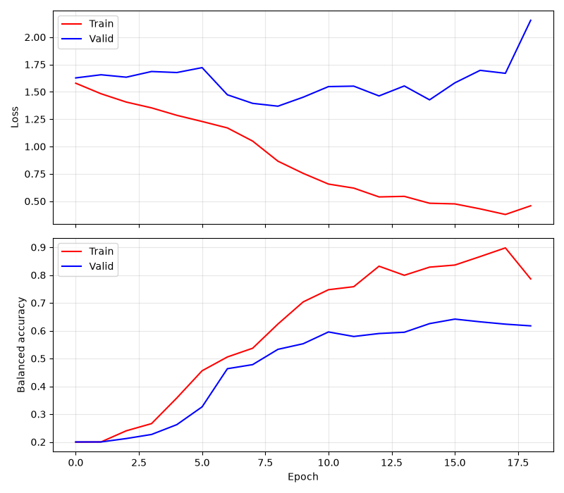
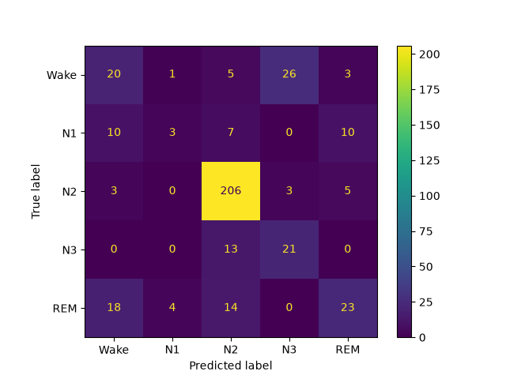
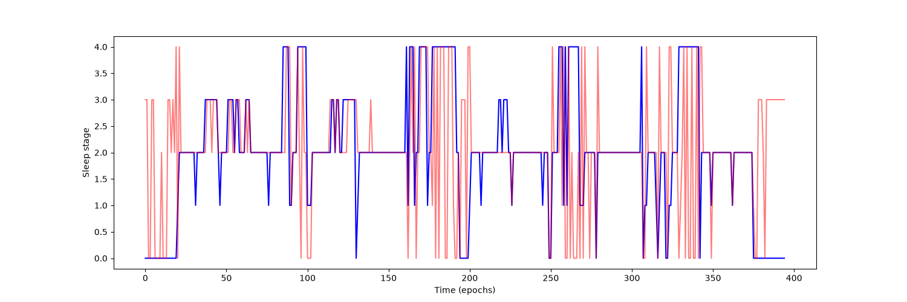

Note
Go to the end to download the full example code.
Sleep staging on the Sleep Physionet dataset using Chambon2018 network#
This tutorial shows how to train and test a sleep staging neural network with Braindecode. We adapt the time distributed approach of [1] to learn on sequences of EEG windows using the openly accessible Sleep Physionet dataset [2] [3].
# Authors: Hubert Banville <hubert.jbanville@gmail.com>
#
# License: BSD (3-clause)
Loading and preprocessing the dataset#
Loading#
First, we load the data using the
braindecode.datasets.sleep_physionet.SleepPhysionet class. We load
two recordings from two different individuals: we will use the first one to
train our network and the second one to evaluate performance (as in the MNE
sleep staging example).
from numbers import Integral
from braindecode.datasets import SleepPhysionet
subject_ids = [0, 1]
dataset = SleepPhysionet(subject_ids=subject_ids, recording_ids=[2], crop_wake_mins=30)
0%| | 0.00/51.6M [00:00<?, ?B/s]
0%| | 33.8k/51.6M [00:00<03:43, 230kB/s]
0%| | 66.6k/51.6M [00:00<03:54, 220kB/s]
0%| | 91.1k/51.6M [00:00<04:35, 187kB/s]
0%| | 111k/51.6M [00:00<04:49, 178kB/s]
0%| | 140k/51.6M [00:00<05:04, 169kB/s]
0%|▏ | 173k/51.6M [00:00<04:45, 180kB/s]
0%|▏ | 206k/51.6M [00:01<04:56, 173kB/s]
0%|▏ | 239k/51.6M [00:01<04:19, 198kB/s]
1%|▏ | 271k/51.6M [00:01<04:20, 197kB/s]
1%|▏ | 304k/51.6M [00:01<04:22, 196kB/s]
1%|▎ | 337k/51.6M [00:01<04:23, 194kB/s]
1%|▎ | 370k/51.6M [00:01<04:18, 198kB/s]
1%|▎ | 390k/51.6M [00:02<04:19, 197kB/s]
1%|▎ | 419k/51.6M [00:02<04:11, 203kB/s]
1%|▎ | 460k/51.6M [00:02<03:48, 224kB/s]
1%|▎ | 482k/51.6M [00:02<03:50, 222kB/s]
1%|▍ | 505k/51.6M [00:02<04:28, 190kB/s]
1%|▍ | 534k/51.6M [00:02<04:37, 184kB/s]
1%|▍ | 566k/51.6M [00:02<04:57, 172kB/s]
1%|▍ | 615k/51.6M [00:03<04:08, 205kB/s]
1%|▍ | 648k/51.6M [00:03<04:31, 188kB/s]
1%|▌ | 681k/51.6M [00:03<04:05, 208kB/s]
1%|▌ | 714k/51.6M [00:03<04:10, 203kB/s]
1%|▌ | 755k/51.6M [00:03<04:06, 206kB/s]
2%|▌ | 776k/51.6M [00:03<04:07, 205kB/s]
2%|▌ | 798k/51.6M [00:04<04:48, 176kB/s]
2%|▋ | 828k/51.6M [00:04<04:55, 172kB/s]
2%|▋ | 861k/51.6M [00:04<04:33, 185kB/s]
2%|▋ | 894k/51.6M [00:04<04:28, 189kB/s]
2%|▋ | 927k/51.6M [00:04<04:24, 192kB/s]
2%|▋ | 959k/51.6M [00:04<04:28, 189kB/s]
2%|▋ | 992k/51.6M [00:05<04:23, 192kB/s]
2%|▊ | 1.03M/51.6M [00:05<04:22, 192kB/s]
2%|▊ | 1.06M/51.6M [00:05<04:15, 198kB/s]
2%|▊ | 1.09M/51.6M [00:05<04:07, 204kB/s]
2%|▊ | 1.12M/51.6M [00:05<04:14, 198kB/s]
2%|▊ | 1.16M/51.6M [00:05<04:19, 194kB/s]
2%|▉ | 1.19M/51.6M [00:06<04:14, 198kB/s]
2%|▉ | 1.22M/51.6M [00:06<04:17, 196kB/s]
2%|▉ | 1.25M/51.6M [00:06<04:19, 194kB/s]
2%|▉ | 1.29M/51.6M [00:06<04:37, 181kB/s]
3%|▉ | 1.32M/51.6M [00:06<04:12, 200kB/s]
3%|▉ | 1.35M/51.6M [00:06<04:14, 198kB/s]
3%|█ | 1.37M/51.6M [00:07<04:35, 182kB/s]
3%|█ | 1.41M/51.6M [00:07<03:51, 217kB/s]
3%|█ | 1.43M/51.6M [00:07<04:22, 191kB/s]
3%|█ | 1.47M/51.6M [00:07<04:36, 182kB/s]
3%|█ | 1.49M/51.6M [00:07<04:34, 183kB/s]
3%|█ | 1.52M/51.6M [00:07<04:38, 180kB/s]
3%|█▏ | 1.55M/51.6M [00:08<04:56, 169kB/s]
3%|█▏ | 1.58M/51.6M [00:08<04:18, 193kB/s]
3%|█▏ | 1.61M/51.6M [00:08<04:20, 192kB/s]
3%|█▏ | 1.64M/51.6M [00:08<04:18, 193kB/s]
3%|█▏ | 1.66M/51.6M [00:08<04:22, 190kB/s]
3%|█▎ | 1.70M/51.6M [00:08<04:32, 183kB/s]
3%|█▎ | 1.73M/51.6M [00:09<05:19, 156kB/s]
3%|█▎ | 1.75M/51.6M [00:09<06:21, 131kB/s]
3%|█▎ | 1.77M/51.6M [00:09<06:45, 123kB/s]
3%|█▎ | 1.78M/51.6M [00:09<07:00, 119kB/s]
3%|█▎ | 1.80M/51.6M [00:09<07:11, 115kB/s]
4%|█▎ | 1.83M/51.6M [00:09<06:05, 136kB/s]
4%|█▍ | 1.87M/51.6M [00:10<05:15, 158kB/s]
4%|█▍ | 1.89M/51.6M [00:10<04:58, 166kB/s]
4%|█▍ | 1.93M/51.6M [00:10<04:43, 176kB/s]
4%|█▍ | 1.96M/51.6M [00:10<04:24, 188kB/s]
4%|█▍ | 1.98M/51.6M [00:10<04:32, 182kB/s]
4%|█▍ | 2.01M/51.6M [00:10<04:14, 195kB/s]
4%|█▌ | 2.04M/51.6M [00:11<04:11, 197kB/s]
4%|█▌ | 2.06M/51.6M [00:11<04:23, 188kB/s]
4%|█▌ | 2.09M/51.6M [00:11<04:27, 185kB/s]
4%|█▌ | 2.11M/51.6M [00:11<04:43, 175kB/s]
4%|█▌ | 2.14M/51.6M [00:11<05:01, 164kB/s]
4%|█▌ | 2.17M/51.6M [00:11<04:40, 176kB/s]
4%|█▌ | 2.19M/51.6M [00:11<04:52, 169kB/s]
4%|█▋ | 2.22M/51.6M [00:12<04:16, 192kB/s]
4%|█▋ | 2.25M/51.6M [00:12<04:32, 181kB/s]
4%|█▋ | 2.27M/51.6M [00:12<04:29, 183kB/s]
4%|█▋ | 2.30M/51.6M [00:12<04:34, 180kB/s]
5%|█▋ | 2.34M/51.6M [00:12<04:48, 171kB/s]
5%|█▋ | 2.37M/51.6M [00:12<04:08, 198kB/s]
5%|█▊ | 2.40M/51.6M [00:13<04:04, 201kB/s]
5%|█▊ | 2.42M/51.6M [00:13<04:19, 190kB/s]
5%|█▊ | 2.47M/51.6M [00:13<03:54, 210kB/s]
5%|█▊ | 2.49M/51.6M [00:13<03:47, 216kB/s]
5%|█▊ | 2.52M/51.6M [00:13<04:09, 197kB/s]
5%|█▉ | 2.55M/51.6M [00:13<04:10, 196kB/s]
5%|█▉ | 2.58M/51.6M [00:13<04:10, 196kB/s]
5%|█▉ | 2.61M/51.6M [00:14<04:02, 202kB/s]
5%|█▉ | 2.66M/51.6M [00:14<03:43, 219kB/s]
5%|█▉ | 2.68M/51.6M [00:14<04:06, 198kB/s]
5%|██ | 2.72M/51.6M [00:14<03:46, 216kB/s]
5%|██ | 2.74M/51.6M [00:14<04:04, 200kB/s]
5%|██ | 2.76M/51.6M [00:14<04:06, 198kB/s]
5%|██ | 2.79M/51.6M [00:15<04:42, 173kB/s]
5%|██ | 2.83M/51.6M [00:15<04:04, 200kB/s]
6%|██ | 2.86M/51.6M [00:15<04:03, 200kB/s]
6%|██▏ | 2.89M/51.6M [00:15<04:34, 178kB/s]
6%|██▏ | 2.94M/51.6M [00:15<03:59, 203kB/s]
6%|██▏ | 2.98M/51.6M [00:15<03:58, 204kB/s]
6%|██▏ | 3.01M/51.6M [00:16<04:22, 185kB/s]
6%|██▏ | 3.04M/51.6M [00:16<04:34, 177kB/s]
6%|██▎ | 3.07M/51.6M [00:16<04:11, 193kB/s]
6%|██▎ | 3.11M/51.6M [00:16<03:52, 209kB/s]
6%|██▎ | 3.14M/51.6M [00:16<04:29, 180kB/s]
6%|██▎ | 3.17M/51.6M [00:16<04:13, 191kB/s]
6%|██▎ | 3.20M/51.6M [00:17<04:10, 193kB/s]
6%|██▍ | 3.24M/51.6M [00:17<04:17, 188kB/s]
6%|██▍ | 3.28M/51.6M [00:17<03:41, 218kB/s]
6%|██▍ | 3.30M/51.6M [00:17<04:00, 201kB/s]
6%|██▍ | 3.34M/51.6M [00:17<04:05, 197kB/s]
7%|██▍ | 3.38M/51.6M [00:17<03:49, 210kB/s]
7%|██▌ | 3.40M/51.6M [00:18<04:23, 183kB/s]
7%|██▌ | 3.44M/51.6M [00:18<03:56, 204kB/s]
7%|██▌ | 3.47M/51.6M [00:18<04:20, 185kB/s]
7%|██▌ | 3.49M/51.6M [00:18<04:29, 179kB/s]
7%|██▌ | 3.52M/51.6M [00:18<04:06, 195kB/s]
7%|██▌ | 3.55M/51.6M [00:18<04:06, 195kB/s]
7%|██▋ | 3.58M/51.6M [00:19<04:11, 191kB/s]
7%|██▋ | 3.61M/51.6M [00:19<04:06, 195kB/s]
7%|██▋ | 3.65M/51.6M [00:19<04:30, 177kB/s]
7%|██▋ | 3.68M/51.6M [00:19<04:12, 190kB/s]
7%|██▋ | 3.70M/51.6M [00:19<04:10, 191kB/s]
7%|██▋ | 3.72M/51.6M [00:19<04:12, 190kB/s]
7%|██▊ | 3.74M/51.6M [00:19<04:25, 180kB/s]
7%|██▊ | 3.76M/51.6M [00:20<04:31, 176kB/s]
7%|██▊ | 3.78M/51.6M [00:20<04:48, 166kB/s]
7%|██▊ | 3.79M/51.6M [00:20<06:53, 116kB/s]
7%|██▊ | 3.81M/51.6M [00:20<06:23, 125kB/s]
7%|██▊ | 3.83M/51.6M [00:20<06:36, 121kB/s]
7%|██▊ | 3.86M/51.6M [00:20<05:47, 138kB/s]
8%|██▊ | 3.89M/51.6M [00:21<05:13, 152kB/s]
8%|██▉ | 3.91M/51.6M [00:21<05:10, 154kB/s]
8%|██▉ | 3.93M/51.6M [00:21<04:34, 174kB/s]
8%|██▉ | 3.95M/51.6M [00:21<04:54, 162kB/s]
8%|██▉ | 3.97M/51.6M [00:21<05:42, 139kB/s]
8%|██▉ | 3.99M/51.6M [00:21<05:53, 135kB/s]
8%|██▉ | 4.01M/51.6M [00:21<05:50, 136kB/s]
8%|██▉ | 4.02M/51.6M [00:22<06:37, 120kB/s]
8%|██▉ | 4.06M/51.6M [00:22<05:25, 146kB/s]
8%|███ | 4.08M/51.6M [00:22<05:48, 136kB/s]
8%|███ | 4.09M/51.6M [00:22<06:22, 124kB/s]
8%|███ | 4.11M/51.6M [00:22<06:57, 114kB/s]
8%|███ | 4.12M/51.6M [00:22<07:54, 100kB/s]
8%|███ | 4.14M/51.6M [00:23<07:44, 102kB/s]
8%|██▉ | 4.15M/51.6M [00:23<08:41, 91.0kB/s]
8%|██▉ | 4.17M/51.6M [00:23<08:20, 94.7kB/s]
8%|███ | 4.19M/51.6M [00:23<07:49, 101kB/s]
8%|███ | 4.23M/51.6M [00:23<05:37, 140kB/s]
8%|███▏ | 4.25M/51.6M [00:23<05:27, 144kB/s]
8%|███▏ | 4.27M/51.6M [00:24<05:32, 143kB/s]
8%|███▏ | 4.30M/51.6M [00:24<04:29, 176kB/s]
8%|███▏ | 4.33M/51.6M [00:24<04:15, 185kB/s]
8%|███▏ | 4.37M/51.6M [00:24<04:13, 186kB/s]
9%|███▏ | 4.40M/51.6M [00:24<04:10, 189kB/s]
9%|███▎ | 4.43M/51.6M [00:24<04:03, 194kB/s]
9%|███▎ | 4.47M/51.6M [00:24<04:00, 196kB/s]
9%|███▎ | 4.50M/51.6M [00:25<03:57, 199kB/s]
9%|███▎ | 4.53M/51.6M [00:25<03:53, 202kB/s]
9%|███▎ | 4.56M/51.6M [00:25<03:49, 205kB/s]
9%|███▍ | 4.60M/51.6M [00:25<04:08, 189kB/s]
9%|███▍ | 4.63M/51.6M [00:25<03:45, 209kB/s]
9%|███▍ | 4.66M/51.6M [00:25<03:48, 205kB/s]
9%|███▍ | 4.70M/51.6M [00:26<03:58, 197kB/s]
9%|███▍ | 4.73M/51.6M [00:26<03:58, 197kB/s]
9%|███▌ | 4.76M/51.6M [00:26<04:13, 185kB/s]
9%|███▌ | 4.78M/51.6M [00:26<04:24, 177kB/s]
9%|███▌ | 4.80M/51.6M [00:26<04:51, 160kB/s]
9%|███▌ | 4.81M/51.6M [00:26<05:19, 147kB/s]
9%|███▌ | 4.83M/51.6M [00:27<05:17, 147kB/s]
9%|███▌ | 4.86M/51.6M [00:27<05:06, 153kB/s]
9%|███▌ | 4.89M/51.6M [00:27<04:59, 156kB/s]
10%|███▋ | 4.92M/51.6M [00:27<04:16, 182kB/s]
10%|███▋ | 4.96M/51.6M [00:27<04:45, 164kB/s]
10%|███▋ | 4.99M/51.6M [00:27<04:03, 192kB/s]
10%|███▋ | 5.02M/51.6M [00:28<04:00, 193kB/s]
10%|███▋ | 5.06M/51.6M [00:28<04:11, 185kB/s]
10%|███▋ | 5.09M/51.6M [00:28<03:56, 197kB/s]
10%|███▊ | 5.12M/51.6M [00:28<03:56, 196kB/s]
10%|███▊ | 5.15M/51.6M [00:28<04:02, 191kB/s]
10%|███▊ | 5.19M/51.6M [00:28<03:57, 195kB/s]
10%|███▊ | 5.22M/51.6M [00:29<04:26, 174kB/s]
10%|███▊ | 5.24M/51.6M [00:29<04:30, 171kB/s]
10%|███▉ | 5.27M/51.6M [00:29<04:36, 168kB/s]
10%|███▉ | 5.31M/51.6M [00:29<04:01, 191kB/s]
10%|███▉ | 5.33M/51.6M [00:29<04:18, 179kB/s]
10%|███▉ | 5.37M/51.6M [00:29<04:16, 181kB/s]
10%|███▉ | 5.40M/51.6M [00:30<04:08, 186kB/s]
11%|███▉ | 5.43M/51.6M [00:30<04:19, 178kB/s]
11%|████ | 5.45M/51.6M [00:30<04:19, 178kB/s]
11%|████ | 5.47M/51.6M [00:30<04:21, 176kB/s]
11%|████ | 5.49M/51.6M [00:30<04:37, 166kB/s]
11%|████ | 5.51M/51.6M [00:30<05:18, 145kB/s]
11%|████ | 5.52M/51.6M [00:30<05:52, 131kB/s]
11%|████ | 5.54M/51.6M [00:31<06:26, 119kB/s]
11%|████ | 5.55M/51.6M [00:31<06:30, 118kB/s]
11%|████ | 5.56M/51.6M [00:31<06:58, 110kB/s]
11%|████ | 5.58M/51.6M [00:31<07:22, 104kB/s]
11%|████▏ | 5.61M/51.6M [00:31<07:33, 101kB/s]
11%|████▏ | 5.64M/51.6M [00:32<06:56, 110kB/s]
11%|████ | 5.65M/51.6M [00:32<08:24, 91.1kB/s]
11%|████ | 5.66M/51.6M [00:32<08:55, 85.9kB/s]
11%|████ | 5.68M/51.6M [00:32<08:49, 86.7kB/s]
11%|████ | 5.69M/51.6M [00:32<07:55, 96.7kB/s]
11%|████▏ | 5.71M/51.6M [00:32<06:57, 110kB/s]
11%|████▏ | 5.73M/51.6M [00:32<06:16, 122kB/s]
11%|████▏ | 5.76M/51.6M [00:33<05:06, 149kB/s]
11%|████▎ | 5.78M/51.6M [00:33<05:11, 147kB/s]
11%|████▎ | 5.81M/51.6M [00:33<04:44, 161kB/s]
11%|████▎ | 5.84M/51.6M [00:33<04:22, 174kB/s]
11%|████▎ | 5.86M/51.6M [00:33<04:24, 173kB/s]
11%|████▎ | 5.89M/51.6M [00:33<04:13, 180kB/s]
11%|████▎ | 5.92M/51.6M [00:34<03:55, 194kB/s]
12%|████▍ | 5.94M/51.6M [00:34<04:05, 186kB/s]
12%|████▍ | 5.97M/51.6M [00:34<04:10, 183kB/s]
12%|████▍ | 5.99M/51.6M [00:34<04:40, 162kB/s]
12%|████▍ | 6.02M/51.6M [00:34<03:58, 191kB/s]
12%|████▍ | 6.05M/51.6M [00:34<03:57, 191kB/s]
12%|████▍ | 6.10M/51.6M [00:34<03:33, 214kB/s]
12%|████▌ | 6.12M/51.6M [00:35<04:24, 172kB/s]
12%|████▌ | 6.14M/51.6M [00:35<05:11, 146kB/s]
12%|████▌ | 6.15M/51.6M [00:35<05:24, 140kB/s]
12%|████▌ | 6.19M/51.6M [00:35<04:58, 152kB/s]
12%|████▌ | 6.22M/51.6M [00:35<04:48, 158kB/s]
12%|████▌ | 6.25M/51.6M [00:35<04:02, 187kB/s]
12%|████▌ | 6.27M/51.6M [00:36<04:37, 163kB/s]
12%|████▋ | 6.30M/51.6M [00:36<04:29, 168kB/s]
12%|████▋ | 6.32M/51.6M [00:36<04:43, 160kB/s]
12%|████▋ | 6.35M/51.6M [00:36<04:39, 162kB/s]
12%|████▋ | 6.37M/51.6M [00:36<04:44, 159kB/s]
12%|████▋ | 6.39M/51.6M [00:36<04:18, 175kB/s]
12%|████▋ | 6.42M/51.6M [00:37<04:56, 152kB/s]
12%|████▋ | 6.45M/51.6M [00:37<04:32, 166kB/s]
13%|████▊ | 6.47M/51.6M [00:37<04:30, 167kB/s]
13%|████▊ | 6.50M/51.6M [00:37<04:37, 162kB/s]
13%|████▊ | 6.53M/51.6M [00:37<04:23, 171kB/s]
13%|████▊ | 6.55M/51.6M [00:37<04:23, 171kB/s]
13%|████▊ | 6.58M/51.6M [00:37<04:11, 179kB/s]
13%|████▊ | 6.60M/51.6M [00:38<04:53, 153kB/s]
13%|████▉ | 6.64M/51.6M [00:38<03:55, 191kB/s]
13%|████▉ | 6.69M/51.6M [00:38<03:51, 194kB/s]
13%|████▉ | 6.71M/51.6M [00:38<04:01, 186kB/s]
13%|████▉ | 6.74M/51.6M [00:38<04:12, 178kB/s]
13%|████▉ | 6.78M/51.6M [00:39<04:07, 181kB/s]
13%|█████ | 6.82M/51.6M [00:39<03:48, 196kB/s]
13%|█████ | 6.84M/51.6M [00:39<04:31, 165kB/s]
13%|█████ | 6.87M/51.6M [00:39<03:57, 189kB/s]
13%|█████ | 6.91M/51.6M [00:39<03:56, 189kB/s]
13%|█████ | 6.93M/51.6M [00:39<04:01, 185kB/s]
13%|█████ | 6.96M/51.6M [00:39<03:59, 187kB/s]
14%|█████▏ | 6.99M/51.6M [00:40<03:55, 190kB/s]
14%|█████▏ | 7.02M/51.6M [00:40<03:57, 188kB/s]
14%|█████▏ | 7.05M/51.6M [00:40<04:04, 182kB/s]
14%|█████▏ | 7.07M/51.6M [00:40<04:17, 173kB/s]
14%|█████▏ | 7.09M/51.6M [00:40<04:23, 169kB/s]
14%|█████▏ | 7.12M/51.6M [00:40<04:23, 169kB/s]
14%|█████▎ | 7.15M/51.6M [00:41<04:25, 167kB/s]
14%|█████▎ | 7.19M/51.6M [00:41<04:23, 169kB/s]
14%|█████▎ | 7.22M/51.6M [00:41<04:18, 172kB/s]
14%|█████▎ | 7.24M/51.6M [00:41<03:59, 185kB/s]
14%|█████▎ | 7.26M/51.6M [00:41<03:58, 186kB/s]
14%|█████▎ | 7.28M/51.6M [00:41<04:29, 165kB/s]
14%|█████▍ | 7.32M/51.6M [00:42<04:12, 176kB/s]
14%|█████▍ | 7.35M/51.6M [00:42<04:07, 179kB/s]
14%|█████▍ | 7.38M/51.6M [00:42<04:03, 182kB/s]
14%|█████▍ | 7.40M/51.6M [00:42<04:08, 178kB/s]
14%|█████▍ | 7.42M/51.6M [00:42<04:07, 179kB/s]
14%|█████▍ | 7.45M/51.6M [00:42<04:15, 173kB/s]
14%|█████▌ | 7.48M/51.6M [00:42<04:16, 172kB/s]
15%|█████▌ | 7.51M/51.6M [00:43<03:57, 186kB/s]
15%|█████▌ | 7.55M/51.6M [00:43<03:52, 189kB/s]
15%|█████▌ | 7.57M/51.6M [00:43<04:09, 177kB/s]
15%|█████▌ | 7.60M/51.6M [00:43<03:48, 192kB/s]
15%|█████▌ | 7.63M/51.6M [00:43<03:48, 193kB/s]
15%|█████▋ | 7.65M/51.6M [00:43<04:00, 183kB/s]
15%|█████▋ | 7.68M/51.6M [00:43<03:49, 192kB/s]
15%|█████▋ | 7.71M/51.6M [00:44<03:45, 195kB/s]
15%|█████▋ | 7.74M/51.6M [00:44<03:38, 201kB/s]
15%|█████▋ | 7.76M/51.6M [00:44<04:00, 183kB/s]
15%|█████▋ | 7.80M/51.6M [00:44<03:18, 221kB/s]
15%|█████▊ | 7.82M/51.6M [00:44<03:46, 193kB/s]
15%|█████▊ | 7.84M/51.6M [00:44<03:49, 191kB/s]
15%|█████▊ | 7.87M/51.6M [00:45<04:08, 176kB/s]
15%|█████▊ | 7.91M/51.6M [00:45<03:57, 184kB/s]
15%|█████▊ | 7.94M/51.6M [00:45<03:49, 191kB/s]
15%|█████▊ | 7.96M/51.6M [00:45<03:50, 190kB/s]
15%|█████▊ | 7.98M/51.6M [00:45<04:10, 174kB/s]
15%|█████▉ | 8.00M/51.6M [00:45<04:12, 173kB/s]
16%|█████▉ | 8.01M/51.6M [00:45<04:13, 172kB/s]
16%|█████▉ | 8.04M/51.6M [00:46<05:02, 144kB/s]
16%|█████▉ | 8.07M/51.6M [00:46<04:20, 167kB/s]
16%|█████▉ | 8.10M/51.6M [00:46<04:17, 169kB/s]
16%|█████▉ | 8.14M/51.6M [00:46<04:08, 175kB/s]
16%|██████ | 8.17M/51.6M [00:46<04:03, 178kB/s]
16%|██████ | 8.20M/51.6M [00:46<03:56, 183kB/s]
16%|██████ | 8.23M/51.6M [00:47<03:55, 184kB/s]
16%|██████ | 8.27M/51.6M [00:47<03:54, 185kB/s]
16%|██████ | 8.30M/51.6M [00:47<04:00, 180kB/s]
16%|██████▏ | 8.33M/51.6M [00:47<04:01, 180kB/s]
16%|██████▏ | 8.37M/51.6M [00:47<03:59, 181kB/s]
16%|██████▏ | 8.40M/51.6M [00:47<03:49, 188kB/s]
16%|██████▏ | 8.43M/51.6M [00:48<03:54, 184kB/s]
16%|██████▏ | 8.46M/51.6M [00:48<03:49, 188kB/s]
16%|██████▎ | 8.50M/51.6M [00:48<04:00, 179kB/s]
17%|██████▎ | 8.53M/51.6M [00:48<04:15, 169kB/s]
17%|██████▎ | 8.55M/51.6M [00:48<04:15, 169kB/s]
17%|██████▎ | 8.56M/51.6M [00:48<04:31, 159kB/s]
17%|██████▎ | 8.58M/51.6M [00:49<05:27, 131kB/s]
17%|██████▎ | 8.59M/51.6M [00:49<06:00, 120kB/s]
17%|██████▎ | 8.61M/51.6M [00:49<05:50, 123kB/s]
17%|██████▎ | 8.63M/51.6M [00:49<06:39, 108kB/s]
17%|██████▎ | 8.66M/51.6M [00:49<05:44, 125kB/s]
17%|██████▍ | 8.68M/51.6M [00:50<06:09, 116kB/s]
17%|██████▍ | 8.69M/51.6M [00:50<05:49, 123kB/s]
17%|██████▍ | 8.71M/51.6M [00:50<05:43, 125kB/s]
17%|██████▍ | 8.73M/51.6M [00:50<06:07, 117kB/s]
17%|██████▎ | 8.74M/51.6M [00:50<07:11, 99.3kB/s]
17%|██████▎ | 8.76M/51.6M [00:50<08:13, 86.8kB/s]
17%|██████▎ | 8.79M/51.6M [00:51<07:15, 98.2kB/s]
17%|██████▎ | 8.81M/51.6M [00:51<07:55, 90.1kB/s]
17%|██████▎ | 8.82M/51.6M [00:51<08:21, 85.3kB/s]
17%|██████▎ | 8.84M/51.6M [00:51<08:36, 82.8kB/s]
17%|██████▎ | 8.86M/51.6M [00:52<08:15, 86.4kB/s]
17%|██████▎ | 8.87M/51.6M [00:52<07:58, 89.3kB/s]
17%|██████▎ | 8.89M/51.6M [00:52<07:25, 95.8kB/s]
17%|██████▌ | 8.92M/51.6M [00:52<05:52, 121kB/s]
17%|██████▌ | 8.95M/51.6M [00:52<05:19, 134kB/s]
17%|██████▌ | 8.99M/51.6M [00:52<04:29, 158kB/s]
17%|██████▋ | 9.02M/51.6M [00:53<04:13, 168kB/s]
18%|██████▋ | 9.04M/51.6M [00:53<04:11, 169kB/s]
18%|██████▋ | 9.08M/51.6M [00:53<03:50, 185kB/s]
18%|██████▋ | 9.10M/51.6M [00:53<03:48, 186kB/s]
18%|██████▋ | 9.12M/51.6M [00:53<04:11, 169kB/s]
18%|██████▋ | 9.15M/51.6M [00:53<04:00, 177kB/s]
18%|██████▊ | 9.18M/51.6M [00:53<03:46, 188kB/s]
18%|██████▊ | 9.22M/51.6M [00:54<03:55, 180kB/s]
18%|██████▊ | 9.25M/51.6M [00:54<03:38, 194kB/s]
18%|██████▊ | 9.28M/51.6M [00:54<03:58, 177kB/s]
18%|██████▊ | 9.32M/51.6M [00:54<03:47, 186kB/s]
18%|██████▉ | 9.34M/51.6M [00:54<03:34, 197kB/s]
18%|██████▉ | 9.36M/51.6M [00:54<03:47, 186kB/s]
18%|██████▉ | 9.40M/51.6M [00:55<03:57, 178kB/s]
18%|██████▉ | 9.43M/51.6M [00:55<03:41, 190kB/s]
18%|██████▉ | 9.47M/51.6M [00:55<03:34, 196kB/s]
18%|██████▉ | 9.50M/51.6M [00:55<03:59, 176kB/s]
18%|███████ | 9.53M/51.6M [00:55<03:52, 181kB/s]
19%|███████ | 9.56M/51.6M [00:55<03:59, 175kB/s]
19%|███████ | 9.59M/51.6M [00:56<03:38, 192kB/s]
19%|███████ | 9.63M/51.6M [00:56<03:22, 208kB/s]
19%|███████ | 9.66M/51.6M [00:56<03:36, 194kB/s]
19%|███████ | 9.68M/51.6M [00:56<03:45, 186kB/s]
19%|███████▏ | 9.71M/51.6M [00:56<03:45, 186kB/s]
19%|███████▏ | 9.74M/51.6M [00:56<03:55, 178kB/s]
19%|███████▏ | 9.77M/51.6M [00:57<03:39, 191kB/s]
19%|███████▏ | 9.79M/51.6M [00:57<03:57, 176kB/s]
19%|███████▏ | 9.82M/51.6M [00:57<03:58, 175kB/s]
19%|███████▎ | 9.86M/51.6M [00:57<03:45, 185kB/s]
19%|███████▎ | 9.90M/51.6M [00:57<03:26, 202kB/s]
19%|███████▎ | 9.92M/51.6M [00:57<03:57, 175kB/s]
19%|███████▎ | 9.95M/51.6M [00:58<04:22, 159kB/s]
19%|███████▎ | 9.99M/51.6M [00:58<04:13, 164kB/s]
19%|███████▎ | 10.0M/51.6M [00:58<04:18, 161kB/s]
19%|███████▍ | 10.0M/51.6M [00:58<03:57, 175kB/s]
19%|███████▍ | 10.1M/51.6M [00:58<04:20, 159kB/s]
20%|███████▍ | 10.1M/51.6M [00:58<04:12, 165kB/s]
20%|███████▍ | 10.1M/51.6M [00:59<04:14, 163kB/s]
20%|███████▍ | 10.1M/51.6M [00:59<04:18, 160kB/s]
20%|███████▍ | 10.2M/51.6M [00:59<04:59, 139kB/s]
20%|███████▌ | 10.2M/51.6M [00:59<04:29, 154kB/s]
20%|███████▌ | 10.2M/51.6M [00:59<04:43, 146kB/s]
20%|███████▌ | 10.2M/51.6M [00:59<04:57, 139kB/s]
20%|███████▌ | 10.2M/51.6M [01:00<05:46, 119kB/s]
20%|███████▌ | 10.3M/51.6M [01:00<05:25, 127kB/s]
20%|███████▌ | 10.3M/51.6M [01:00<05:28, 126kB/s]
20%|███████▌ | 10.3M/51.6M [01:00<05:19, 129kB/s]
20%|███████▌ | 10.3M/51.6M [01:00<05:19, 129kB/s]
20%|███████▌ | 10.3M/51.6M [01:00<05:33, 124kB/s]
20%|███████▋ | 10.4M/51.6M [01:01<05:19, 129kB/s]
20%|███████▋ | 10.4M/51.6M [01:01<05:29, 125kB/s]
20%|███████▋ | 10.4M/51.6M [01:01<06:00, 114kB/s]
20%|███████▋ | 10.4M/51.6M [01:01<06:25, 107kB/s]
20%|███████▋ | 10.5M/51.6M [01:01<06:00, 114kB/s]
20%|███████▋ | 10.5M/51.6M [01:02<06:29, 106kB/s]
20%|███████▌ | 10.5M/51.6M [01:02<06:55, 99.1kB/s]
20%|███████▋ | 10.5M/51.6M [01:02<06:42, 102kB/s]
20%|███████▌ | 10.5M/51.6M [01:02<06:57, 98.4kB/s]
20%|███████▋ | 10.5M/51.6M [01:02<06:43, 102kB/s]
20%|███████▌ | 10.5M/51.6M [01:02<07:26, 91.9kB/s]
20%|███████▌ | 10.6M/51.6M [01:03<08:16, 82.7kB/s]
21%|███████▌ | 10.6M/51.6M [01:03<07:30, 91.0kB/s]
21%|███████▌ | 10.6M/51.6M [01:03<08:42, 78.5kB/s]
21%|███████▌ | 10.6M/51.6M [01:03<09:17, 73.5kB/s]
21%|███████▌ | 10.6M/51.6M [01:03<08:01, 85.2kB/s]
21%|███████▋ | 10.6M/51.6M [01:04<07:09, 95.4kB/s]
21%|███████▊ | 10.7M/51.6M [01:04<05:30, 124kB/s]
21%|███████▉ | 10.7M/51.6M [01:04<04:51, 140kB/s]
21%|███████▉ | 10.7M/51.6M [01:04<03:57, 172kB/s]
21%|███████▉ | 10.8M/51.6M [01:04<04:08, 164kB/s]
21%|███████▉ | 10.8M/51.6M [01:04<04:08, 164kB/s]
21%|███████▉ | 10.8M/51.6M [01:05<04:04, 167kB/s]
21%|████████ | 10.9M/51.6M [01:05<03:32, 192kB/s]
21%|████████ | 10.9M/51.6M [01:05<03:55, 173kB/s]
21%|████████ | 10.9M/51.6M [01:05<03:48, 178kB/s]
21%|████████ | 11.0M/51.6M [01:05<03:40, 184kB/s]
21%|████████ | 11.0M/51.6M [01:05<03:38, 186kB/s]
21%|████████ | 11.0M/51.6M [01:06<03:28, 195kB/s]
21%|████████▏ | 11.0M/51.6M [01:06<03:26, 196kB/s]
21%|████████▏ | 11.1M/51.6M [01:06<03:48, 178kB/s]
22%|████████▏ | 11.1M/51.6M [01:06<03:25, 197kB/s]
22%|████████▏ | 11.1M/51.6M [01:06<03:46, 179kB/s]
22%|████████▏ | 11.2M/51.6M [01:06<03:08, 215kB/s]
22%|████████▏ | 11.2M/51.6M [01:06<03:30, 192kB/s]
22%|████████▎ | 11.2M/51.6M [01:07<04:19, 155kB/s]
22%|████████▎ | 11.2M/51.6M [01:07<04:22, 154kB/s]
22%|████████▎ | 11.3M/51.6M [01:07<06:29, 104kB/s]
22%|████████ | 11.3M/51.6M [01:07<07:25, 90.6kB/s]
22%|████████ | 11.3M/51.6M [01:08<08:12, 81.8kB/s]
22%|████████ | 11.3M/51.6M [01:08<07:28, 89.8kB/s]
22%|████████ | 11.3M/51.6M [01:08<08:26, 79.5kB/s]
22%|████████▎ | 11.3M/51.6M [01:08<06:40, 101kB/s]
22%|████████▎ | 11.4M/51.6M [01:08<06:16, 107kB/s]
22%|████████▍ | 11.4M/51.6M [01:09<05:10, 130kB/s]
22%|████████▍ | 11.4M/51.6M [01:09<05:06, 131kB/s]
22%|████████▍ | 11.4M/51.6M [01:09<04:10, 160kB/s]
22%|████████▍ | 11.5M/51.6M [01:09<04:22, 153kB/s]
22%|████████▍ | 11.5M/51.6M [01:09<03:52, 173kB/s]
22%|████████▍ | 11.5M/51.6M [01:09<03:50, 174kB/s]
22%|████████▌ | 11.6M/51.6M [01:09<03:27, 193kB/s]
22%|████████▌ | 11.6M/51.6M [01:10<03:42, 180kB/s]
23%|████████▌ | 11.6M/51.6M [01:10<03:40, 182kB/s]
23%|████████▌ | 11.7M/51.6M [01:10<03:38, 183kB/s]
23%|████████▌ | 11.7M/51.6M [01:10<03:45, 177kB/s]
23%|████████▌ | 11.7M/51.6M [01:10<04:10, 159kB/s]
23%|████████▋ | 11.7M/51.6M [01:11<04:15, 156kB/s]
23%|████████▋ | 11.8M/51.6M [01:11<04:25, 150kB/s]
23%|████████▋ | 11.8M/51.6M [01:11<04:06, 162kB/s]
23%|████████▋ | 11.8M/51.6M [01:11<04:05, 162kB/s]
23%|████████▋ | 11.9M/51.6M [01:11<03:43, 178kB/s]
23%|████████▊ | 11.9M/51.6M [01:11<03:54, 169kB/s]
23%|████████▊ | 11.9M/51.6M [01:11<03:59, 166kB/s]
23%|████████▊ | 11.9M/51.6M [01:12<04:02, 164kB/s]
23%|████████▊ | 12.0M/51.6M [01:12<03:51, 171kB/s]
23%|████████▊ | 12.0M/51.6M [01:12<03:33, 185kB/s]
23%|████████▊ | 12.0M/51.6M [01:12<03:45, 176kB/s]
23%|████████▊ | 12.1M/51.6M [01:12<03:56, 168kB/s]
23%|████████▉ | 12.1M/51.6M [01:12<03:43, 177kB/s]
23%|████████▉ | 12.1M/51.6M [01:13<03:42, 177kB/s]
24%|████████▉ | 12.2M/51.6M [01:13<03:19, 198kB/s]
24%|████████▉ | 12.2M/51.6M [01:13<03:38, 180kB/s]
24%|████████▉ | 12.2M/51.6M [01:13<03:34, 184kB/s]
24%|█████████ | 12.2M/51.6M [01:13<03:42, 177kB/s]
24%|█████████ | 12.3M/51.6M [01:13<03:28, 189kB/s]
24%|█████████ | 12.3M/51.6M [01:14<03:25, 191kB/s]
24%|█████████ | 12.3M/51.6M [01:14<03:30, 187kB/s]
24%|█████████ | 12.4M/51.6M [01:14<03:24, 192kB/s]
24%|█████████ | 12.4M/51.6M [01:14<03:37, 180kB/s]
24%|█████████▏ | 12.4M/51.6M [01:14<03:32, 184kB/s]
24%|█████████▏ | 12.4M/51.6M [01:14<03:32, 184kB/s]
24%|█████████▏ | 12.5M/51.6M [01:15<03:57, 165kB/s]
24%|█████████▏ | 12.5M/51.6M [01:15<03:40, 178kB/s]
24%|█████████▏ | 12.6M/51.6M [01:15<03:23, 192kB/s]
24%|█████████▎ | 12.6M/51.6M [01:15<03:36, 181kB/s]
24%|█████████▎ | 12.6M/51.6M [01:15<03:38, 178kB/s]
24%|█████████▎ | 12.6M/51.6M [01:16<03:34, 182kB/s]
25%|█████████▎ | 12.7M/51.6M [01:16<03:38, 178kB/s]
25%|█████████▎ | 12.7M/51.6M [01:16<03:40, 177kB/s]
25%|█████████▎ | 12.7M/51.6M [01:16<03:38, 178kB/s]
25%|█████████▍ | 12.8M/51.6M [01:16<03:50, 169kB/s]
25%|█████████▍ | 12.8M/51.6M [01:16<03:29, 185kB/s]
25%|█████████▍ | 12.8M/51.6M [01:17<03:26, 187kB/s]
25%|█████████▍ | 12.9M/51.6M [01:17<03:39, 177kB/s]
25%|█████████▍ | 12.9M/51.6M [01:17<04:00, 161kB/s]
25%|█████████▌ | 12.9M/51.6M [01:17<04:40, 138kB/s]
25%|█████████▌ | 12.9M/51.6M [01:17<05:11, 124kB/s]
25%|█████████▌ | 13.0M/51.6M [01:18<06:03, 106kB/s]
25%|█████████▎ | 13.0M/51.6M [01:18<06:31, 98.7kB/s]
25%|█████████▎ | 13.0M/51.6M [01:18<07:16, 88.6kB/s]
25%|█████████▎ | 13.0M/51.6M [01:18<07:36, 84.5kB/s]
25%|█████████▎ | 13.0M/51.6M [01:19<07:02, 91.3kB/s]
25%|█████████▌ | 13.1M/51.6M [01:19<05:26, 118kB/s]
25%|█████████▋ | 13.1M/51.6M [01:19<04:32, 141kB/s]
25%|█████████▋ | 13.1M/51.6M [01:19<04:24, 146kB/s]
25%|█████████▋ | 13.1M/51.6M [01:19<04:19, 148kB/s]
25%|█████████▋ | 13.1M/51.6M [01:19<04:39, 137kB/s]
26%|█████████▋ | 13.2M/51.6M [01:19<04:14, 151kB/s]
26%|█████████▋ | 13.2M/51.6M [01:20<04:38, 138kB/s]
26%|█████████▋ | 13.2M/51.6M [01:20<04:36, 139kB/s]
26%|█████████▋ | 13.2M/51.6M [01:20<04:26, 144kB/s]
26%|█████████▋ | 13.2M/51.6M [01:20<04:26, 144kB/s]
26%|█████████▊ | 13.2M/51.6M [01:20<04:47, 133kB/s]
26%|█████████▊ | 13.3M/51.6M [01:20<04:05, 156kB/s]
26%|█████████▊ | 13.3M/51.6M [01:20<04:04, 157kB/s]
26%|█████████▊ | 13.3M/51.6M [01:20<04:13, 151kB/s]
26%|█████████▊ | 13.3M/51.6M [01:21<05:15, 121kB/s]
26%|█████████▊ | 13.4M/51.6M [01:21<03:29, 182kB/s]
26%|█████████▊ | 13.4M/51.6M [01:21<03:31, 181kB/s]
26%|█████████▉ | 13.4M/51.6M [01:21<04:16, 149kB/s]
26%|█████████▉ | 13.4M/51.6M [01:21<04:38, 137kB/s]
26%|█████████▉ | 13.5M/51.6M [01:22<05:43, 111kB/s]
26%|█████████▋ | 13.5M/51.6M [01:22<06:33, 97.1kB/s]
26%|█████████▋ | 13.5M/51.6M [01:22<10:08, 62.7kB/s]
26%|█████████▋ | 13.5M/51.6M [01:22<10:26, 60.8kB/s]
26%|█████████▋ | 13.5M/51.6M [01:23<15:25, 41.2kB/s]
26%|█████████▋ | 13.5M/51.6M [01:23<12:42, 49.9kB/s]
26%|█████████▋ | 13.5M/51.6M [01:23<10:16, 61.7kB/s]
26%|█████████▋ | 13.6M/51.6M [01:23<07:16, 87.2kB/s]
26%|██████████ | 13.6M/51.6M [01:24<06:17, 101kB/s]
26%|██████████ | 13.6M/51.6M [01:24<04:57, 128kB/s]
26%|██████████ | 13.6M/51.6M [01:24<05:06, 124kB/s]
26%|██████████ | 13.7M/51.6M [01:24<04:30, 140kB/s]
27%|██████████ | 13.7M/51.6M [01:24<04:00, 157kB/s]
27%|██████████ | 13.7M/51.6M [01:24<04:13, 150kB/s]
27%|██████████▏ | 13.8M/51.6M [01:25<04:03, 156kB/s]
27%|██████████▏ | 13.8M/51.6M [01:25<04:10, 151kB/s]
27%|██████████▏ | 13.8M/51.6M [01:25<03:59, 158kB/s]
27%|██████████▏ | 13.8M/51.6M [01:25<03:37, 174kB/s]
27%|██████████▏ | 13.8M/51.6M [01:25<03:38, 173kB/s]
27%|██████████▏ | 13.9M/51.6M [01:25<04:19, 145kB/s]
27%|██████████▏ | 13.9M/51.6M [01:25<03:37, 173kB/s]
27%|██████████▎ | 13.9M/51.6M [01:26<03:28, 181kB/s]
27%|██████████▎ | 14.0M/51.6M [01:26<03:14, 193kB/s]
27%|██████████▎ | 14.0M/51.6M [01:26<03:25, 184kB/s]
27%|██████████▎ | 14.0M/51.6M [01:26<03:09, 198kB/s]
27%|██████████▎ | 14.1M/51.6M [01:26<03:08, 199kB/s]
27%|██████████▎ | 14.1M/51.6M [01:26<03:16, 191kB/s]
27%|██████████▍ | 14.1M/51.6M [01:26<03:09, 198kB/s]
27%|██████████▍ | 14.1M/51.6M [01:27<03:08, 198kB/s]
27%|██████████▍ | 14.2M/51.6M [01:27<03:12, 194kB/s]
28%|██████████▍ | 14.2M/51.6M [01:27<03:08, 198kB/s]
28%|██████████▍ | 14.2M/51.6M [01:27<03:22, 185kB/s]
28%|██████████▍ | 14.3M/51.6M [01:27<03:19, 187kB/s]
28%|██████████▌ | 14.3M/51.6M [01:28<03:22, 184kB/s]
28%|██████████▌ | 14.3M/51.6M [01:28<03:35, 173kB/s]
28%|██████████▌ | 14.4M/51.6M [01:28<03:09, 196kB/s]
28%|██████████▌ | 14.4M/51.6M [01:28<03:10, 196kB/s]
28%|██████████▌ | 14.4M/51.6M [01:28<03:24, 182kB/s]
28%|██████████▋ | 14.5M/51.6M [01:28<03:00, 206kB/s]
28%|██████████▋ | 14.5M/51.6M [01:28<03:13, 191kB/s]
28%|██████████▋ | 14.5M/51.6M [01:29<02:55, 211kB/s]
28%|██████████▋ | 14.5M/51.6M [01:29<02:53, 214kB/s]
28%|██████████▋ | 14.6M/51.6M [01:29<03:43, 166kB/s]
28%|██████████▋ | 14.6M/51.6M [01:29<03:39, 169kB/s]
28%|██████████▋ | 14.6M/51.6M [01:29<03:42, 166kB/s]
28%|██████████▊ | 14.6M/51.6M [01:29<04:01, 153kB/s]
28%|██████████▊ | 14.7M/51.6M [01:30<03:51, 160kB/s]
28%|██████████▊ | 14.7M/51.6M [01:30<03:28, 177kB/s]
29%|██████████▊ | 14.7M/51.6M [01:30<03:40, 167kB/s]
29%|██████████▊ | 14.8M/51.6M [01:30<03:27, 177kB/s]
29%|██████████▉ | 14.8M/51.6M [01:30<03:53, 158kB/s]
29%|██████████▉ | 14.8M/51.6M [01:30<03:50, 159kB/s]
29%|██████████▉ | 14.8M/51.6M [01:31<03:58, 154kB/s]
29%|██████████▉ | 14.8M/51.6M [01:31<04:22, 140kB/s]
29%|██████████▉ | 14.9M/51.6M [01:31<05:58, 103kB/s]
29%|██████████▋ | 14.9M/51.6M [01:31<06:21, 96.3kB/s]
29%|██████████▋ | 14.9M/51.6M [01:31<07:14, 84.6kB/s]
29%|██████████▋ | 14.9M/51.6M [01:32<07:12, 84.8kB/s]
29%|██████████▋ | 14.9M/51.6M [01:32<07:45, 78.9kB/s]
29%|███████████ | 14.9M/51.6M [01:32<06:03, 101kB/s]
29%|██████████▋ | 15.0M/51.6M [01:32<06:22, 95.9kB/s]
29%|██████████▋ | 15.0M/51.6M [01:32<06:09, 99.3kB/s]
29%|███████████ | 15.0M/51.6M [01:32<05:24, 113kB/s]
29%|███████████ | 15.0M/51.6M [01:33<04:51, 126kB/s]
29%|███████████ | 15.0M/51.6M [01:33<03:47, 161kB/s]
29%|███████████ | 15.1M/51.6M [01:33<03:35, 170kB/s]
29%|███████████▏ | 15.1M/51.6M [01:33<03:37, 168kB/s]
29%|███████████▏ | 15.1M/51.6M [01:33<03:54, 155kB/s]
29%|███████████▏ | 15.2M/51.6M [01:34<03:47, 160kB/s]
29%|███████████▏ | 15.2M/51.6M [01:34<03:28, 175kB/s]
30%|███████████▏ | 15.2M/51.6M [01:34<03:44, 162kB/s]
30%|███████████▏ | 15.2M/51.6M [01:34<04:27, 136kB/s]
30%|███████████▏ | 15.3M/51.6M [01:34<03:33, 170kB/s]
30%|███████████▎ | 15.3M/51.6M [01:34<03:34, 169kB/s]
30%|███████████▎ | 15.3M/51.6M [01:34<03:43, 163kB/s]
30%|███████████▎ | 15.3M/51.6M [01:34<03:44, 162kB/s]
30%|███████████▎ | 15.4M/51.6M [01:35<03:46, 160kB/s]
30%|███████████▎ | 15.4M/51.6M [01:35<03:57, 153kB/s]
30%|███████████▎ | 15.4M/51.6M [01:35<03:42, 163kB/s]
30%|███████████▎ | 15.4M/51.6M [01:35<03:23, 178kB/s]
30%|███████████▍ | 15.5M/51.6M [01:35<03:15, 185kB/s]
30%|███████████▍ | 15.5M/51.6M [01:35<03:18, 182kB/s]
30%|███████████▍ | 15.5M/51.6M [01:36<03:22, 178kB/s]
30%|███████████▍ | 15.6M/51.6M [01:36<03:24, 177kB/s]
30%|███████████▍ | 15.6M/51.6M [01:36<03:26, 174kB/s]
30%|███████████▍ | 15.6M/51.6M [01:36<03:31, 171kB/s]
30%|███████████▌ | 15.6M/51.6M [01:36<03:26, 174kB/s]
30%|███████████▌ | 15.7M/51.6M [01:36<03:14, 185kB/s]
30%|███████████▌ | 15.7M/51.6M [01:37<03:11, 188kB/s]
30%|███████████▌ | 15.7M/51.6M [01:37<03:19, 180kB/s]
31%|███████████▌ | 15.8M/51.6M [01:37<03:21, 178kB/s]
31%|███████████▋ | 15.8M/51.6M [01:37<03:12, 186kB/s]
31%|███████████▋ | 15.8M/51.6M [01:37<03:17, 181kB/s]
31%|███████████▋ | 15.9M/51.6M [01:37<03:06, 192kB/s]
31%|███████████▋ | 15.9M/51.6M [01:38<02:51, 209kB/s]
31%|███████████▋ | 15.9M/51.6M [01:38<03:14, 183kB/s]
31%|███████████▋ | 16.0M/51.6M [01:38<03:04, 193kB/s]
31%|███████████▊ | 16.0M/51.6M [01:38<03:02, 195kB/s]
31%|███████████▊ | 16.0M/51.6M [01:38<02:49, 210kB/s]
31%|███████████▊ | 16.0M/51.6M [01:38<03:04, 192kB/s]
31%|███████████▊ | 16.1M/51.6M [01:39<03:03, 194kB/s]
31%|███████████▊ | 16.1M/51.6M [01:39<02:57, 200kB/s]
31%|███████████▉ | 16.2M/51.6M [01:39<02:52, 205kB/s]
31%|███████████▉ | 16.2M/51.6M [01:39<03:05, 191kB/s]
31%|███████████▉ | 16.2M/51.6M [01:39<03:01, 195kB/s]
31%|███████████▉ | 16.2M/51.6M [01:39<02:56, 200kB/s]
32%|███████████▉ | 16.3M/51.6M [01:40<02:57, 199kB/s]
32%|████████████ | 16.3M/51.6M [01:40<03:02, 194kB/s]
32%|████████████ | 16.3M/51.6M [01:40<02:59, 197kB/s]
32%|████████████ | 16.4M/51.6M [01:40<02:59, 197kB/s]
32%|████████████ | 16.4M/51.6M [01:40<03:05, 190kB/s]
32%|████████████ | 16.4M/51.6M [01:40<03:03, 192kB/s]
32%|████████████ | 16.5M/51.6M [01:40<03:08, 187kB/s]
32%|████████████▏ | 16.5M/51.6M [01:41<02:53, 203kB/s]
32%|████████████▏ | 16.5M/51.6M [01:41<03:05, 189kB/s]
32%|████████████▏ | 16.6M/51.6M [01:41<03:10, 184kB/s]
32%|████████████▏ | 16.6M/51.6M [01:41<03:03, 191kB/s]
32%|████████████▏ | 16.6M/51.6M [01:41<03:04, 190kB/s]
32%|████████████▏ | 16.6M/51.6M [01:41<03:08, 185kB/s]
32%|████████████▎ | 16.7M/51.6M [01:42<03:04, 189kB/s]
32%|████████████▎ | 16.7M/51.6M [01:42<02:42, 214kB/s]
32%|████████████▎ | 16.7M/51.6M [01:42<02:42, 214kB/s]
32%|████████████▎ | 16.8M/51.6M [01:42<02:53, 201kB/s]
33%|████████████▎ | 16.8M/51.6M [01:42<02:54, 199kB/s]
33%|████████████▎ | 16.8M/51.6M [01:42<03:07, 186kB/s]
33%|████████████▍ | 16.8M/51.6M [01:42<02:45, 210kB/s]
33%|████████████▍ | 16.9M/51.6M [01:43<03:04, 188kB/s]
33%|████████████▍ | 16.9M/51.6M [01:43<03:05, 188kB/s]
33%|████████████▍ | 16.9M/51.6M [01:43<03:04, 188kB/s]
33%|████████████▍ | 17.0M/51.6M [01:43<02:58, 194kB/s]
33%|████████████▌ | 17.0M/51.6M [01:43<03:40, 157kB/s]
33%|████████████▌ | 17.0M/51.6M [01:44<03:31, 163kB/s]
33%|████████████▌ | 17.0M/51.6M [01:44<03:41, 156kB/s]
33%|████████████▌ | 17.1M/51.6M [01:44<03:56, 146kB/s]
33%|████████████▌ | 17.1M/51.6M [01:44<04:05, 140kB/s]
33%|████████████▌ | 17.1M/51.6M [01:44<04:18, 134kB/s]
33%|████████████▌ | 17.1M/51.6M [01:44<04:23, 131kB/s]
33%|████████████▌ | 17.1M/51.6M [01:44<04:24, 130kB/s]
33%|████████████▋ | 17.2M/51.6M [01:45<04:26, 129kB/s]
33%|████████████▋ | 17.2M/51.6M [01:45<04:28, 128kB/s]
33%|████████████▋ | 17.2M/51.6M [01:45<04:31, 127kB/s]
33%|████████████▋ | 17.2M/51.6M [01:45<04:29, 128kB/s]
33%|████████████▋ | 17.2M/51.6M [01:45<04:36, 124kB/s]
33%|████████████▋ | 17.2M/51.6M [01:45<04:37, 124kB/s]
33%|████████████▋ | 17.3M/51.6M [01:45<04:10, 137kB/s]
33%|████████████▋ | 17.3M/51.6M [01:46<04:22, 131kB/s]
34%|████████████▋ | 17.3M/51.6M [01:46<04:41, 122kB/s]
34%|████████████▋ | 17.3M/51.6M [01:46<04:36, 124kB/s]
34%|████████████▊ | 17.3M/51.6M [01:46<04:18, 133kB/s]
34%|████████████▊ | 17.4M/51.6M [01:46<03:58, 144kB/s]
34%|████████████▊ | 17.4M/51.6M [01:46<03:30, 162kB/s]
34%|████████████▊ | 17.4M/51.6M [01:46<03:31, 162kB/s]
34%|████████████▊ | 17.4M/51.6M [01:47<03:46, 151kB/s]
34%|████████████▊ | 17.4M/51.6M [01:47<03:47, 150kB/s]
34%|████████████▊ | 17.5M/51.6M [01:47<03:51, 148kB/s]
34%|████████████▉ | 17.5M/51.6M [01:47<04:03, 140kB/s]
34%|████████████▉ | 17.5M/51.6M [01:47<03:19, 171kB/s]
34%|████████████▉ | 17.6M/51.6M [01:47<03:43, 152kB/s]
34%|████████████▉ | 17.6M/51.6M [01:47<03:48, 149kB/s]
34%|████████████▉ | 17.6M/51.6M [01:48<04:18, 132kB/s]
34%|████████████▉ | 17.6M/51.6M [01:48<04:13, 134kB/s]
34%|████████████▉ | 17.6M/51.6M [01:48<04:39, 122kB/s]
34%|████████████▉ | 17.6M/51.6M [01:48<04:33, 124kB/s]
34%|████████████▉ | 17.7M/51.6M [01:48<05:02, 112kB/s]
34%|█████████████ | 17.7M/51.6M [01:48<05:28, 103kB/s]
34%|█████████████ | 17.7M/51.6M [01:49<04:48, 118kB/s]
34%|█████████████ | 17.7M/51.6M [01:49<05:13, 108kB/s]
34%|████████████▋ | 17.7M/51.6M [01:49<05:44, 98.5kB/s]
34%|█████████████ | 17.7M/51.6M [01:49<05:35, 101kB/s]
34%|████████████▋ | 17.8M/51.6M [01:49<05:45, 98.1kB/s]
34%|█████████████ | 17.8M/51.6M [01:49<05:18, 106kB/s]
34%|█████████████ | 17.8M/51.6M [01:49<05:00, 113kB/s]
35%|█████████████ | 17.8M/51.6M [01:50<03:39, 154kB/s]
35%|█████████████▏ | 17.9M/51.6M [01:50<03:49, 147kB/s]
35%|█████████████▏ | 17.9M/51.6M [01:50<03:20, 168kB/s]
35%|█████████████▏ | 17.9M/51.6M [01:50<03:08, 179kB/s]
35%|█████████████▏ | 17.9M/51.6M [01:50<03:20, 168kB/s]
35%|█████████████▏ | 18.0M/51.6M [01:50<03:08, 179kB/s]
35%|█████████████▏ | 18.0M/51.6M [01:51<03:24, 164kB/s]
35%|█████████████▎ | 18.0M/51.6M [01:51<03:33, 158kB/s]
35%|█████████████▎ | 18.0M/51.6M [01:51<03:31, 159kB/s]
35%|█████████████▎ | 18.0M/51.6M [01:51<03:34, 157kB/s]
35%|█████████████▎ | 18.1M/51.6M [01:51<03:09, 177kB/s]
35%|█████████████▎ | 18.1M/51.6M [01:51<02:53, 193kB/s]
35%|█████████████▎ | 18.1M/51.6M [01:51<03:01, 184kB/s]
35%|█████████████▎ | 18.2M/51.6M [01:52<03:07, 178kB/s]
35%|█████████████▍ | 18.2M/51.6M [01:52<03:01, 185kB/s]
35%|█████████████▍ | 18.2M/51.6M [01:52<03:01, 184kB/s]
35%|█████████████▍ | 18.3M/51.6M [01:52<02:55, 190kB/s]
35%|█████████████▍ | 18.3M/51.6M [01:52<03:06, 179kB/s]
36%|█████████████▍ | 18.3M/51.6M [01:52<03:01, 183kB/s]
36%|█████████████▌ | 18.3M/51.6M [01:53<03:02, 182kB/s]
36%|█████████████▌ | 18.4M/51.6M [01:53<03:07, 178kB/s]
36%|█████████████▌ | 18.4M/51.6M [01:53<03:34, 155kB/s]
36%|█████████████▌ | 18.4M/51.6M [01:53<04:02, 137kB/s]
36%|█████████████▌ | 18.4M/51.6M [01:53<04:13, 131kB/s]
36%|█████████████▌ | 18.5M/51.6M [01:53<04:02, 137kB/s]
36%|█████████████▌ | 18.5M/51.6M [01:54<04:10, 133kB/s]
36%|█████████████▌ | 18.5M/51.6M [01:54<04:11, 132kB/s]
36%|█████████████▋ | 18.5M/51.6M [01:54<03:48, 145kB/s]
36%|█████████████▋ | 18.5M/51.6M [01:54<04:09, 132kB/s]
36%|█████████████▋ | 18.5M/51.6M [01:54<04:06, 134kB/s]
36%|█████████████▋ | 18.6M/51.6M [01:54<04:18, 128kB/s]
36%|█████████████▋ | 18.6M/51.6M [01:54<04:36, 120kB/s]
36%|█████████████▋ | 18.6M/51.6M [01:54<04:33, 121kB/s]
36%|█████████████▋ | 18.6M/51.6M [01:55<04:41, 117kB/s]
36%|█████████████▋ | 18.6M/51.6M [01:55<04:31, 121kB/s]
36%|█████████████▋ | 18.6M/51.6M [01:55<03:54, 141kB/s]
36%|█████████████▋ | 18.7M/51.6M [01:55<03:59, 138kB/s]
36%|█████████████▋ | 18.7M/51.6M [01:55<04:20, 127kB/s]
36%|█████████████▊ | 18.7M/51.6M [01:55<05:11, 106kB/s]
36%|█████████████▊ | 18.7M/51.6M [01:55<04:17, 128kB/s]
36%|█████████████▊ | 18.7M/51.6M [01:56<04:20, 126kB/s]
36%|█████████████▊ | 18.8M/51.6M [01:56<04:21, 126kB/s]
36%|█████████████▊ | 18.8M/51.6M [01:56<04:55, 111kB/s]
36%|█████████████▊ | 18.8M/51.6M [01:56<03:44, 146kB/s]
36%|█████████████▊ | 18.8M/51.6M [01:56<04:00, 136kB/s]
36%|█████████████▊ | 18.8M/51.6M [01:56<04:17, 127kB/s]
37%|█████████████▉ | 18.9M/51.6M [01:56<04:29, 122kB/s]
37%|█████████████▉ | 18.9M/51.6M [01:57<04:32, 120kB/s]
37%|█████████████▉ | 18.9M/51.6M [01:57<04:16, 128kB/s]
37%|█████████████▉ | 18.9M/51.6M [01:57<04:24, 124kB/s]
37%|█████████████▉ | 18.9M/51.6M [01:57<04:24, 124kB/s]
37%|█████████████▉ | 18.9M/51.6M [01:57<03:50, 142kB/s]
37%|█████████████▉ | 19.0M/51.6M [01:57<04:04, 134kB/s]
37%|█████████████▉ | 19.0M/51.6M [01:57<04:14, 128kB/s]
37%|█████████████▉ | 19.0M/51.6M [01:58<04:26, 122kB/s]
37%|█████████████▉ | 19.0M/51.6M [01:58<04:12, 129kB/s]
37%|██████████████ | 19.0M/51.6M [01:58<04:05, 133kB/s]
37%|██████████████ | 19.0M/51.6M [01:58<04:33, 119kB/s]
37%|██████████████ | 19.1M/51.6M [01:58<03:59, 136kB/s]
37%|██████████████ | 19.1M/51.6M [01:58<04:01, 135kB/s]
37%|██████████████ | 19.1M/51.6M [01:59<03:39, 148kB/s]
37%|██████████████ | 19.1M/51.6M [01:59<03:49, 142kB/s]
37%|██████████████ | 19.2M/51.6M [01:59<04:18, 126kB/s]
37%|██████████████▏ | 19.2M/51.6M [01:59<04:04, 133kB/s]
37%|██████████████▏ | 19.2M/51.6M [01:59<04:14, 127kB/s]
37%|██████████████▏ | 19.2M/51.6M [01:59<03:54, 138kB/s]
37%|██████████████▏ | 19.3M/51.6M [02:00<04:02, 134kB/s]
37%|██████████████▏ | 19.3M/51.6M [02:00<04:20, 124kB/s]
37%|██████████████▏ | 19.3M/51.6M [02:00<04:24, 122kB/s]
37%|██████████████▏ | 19.3M/51.6M [02:00<04:50, 111kB/s]
37%|██████████████▏ | 19.3M/51.6M [02:00<04:17, 125kB/s]
37%|██████████████▏ | 19.3M/51.6M [02:00<04:15, 127kB/s]
38%|██████████████▎ | 19.4M/51.6M [02:00<03:42, 145kB/s]
38%|██████████████▎ | 19.4M/51.6M [02:01<04:17, 125kB/s]
38%|██████████████▎ | 19.4M/51.6M [02:01<04:21, 123kB/s]
38%|██████████████▎ | 19.4M/51.6M [02:01<04:21, 123kB/s]
38%|██████████████▎ | 19.4M/51.6M [02:01<04:12, 127kB/s]
38%|██████████████▎ | 19.5M/51.6M [02:01<04:42, 114kB/s]
38%|██████████████▎ | 19.5M/51.6M [02:01<03:45, 142kB/s]
38%|██████████████▎ | 19.5M/51.6M [02:02<04:06, 130kB/s]
38%|██████████████▎ | 19.5M/51.6M [02:02<04:17, 125kB/s]
38%|██████████████▍ | 19.5M/51.6M [02:02<04:20, 123kB/s]
38%|██████████████▍ | 19.6M/51.6M [02:02<04:32, 118kB/s]
38%|██████████████▍ | 19.6M/51.6M [02:02<04:19, 124kB/s]
38%|██████████████▍ | 19.6M/51.6M [02:02<04:44, 113kB/s]
38%|██████████████▍ | 19.6M/51.6M [02:02<03:47, 141kB/s]
38%|██████████████▍ | 19.6M/51.6M [02:03<03:58, 134kB/s]
38%|██████████████▍ | 19.7M/51.6M [02:03<04:09, 128kB/s]
38%|██████████████▍ | 19.7M/51.6M [02:03<04:51, 110kB/s]
38%|██████████████▌ | 19.7M/51.6M [02:03<04:13, 126kB/s]
38%|██████████████▌ | 19.7M/51.6M [02:03<04:15, 125kB/s]
38%|██████████████▌ | 19.7M/51.6M [02:03<04:07, 129kB/s]
38%|██████████████▌ | 19.8M/51.6M [02:04<04:37, 115kB/s]
38%|██████████████▌ | 19.8M/51.6M [02:04<03:42, 143kB/s]
38%|██████████████▌ | 19.8M/51.6M [02:04<03:57, 134kB/s]
38%|██████████████▌ | 19.8M/51.6M [02:04<04:05, 129kB/s]
38%|██████████████▌ | 19.8M/51.6M [02:04<04:50, 110kB/s]
38%|██████████████▌ | 19.9M/51.6M [02:04<04:03, 131kB/s]
39%|██████████████▋ | 19.9M/51.6M [02:05<04:07, 128kB/s]
39%|██████████████▋ | 19.9M/51.6M [02:05<04:09, 127kB/s]
39%|██████████████▋ | 19.9M/51.6M [02:05<03:41, 143kB/s]
39%|██████████████▋ | 19.9M/51.6M [02:05<03:43, 142kB/s]
39%|██████████████▋ | 20.0M/51.6M [02:05<03:31, 150kB/s]
39%|██████████████▋ | 20.0M/51.6M [02:05<03:43, 142kB/s]
39%|██████████████▋ | 20.0M/51.6M [02:05<03:00, 175kB/s]
39%|██████████████▊ | 20.1M/51.6M [02:06<02:59, 176kB/s]
39%|██████████████▊ | 20.1M/51.6M [02:06<02:59, 176kB/s]
39%|██████████████▊ | 20.1M/51.6M [02:06<02:58, 177kB/s]
39%|██████████████▊ | 20.1M/51.6M [02:06<03:05, 170kB/s]
39%|██████████████▊ | 20.1M/51.6M [02:06<03:05, 170kB/s]
39%|██████████████▊ | 20.2M/51.6M [02:06<03:16, 161kB/s]
39%|██████████████▊ | 20.2M/51.6M [02:06<03:31, 149kB/s]
39%|██████████████▊ | 20.2M/51.6M [02:06<03:46, 139kB/s]
39%|██████████████▊ | 20.2M/51.6M [02:07<04:12, 125kB/s]
39%|██████████████▉ | 20.2M/51.6M [02:07<03:46, 138kB/s]
39%|██████████████▉ | 20.2M/51.6M [02:07<04:02, 129kB/s]
39%|██████████████▉ | 20.2M/51.6M [02:07<04:06, 127kB/s]
39%|██████████████▉ | 20.3M/51.6M [02:07<04:28, 117kB/s]
39%|██████████████▉ | 20.3M/51.6M [02:07<04:51, 107kB/s]
39%|██████████████▉ | 20.3M/51.6M [02:07<04:13, 123kB/s]
39%|██████████████▉ | 20.3M/51.6M [02:08<04:18, 121kB/s]
39%|██████████████▉ | 20.3M/51.6M [02:08<03:46, 138kB/s]
39%|██████████████▉ | 20.4M/51.6M [02:08<04:32, 115kB/s]
39%|██████████████▌ | 20.4M/51.6M [02:08<06:25, 81.1kB/s]
40%|██████████████▌ | 20.4M/51.6M [02:08<06:55, 75.2kB/s]
40%|██████████████▋ | 20.4M/51.6M [02:09<06:57, 74.7kB/s]
40%|██████████████▋ | 20.4M/51.6M [02:09<06:17, 82.7kB/s]
40%|██████████████▋ | 20.4M/51.6M [02:09<05:21, 96.8kB/s]
40%|███████████████ | 20.5M/51.6M [02:09<04:43, 110kB/s]
40%|███████████████ | 20.5M/51.6M [02:09<03:51, 135kB/s]
40%|███████████████ | 20.5M/51.6M [02:09<03:42, 140kB/s]
40%|███████████████ | 20.5M/51.6M [02:09<03:34, 145kB/s]
40%|███████████████▏ | 20.6M/51.6M [02:10<03:12, 161kB/s]
40%|███████████████▏ | 20.6M/51.6M [02:10<03:11, 162kB/s]
40%|███████████████▏ | 20.6M/51.6M [02:10<02:58, 174kB/s]
40%|███████████████▏ | 20.6M/51.6M [02:10<02:47, 185kB/s]
40%|███████████████▏ | 20.7M/51.6M [02:10<02:55, 177kB/s]
40%|███████████████▏ | 20.7M/51.6M [02:10<03:15, 158kB/s]
40%|███████████████▏ | 20.7M/51.6M [02:11<03:15, 158kB/s]
40%|███████████████▎ | 20.7M/51.6M [02:11<03:06, 166kB/s]
40%|███████████████▎ | 20.8M/51.6M [02:11<03:04, 167kB/s]
40%|███████████████▎ | 20.8M/51.6M [02:11<02:51, 180kB/s]
40%|███████████████▎ | 20.8M/51.6M [02:11<03:07, 165kB/s]
40%|███████████████▎ | 20.8M/51.6M [02:11<03:08, 163kB/s]
40%|███████████████▎ | 20.8M/51.6M [02:11<03:20, 153kB/s]
40%|███████████████▎ | 20.8M/51.6M [02:11<03:25, 150kB/s]
40%|███████████████▎ | 20.9M/51.6M [02:12<03:41, 139kB/s]
40%|███████████████▎ | 20.9M/51.6M [02:12<03:57, 130kB/s]
41%|███████████████▍ | 20.9M/51.6M [02:12<03:45, 136kB/s]
41%|███████████████▍ | 20.9M/51.6M [02:12<03:07, 164kB/s]
41%|███████████████▍ | 21.0M/51.6M [02:12<02:57, 172kB/s]
41%|███████████████▍ | 21.0M/51.6M [02:12<02:48, 182kB/s]
41%|███████████████▍ | 21.0M/51.6M [02:13<02:37, 194kB/s]
41%|███████████████▌ | 21.1M/51.6M [02:13<02:49, 181kB/s]
41%|███████████████▌ | 21.1M/51.6M [02:13<02:44, 185kB/s]
41%|███████████████▌ | 21.1M/51.6M [02:13<02:54, 175kB/s]
41%|███████████████▌ | 21.1M/51.6M [02:13<02:46, 183kB/s]
41%|███████████████▌ | 21.2M/51.6M [02:13<02:44, 186kB/s]
41%|███████████████▌ | 21.2M/51.6M [02:13<02:45, 184kB/s]
41%|███████████████▋ | 21.2M/51.6M [02:14<02:42, 187kB/s]
41%|███████████████▋ | 21.3M/51.6M [02:14<02:38, 191kB/s]
41%|███████████████▋ | 21.3M/51.6M [02:14<02:41, 188kB/s]
41%|███████████████▋ | 21.3M/51.6M [02:14<02:27, 205kB/s]
41%|███████████████▋ | 21.4M/51.6M [02:14<02:54, 174kB/s]
41%|███████████████▋ | 21.4M/51.6M [02:14<02:49, 179kB/s]
41%|███████████████▊ | 21.4M/51.6M [02:15<03:05, 162kB/s]
42%|███████████████▊ | 21.4M/51.6M [02:15<03:07, 161kB/s]
42%|███████████████▊ | 21.5M/51.6M [02:15<02:52, 174kB/s]
42%|███████████████▊ | 21.5M/51.6M [02:15<02:50, 176kB/s]
42%|███████████████▊ | 21.5M/51.6M [02:15<03:07, 160kB/s]
42%|███████████████▊ | 21.5M/51.6M [02:15<03:05, 162kB/s]
42%|███████████████▊ | 21.5M/51.6M [02:15<03:06, 162kB/s]
42%|███████████████▉ | 21.6M/51.6M [02:16<03:20, 150kB/s]
42%|███████████████▉ | 21.6M/51.6M [02:16<03:38, 137kB/s]
42%|███████████████▉ | 21.6M/51.6M [02:16<03:01, 165kB/s]
42%|███████████████▉ | 21.6M/51.6M [02:16<03:06, 161kB/s]
42%|███████████████▉ | 21.7M/51.6M [02:16<03:17, 152kB/s]
42%|███████████████▉ | 21.7M/51.6M [02:16<03:23, 147kB/s]
42%|███████████████▉ | 21.7M/51.6M [02:17<03:02, 164kB/s]
42%|███████████████▉ | 21.7M/51.6M [02:17<03:03, 163kB/s]
42%|████████████████ | 21.8M/51.6M [02:17<02:50, 175kB/s]
42%|████████████████ | 21.8M/51.6M [02:17<02:48, 177kB/s]
42%|████████████████ | 21.8M/51.6M [02:17<02:45, 180kB/s]
42%|████████████████ | 21.9M/51.6M [02:17<02:43, 182kB/s]
42%|████████████████ | 21.9M/51.6M [02:18<02:40, 185kB/s]
42%|████████████████▏ | 21.9M/51.6M [02:18<02:36, 190kB/s]
43%|████████████████▏ | 22.0M/51.6M [02:18<02:47, 177kB/s]
43%|████████████████▏ | 22.0M/51.6M [02:18<02:30, 197kB/s]
43%|████████████████▏ | 22.0M/51.6M [02:18<02:18, 213kB/s]
43%|████████████████▏ | 22.0M/51.6M [02:18<02:30, 196kB/s]
43%|████████████████▏ | 22.1M/51.6M [02:18<02:37, 188kB/s]
43%|████████████████▎ | 22.1M/51.6M [02:19<02:50, 173kB/s]
43%|████████████████▎ | 22.1M/51.6M [02:19<02:42, 181kB/s]
43%|████████████████▎ | 22.2M/51.6M [02:19<02:48, 175kB/s]
43%|████████████████▎ | 22.2M/51.6M [02:19<02:44, 179kB/s]
43%|████████████████▎ | 22.2M/51.6M [02:19<02:54, 169kB/s]
43%|████████████████▎ | 22.2M/51.6M [02:19<02:56, 166kB/s]
43%|████████████████▎ | 22.2M/51.6M [02:19<03:11, 154kB/s]
43%|████████████████▍ | 22.3M/51.6M [02:20<03:27, 141kB/s]
43%|████████████████▍ | 22.3M/51.6M [02:20<03:40, 133kB/s]
43%|████████████████▍ | 22.3M/51.6M [02:20<03:45, 130kB/s]
43%|████████████████▍ | 22.3M/51.6M [02:20<04:10, 117kB/s]
43%|████████████████▍ | 22.3M/51.6M [02:20<03:51, 127kB/s]
43%|████████████████▍ | 22.3M/51.6M [02:20<04:22, 112kB/s]
43%|████████████████▍ | 22.3M/51.6M [02:20<04:37, 105kB/s]
43%|████████████████▍ | 22.4M/51.6M [02:21<04:34, 107kB/s]
43%|████████████████▍ | 22.4M/51.6M [02:21<04:38, 105kB/s]
43%|████████████████ | 22.4M/51.6M [02:21<04:58, 97.9kB/s]
43%|████████████████▌ | 22.4M/51.6M [02:21<03:57, 123kB/s]
43%|████████████████▌ | 22.4M/51.6M [02:21<03:24, 143kB/s]
44%|████████████████▌ | 22.5M/51.6M [02:21<03:36, 135kB/s]
44%|████████████████▌ | 22.5M/51.6M [02:21<03:41, 132kB/s]
44%|████████████████▌ | 22.5M/51.6M [02:22<03:56, 123kB/s]
44%|████████████████▌ | 22.5M/51.6M [02:22<03:32, 137kB/s]
44%|████████████████▌ | 22.6M/51.6M [02:22<03:09, 153kB/s]
44%|████████████████▋ | 22.6M/51.6M [02:22<02:56, 164kB/s]
44%|████████████████▋ | 22.6M/51.6M [02:22<02:48, 172kB/s]
44%|████████████████▋ | 22.6M/51.6M [02:23<03:27, 140kB/s]
44%|████████████████▋ | 22.7M/51.6M [02:23<02:59, 161kB/s]
44%|████████████████▋ | 22.7M/51.6M [02:23<03:07, 154kB/s]
44%|████████████████▋ | 22.7M/51.6M [02:23<03:35, 134kB/s]
44%|████████████████▋ | 22.7M/51.6M [02:23<03:47, 127kB/s]
44%|████████████████▋ | 22.7M/51.6M [02:23<03:19, 144kB/s]
44%|████████████████▊ | 22.8M/51.6M [02:23<03:19, 145kB/s]
44%|████████████████▊ | 22.8M/51.6M [02:24<03:43, 129kB/s]
44%|████████████████▊ | 22.8M/51.6M [02:24<03:03, 157kB/s]
44%|████████████████▊ | 22.8M/51.6M [02:24<03:00, 159kB/s]
44%|████████████████▊ | 22.9M/51.6M [02:24<02:56, 163kB/s]
44%|████████████████▊ | 22.9M/51.6M [02:24<02:58, 161kB/s]
44%|████████████████▊ | 22.9M/51.6M [02:24<02:58, 161kB/s]
44%|████████████████▉ | 22.9M/51.6M [02:25<03:33, 134kB/s]
44%|████████████████▉ | 23.0M/51.6M [02:25<02:36, 183kB/s]
45%|████████████████▉ | 23.0M/51.6M [02:25<02:45, 173kB/s]
45%|████████████████▉ | 23.0M/51.6M [02:25<02:44, 174kB/s]
45%|████████████████▉ | 23.0M/51.6M [02:25<02:45, 172kB/s]
45%|████████████████▉ | 23.1M/51.6M [02:25<02:45, 172kB/s]
45%|█████████████████ | 23.1M/51.6M [02:25<02:48, 169kB/s]
45%|█████████████████ | 23.1M/51.6M [02:26<02:35, 183kB/s]
45%|█████████████████ | 23.2M/51.6M [02:26<02:31, 187kB/s]
45%|█████████████████ | 23.2M/51.6M [02:26<02:39, 178kB/s]
45%|█████████████████ | 23.2M/51.6M [02:26<02:38, 179kB/s]
45%|█████████████████ | 23.2M/51.6M [02:26<03:26, 137kB/s]
45%|█████████████████▏ | 23.3M/51.6M [02:27<03:30, 135kB/s]
45%|█████████████████▏ | 23.3M/51.6M [02:27<03:05, 153kB/s]
45%|█████████████████▏ | 23.3M/51.6M [02:27<03:11, 148kB/s]
45%|█████████████████▏ | 23.4M/51.6M [02:27<03:02, 155kB/s]
45%|█████████████████▏ | 23.4M/51.6M [02:27<02:58, 158kB/s]
45%|█████████████████▏ | 23.4M/51.6M [02:27<02:33, 184kB/s]
45%|█████████████████▎ | 23.4M/51.6M [02:28<02:34, 183kB/s]
45%|█████████████████▎ | 23.5M/51.6M [02:28<02:46, 169kB/s]
46%|█████████████████▎ | 23.5M/51.6M [02:28<02:39, 177kB/s]
46%|█████████████████▎ | 23.5M/51.6M [02:28<02:43, 172kB/s]
46%|█████████████████▎ | 23.6M/51.6M [02:28<02:30, 186kB/s]
46%|█████████████████▎ | 23.6M/51.6M [02:28<02:44, 171kB/s]
46%|█████████████████▍ | 23.6M/51.6M [02:29<02:43, 171kB/s]
46%|█████████████████▍ | 23.7M/51.6M [02:29<02:43, 171kB/s]
46%|█████████████████▍ | 23.7M/51.6M [02:29<02:36, 178kB/s]
46%|█████████████████▍ | 23.7M/51.6M [02:29<02:43, 171kB/s]
46%|█████████████████▍ | 23.7M/51.6M [02:29<02:31, 184kB/s]
46%|█████████████████▍ | 23.8M/51.6M [02:29<02:29, 187kB/s]
46%|█████████████████▌ | 23.8M/51.6M [02:29<02:32, 182kB/s]
46%|█████████████████▌ | 23.8M/51.6M [02:30<02:21, 196kB/s]
46%|█████████████████▌ | 23.9M/51.6M [02:30<02:18, 201kB/s]
46%|█████████████████▌ | 23.9M/51.6M [02:30<02:20, 198kB/s]
46%|█████████████████▌ | 23.9M/51.6M [02:30<02:38, 175kB/s]
46%|█████████████████▌ | 23.9M/51.6M [02:30<02:59, 154kB/s]
46%|█████████████████▋ | 23.9M/51.6M [02:30<03:03, 151kB/s]
46%|█████████████████▋ | 24.0M/51.6M [02:30<03:06, 148kB/s]
46%|█████████████████▋ | 24.0M/51.6M [02:31<02:58, 155kB/s]
46%|█████████████████▋ | 24.0M/51.6M [02:31<03:06, 148kB/s]
47%|█████████████████▋ | 24.0M/51.6M [02:31<03:19, 139kB/s]
47%|█████████████████▋ | 24.0M/51.6M [02:31<03:22, 136kB/s]
47%|█████████████████▋ | 24.0M/51.6M [02:31<03:39, 126kB/s]
47%|█████████████████▋ | 24.1M/51.6M [02:31<03:57, 116kB/s]
47%|█████████████████▋ | 24.1M/51.6M [02:31<03:48, 120kB/s]
47%|█████████████████▋ | 24.1M/51.6M [02:32<03:35, 128kB/s]
47%|█████████████████▊ | 24.1M/51.6M [02:32<03:08, 146kB/s]
47%|█████████████████▊ | 24.1M/51.6M [02:32<03:20, 137kB/s]
47%|█████████████████▊ | 24.1M/51.6M [02:32<03:40, 124kB/s]
47%|█████████████████▊ | 24.2M/51.6M [02:32<03:38, 125kB/s]
47%|█████████████████▊ | 24.2M/51.6M [02:32<03:50, 119kB/s]
47%|█████████████████▊ | 24.2M/51.6M [02:32<03:42, 123kB/s]
47%|█████████████████▊ | 24.2M/51.6M [02:32<03:45, 122kB/s]
47%|█████████████████▊ | 24.2M/51.6M [02:33<03:53, 117kB/s]
47%|█████████████████▊ | 24.2M/51.6M [02:33<03:50, 119kB/s]
47%|█████████████████▊ | 24.3M/51.6M [02:33<03:43, 123kB/s]
47%|█████████████████▊ | 24.3M/51.6M [02:33<03:19, 137kB/s]
47%|█████████████████▉ | 24.3M/51.6M [02:33<03:29, 131kB/s]
47%|█████████████████▉ | 24.3M/51.6M [02:33<03:56, 116kB/s]
47%|█████████████████▉ | 24.3M/51.6M [02:33<04:01, 113kB/s]
47%|█████████████████▉ | 24.3M/51.6M [02:34<04:14, 107kB/s]
47%|█████████████████▍ | 24.4M/51.6M [02:34<04:44, 96.0kB/s]
47%|█████████████████▍ | 24.4M/51.6M [02:34<05:16, 86.1kB/s]
47%|█████████████████▍ | 24.4M/51.6M [02:34<04:50, 93.8kB/s]
47%|█████████████████▉ | 24.4M/51.6M [02:34<04:08, 109kB/s]
47%|█████████████████▉ | 24.4M/51.6M [02:34<04:17, 105kB/s]
47%|█████████████████▉ | 24.4M/51.6M [02:35<04:27, 102kB/s]
47%|██████████████████ | 24.5M/51.6M [02:35<04:00, 113kB/s]
47%|██████████████████ | 24.5M/51.6M [02:35<04:06, 110kB/s]
47%|██████████████████ | 24.5M/51.6M [02:35<04:13, 107kB/s]
47%|██████████████████ | 24.5M/51.6M [02:35<04:29, 101kB/s]
47%|██████████████████ | 24.5M/51.6M [02:35<04:09, 108kB/s]
48%|██████████████████ | 24.5M/51.6M [02:35<03:21, 134kB/s]
48%|██████████████████ | 24.6M/51.6M [02:36<03:31, 128kB/s]
48%|██████████████████ | 24.6M/51.6M [02:36<03:37, 124kB/s]
48%|██████████████████ | 24.6M/51.6M [02:36<03:34, 126kB/s]
48%|██████████████████ | 24.6M/51.6M [02:36<04:07, 109kB/s]
48%|██████████████████ | 24.6M/51.6M [02:36<03:44, 120kB/s]
48%|█████████████████▋ | 24.6M/51.6M [02:36<04:49, 93.1kB/s]
48%|█████████████████▋ | 24.7M/51.6M [02:37<04:48, 93.5kB/s]
48%|█████████████████▋ | 24.7M/51.6M [02:37<06:19, 71.1kB/s]
48%|█████████████████▋ | 24.7M/51.6M [02:37<05:36, 80.0kB/s]
48%|█████████████████▋ | 24.7M/51.6M [02:37<04:39, 96.4kB/s]
48%|█████████████████▋ | 24.7M/51.6M [02:37<05:13, 85.7kB/s]
48%|█████████████████▋ | 24.7M/51.6M [02:38<05:32, 80.8kB/s]
48%|█████████████████▋ | 24.7M/51.6M [02:38<05:21, 83.5kB/s]
48%|█████████████████▊ | 24.8M/51.6M [02:38<05:20, 83.8kB/s]
48%|██████████████████▎ | 24.8M/51.6M [02:38<04:06, 109kB/s]
48%|██████████████████▎ | 24.8M/51.6M [02:38<03:52, 115kB/s]
48%|██████████████████▎ | 24.8M/51.6M [02:38<03:15, 137kB/s]
48%|██████████████████▎ | 24.9M/51.6M [02:39<03:01, 147kB/s]
48%|██████████████████▎ | 24.9M/51.6M [02:39<02:37, 169kB/s]
48%|██████████████████▎ | 24.9M/51.6M [02:39<02:31, 176kB/s]
48%|██████████████████▍ | 25.0M/51.6M [02:39<02:35, 172kB/s]
48%|██████████████████▍ | 25.0M/51.6M [02:39<02:33, 173kB/s]
48%|██████████████████▍ | 25.0M/51.6M [02:39<02:31, 175kB/s]
49%|██████████████████▍ | 25.1M/51.6M [02:40<02:33, 173kB/s]
49%|██████████████████▍ | 25.1M/51.6M [02:40<02:13, 199kB/s]
49%|██████████████████▍ | 25.1M/51.6M [02:40<02:40, 165kB/s]
49%|██████████████████▌ | 25.2M/51.6M [02:40<02:35, 171kB/s]
49%|██████████████████▌ | 25.2M/51.6M [02:40<02:44, 161kB/s]
49%|██████████████████▌ | 25.2M/51.6M [02:41<02:51, 154kB/s]
49%|██████████████████▌ | 25.2M/51.6M [02:41<03:02, 145kB/s]
49%|██████████████████▌ | 25.2M/51.6M [02:41<03:28, 127kB/s]
49%|██████████████████▌ | 25.3M/51.6M [02:41<03:15, 135kB/s]
49%|██████████████████▌ | 25.3M/51.6M [02:41<03:24, 129kB/s]
49%|██████████████████▋ | 25.3M/51.6M [02:41<03:15, 135kB/s]
49%|██████████████████▋ | 25.3M/51.6M [02:41<03:20, 131kB/s]
49%|██████████████████▋ | 25.3M/51.6M [02:42<03:19, 132kB/s]
49%|██████████████████▋ | 25.4M/51.6M [02:42<03:26, 127kB/s]
49%|██████████████████▋ | 25.4M/51.6M [02:42<03:32, 123kB/s]
49%|██████████████████▋ | 25.4M/51.6M [02:42<03:05, 141kB/s]
49%|██████████████████▋ | 25.4M/51.6M [02:42<03:15, 134kB/s]
49%|██████████████████▋ | 25.4M/51.6M [02:42<03:27, 126kB/s]
49%|██████████████████▋ | 25.4M/51.6M [02:42<03:33, 123kB/s]
49%|██████████████████▋ | 25.5M/51.6M [02:43<04:02, 108kB/s]
49%|██████████████████▊ | 25.5M/51.6M [02:43<03:28, 125kB/s]
49%|██████████████████▊ | 25.5M/51.6M [02:43<03:20, 130kB/s]
49%|██████████████████▊ | 25.5M/51.6M [02:43<03:01, 144kB/s]
49%|██████████████████▊ | 25.5M/51.6M [02:43<03:30, 124kB/s]
50%|██████████████████▊ | 25.6M/51.6M [02:43<03:35, 121kB/s]
50%|██████████████████▊ | 25.6M/51.6M [02:44<03:39, 119kB/s]
50%|██████████████████▊ | 25.6M/51.6M [02:44<03:24, 127kB/s]
50%|██████████████████▊ | 25.6M/51.6M [02:44<03:25, 126kB/s]
50%|██████████████████▊ | 25.6M/51.6M [02:44<03:28, 125kB/s]
50%|██████████████████▉ | 25.7M/51.6M [02:44<03:31, 123kB/s]
50%|██████████████████▉ | 25.7M/51.6M [02:44<03:50, 113kB/s]
50%|██████████████████▉ | 25.7M/51.6M [02:44<03:22, 128kB/s]
50%|██████████████████▉ | 25.7M/51.6M [02:45<03:30, 123kB/s]
50%|██████████████████▉ | 25.7M/51.6M [02:45<03:26, 125kB/s]
50%|██████████████████▉ | 25.7M/51.6M [02:45<03:27, 125kB/s]
50%|██████████████████▉ | 25.8M/51.6M [02:45<03:17, 131kB/s]
50%|██████████████████▉ | 25.8M/51.6M [02:45<03:23, 127kB/s]
50%|██████████████████▉ | 25.8M/51.6M [02:45<03:26, 125kB/s]
50%|███████████████████ | 25.8M/51.6M [02:45<03:06, 139kB/s]
50%|███████████████████ | 25.8M/51.6M [02:46<03:12, 134kB/s]
50%|███████████████████ | 25.8M/51.6M [02:46<03:17, 130kB/s]
50%|███████████████████ | 25.9M/51.6M [02:46<02:56, 146kB/s]
50%|███████████████████ | 25.9M/51.6M [02:46<02:58, 144kB/s]
50%|███████████████████ | 25.9M/51.6M [02:46<02:33, 167kB/s]
50%|███████████████████ | 26.0M/51.6M [02:46<02:25, 176kB/s]
50%|███████████████████▏ | 26.0M/51.6M [02:46<02:21, 181kB/s]
50%|███████████████████▏ | 26.0M/51.6M [02:47<02:15, 189kB/s]
50%|███████████████████▏ | 26.1M/51.6M [02:47<02:12, 193kB/s]
51%|███████████████████▏ | 26.1M/51.6M [02:47<02:13, 191kB/s]
51%|███████████████████▏ | 26.1M/51.6M [02:47<02:12, 193kB/s]
51%|███████████████████▎ | 26.2M/51.6M [02:47<02:19, 182kB/s]
51%|███████████████████▎ | 26.2M/51.6M [02:47<02:19, 183kB/s]
51%|███████████████████▎ | 26.2M/51.6M [02:48<02:18, 183kB/s]
51%|███████████████████▎ | 26.2M/51.6M [02:48<02:17, 184kB/s]
51%|███████████████████▎ | 26.3M/51.6M [02:48<02:28, 171kB/s]
51%|███████████████████▎ | 26.3M/51.6M [02:48<02:23, 176kB/s]
51%|███████████████████▍ | 26.3M/51.6M [02:48<02:31, 166kB/s]
51%|███████████████████▍ | 26.4M/51.6M [02:48<02:21, 179kB/s]
51%|███████████████████▍ | 26.4M/51.6M [02:48<02:11, 192kB/s]
51%|███████████████████▍ | 26.4M/51.6M [02:49<02:12, 190kB/s]
51%|███████████████████▍ | 26.4M/51.6M [02:49<02:20, 179kB/s]
51%|███████████████████▍ | 26.4M/51.6M [02:49<03:16, 128kB/s]
51%|███████████████████▍ | 26.5M/51.6M [02:49<03:14, 129kB/s]
51%|███████████████████▍ | 26.5M/51.6M [02:49<03:33, 118kB/s]
51%|███████████████████▌ | 26.5M/51.6M [02:50<02:56, 143kB/s]
51%|███████████████████▌ | 26.5M/51.6M [02:50<03:08, 133kB/s]
51%|███████████████████▌ | 26.5M/51.6M [02:50<03:15, 128kB/s]
51%|███████████████████▌ | 26.6M/51.6M [02:50<03:50, 109kB/s]
51%|███████████████████▌ | 26.6M/51.6M [02:50<03:25, 122kB/s]
52%|███████████████████▌ | 26.6M/51.6M [02:50<03:30, 119kB/s]
52%|███████████████████▌ | 26.6M/51.6M [02:50<03:24, 122kB/s]
52%|███████████████████▌ | 26.6M/51.6M [02:51<03:23, 123kB/s]
52%|███████████████████▌ | 26.6M/51.6M [02:51<03:29, 119kB/s]
52%|███████████████████▋ | 26.7M/51.6M [02:51<02:58, 140kB/s]
52%|███████████████████▋ | 26.7M/51.6M [02:51<03:10, 131kB/s]
52%|███████████████████▋ | 26.7M/51.6M [02:51<03:14, 128kB/s]
52%|███████████████████▋ | 26.7M/51.6M [02:51<03:32, 117kB/s]
52%|███████████████████▋ | 26.7M/51.6M [02:51<03:28, 119kB/s]
52%|███████████████████▋ | 26.7M/51.6M [02:52<03:29, 119kB/s]
52%|███████████████████▋ | 26.8M/51.6M [02:52<03:23, 122kB/s]
52%|███████████████████▋ | 26.8M/51.6M [02:52<03:25, 121kB/s]
52%|███████████████████▋ | 26.8M/51.6M [02:52<02:57, 140kB/s]
52%|███████████████████▋ | 26.8M/51.6M [02:52<03:34, 116kB/s]
52%|███████████████████▊ | 26.8M/51.6M [02:52<03:23, 122kB/s]
52%|███████████████████▊ | 26.9M/51.6M [02:52<03:14, 127kB/s]
52%|███████████████████▊ | 26.9M/51.6M [02:53<03:27, 119kB/s]
52%|███████████████████▊ | 26.9M/51.6M [02:53<02:57, 139kB/s]
52%|███████████████████▊ | 26.9M/51.6M [02:53<02:38, 156kB/s]
52%|███████████████████▊ | 27.0M/51.6M [02:53<03:07, 132kB/s]
52%|███████████████████▊ | 27.0M/51.6M [02:53<03:15, 126kB/s]
52%|███████████████████▉ | 27.0M/51.6M [02:54<03:50, 107kB/s]
52%|███████████████████▉ | 27.0M/51.6M [02:54<03:47, 108kB/s]
52%|███████████████████▉ | 27.0M/51.6M [02:54<03:35, 114kB/s]
52%|███████████████████▉ | 27.1M/51.6M [02:54<03:01, 135kB/s]
53%|███████████████████▉ | 27.1M/51.6M [02:54<02:45, 148kB/s]
53%|███████████████████▉ | 27.1M/51.6M [02:54<02:31, 162kB/s]
53%|████████████████████ | 27.2M/51.6M [02:55<02:22, 171kB/s]
53%|████████████████████ | 27.2M/51.6M [02:55<02:16, 178kB/s]
53%|████████████████████ | 27.2M/51.6M [02:55<02:16, 178kB/s]
53%|████████████████████ | 27.3M/51.6M [02:55<02:15, 179kB/s]
53%|████████████████████ | 27.3M/51.6M [02:55<02:15, 179kB/s]
53%|████████████████████ | 27.3M/51.6M [02:56<02:18, 176kB/s]
53%|████████████████████▏ | 27.4M/51.6M [02:56<02:07, 190kB/s]
53%|████████████████████▏ | 27.4M/51.6M [02:56<02:07, 191kB/s]
53%|████████████████████▏ | 27.4M/51.6M [02:56<02:13, 181kB/s]
53%|████████████████████▏ | 27.5M/51.6M [02:56<02:25, 166kB/s]
53%|████████████████████▏ | 27.5M/51.6M [02:56<02:29, 161kB/s]
53%|████████████████████▎ | 27.5M/51.6M [02:57<02:39, 151kB/s]
53%|████████████████████▎ | 27.5M/51.6M [02:57<02:46, 145kB/s]
53%|████████████████████▎ | 27.6M/51.6M [02:57<02:45, 145kB/s]
53%|████████████████████▎ | 27.6M/51.6M [02:57<02:51, 140kB/s]
53%|████████████████████▎ | 27.6M/51.6M [02:57<02:57, 135kB/s]
53%|████████████████████▎ | 27.6M/51.6M [02:57<03:06, 129kB/s]
54%|████████████████████▎ | 27.6M/51.6M [02:57<02:34, 155kB/s]
54%|████████████████████▎ | 27.6M/51.6M [02:58<02:45, 145kB/s]
54%|████████████████████▎ | 27.7M/51.6M [02:58<02:55, 136kB/s]
54%|████████████████████▎ | 27.7M/51.6M [02:58<03:10, 126kB/s]
54%|████████████████████▍ | 27.7M/51.6M [02:58<03:42, 108kB/s]
54%|████████████████████▍ | 27.7M/51.6M [02:58<03:16, 121kB/s]
54%|████████████████████▍ | 27.7M/51.6M [02:58<03:16, 122kB/s]
54%|████████████████████▍ | 27.8M/51.6M [02:58<02:48, 142kB/s]
54%|████████████████████▍ | 27.8M/51.6M [02:59<03:03, 130kB/s]
54%|████████████████████▍ | 27.8M/51.6M [02:59<03:24, 117kB/s]
54%|███████████████████▉ | 27.8M/51.6M [02:59<05:32, 71.7kB/s]
54%|███████████████████▉ | 27.8M/51.6M [02:59<05:25, 73.0kB/s]
54%|███████████████████▉ | 27.8M/51.6M [02:59<04:54, 80.8kB/s]
54%|███████████████████▉ | 27.8M/51.6M [03:00<04:12, 94.0kB/s]
54%|████████████████████▌ | 27.9M/51.6M [03:00<03:41, 107kB/s]
54%|████████████████████▌ | 27.9M/51.6M [03:00<03:39, 108kB/s]
54%|████████████████████▌ | 27.9M/51.6M [03:00<03:18, 119kB/s]
54%|████████████████████▌ | 27.9M/51.6M [03:00<03:11, 124kB/s]
54%|████████████████████▌ | 28.0M/51.6M [03:01<03:21, 117kB/s]
54%|████████████████████ | 28.0M/51.6M [03:01<04:09, 94.9kB/s]
54%|████████████████████ | 28.0M/51.6M [03:01<04:38, 84.7kB/s]
54%|████████████████████ | 28.0M/51.6M [03:01<04:07, 95.3kB/s]
54%|████████████████████▋ | 28.0M/51.6M [03:01<03:55, 100kB/s]
54%|████████████████████▋ | 28.1M/51.6M [03:01<03:14, 121kB/s]
54%|████████████████████▋ | 28.1M/51.6M [03:02<03:23, 116kB/s]
54%|████████████████████▋ | 28.1M/51.6M [03:02<03:24, 115kB/s]
54%|████████████████████▋ | 28.1M/51.6M [03:02<03:52, 101kB/s]
54%|████████████████████▏ | 28.1M/51.6M [03:02<03:56, 99.3kB/s]
55%|████████████████████▋ | 28.1M/51.6M [03:02<03:48, 103kB/s]
55%|████████████████████▏ | 28.2M/51.6M [03:03<04:14, 92.3kB/s]
55%|████████████████████▏ | 28.2M/51.6M [03:03<04:07, 94.6kB/s]
55%|████████████████████▏ | 28.2M/51.6M [03:03<04:55, 79.3kB/s]
55%|████████████████████▏ | 28.2M/51.6M [03:03<04:43, 82.7kB/s]
55%|████████████████████▏ | 28.2M/51.6M [03:03<04:30, 86.5kB/s]
55%|████████████████████▏ | 28.2M/51.6M [03:04<04:29, 86.7kB/s]
55%|████████████████████▎ | 28.3M/51.6M [03:04<04:40, 83.3kB/s]
55%|████████████████████▎ | 28.3M/51.6M [03:04<04:59, 77.9kB/s]
55%|████████████████████▎ | 28.3M/51.6M [03:04<05:13, 74.5kB/s]
55%|████████████████████▎ | 28.3M/51.6M [03:04<04:36, 84.3kB/s]
55%|████████████████████▎ | 28.3M/51.6M [03:05<05:49, 66.8kB/s]
55%|████████████████████▎ | 28.3M/51.6M [03:05<05:30, 70.5kB/s]
55%|████████████████████▎ | 28.4M/51.6M [03:05<05:12, 74.5kB/s]
55%|████████████████████▎ | 28.4M/51.6M [03:05<04:24, 87.9kB/s]
55%|████████████████████▎ | 28.4M/51.6M [03:05<04:31, 85.7kB/s]
55%|████████████████████▎ | 28.4M/51.6M [03:06<04:21, 88.8kB/s]
55%|████████████████████▎ | 28.4M/51.6M [03:06<04:31, 85.4kB/s]
55%|████████████████████▉ | 28.5M/51.6M [03:06<03:28, 111kB/s]
55%|████████████████████▉ | 28.5M/51.6M [03:06<02:52, 134kB/s]
55%|████████████████████▉ | 28.5M/51.6M [03:06<02:53, 134kB/s]
55%|████████████████████▉ | 28.5M/51.6M [03:06<02:58, 129kB/s]
55%|████████████████████▉ | 28.5M/51.6M [03:06<03:01, 127kB/s]
55%|█████████████████████ | 28.5M/51.6M [03:07<02:59, 128kB/s]
55%|█████████████████████ | 28.6M/51.6M [03:07<02:32, 151kB/s]
55%|█████████████████████ | 28.6M/51.6M [03:07<02:50, 135kB/s]
55%|█████████████████████ | 28.6M/51.6M [03:07<02:13, 172kB/s]
55%|█████████████████████ | 28.6M/51.6M [03:07<02:08, 178kB/s]
56%|█████████████████████ | 28.7M/51.6M [03:07<02:09, 178kB/s]
56%|█████████████████████▏ | 28.7M/51.6M [03:07<02:12, 172kB/s]
56%|█████████████████████▏ | 28.7M/51.6M [03:08<02:11, 174kB/s]
56%|█████████████████████▏ | 28.7M/51.6M [03:08<02:06, 180kB/s]
56%|█████████████████████▏ | 28.8M/51.6M [03:08<02:14, 170kB/s]
56%|█████████████████████▏ | 28.8M/51.6M [03:08<02:02, 186kB/s]
56%|█████████████████████▏ | 28.8M/51.6M [03:08<02:01, 188kB/s]
56%|█████████████████████▏ | 28.9M/51.6M [03:08<02:01, 187kB/s]
56%|█████████████████████▎ | 28.9M/51.6M [03:09<01:51, 204kB/s]
56%|█████████████████████▎ | 28.9M/51.6M [03:09<02:17, 165kB/s]
56%|█████████████████████▎ | 29.0M/51.6M [03:09<02:03, 183kB/s]
56%|█████████████████████▎ | 29.0M/51.6M [03:09<02:00, 188kB/s]
56%|█████████████████████▎ | 29.0M/51.6M [03:09<02:13, 170kB/s]
56%|█████████████████████▍ | 29.0M/51.6M [03:09<01:57, 192kB/s]
56%|█████████████████████▍ | 29.1M/51.6M [03:09<01:56, 193kB/s]
56%|█████████████████████▍ | 29.1M/51.6M [03:10<01:59, 188kB/s]
56%|█████████████████████▍ | 29.1M/51.6M [03:10<01:47, 210kB/s]
56%|█████████████████████▍ | 29.2M/51.6M [03:10<01:58, 189kB/s]
57%|█████████████████████▍ | 29.2M/51.6M [03:10<01:56, 193kB/s]
57%|█████████████████████▌ | 29.2M/51.6M [03:10<02:00, 186kB/s]
57%|█████████████████████▌ | 29.3M/51.6M [03:10<01:49, 204kB/s]
57%|█████████████████████▌ | 29.3M/51.6M [03:11<01:55, 194kB/s]
57%|█████████████████████▌ | 29.3M/51.6M [03:11<02:05, 178kB/s]
57%|█████████████████████▌ | 29.3M/51.6M [03:11<02:01, 183kB/s]
57%|█████████████████████▌ | 29.4M/51.6M [03:11<02:03, 179kB/s]
57%|█████████████████████▋ | 29.4M/51.6M [03:11<02:05, 177kB/s]
57%|█████████████████████▋ | 29.4M/51.6M [03:11<02:05, 177kB/s]
57%|█████████████████████▋ | 29.5M/51.6M [03:12<02:06, 175kB/s]
57%|█████████████████████▋ | 29.5M/51.6M [03:12<02:05, 176kB/s]
57%|█████████████████████▋ | 29.5M/51.6M [03:12<02:18, 159kB/s]
57%|█████████████████████▊ | 29.6M/51.6M [03:12<01:54, 192kB/s]
57%|█████████████████████▊ | 29.6M/51.6M [03:12<02:03, 178kB/s]
57%|█████████████████████▊ | 29.6M/51.6M [03:13<01:58, 186kB/s]
57%|█████████████████████▊ | 29.7M/51.6M [03:13<01:57, 186kB/s]
58%|█████████████████████▊ | 29.7M/51.6M [03:13<02:06, 173kB/s]
58%|█████████████████████▉ | 29.7M/51.6M [03:13<02:03, 178kB/s]
58%|█████████████████████▉ | 29.8M/51.6M [03:13<02:02, 178kB/s]
58%|█████████████████████▉ | 29.8M/51.6M [03:13<02:14, 163kB/s]
58%|█████████████████████▉ | 29.8M/51.6M [03:14<01:47, 203kB/s]
58%|█████████████████████▉ | 29.8M/51.6M [03:14<01:57, 185kB/s]
58%|█████████████████████▉ | 29.9M/51.6M [03:14<02:01, 180kB/s]
58%|██████████████████████ | 29.9M/51.6M [03:14<01:59, 181kB/s]
58%|██████████████████████ | 29.9M/51.6M [03:14<02:02, 177kB/s]
58%|██████████████████████ | 30.0M/51.6M [03:14<02:05, 173kB/s]
58%|██████████████████████ | 30.0M/51.6M [03:14<01:59, 181kB/s]
58%|██████████████████████ | 30.0M/51.6M [03:15<01:56, 186kB/s]
58%|██████████████████████ | 30.0M/51.6M [03:15<02:05, 172kB/s]
58%|██████████████████████▏ | 30.1M/51.6M [03:15<01:42, 211kB/s]
58%|██████████████████████▏ | 30.1M/51.6M [03:15<01:53, 190kB/s]
58%|██████████████████████▏ | 30.1M/51.6M [03:15<01:58, 182kB/s]
58%|██████████████████████▏ | 30.2M/51.6M [03:16<02:11, 163kB/s]
59%|██████████████████████▏ | 30.2M/51.6M [03:16<02:00, 178kB/s]
59%|██████████████████████▎ | 30.2M/51.6M [03:16<01:59, 179kB/s]
59%|██████████████████████▎ | 30.3M/51.6M [03:16<01:58, 181kB/s]
59%|██████████████████████▎ | 30.3M/51.6M [03:16<02:26, 145kB/s]
59%|██████████████████████▎ | 30.3M/51.6M [03:16<01:54, 186kB/s]
59%|██████████████████████▎ | 30.3M/51.6M [03:17<02:02, 174kB/s]
59%|██████████████████████▎ | 30.4M/51.6M [03:17<01:54, 185kB/s]
59%|██████████████████████▍ | 30.4M/51.6M [03:17<02:06, 168kB/s]
59%|██████████████████████▍ | 30.4M/51.6M [03:17<02:00, 176kB/s]
59%|██████████████████████▍ | 30.5M/51.6M [03:17<02:05, 169kB/s]
59%|██████████████████████▍ | 30.5M/51.6M [03:17<01:55, 183kB/s]
59%|██████████████████████▍ | 30.5M/51.6M [03:18<02:00, 175kB/s]
59%|██████████████████████▍ | 30.5M/51.6M [03:18<01:56, 181kB/s]
59%|██████████████████████▌ | 30.6M/51.6M [03:18<01:56, 180kB/s]
59%|██████████████████████▌ | 30.6M/51.6M [03:18<01:55, 182kB/s]
59%|██████████████████████▌ | 30.6M/51.6M [03:18<01:57, 179kB/s]
59%|██████████████████████▌ | 30.6M/51.6M [03:18<01:53, 185kB/s]
59%|██████████████████████▌ | 30.7M/51.6M [03:18<01:51, 188kB/s]
59%|██████████████████████▌ | 30.7M/51.6M [03:19<01:55, 182kB/s]
60%|██████████████████████▌ | 30.7M/51.6M [03:19<01:56, 179kB/s]
60%|██████████████████████▋ | 30.8M/51.6M [03:19<01:48, 193kB/s]
60%|██████████████████████▋ | 30.8M/51.6M [03:19<01:57, 177kB/s]
60%|██████████████████████▋ | 30.8M/51.6M [03:19<01:53, 182kB/s]
60%|██████████████████████▋ | 30.9M/51.6M [03:19<01:56, 179kB/s]
60%|██████████████████████▋ | 30.9M/51.6M [03:20<01:55, 179kB/s]
60%|██████████████████████▊ | 30.9M/51.6M [03:20<01:47, 193kB/s]
60%|██████████████████████▊ | 31.0M/51.6M [03:20<01:50, 186kB/s]
60%|██████████████████████▊ | 31.0M/51.6M [03:20<01:56, 178kB/s]
60%|██████████████████████▊ | 31.0M/51.6M [03:20<01:52, 183kB/s]
60%|██████████████████████▊ | 31.0M/51.6M [03:20<01:49, 187kB/s]
60%|██████████████████████▊ | 31.1M/51.6M [03:21<01:48, 189kB/s]
60%|██████████████████████▉ | 31.1M/51.6M [03:21<01:47, 191kB/s]
60%|██████████████████████▉ | 31.1M/51.6M [03:21<01:48, 189kB/s]
60%|██████████████████████▉ | 31.2M/51.6M [03:21<01:48, 188kB/s]
60%|██████████████████████▉ | 31.2M/51.6M [03:21<01:47, 190kB/s]
60%|██████████████████████▉ | 31.2M/51.6M [03:21<01:50, 184kB/s]
61%|███████████████████████ | 31.3M/51.6M [03:22<01:57, 174kB/s]
61%|███████████████████████ | 31.3M/51.6M [03:22<01:53, 179kB/s]
61%|███████████████████████ | 31.3M/51.6M [03:22<01:54, 177kB/s]
61%|███████████████████████ | 31.3M/51.6M [03:22<01:48, 186kB/s]
61%|███████████████████████ | 31.4M/51.6M [03:22<02:00, 168kB/s]
61%|███████████████████████ | 31.4M/51.6M [03:22<02:01, 167kB/s]
61%|███████████████████████▏ | 31.4M/51.6M [03:23<02:10, 155kB/s]
61%|███████████████████████▏ | 31.5M/51.6M [03:23<02:02, 164kB/s]
61%|███████████████████████▏ | 31.5M/51.6M [03:23<02:03, 163kB/s]
61%|███████████████████████▏ | 31.5M/51.6M [03:23<02:02, 164kB/s]
61%|███████████████████████▏ | 31.5M/51.6M [03:23<02:03, 163kB/s]
61%|███████████████████████▏ | 31.5M/51.6M [03:23<02:08, 156kB/s]
61%|███████████████████████▏ | 31.6M/51.6M [03:23<02:06, 158kB/s]
61%|███████████████████████▏ | 31.6M/51.6M [03:24<02:09, 155kB/s]
61%|███████████████████████▎ | 31.6M/51.6M [03:24<01:50, 182kB/s]
61%|███████████████████████▎ | 31.6M/51.6M [03:24<01:57, 170kB/s]
61%|███████████████████████▎ | 31.7M/51.6M [03:24<02:08, 155kB/s]
61%|███████████████████████▎ | 31.7M/51.6M [03:24<01:48, 184kB/s]
62%|███████████████████████▎ | 31.8M/51.6M [03:24<01:38, 202kB/s]
62%|███████████████████████▍ | 31.8M/51.6M [03:25<01:50, 180kB/s]
62%|███████████████████████▍ | 31.8M/51.6M [03:25<01:45, 188kB/s]
62%|███████████████████████▍ | 31.9M/51.6M [03:25<01:36, 205kB/s]
62%|███████████████████████▍ | 31.9M/51.6M [03:25<01:44, 190kB/s]
62%|███████████████████████▍ | 31.9M/51.6M [03:25<01:48, 181kB/s]
62%|███████████████████████▌ | 31.9M/51.6M [03:25<01:45, 186kB/s]
62%|███████████████████████▌ | 31.9M/51.6M [03:25<01:48, 181kB/s]
62%|███████████████████████▌ | 32.0M/51.6M [03:26<01:53, 173kB/s]
62%|███████████████████████▌ | 32.0M/51.6M [03:26<01:48, 180kB/s]
62%|███████████████████████▌ | 32.0M/51.6M [03:26<01:58, 166kB/s]
62%|███████████████████████▌ | 32.1M/51.6M [03:26<01:46, 184kB/s]
62%|███████████████████████▌ | 32.1M/51.6M [03:26<01:40, 195kB/s]
62%|███████████████████████▋ | 32.1M/51.6M [03:26<01:58, 164kB/s]
62%|███████████████████████▋ | 32.1M/51.6M [03:27<01:52, 173kB/s]
62%|███████████████████████▋ | 32.2M/51.6M [03:27<01:52, 172kB/s]
62%|███████████████████████▋ | 32.2M/51.6M [03:27<01:58, 164kB/s]
62%|███████████████████████▋ | 32.2M/51.6M [03:27<02:10, 149kB/s]
62%|███████████████████████▋ | 32.2M/51.6M [03:27<02:16, 142kB/s]
62%|███████████████████████▋ | 32.3M/51.6M [03:27<02:20, 138kB/s]
63%|███████████████████████▊ | 32.3M/51.6M [03:28<02:24, 134kB/s]
63%|███████████████████████▊ | 32.3M/51.6M [03:28<02:25, 133kB/s]
63%|███████████████████████▊ | 32.3M/51.6M [03:28<02:30, 128kB/s]
63%|███████████████████████▊ | 32.3M/51.6M [03:28<02:24, 133kB/s]
63%|███████████████████████▊ | 32.3M/51.6M [03:28<02:42, 119kB/s]
63%|███████████████████████▊ | 32.4M/51.6M [03:28<02:14, 143kB/s]
63%|███████████████████████▊ | 32.4M/51.6M [03:28<02:23, 134kB/s]
63%|███████████████████████▊ | 32.4M/51.6M [03:29<02:35, 124kB/s]
63%|███████████████████████▊ | 32.4M/51.6M [03:29<02:59, 107kB/s]
63%|███████████████████████▉ | 32.4M/51.6M [03:29<02:29, 128kB/s]
63%|███████████████████████▉ | 32.5M/51.6M [03:29<02:28, 129kB/s]
63%|███████████████████████▉ | 32.5M/51.6M [03:29<02:04, 154kB/s]
63%|███████████████████████▉ | 32.5M/51.6M [03:29<02:12, 144kB/s]
63%|███████████████████████▉ | 32.5M/51.6M [03:30<02:27, 129kB/s]
63%|███████████████████████▉ | 32.6M/51.6M [03:30<02:31, 126kB/s]
63%|███████████████████████▉ | 32.6M/51.6M [03:30<02:32, 125kB/s]
63%|███████████████████████▉ | 32.6M/51.6M [03:30<02:34, 123kB/s]
63%|████████████████████████ | 32.6M/51.6M [03:30<02:49, 112kB/s]
63%|████████████████████████ | 32.6M/51.6M [03:30<02:24, 132kB/s]
63%|████████████████████████ | 32.7M/51.6M [03:31<02:25, 130kB/s]
63%|████████████████████████ | 32.7M/51.6M [03:31<02:28, 128kB/s]
63%|████████████████████████ | 32.7M/51.6M [03:31<02:47, 113kB/s]
63%|████████████████████████ | 32.7M/51.6M [03:31<02:22, 133kB/s]
63%|████████████████████████ | 32.7M/51.6M [03:31<02:35, 122kB/s]
63%|████████████████████████ | 32.8M/51.6M [03:31<02:25, 129kB/s]
63%|████████████████████████▏ | 32.8M/51.6M [03:32<02:25, 130kB/s]
64%|████████████████████████▏ | 32.8M/51.6M [03:32<02:11, 143kB/s]
64%|████████████████████████▏ | 32.8M/51.6M [03:32<02:20, 133kB/s]
64%|████████████████████████▏ | 32.8M/51.6M [03:32<02:42, 115kB/s]
64%|████████████████████████▏ | 32.9M/51.6M [03:32<02:35, 120kB/s]
64%|████████████████████████▏ | 32.9M/51.6M [03:32<02:27, 127kB/s]
64%|████████████████████████▏ | 32.9M/51.6M [03:32<02:30, 124kB/s]
64%|████████████████████████▏ | 32.9M/51.6M [03:33<02:44, 114kB/s]
64%|████████████████████████▏ | 32.9M/51.6M [03:33<02:30, 124kB/s]
64%|████████████████████████▎ | 33.0M/51.6M [03:33<02:31, 123kB/s]
64%|████████████████████████▎ | 33.0M/51.6M [03:33<02:29, 125kB/s]
64%|████████████████████████▎ | 33.0M/51.6M [03:33<02:22, 130kB/s]
64%|████████████████████████▎ | 33.0M/51.6M [03:33<02:22, 130kB/s]
64%|████████████████████████▎ | 33.0M/51.6M [03:34<02:27, 126kB/s]
64%|████████████████████████▎ | 33.0M/51.6M [03:34<02:32, 122kB/s]
64%|████████████████████████▎ | 33.1M/51.6M [03:34<02:03, 150kB/s]
64%|████████████████████████▎ | 33.1M/51.6M [03:34<02:11, 141kB/s]
64%|████████████████████████▎ | 33.1M/51.6M [03:34<02:16, 136kB/s]
64%|████████████████████████▎ | 33.1M/51.6M [03:34<02:28, 125kB/s]
64%|████████████████████████▍ | 33.1M/51.6M [03:34<02:41, 115kB/s]
64%|████████████████████████▍ | 33.1M/51.6M [03:34<02:33, 120kB/s]
64%|████████████████████████▍ | 33.2M/51.6M [03:35<02:29, 124kB/s]
64%|████████████████████████▍ | 33.2M/51.6M [03:35<02:18, 133kB/s]
64%|████████████████████████▍ | 33.2M/51.6M [03:35<01:59, 154kB/s]
64%|████████████████████████▍ | 33.2M/51.6M [03:35<01:56, 158kB/s]
64%|████████████████████████▍ | 33.3M/51.6M [03:35<01:55, 158kB/s]
64%|████████████████████████▌ | 33.3M/51.6M [03:35<01:57, 155kB/s]
65%|████████████████████████▌ | 33.3M/51.6M [03:35<01:48, 169kB/s]
65%|████████████████████████▌ | 33.4M/51.6M [03:36<01:36, 189kB/s]
65%|████████████████████████▌ | 33.4M/51.6M [03:36<01:43, 177kB/s]
65%|████████████████████████▌ | 33.4M/51.6M [03:36<01:48, 167kB/s]
65%|████████████████████████▌ | 33.4M/51.6M [03:36<01:46, 171kB/s]
65%|████████████████████████▋ | 33.5M/51.6M [03:36<01:40, 181kB/s]
65%|████████████████████████▋ | 33.5M/51.6M [03:36<01:37, 186kB/s]
65%|████████████████████████▋ | 33.5M/51.6M [03:37<01:36, 188kB/s]
65%|████████████████████████▋ | 33.6M/51.6M [03:37<01:37, 186kB/s]
65%|████████████████████████▋ | 33.6M/51.6M [03:37<01:37, 184kB/s]
65%|████████████████████████▋ | 33.6M/51.6M [03:37<01:55, 156kB/s]
65%|████████████████████████▊ | 33.6M/51.6M [03:37<01:41, 177kB/s]
65%|████████████████████████▊ | 33.7M/51.6M [03:37<01:41, 177kB/s]
65%|████████████████████████▊ | 33.7M/51.6M [03:38<01:44, 171kB/s]
65%|████████████████████████▊ | 33.7M/51.6M [03:38<01:41, 177kB/s]
65%|████████████████████████▊ | 33.7M/51.6M [03:38<01:40, 177kB/s]
65%|████████████████████████▊ | 33.8M/51.6M [03:38<01:51, 160kB/s]
65%|████████████████████████▊ | 33.8M/51.6M [03:38<01:45, 169kB/s]
65%|████████████████████████▉ | 33.8M/51.6M [03:38<01:44, 171kB/s]
66%|████████████████████████▉ | 33.8M/51.6M [03:38<01:53, 157kB/s]
66%|████████████████████████▉ | 33.9M/51.6M [03:39<01:51, 159kB/s]
66%|████████████████████████▉ | 33.9M/51.6M [03:39<01:47, 166kB/s]
66%|████████████████████████▉ | 33.9M/51.6M [03:39<01:40, 176kB/s]
66%|████████████████████████▉ | 33.9M/51.6M [03:39<01:41, 173kB/s]
66%|█████████████████████████ | 34.0M/51.6M [03:39<01:36, 184kB/s]
66%|█████████████████████████ | 34.0M/51.6M [03:39<01:43, 170kB/s]
66%|█████████████████████████ | 34.0M/51.6M [03:40<01:28, 198kB/s]
66%|█████████████████████████ | 34.1M/51.6M [03:40<01:28, 198kB/s]
66%|█████████████████████████ | 34.1M/51.6M [03:40<01:55, 152kB/s]
66%|█████████████████████████ | 34.1M/51.6M [03:40<01:54, 154kB/s]
66%|█████████████████████████ | 34.1M/51.6M [03:40<02:04, 141kB/s]
66%|█████████████████████████▏ | 34.1M/51.6M [03:40<02:06, 138kB/s]
66%|█████████████████████████▏ | 34.2M/51.6M [03:40<02:22, 122kB/s]
66%|█████████████████████████▏ | 34.2M/51.6M [03:41<02:17, 127kB/s]
66%|█████████████████████████▏ | 34.2M/51.6M [03:41<02:14, 130kB/s]
66%|█████████████████████████▏ | 34.2M/51.6M [03:41<01:58, 147kB/s]
66%|█████████████████████████▏ | 34.2M/51.6M [03:41<02:06, 137kB/s]
66%|█████████████████████████▏ | 34.2M/51.6M [03:41<02:12, 131kB/s]
66%|█████████████████████████▏ | 34.3M/51.6M [03:41<02:25, 119kB/s]
66%|█████████████████████████▏ | 34.3M/51.6M [03:41<02:21, 122kB/s]
66%|█████████████████████████▏ | 34.3M/51.6M [03:42<02:23, 121kB/s]
66%|█████████████████████████▏ | 34.3M/51.6M [03:42<02:20, 124kB/s]
66%|█████████████████████████▎ | 34.3M/51.6M [03:42<02:19, 124kB/s]
67%|█████████████████████████▎ | 34.3M/51.6M [03:42<01:55, 150kB/s]
67%|█████████████████████████▎ | 34.4M/51.6M [03:42<02:06, 137kB/s]
67%|█████████████████████████▎ | 34.4M/51.6M [03:42<02:09, 133kB/s]
67%|█████████████████████████▎ | 34.4M/51.6M [03:42<02:07, 135kB/s]
67%|█████████████████████████▎ | 34.4M/51.6M [03:42<02:09, 133kB/s]
67%|█████████████████████████▎ | 34.4M/51.6M [03:43<02:09, 133kB/s]
67%|█████████████████████████▎ | 34.4M/51.6M [03:43<02:14, 128kB/s]
67%|█████████████████████████▍ | 34.5M/51.6M [03:43<01:53, 151kB/s]
67%|█████████████████████████▍ | 34.5M/51.6M [03:43<01:57, 145kB/s]
67%|█████████████████████████▍ | 34.5M/51.6M [03:43<01:59, 144kB/s]
67%|█████████████████████████▍ | 34.5M/51.6M [03:43<01:52, 151kB/s]
67%|█████████████████████████▍ | 34.6M/51.6M [03:44<01:56, 147kB/s]
67%|█████████████████████████▍ | 34.6M/51.6M [03:44<01:54, 149kB/s]
67%|█████████████████████████▍ | 34.6M/51.6M [03:44<02:01, 140kB/s]
67%|█████████████████████████▌ | 34.6M/51.6M [03:44<02:03, 137kB/s]
67%|█████████████████████████▌ | 34.7M/51.6M [03:44<02:01, 140kB/s]
67%|█████████████████████████▌ | 34.7M/51.6M [03:44<02:11, 129kB/s]
67%|█████████████████████████▌ | 34.7M/51.6M [03:44<02:08, 132kB/s]
67%|█████████████████████████▌ | 34.7M/51.6M [03:45<02:22, 119kB/s]
67%|█████████████████████████▌ | 34.7M/51.6M [03:45<02:17, 123kB/s]
67%|█████████████████████████▌ | 34.7M/51.6M [03:45<02:18, 122kB/s]
67%|████████████████████████▉ | 34.8M/51.6M [03:45<02:53, 97.4kB/s]
67%|████████████████████████▉ | 34.8M/51.6M [03:45<03:17, 85.3kB/s]
67%|████████████████████████▉ | 34.8M/51.6M [03:46<03:11, 87.9kB/s]
67%|████████████████████████▉ | 34.8M/51.6M [03:46<02:54, 96.3kB/s]
67%|█████████████████████████▋ | 34.8M/51.6M [03:46<02:37, 107kB/s]
67%|█████████████████████████▋ | 34.8M/51.6M [03:46<02:44, 102kB/s]
68%|█████████████████████████▋ | 34.9M/51.6M [03:46<02:20, 119kB/s]
68%|█████████████████████████▋ | 34.9M/51.6M [03:46<02:05, 133kB/s]
68%|█████████████████████████▋ | 34.9M/51.6M [03:46<02:11, 127kB/s]
68%|█████████████████████████▋ | 34.9M/51.6M [03:47<02:17, 122kB/s]
68%|█████████████████████████▋ | 34.9M/51.6M [03:47<02:26, 114kB/s]
68%|█████████████████████████▋ | 35.0M/51.6M [03:47<02:23, 116kB/s]
68%|█████████████████████████▋ | 35.0M/51.6M [03:47<02:25, 114kB/s]
68%|█████████████████████████▊ | 35.0M/51.6M [03:47<02:19, 119kB/s]
68%|█████████████████████████▊ | 35.0M/51.6M [03:47<02:18, 120kB/s]
68%|█████████████████████████▊ | 35.0M/51.6M [03:47<01:52, 147kB/s]
68%|█████████████████████████▊ | 35.0M/51.6M [03:48<02:02, 135kB/s]
68%|█████████████████████████▊ | 35.1M/51.6M [03:48<02:23, 115kB/s]
68%|█████████████████████████▊ | 35.1M/51.6M [03:48<02:18, 119kB/s]
68%|█████████████████████████▊ | 35.1M/51.6M [03:48<02:19, 119kB/s]
68%|█████████████████████████▊ | 35.1M/51.6M [03:48<02:17, 120kB/s]
68%|█████████████████████████▊ | 35.1M/51.6M [03:48<02:16, 121kB/s]
68%|█████████████████████████▉ | 35.2M/51.6M [03:48<02:17, 120kB/s]
68%|█████████████████████████▉ | 35.2M/51.6M [03:49<02:16, 121kB/s]
68%|█████████████████████████▉ | 35.2M/51.6M [03:49<01:55, 142kB/s]
68%|█████████████████████████▉ | 35.2M/51.6M [03:49<02:04, 132kB/s]
68%|█████████████████████████▉ | 35.2M/51.6M [03:49<02:10, 125kB/s]
68%|█████████████████████████▉ | 35.2M/51.6M [03:49<02:23, 114kB/s]
68%|█████████████████████████▉ | 35.3M/51.6M [03:49<02:23, 114kB/s]
68%|█████████████████████████▉ | 35.3M/51.6M [03:49<02:19, 117kB/s]
68%|█████████████████████████▉ | 35.3M/51.6M [03:50<02:21, 115kB/s]
68%|█████████████████████████▉ | 35.3M/51.6M [03:50<02:16, 120kB/s]
68%|██████████████████████████ | 35.3M/51.6M [03:50<01:51, 146kB/s]
68%|██████████████████████████ | 35.3M/51.6M [03:50<02:05, 130kB/s]
68%|██████████████████████████ | 35.4M/51.6M [03:50<02:07, 128kB/s]
69%|██████████████████████████ | 35.4M/51.6M [03:50<02:27, 110kB/s]
69%|██████████████████████████ | 35.4M/51.6M [03:50<02:23, 113kB/s]
69%|██████████████████████████ | 35.4M/51.6M [03:50<02:14, 120kB/s]
69%|██████████████████████████ | 35.4M/51.6M [03:51<02:25, 111kB/s]
69%|██████████████████████████ | 35.4M/51.6M [03:51<02:11, 123kB/s]
69%|██████████████████████████ | 35.5M/51.6M [03:51<01:52, 144kB/s]
69%|██████████████████████████ | 35.5M/51.6M [03:51<02:01, 133kB/s]
69%|██████████████████████████ | 35.5M/51.6M [03:51<02:08, 126kB/s]
69%|██████████████████████████▏ | 35.5M/51.6M [03:51<02:29, 108kB/s]
69%|██████████████████████████▏ | 35.5M/51.6M [03:52<02:16, 118kB/s]
69%|██████████████████████████▏ | 35.5M/51.6M [03:52<02:14, 120kB/s]
69%|██████████████████████████▏ | 35.6M/51.6M [03:52<02:15, 119kB/s]
69%|██████████████████████████▏ | 35.6M/51.6M [03:52<01:55, 139kB/s]
69%|██████████████████████████▏ | 35.6M/51.6M [03:52<02:05, 128kB/s]
69%|██████████████████████████▏ | 35.6M/51.6M [03:52<02:12, 120kB/s]
69%|██████████████████████████▏ | 35.6M/51.6M [03:52<02:36, 102kB/s]
69%|██████████████████████████▎ | 35.7M/51.6M [03:53<02:06, 126kB/s]
69%|██████████████████████████▎ | 35.7M/51.6M [03:53<02:07, 125kB/s]
69%|██████████████████████████▎ | 35.7M/51.6M [03:53<02:07, 125kB/s]
69%|██████████████████████████▎ | 35.7M/51.6M [03:53<02:06, 126kB/s]
69%|██████████████████████████▎ | 35.7M/51.6M [03:53<02:08, 123kB/s]
69%|██████████████████████████▎ | 35.8M/51.6M [03:53<01:46, 149kB/s]
69%|██████████████████████████▎ | 35.8M/51.6M [03:53<01:54, 139kB/s]
69%|██████████████████████████▎ | 35.8M/51.6M [03:54<02:21, 112kB/s]
69%|█████████████████████████▋ | 35.8M/51.6M [03:54<03:09, 83.7kB/s]
69%|█████████████████████████▋ | 35.8M/51.6M [03:54<03:26, 76.7kB/s]
69%|█████████████████████████▋ | 35.8M/51.6M [03:54<03:09, 83.2kB/s]
69%|█████████████████████████▋ | 35.8M/51.6M [03:54<03:07, 84.1kB/s]
70%|██████████████████████████▍ | 35.9M/51.6M [03:55<02:07, 124kB/s]
70%|██████████████████████████▍ | 35.9M/51.6M [03:55<02:12, 119kB/s]
70%|██████████████████████████▍ | 35.9M/51.6M [03:55<02:20, 112kB/s]
70%|██████████████████████████▍ | 35.9M/51.6M [03:55<02:34, 102kB/s]
70%|██████████████████████████▍ | 36.0M/51.6M [03:55<02:05, 124kB/s]
70%|██████████████████████████▍ | 36.0M/51.6M [03:55<02:06, 124kB/s]
70%|██████████████████████████▍ | 36.0M/51.6M [03:56<02:06, 124kB/s]
70%|██████████████████████████▌ | 36.0M/51.6M [03:56<02:02, 127kB/s]
70%|██████████████████████████▌ | 36.0M/51.6M [03:56<02:07, 123kB/s]
70%|██████████████████████████▌ | 36.1M/51.6M [03:56<02:11, 118kB/s]
70%|██████████████████████████▌ | 36.1M/51.6M [03:56<02:01, 127kB/s]
70%|██████████████████████████▌ | 36.1M/51.6M [03:56<01:55, 134kB/s]
70%|██████████████████████████▌ | 36.1M/51.6M [03:57<01:51, 140kB/s]
70%|██████████████████████████▌ | 36.1M/51.6M [03:57<01:47, 144kB/s]
70%|██████████████████████████▌ | 36.2M/51.6M [03:57<01:54, 135kB/s]
70%|██████████████████████████▋ | 36.2M/51.6M [03:57<01:46, 145kB/s]
70%|██████████████████████████▋ | 36.2M/51.6M [03:57<01:45, 146kB/s]
70%|██████████████████████████▋ | 36.2M/51.6M [03:57<01:52, 137kB/s]
70%|██████████████████████████▋ | 36.2M/51.6M [03:57<02:00, 128kB/s]
70%|██████████████████████████▋ | 36.2M/51.6M [03:57<02:09, 119kB/s]
70%|██████████████████████████▋ | 36.3M/51.6M [03:58<02:24, 106kB/s]
70%|██████████████████████████▋ | 36.3M/51.6M [03:58<02:03, 124kB/s]
70%|██████████████████████████▋ | 36.3M/51.6M [03:58<01:52, 136kB/s]
70%|██████████████████████████▋ | 36.3M/51.6M [03:58<01:57, 131kB/s]
70%|██████████████████████████▋ | 36.3M/51.6M [03:58<02:04, 122kB/s]
70%|██████████████████████████▊ | 36.3M/51.6M [03:58<02:05, 122kB/s]
70%|██████████████████████████▊ | 36.4M/51.6M [03:58<02:06, 121kB/s]
70%|██████████████████████████▊ | 36.4M/51.6M [03:59<02:05, 121kB/s]
71%|██████████████████████████▊ | 36.4M/51.6M [03:59<02:08, 119kB/s]
71%|██████████████████████████▊ | 36.4M/51.6M [03:59<02:05, 121kB/s]
71%|██████████████████████████▊ | 36.4M/51.6M [03:59<01:48, 140kB/s]
71%|██████████████████████████▊ | 36.5M/51.6M [03:59<01:52, 135kB/s]
71%|██████████████████████████▊ | 36.5M/51.6M [03:59<02:09, 117kB/s]
71%|██████████████████████████▊ | 36.5M/51.6M [03:59<02:14, 113kB/s]
71%|██████████████████████████▊ | 36.5M/51.6M [04:00<02:05, 121kB/s]
71%|██████████████████████████▉ | 36.5M/51.6M [04:00<02:03, 122kB/s]
71%|██████████████████████████▉ | 36.5M/51.6M [04:00<02:03, 122kB/s]
71%|██████████████████████████▉ | 36.5M/51.6M [04:00<02:00, 125kB/s]
71%|██████████████████████████▉ | 36.6M/51.6M [04:00<01:47, 140kB/s]
71%|██████████████████████████▉ | 36.6M/51.6M [04:00<01:49, 137kB/s]
71%|██████████████████████████▉ | 36.6M/51.6M [04:00<01:58, 126kB/s]
71%|██████████████████████████▉ | 36.6M/51.6M [04:00<02:05, 120kB/s]
71%|██████████████████████████▉ | 36.6M/51.6M [04:01<02:06, 119kB/s]
71%|██████████████████████████▉ | 36.6M/51.6M [04:01<01:59, 126kB/s]
71%|██████████████████████████▉ | 36.7M/51.6M [04:01<02:01, 123kB/s]
71%|██████████████████████████▉ | 36.7M/51.6M [04:01<02:02, 122kB/s]
71%|███████████████████████████ | 36.7M/51.6M [04:01<02:00, 124kB/s]
71%|███████████████████████████ | 36.7M/51.6M [04:01<01:54, 131kB/s]
71%|███████████████████████████ | 36.7M/51.6M [04:01<01:37, 153kB/s]
71%|███████████████████████████ | 36.8M/51.6M [04:01<01:48, 137kB/s]
71%|███████████████████████████ | 36.8M/51.6M [04:02<01:40, 148kB/s]
71%|███████████████████████████ | 36.8M/51.6M [04:02<01:37, 151kB/s]
71%|███████████████████████████ | 36.8M/51.6M [04:02<01:39, 148kB/s]
71%|███████████████████████████ | 36.8M/51.6M [04:02<01:37, 151kB/s]
71%|███████████████████████████ | 36.8M/51.6M [04:02<01:41, 145kB/s]
71%|███████████████████████████▏ | 36.9M/51.6M [04:02<01:33, 158kB/s]
71%|███████████████████████████▏ | 36.9M/51.6M [04:02<01:40, 147kB/s]
71%|███████████████████████████▏ | 36.9M/51.6M [04:02<01:52, 131kB/s]
72%|███████████████████████████▏ | 36.9M/51.6M [04:03<01:59, 123kB/s]
72%|███████████████████████████▏ | 36.9M/51.6M [04:03<01:59, 123kB/s]
72%|███████████████████████████▏ | 37.0M/51.6M [04:03<02:00, 122kB/s]
72%|███████████████████████████▏ | 37.0M/51.6M [04:03<02:10, 112kB/s]
72%|███████████████████████████▏ | 37.0M/51.6M [04:03<01:56, 126kB/s]
72%|███████████████████████████▎ | 37.0M/51.6M [04:04<01:59, 122kB/s]
72%|███████████████████████████▎ | 37.0M/51.6M [04:04<01:52, 129kB/s]
72%|███████████████████████████▎ | 37.1M/51.6M [04:04<01:53, 128kB/s]
72%|███████████████████████████▎ | 37.1M/51.6M [04:04<01:53, 129kB/s]
72%|███████████████████████████▎ | 37.1M/51.6M [04:04<01:55, 125kB/s]
72%|███████████████████████████▎ | 37.1M/51.6M [04:04<01:57, 123kB/s]
72%|███████████████████████████▎ | 37.1M/51.6M [04:04<01:42, 141kB/s]
72%|███████████████████████████▎ | 37.1M/51.6M [04:04<01:48, 134kB/s]
72%|███████████████████████████▎ | 37.2M/51.6M [04:05<01:54, 126kB/s]
72%|███████████████████████████▎ | 37.2M/51.6M [04:05<01:57, 123kB/s]
72%|███████████████████████████▎ | 37.2M/51.6M [04:05<01:59, 121kB/s]
72%|███████████████████████████▍ | 37.2M/51.6M [04:05<01:50, 130kB/s]
72%|███████████████████████████▍ | 37.3M/51.6M [04:05<01:46, 134kB/s]
72%|███████████████████████████▍ | 37.3M/51.6M [04:05<01:47, 133kB/s]
72%|███████████████████████████▍ | 37.3M/51.6M [04:06<01:36, 149kB/s]
72%|███████████████████████████▍ | 37.3M/51.6M [04:06<01:51, 129kB/s]
72%|███████████████████████████▍ | 37.3M/51.6M [04:06<01:54, 125kB/s]
72%|███████████████████████████▍ | 37.3M/51.6M [04:06<01:57, 121kB/s]
72%|███████████████████████████▌ | 37.4M/51.6M [04:06<01:55, 124kB/s]
72%|███████████████████████████▌ | 37.4M/51.6M [04:06<01:54, 124kB/s]
72%|███████████████████████████▌ | 37.4M/51.6M [04:06<01:55, 124kB/s]
72%|███████████████████████████▌ | 37.4M/51.6M [04:07<01:42, 139kB/s]
73%|███████████████████████████▌ | 37.4M/51.6M [04:07<01:53, 125kB/s]
73%|███████████████████████████▌ | 37.5M/51.6M [04:07<01:55, 123kB/s]
73%|███████████████████████████▌ | 37.5M/51.6M [04:07<01:54, 123kB/s]
73%|███████████████████████████▌ | 37.5M/51.6M [04:07<01:51, 127kB/s]
73%|███████████████████████████▌ | 37.5M/51.6M [04:07<02:00, 117kB/s]
73%|███████████████████████████▋ | 37.5M/51.6M [04:07<01:55, 122kB/s]
73%|███████████████████████████▋ | 37.6M/51.6M [04:08<01:37, 145kB/s]
73%|███████████████████████████▋ | 37.6M/51.6M [04:08<01:42, 137kB/s]
73%|███████████████████████████▋ | 37.6M/51.6M [04:08<01:49, 128kB/s]
73%|███████████████████████████▋ | 37.6M/51.6M [04:08<01:55, 122kB/s]
73%|███████████████████████████▋ | 37.6M/51.6M [04:08<02:01, 116kB/s]
73%|███████████████████████████▋ | 37.6M/51.6M [04:08<01:52, 125kB/s]
73%|███████████████████████████▋ | 37.6M/51.6M [04:08<01:53, 123kB/s]
73%|███████████████████████████▋ | 37.7M/51.6M [04:09<01:51, 125kB/s]
73%|███████████████████████████▋ | 37.7M/51.6M [04:09<01:51, 125kB/s]
73%|███████████████████████████▋ | 37.7M/51.6M [04:09<01:46, 131kB/s]
73%|███████████████████████████▊ | 37.7M/51.6M [04:09<01:35, 146kB/s]
73%|███████████████████████████▊ | 37.7M/51.6M [04:09<01:43, 135kB/s]
73%|███████████████████████████▊ | 37.7M/51.6M [04:09<01:48, 128kB/s]
73%|███████████████████████████▊ | 37.8M/51.6M [04:09<01:49, 126kB/s]
73%|███████████████████████████▊ | 37.8M/51.6M [04:09<02:00, 114kB/s]
73%|███████████████████████████▊ | 37.8M/51.6M [04:10<01:53, 121kB/s]
73%|███████████████████████████▊ | 37.8M/51.6M [04:10<01:53, 122kB/s]
73%|███████████████████████████▊ | 37.8M/51.6M [04:10<01:32, 149kB/s]
73%|███████████████████████████▉ | 37.9M/51.6M [04:10<01:43, 133kB/s]
73%|███████████████████████████▉ | 37.9M/51.6M [04:10<01:43, 132kB/s]
73%|███████████████████████████▉ | 37.9M/51.6M [04:10<01:46, 129kB/s]
73%|███████████████████████████▉ | 37.9M/51.6M [04:11<01:51, 122kB/s]
74%|███████████████████████████▉ | 38.0M/51.6M [04:11<01:43, 132kB/s]
74%|███████████████████████████▉ | 38.0M/51.6M [04:11<01:35, 143kB/s]
74%|███████████████████████████▉ | 38.0M/51.6M [04:11<01:41, 134kB/s]
74%|███████████████████████████▉ | 38.0M/51.6M [04:11<01:48, 125kB/s]
74%|███████████████████████████▉ | 38.0M/51.6M [04:11<01:47, 126kB/s]
74%|████████████████████████████ | 38.1M/51.6M [04:12<01:39, 136kB/s]
74%|████████████████████████████ | 38.1M/51.6M [04:12<01:37, 139kB/s]
74%|████████████████████████████ | 38.1M/51.6M [04:12<01:31, 148kB/s]
74%|████████████████████████████ | 38.1M/51.6M [04:12<01:46, 127kB/s]
74%|████████████████████████████ | 38.2M/51.6M [04:12<01:44, 129kB/s]
74%|████████████████████████████ | 38.2M/51.6M [04:12<01:52, 119kB/s]
74%|████████████████████████████ | 38.2M/51.6M [04:13<01:45, 128kB/s]
74%|████████████████████████████ | 38.2M/51.6M [04:13<01:46, 127kB/s]
74%|████████████████████████████▏ | 38.2M/51.6M [04:13<01:44, 128kB/s]
74%|████████████████████████████▏ | 38.2M/51.6M [04:13<01:47, 125kB/s]
74%|████████████████████████████▏ | 38.2M/51.6M [04:13<01:41, 131kB/s]
74%|████████████████████████████▏ | 38.3M/51.6M [04:13<01:24, 158kB/s]
74%|████████████████████████████▏ | 38.3M/51.6M [04:13<01:33, 142kB/s]
74%|████████████████████████████▏ | 38.3M/51.6M [04:13<01:24, 157kB/s]
74%|████████████████████████████▏ | 38.4M/51.6M [04:14<01:21, 162kB/s]
74%|████████████████████████████▎ | 38.4M/51.6M [04:14<01:25, 154kB/s]
74%|████████████████████████████▎ | 38.4M/51.6M [04:14<01:29, 147kB/s]
74%|████████████████████████████▎ | 38.4M/51.6M [04:14<01:39, 132kB/s]
74%|████████████████████████████▎ | 38.4M/51.6M [04:14<01:41, 130kB/s]
75%|████████████████████████████▎ | 38.5M/51.6M [04:14<01:43, 127kB/s]
75%|████████████████████████████▎ | 38.5M/51.6M [04:15<01:42, 128kB/s]
75%|████████████████████████████▎ | 38.5M/51.6M [04:15<01:43, 127kB/s]
75%|████████████████████████████▎ | 38.5M/51.6M [04:15<01:40, 130kB/s]
75%|████████████████████████████▎ | 38.5M/51.6M [04:15<01:29, 147kB/s]
75%|████████████████████████████▍ | 38.6M/51.6M [04:15<01:34, 138kB/s]
75%|████████████████████████████▍ | 38.6M/51.6M [04:15<01:37, 133kB/s]
75%|████████████████████████████▍ | 38.6M/51.6M [04:16<01:48, 120kB/s]
75%|████████████████████████████▍ | 38.6M/51.6M [04:16<01:40, 129kB/s]
75%|████████████████████████████▍ | 38.6M/51.6M [04:16<01:42, 126kB/s]
75%|████████████████████████████▍ | 38.7M/51.6M [04:16<01:42, 127kB/s]
75%|████████████████████████████▍ | 38.7M/51.6M [04:16<01:37, 132kB/s]
75%|████████████████████████████▍ | 38.7M/51.6M [04:16<01:27, 147kB/s]
75%|████████████████████████████▍ | 38.7M/51.6M [04:16<01:33, 138kB/s]
75%|████████████████████████████▌ | 38.7M/51.6M [04:17<01:45, 122kB/s]
75%|████████████████████████████▌ | 38.7M/51.6M [04:17<01:44, 123kB/s]
75%|████████████████████████████▌ | 38.8M/51.6M [04:17<01:47, 119kB/s]
75%|████████████████████████████▌ | 38.8M/51.6M [04:17<01:32, 139kB/s]
75%|████████████████████████████▌ | 38.8M/51.6M [04:17<01:13, 174kB/s]
75%|████████████████████████████▌ | 38.9M/51.6M [04:17<01:17, 165kB/s]
75%|████████████████████████████▋ | 38.9M/51.6M [04:17<01:14, 170kB/s]
75%|████████████████████████████▋ | 38.9M/51.6M [04:18<01:15, 168kB/s]
75%|████████████████████████████▋ | 38.9M/51.6M [04:18<01:13, 172kB/s]
75%|████████████████████████████▋ | 39.0M/51.6M [04:18<01:08, 186kB/s]
76%|████████████████████████████▋ | 39.0M/51.6M [04:18<01:17, 163kB/s]
76%|████████████████████████████▋ | 39.0M/51.6M [04:18<01:10, 180kB/s]
76%|████████████████████████████▋ | 39.1M/51.6M [04:18<01:08, 184kB/s]
76%|████████████████████████████▊ | 39.1M/51.6M [04:19<01:06, 189kB/s]
76%|████████████████████████████▊ | 39.1M/51.6M [04:19<01:07, 185kB/s]
76%|████████████████████████████▊ | 39.2M/51.6M [04:19<01:05, 190kB/s]
76%|████████████████████████████▊ | 39.2M/51.6M [04:19<01:04, 191kB/s]
76%|████████████████████████████▊ | 39.2M/51.6M [04:19<01:04, 191kB/s]
76%|████████████████████████████▉ | 39.3M/51.6M [04:19<01:01, 202kB/s]
76%|████████████████████████████▉ | 39.3M/51.6M [04:20<01:12, 171kB/s]
76%|████████████████████████████▉ | 39.3M/51.6M [04:20<01:22, 150kB/s]
76%|████████████████████████████▉ | 39.3M/51.6M [04:20<01:27, 140kB/s]
76%|████████████████████████████▉ | 39.3M/51.6M [04:20<01:27, 141kB/s]
76%|████████████████████████████▉ | 39.3M/51.6M [04:20<01:24, 145kB/s]
76%|████████████████████████████▉ | 39.4M/51.6M [04:20<01:07, 181kB/s]
76%|█████████████████████████████ | 39.4M/51.6M [04:21<01:18, 155kB/s]
76%|█████████████████████████████ | 39.4M/51.6M [04:21<01:05, 186kB/s]
76%|█████████████████████████████ | 39.5M/51.6M [04:21<01:09, 175kB/s]
77%|█████████████████████████████ | 39.5M/51.6M [04:21<01:06, 183kB/s]
77%|█████████████████████████████ | 39.5M/51.6M [04:21<01:01, 196kB/s]
77%|█████████████████████████████ | 39.5M/51.6M [04:21<01:08, 176kB/s]
77%|█████████████████████████████▏ | 39.6M/51.6M [04:21<01:06, 180kB/s]
77%|█████████████████████████████▏ | 39.6M/51.6M [04:22<01:05, 184kB/s]
77%|█████████████████████████████▏ | 39.6M/51.6M [04:22<01:03, 190kB/s]
77%|█████████████████████████████▏ | 39.7M/51.6M [04:22<01:04, 187kB/s]
77%|█████████████████████████████▏ | 39.7M/51.6M [04:22<01:01, 194kB/s]
77%|█████████████████████████████▏ | 39.7M/51.6M [04:22<01:00, 196kB/s]
77%|█████████████████████████████▎ | 39.8M/51.6M [04:22<01:00, 196kB/s]
77%|█████████████████████████████▎ | 39.8M/51.6M [04:22<01:00, 196kB/s]
77%|█████████████████████████████▎ | 39.8M/51.6M [04:23<01:05, 181kB/s]
77%|█████████████████████████████▎ | 39.9M/51.6M [04:23<01:04, 182kB/s]
77%|█████████████████████████████▎ | 39.9M/51.6M [04:23<01:07, 174kB/s]
77%|█████████████████████████████▎ | 39.9M/51.6M [04:23<01:08, 171kB/s]
77%|█████████████████████████████▍ | 39.9M/51.6M [04:23<01:07, 174kB/s]
77%|█████████████████████████████▍ | 40.0M/51.6M [04:23<01:05, 179kB/s]
77%|█████████████████████████████▍ | 40.0M/51.6M [04:24<01:03, 183kB/s]
78%|█████████████████████████████▍ | 40.0M/51.6M [04:24<01:01, 189kB/s]
78%|█████████████████████████████▍ | 40.1M/51.6M [04:24<00:59, 193kB/s]
78%|█████████████████████████████▌ | 40.1M/51.6M [04:24<01:00, 189kB/s]
78%|█████████████████████████████▌ | 40.1M/51.6M [04:24<01:00, 192kB/s]
78%|█████████████████████████████▌ | 40.1M/51.6M [04:24<01:02, 183kB/s]
78%|█████████████████████████████▌ | 40.2M/51.6M [04:25<00:58, 197kB/s]
78%|█████████████████████████████▌ | 40.2M/51.6M [04:25<00:58, 197kB/s]
78%|█████████████████████████████▌ | 40.2M/51.6M [04:25<00:54, 208kB/s]
78%|█████████████████████████████▋ | 40.3M/51.6M [04:25<00:59, 192kB/s]
78%|█████████████████████████████▋ | 40.3M/51.6M [04:25<01:01, 183kB/s]
78%|█████████████████████████████▋ | 40.3M/51.6M [04:25<01:01, 183kB/s]
78%|█████████████████████████████▋ | 40.3M/51.6M [04:26<01:01, 182kB/s]
78%|█████████████████████████████▋ | 40.4M/51.6M [04:26<01:01, 184kB/s]
78%|█████████████████████████████▋ | 40.4M/51.6M [04:26<01:02, 178kB/s]
78%|█████████████████████████████▊ | 40.4M/51.6M [04:26<01:03, 175kB/s]
78%|█████████████████████████████▊ | 40.5M/51.6M [04:26<01:03, 176kB/s]
78%|█████████████████████████████▊ | 40.5M/51.6M [04:26<01:07, 166kB/s]
78%|█████████████████████████████▊ | 40.5M/51.6M [04:27<01:11, 154kB/s]
79%|█████████████████████████████▊ | 40.5M/51.6M [04:27<01:26, 129kB/s]
79%|█████████████████████████████ | 40.5M/51.6M [04:27<01:57, 94.5kB/s]
79%|█████████████████████████████ | 40.6M/51.6M [04:27<02:04, 88.6kB/s]
79%|█████████████████████████████ | 40.6M/51.6M [04:27<02:09, 85.2kB/s]
79%|█████████████████████████████ | 40.6M/51.6M [04:28<01:56, 94.6kB/s]
79%|█████████████████████████████ | 40.6M/51.6M [04:28<02:02, 89.9kB/s]
79%|█████████████████████████████▉ | 40.6M/51.6M [04:28<01:37, 112kB/s]
79%|█████████████████████████████▏ | 40.6M/51.6M [04:28<01:50, 98.9kB/s]
79%|█████████████████████████████▉ | 40.7M/51.6M [04:28<01:47, 102kB/s]
79%|█████████████████████████████▉ | 40.7M/51.6M [04:28<01:34, 115kB/s]
79%|█████████████████████████████▉ | 40.7M/51.6M [04:28<01:26, 127kB/s]
79%|█████████████████████████████▉ | 40.7M/51.6M [04:29<01:25, 128kB/s]
79%|█████████████████████████████▉ | 40.7M/51.6M [04:29<01:23, 131kB/s]
79%|██████████████████████████████ | 40.8M/51.6M [04:29<01:23, 131kB/s]
79%|██████████████████████████████ | 40.8M/51.6M [04:29<01:21, 134kB/s]
79%|██████████████████████████████ | 40.8M/51.6M [04:29<01:07, 160kB/s]
79%|██████████████████████████████ | 40.8M/51.6M [04:29<01:10, 153kB/s]
79%|██████████████████████████████ | 40.9M/51.6M [04:29<01:06, 161kB/s]
79%|██████████████████████████████ | 40.9M/51.6M [04:30<00:59, 179kB/s]
79%|██████████████████████████████▏ | 40.9M/51.6M [04:30<00:53, 201kB/s]
79%|██████████████████████████████▏ | 41.0M/51.6M [04:30<00:56, 188kB/s]
79%|██████████████████████████████▏ | 41.0M/51.6M [04:30<00:56, 187kB/s]
79%|██████████████████████████████▏ | 41.0M/51.6M [04:30<00:55, 191kB/s]
80%|██████████████████████████████▏ | 41.1M/51.6M [04:30<00:49, 213kB/s]
80%|██████████████████████████████▏ | 41.1M/51.6M [04:31<00:54, 194kB/s]
80%|██████████████████████████████▎ | 41.1M/51.6M [04:31<00:54, 191kB/s]
80%|██████████████████████████████▎ | 41.1M/51.6M [04:31<00:54, 192kB/s]
80%|██████████████████████████████▎ | 41.2M/51.6M [04:31<00:50, 207kB/s]
80%|██████████████████████████████▎ | 41.2M/51.6M [04:31<00:55, 188kB/s]
80%|██████████████████████████████▎ | 41.2M/51.6M [04:31<00:53, 192kB/s]
80%|██████████████████████████████▍ | 41.3M/51.6M [04:32<00:52, 195kB/s]
80%|██████████████████████████████▍ | 41.3M/51.6M [04:32<00:48, 211kB/s]
80%|██████████████████████████████▍ | 41.3M/51.6M [04:32<00:54, 189kB/s]
80%|██████████████████████████████▍ | 41.4M/51.6M [04:32<00:58, 174kB/s]
80%|██████████████████████████████▍ | 41.4M/51.6M [04:32<00:55, 184kB/s]
80%|██████████████████████████████▍ | 41.4M/51.6M [04:32<00:55, 182kB/s]
80%|██████████████████████████████▌ | 41.5M/51.6M [04:33<00:55, 184kB/s]
80%|██████████████████████████████▌ | 41.5M/51.6M [04:33<00:51, 195kB/s]
80%|██████████████████████████████▌ | 41.5M/51.6M [04:33<00:51, 196kB/s]
80%|██████████████████████████████▌ | 41.5M/51.6M [04:33<00:59, 169kB/s]
81%|██████████████████████████████▌ | 41.6M/51.6M [04:33<00:57, 176kB/s]
81%|██████████████████████████████▌ | 41.6M/51.6M [04:33<00:54, 183kB/s]
81%|██████████████████████████████▋ | 41.6M/51.6M [04:33<00:54, 184kB/s]
81%|██████████████████████████████▋ | 41.7M/51.6M [04:34<00:56, 178kB/s]
81%|██████████████████████████████▋ | 41.7M/51.6M [04:34<00:55, 178kB/s]
81%|██████████████████████████████▋ | 41.7M/51.6M [04:34<00:57, 174kB/s]
81%|██████████████████████████████▋ | 41.8M/51.6M [04:34<00:56, 175kB/s]
81%|██████████████████████████████▊ | 41.8M/51.6M [04:34<00:54, 181kB/s]
81%|██████████████████████████████▊ | 41.8M/51.6M [04:34<00:55, 177kB/s]
81%|██████████████████████████████▊ | 41.8M/51.6M [04:35<00:55, 178kB/s]
81%|██████████████████████████████▊ | 41.9M/51.6M [04:35<00:56, 173kB/s]
81%|██████████████████████████████▊ | 41.9M/51.6M [04:35<00:57, 170kB/s]
81%|██████████████████████████████▊ | 41.9M/51.6M [04:35<01:00, 161kB/s]
81%|██████████████████████████████▉ | 42.0M/51.6M [04:35<01:01, 157kB/s]
81%|██████████████████████████████▉ | 42.0M/51.6M [04:36<01:04, 151kB/s]
81%|██████████████████████████████▉ | 42.0M/51.6M [04:36<01:05, 147kB/s]
81%|██████████████████████████████▉ | 42.0M/51.6M [04:36<01:14, 130kB/s]
81%|██████████████████████████████▉ | 42.0M/51.6M [04:36<01:03, 152kB/s]
81%|██████████████████████████████▉ | 42.1M/51.6M [04:36<01:08, 139kB/s]
82%|██████████████████████████████▉ | 42.1M/51.6M [04:36<01:11, 133kB/s]
82%|██████████████████████████████▉ | 42.1M/51.6M [04:36<01:16, 125kB/s]
82%|██████████████████████████████▉ | 42.1M/51.6M [04:37<01:19, 120kB/s]
82%|███████████████████████████████ | 42.1M/51.6M [04:37<01:20, 119kB/s]
82%|███████████████████████████████ | 42.1M/51.6M [04:37<01:21, 116kB/s]
82%|███████████████████████████████ | 42.1M/51.6M [04:37<01:18, 120kB/s]
82%|███████████████████████████████ | 42.2M/51.6M [04:37<01:04, 147kB/s]
82%|███████████████████████████████ | 42.2M/51.6M [04:37<01:08, 138kB/s]
82%|███████████████████████████████ | 42.2M/51.6M [04:37<01:13, 129kB/s]
82%|███████████████████████████████ | 42.2M/51.6M [04:38<01:28, 106kB/s]
82%|███████████████████████████████ | 42.2M/51.6M [04:38<01:14, 126kB/s]
82%|███████████████████████████████ | 42.3M/51.6M [04:38<01:14, 125kB/s]
82%|███████████████████████████████ | 42.3M/51.6M [04:38<01:15, 124kB/s]
82%|███████████████████████████████▏ | 42.3M/51.6M [04:38<01:04, 144kB/s]
82%|███████████████████████████████▏ | 42.3M/51.6M [04:38<01:04, 145kB/s]
82%|███████████████████████████████▏ | 42.3M/51.6M [04:38<01:09, 134kB/s]
82%|███████████████████████████████▏ | 42.4M/51.6M [04:39<01:07, 136kB/s]
82%|███████████████████████████████▏ | 42.4M/51.6M [04:39<01:15, 123kB/s]
82%|███████████████████████████████▏ | 42.4M/51.6M [04:39<01:10, 131kB/s]
82%|███████████████████████████████▏ | 42.4M/51.6M [04:39<01:12, 127kB/s]
82%|███████████████████████████████▏ | 42.4M/51.6M [04:39<01:10, 130kB/s]
82%|███████████████████████████████▏ | 42.4M/51.6M [04:39<01:12, 126kB/s]
82%|███████████████████████████████▎ | 42.5M/51.6M [04:39<01:04, 141kB/s]
82%|███████████████████████████████▎ | 42.5M/51.6M [04:40<01:09, 131kB/s]
82%|███████████████████████████████▎ | 42.5M/51.6M [04:40<01:13, 125kB/s]
82%|███████████████████████████████▎ | 42.5M/51.6M [04:40<01:17, 117kB/s]
82%|███████████████████████████████▎ | 42.5M/51.6M [04:40<01:13, 124kB/s]
82%|███████████████████████████████▎ | 42.5M/51.6M [04:40<01:22, 111kB/s]
82%|███████████████████████████████▎ | 42.6M/51.6M [04:40<01:11, 127kB/s]
83%|███████████████████████████████▎ | 42.6M/51.6M [04:40<01:03, 142kB/s]
83%|███████████████████████████████▎ | 42.6M/51.6M [04:41<01:05, 137kB/s]
83%|███████████████████████████████▍ | 42.6M/51.6M [04:41<01:16, 118kB/s]
83%|███████████████████████████████▍ | 42.7M/51.6M [04:41<01:13, 123kB/s]
83%|███████████████████████████████▍ | 42.7M/51.6M [04:41<01:11, 125kB/s]
83%|███████████████████████████████▍ | 42.7M/51.6M [04:41<01:01, 145kB/s]
83%|███████████████████████████████▍ | 42.7M/51.6M [04:41<00:57, 154kB/s]
83%|███████████████████████████████▍ | 42.8M/51.6M [04:42<00:57, 155kB/s]
83%|███████████████████████████████▍ | 42.8M/51.6M [04:42<00:55, 159kB/s]
83%|███████████████████████████████▌ | 42.8M/51.6M [04:42<00:59, 148kB/s]
83%|███████████████████████████████▌ | 42.8M/51.6M [04:42<01:03, 139kB/s]
83%|███████████████████████████████▌ | 42.8M/51.6M [04:42<01:05, 135kB/s]
83%|███████████████████████████████▌ | 42.9M/51.6M [04:42<00:58, 150kB/s]
83%|███████████████████████████████▌ | 42.9M/51.6M [04:42<01:03, 137kB/s]
83%|███████████████████████████████▌ | 42.9M/51.6M [04:43<01:07, 129kB/s]
83%|███████████████████████████████▌ | 42.9M/51.6M [04:43<01:10, 123kB/s]
83%|███████████████████████████████▌ | 42.9M/51.6M [04:43<01:09, 125kB/s]
83%|███████████████████████████████▌ | 42.9M/51.6M [04:43<01:11, 122kB/s]
83%|███████████████████████████████▌ | 43.0M/51.6M [04:43<01:11, 121kB/s]
83%|███████████████████████████████▋ | 43.0M/51.6M [04:43<01:09, 124kB/s]
83%|███████████████████████████████▋ | 43.0M/51.6M [04:43<01:06, 130kB/s]
83%|███████████████████████████████▋ | 43.0M/51.6M [04:43<01:07, 128kB/s]
83%|███████████████████████████████▋ | 43.0M/51.6M [04:44<00:59, 143kB/s]
83%|███████████████████████████████▋ | 43.0M/51.6M [04:44<01:05, 131kB/s]
83%|███████████████████████████████▋ | 43.1M/51.6M [04:44<01:09, 124kB/s]
83%|███████████████████████████████▋ | 43.1M/51.6M [04:44<01:09, 123kB/s]
83%|███████████████████████████████▋ | 43.1M/51.6M [04:44<01:07, 127kB/s]
83%|███████████████████████████████▋ | 43.1M/51.6M [04:44<01:09, 122kB/s]
84%|███████████████████████████████▊ | 43.1M/51.6M [04:44<00:59, 143kB/s]
84%|███████████████████████████████▊ | 43.2M/51.6M [04:45<00:59, 142kB/s]
84%|███████████████████████████████▊ | 43.2M/51.6M [04:45<01:05, 129kB/s]
84%|███████████████████████████████▊ | 43.2M/51.6M [04:45<01:06, 128kB/s]
84%|███████████████████████████████▊ | 43.2M/51.6M [04:45<01:08, 124kB/s]
84%|███████████████████████████████▊ | 43.2M/51.6M [04:45<01:14, 112kB/s]
84%|███████████████████████████████▊ | 43.3M/51.6M [04:45<01:04, 130kB/s]
84%|███████████████████████████████▊ | 43.3M/51.6M [04:46<00:57, 145kB/s]
84%|███████████████████████████████▉ | 43.3M/51.6M [04:46<01:00, 137kB/s]
84%|███████████████████████████████▉ | 43.3M/51.6M [04:46<01:10, 117kB/s]
84%|███████████████████████████████▉ | 43.3M/51.6M [04:46<01:08, 120kB/s]
84%|███████████████████████████████▉ | 43.4M/51.6M [04:46<01:05, 127kB/s]
84%|███████████████████████████████▉ | 43.4M/51.6M [04:46<01:01, 134kB/s]
84%|███████████████████████████████▉ | 43.4M/51.6M [04:46<01:00, 137kB/s]
84%|███████████████████████████████▉ | 43.4M/51.6M [04:47<01:00, 136kB/s]
84%|███████████████████████████████▉ | 43.4M/51.6M [04:47<00:58, 139kB/s]
84%|███████████████████████████████▉ | 43.5M/51.6M [04:47<00:56, 146kB/s]
84%|███████████████████████████████▉ | 43.5M/51.6M [04:47<00:57, 142kB/s]
84%|████████████████████████████████ | 43.5M/51.6M [04:47<01:01, 132kB/s]
84%|████████████████████████████████ | 43.5M/51.6M [04:47<01:02, 129kB/s]
84%|████████████████████████████████ | 43.5M/51.6M [04:48<01:00, 135kB/s]
84%|████████████████████████████████ | 43.6M/51.6M [04:48<00:57, 140kB/s]
84%|████████████████████████████████ | 43.6M/51.6M [04:48<00:53, 150kB/s]
84%|████████████████████████████████ | 43.6M/51.6M [04:48<00:59, 135kB/s]
85%|████████████████████████████████ | 43.6M/51.6M [04:48<00:59, 134kB/s]
85%|████████████████████████████████ | 43.6M/51.6M [04:48<00:59, 133kB/s]
85%|████████████████████████████████▏ | 43.7M/51.6M [04:48<01:05, 121kB/s]
85%|████████████████████████████████▏ | 43.7M/51.6M [04:49<01:03, 126kB/s]
85%|████████████████████████████████▏ | 43.7M/51.6M [04:49<01:00, 132kB/s]
85%|████████████████████████████████▏ | 43.7M/51.6M [04:49<00:54, 146kB/s]
85%|████████████████████████████████▏ | 43.7M/51.6M [04:49<00:56, 139kB/s]
85%|████████████████████████████████▏ | 43.7M/51.6M [04:49<01:00, 130kB/s]
85%|████████████████████████████████▏ | 43.8M/51.6M [04:49<01:03, 123kB/s]
85%|████████████████████████████████▏ | 43.8M/51.6M [04:49<00:56, 139kB/s]
85%|████████████████████████████████▎ | 43.8M/51.6M [04:50<01:01, 126kB/s]
85%|████████████████████████████████▎ | 43.8M/51.6M [04:50<00:52, 149kB/s]
85%|████████████████████████████████▎ | 43.9M/51.6M [04:50<00:53, 144kB/s]
85%|████████████████████████████████▎ | 43.9M/51.6M [04:50<00:57, 134kB/s]
85%|████████████████████████████████▎ | 43.9M/51.6M [04:50<01:01, 126kB/s]
85%|████████████████████████████████▎ | 43.9M/51.6M [04:50<01:11, 108kB/s]
85%|████████████████████████████████▎ | 43.9M/51.6M [04:51<01:03, 121kB/s]
85%|████████████████████████████████▎ | 44.0M/51.6M [04:51<01:00, 127kB/s]
85%|████████████████████████████████▎ | 44.0M/51.6M [04:51<01:01, 124kB/s]
85%|████████████████████████████████▍ | 44.0M/51.6M [04:51<01:07, 114kB/s]
85%|████████████████████████████████▍ | 44.0M/51.6M [04:51<01:00, 127kB/s]
85%|████████████████████████████████▍ | 44.0M/51.6M [04:51<01:01, 124kB/s]
85%|████████████████████████████████▍ | 44.0M/51.6M [04:51<01:01, 124kB/s]
85%|████████████████████████████████▍ | 44.1M/51.6M [04:52<01:00, 124kB/s]
85%|████████████████████████████████▍ | 44.1M/51.6M [04:52<01:01, 122kB/s]
85%|████████████████████████████████▍ | 44.1M/51.6M [04:52<01:01, 123kB/s]
85%|████████████████████████████████▍ | 44.1M/51.6M [04:52<01:00, 125kB/s]
86%|████████████████████████████████▍ | 44.1M/51.6M [04:52<00:53, 140kB/s]
86%|████████████████████████████████▌ | 44.2M/51.6M [04:52<00:54, 138kB/s]
86%|████████████████████████████████▌ | 44.2M/51.6M [04:52<01:04, 116kB/s]
86%|████████████████████████████████▌ | 44.2M/51.6M [04:53<01:01, 120kB/s]
86%|████████████████████████████████▌ | 44.2M/51.6M [04:53<01:01, 121kB/s]
86%|████████████████████████████████▌ | 44.2M/51.6M [04:53<01:01, 120kB/s]
86%|████████████████████████████████▌ | 44.2M/51.6M [04:53<01:07, 110kB/s]
86%|████████████████████████████████▌ | 44.3M/51.6M [04:53<00:56, 130kB/s]
86%|████████████████████████████████▌ | 44.3M/51.6M [04:53<00:56, 130kB/s]
86%|████████████████████████████████▌ | 44.3M/51.6M [04:54<00:59, 124kB/s]
86%|████████████████████████████████▋ | 44.3M/51.6M [04:54<00:51, 142kB/s]
86%|████████████████████████████████▋ | 44.4M/51.6M [04:54<00:52, 139kB/s]
86%|████████████████████████████████▋ | 44.4M/51.6M [04:54<00:47, 153kB/s]
86%|████████████████████████████████▋ | 44.4M/51.6M [04:54<00:46, 155kB/s]
86%|████████████████████████████████▋ | 44.4M/51.6M [04:54<00:44, 163kB/s]
86%|████████████████████████████████▋ | 44.5M/51.6M [04:55<00:41, 171kB/s]
86%|████████████████████████████████▊ | 44.5M/51.6M [04:55<00:42, 169kB/s]
86%|████████████████████████████████▊ | 44.5M/51.6M [04:55<00:41, 169kB/s]
86%|████████████████████████████████▊ | 44.5M/51.6M [04:55<00:47, 149kB/s]
86%|████████████████████████████████▊ | 44.6M/51.6M [04:55<00:45, 155kB/s]
86%|████████████████████████████████▊ | 44.6M/51.6M [04:55<00:47, 149kB/s]
86%|████████████████████████████████▊ | 44.6M/51.6M [04:55<00:44, 157kB/s]
86%|████████████████████████████████▊ | 44.6M/51.6M [04:56<00:46, 149kB/s]
87%|████████████████████████████████▊ | 44.7M/51.6M [04:56<00:54, 127kB/s]
87%|████████████████████████████████▉ | 44.7M/51.6M [04:56<00:44, 156kB/s]
87%|████████████████████████████████▉ | 44.7M/51.6M [04:56<00:47, 146kB/s]
87%|████████████████████████████████▉ | 44.7M/51.6M [04:56<00:50, 136kB/s]
87%|████████████████████████████████▉ | 44.7M/51.6M [04:56<00:53, 128kB/s]
87%|████████████████████████████████▉ | 44.8M/51.6M [04:57<00:49, 138kB/s]
87%|████████████████████████████████▉ | 44.8M/51.6M [04:57<00:50, 136kB/s]
87%|████████████████████████████████▉ | 44.8M/51.6M [04:57<00:58, 116kB/s]
87%|████████████████████████████████▉ | 44.8M/51.6M [04:57<00:58, 117kB/s]
87%|████████████████████████████████▉ | 44.8M/51.6M [04:57<00:58, 116kB/s]
87%|████████████████████████████████▏ | 44.8M/51.6M [04:58<01:33, 72.6kB/s]
87%|████████████████████████████████▏ | 44.9M/51.6M [04:58<02:16, 49.5kB/s]
87%|████████████████████████████████▏ | 44.9M/51.6M [04:58<02:17, 49.1kB/s]
87%|████████████████████████████████▏ | 44.9M/51.6M [04:59<02:01, 55.4kB/s]
87%|████████████████████████████████▏ | 44.9M/51.6M [04:59<02:12, 50.6kB/s]
87%|████████████████████████████████▏ | 44.9M/51.6M [04:59<02:13, 50.2kB/s]
87%|████████████████████████████████▏ | 44.9M/51.6M [05:00<02:08, 52.1kB/s]
87%|████████████████████████████████▏ | 45.0M/51.6M [05:00<02:07, 52.1kB/s]
87%|████████████████████████████████▏ | 45.0M/51.6M [05:00<02:04, 53.3kB/s]
87%|████████████████████████████████▏ | 45.0M/51.6M [05:00<01:45, 63.1kB/s]
87%|████████████████████████████████▎ | 45.0M/51.6M [05:01<02:05, 52.6kB/s]
87%|████████████████████████████████▎ | 45.0M/51.6M [05:01<01:46, 62.1kB/s]
87%|████████████████████████████████▎ | 45.0M/51.6M [05:01<01:46, 61.7kB/s]
87%|████████████████████████████████▎ | 45.0M/51.6M [05:01<01:44, 62.7kB/s]
87%|████████████████████████████████▎ | 45.1M/51.6M [05:02<01:33, 70.1kB/s]
87%|████████████████████████████████▎ | 45.1M/51.6M [05:02<01:37, 67.2kB/s]
87%|████████████████████████████████▎ | 45.1M/51.6M [05:02<01:41, 64.2kB/s]
87%|████████████████████████████████▎ | 45.1M/51.6M [05:03<01:43, 62.5kB/s]
87%|████████████████████████████████▎ | 45.1M/51.6M [05:03<02:01, 53.5kB/s]
87%|████████████████████████████████▎ | 45.1M/51.6M [05:03<01:51, 57.9kB/s]
87%|████████████████████████████████▎ | 45.2M/51.6M [05:03<02:02, 52.8kB/s]
88%|████████████████████████████████▍ | 45.2M/51.6M [05:04<02:01, 53.1kB/s]
88%|████████████████████████████████▍ | 45.2M/51.6M [05:04<01:47, 59.6kB/s]
88%|████████████████████████████████▍ | 45.2M/51.6M [05:05<02:36, 41.0kB/s]
88%|████████████████████████████████▍ | 45.2M/51.6M [05:05<02:08, 49.9kB/s]
88%|████████████████████████████████▍ | 45.3M/51.6M [05:05<01:29, 71.3kB/s]
88%|████████████████████████████████▍ | 45.3M/51.6M [05:05<01:13, 85.7kB/s]
88%|█████████████████████████████████▎ | 45.3M/51.6M [05:05<00:56, 112kB/s]
88%|█████████████████████████████████▎ | 45.3M/51.6M [05:05<00:55, 114kB/s]
88%|█████████████████████████████████▍ | 45.4M/51.6M [05:06<00:41, 151kB/s]
88%|█████████████████████████████████▍ | 45.4M/51.6M [05:06<00:38, 163kB/s]
88%|█████████████████████████████████▍ | 45.4M/51.6M [05:06<00:34, 179kB/s]
88%|█████████████████████████████████▍ | 45.4M/51.6M [05:06<00:38, 161kB/s]
88%|█████████████████████████████████▍ | 45.5M/51.6M [05:06<00:35, 171kB/s]
88%|█████████████████████████████████▌ | 45.5M/51.6M [05:06<00:31, 195kB/s]
88%|█████████████████████████████████▌ | 45.5M/51.6M [05:06<00:33, 182kB/s]
88%|█████████████████████████████████▌ | 45.6M/51.6M [05:07<00:34, 173kB/s]
88%|█████████████████████████████████▌ | 45.6M/51.6M [05:07<00:31, 190kB/s]
88%|█████████████████████████████████▌ | 45.6M/51.6M [05:07<00:31, 192kB/s]
88%|█████████████████████████████████▌ | 45.7M/51.6M [05:07<00:32, 182kB/s]
89%|█████████████████████████████████▋ | 45.7M/51.6M [05:07<00:29, 200kB/s]
89%|█████████████████████████████████▋ | 45.7M/51.6M [05:07<00:31, 188kB/s]
89%|█████████████████████████████████▋ | 45.7M/51.6M [05:08<00:31, 185kB/s]
89%|█████████████████████████████████▋ | 45.8M/51.6M [05:08<00:31, 183kB/s]
89%|█████████████████████████████████▋ | 45.8M/51.6M [05:08<00:29, 196kB/s]
89%|█████████████████████████████████▋ | 45.8M/51.6M [05:08<00:35, 165kB/s]
89%|█████████████████████████████████▊ | 45.9M/51.6M [05:08<00:35, 164kB/s]
89%|█████████████████████████████████▊ | 45.9M/51.6M [05:08<00:37, 155kB/s]
89%|█████████████████████████████████▊ | 45.9M/51.6M [05:08<00:37, 151kB/s]
89%|█████████████████████████████████▊ | 45.9M/51.6M [05:09<00:39, 144kB/s]
89%|█████████████████████████████████▊ | 45.9M/51.6M [05:09<00:30, 184kB/s]
89%|█████████████████████████████████▊ | 46.0M/51.6M [05:09<00:34, 164kB/s]
89%|█████████████████████████████████▊ | 46.0M/51.6M [05:09<00:37, 151kB/s]
89%|█████████████████████████████████▊ | 46.0M/51.6M [05:09<00:33, 167kB/s]
89%|█████████████████████████████████▊ | 46.0M/51.6M [05:09<00:35, 156kB/s]
89%|█████████████████████████████████▉ | 46.0M/51.6M [05:09<00:36, 152kB/s]
89%|█████████████████████████████████▉ | 46.1M/51.6M [05:10<00:34, 160kB/s]
89%|█████████████████████████████████▉ | 46.1M/51.6M [05:10<00:31, 174kB/s]
89%|█████████████████████████████████▉ | 46.1M/51.6M [05:10<00:30, 179kB/s]
89%|█████████████████████████████████▉ | 46.2M/51.6M [05:10<00:29, 185kB/s]
89%|██████████████████████████████████ | 46.2M/51.6M [05:10<00:29, 183kB/s]
90%|██████████████████████████████████ | 46.2M/51.6M [05:10<00:26, 207kB/s]
90%|██████████████████████████████████ | 46.3M/51.6M [05:11<00:30, 176kB/s]
90%|██████████████████████████████████ | 46.3M/51.6M [05:11<00:29, 181kB/s]
90%|██████████████████████████████████ | 46.3M/51.6M [05:11<00:29, 180kB/s]
90%|██████████████████████████████████▏ | 46.4M/51.6M [05:11<00:25, 202kB/s]
90%|██████████████████████████████████▏ | 46.4M/51.6M [05:11<00:28, 187kB/s]
90%|██████████████████████████████████▏ | 46.4M/51.6M [05:11<00:28, 183kB/s]
90%|██████████████████████████████████▏ | 46.4M/51.6M [05:12<00:29, 176kB/s]
90%|██████████████████████████████████▏ | 46.5M/51.6M [05:12<00:31, 166kB/s]
90%|██████████████████████████████████▏ | 46.5M/51.6M [05:12<00:34, 148kB/s]
90%|██████████████████████████████████▏ | 46.5M/51.6M [05:12<00:37, 137kB/s]
90%|██████████████████████████████████▎ | 46.5M/51.6M [05:12<00:33, 154kB/s]
90%|██████████████████████████████████▎ | 46.5M/51.6M [05:12<00:32, 155kB/s]
90%|██████████████████████████████████▎ | 46.6M/51.6M [05:12<00:32, 155kB/s]
90%|██████████████████████████████████▎ | 46.6M/51.6M [05:13<00:35, 144kB/s]
90%|██████████████████████████████████▎ | 46.6M/51.6M [05:13<00:40, 126kB/s]
90%|██████████████████████████████████▎ | 46.6M/51.6M [05:13<00:39, 128kB/s]
90%|██████████████████████████████████▎ | 46.6M/51.6M [05:13<00:39, 125kB/s]
90%|██████████████████████████████████▎ | 46.7M/51.6M [05:13<00:35, 141kB/s]
90%|██████████████████████████████████▎ | 46.7M/51.6M [05:13<00:36, 135kB/s]
90%|██████████████████████████████████▎ | 46.7M/51.6M [05:13<00:40, 121kB/s]
90%|██████████████████████████████████▍ | 46.7M/51.6M [05:14<00:39, 123kB/s]
91%|██████████████████████████████████▍ | 46.7M/51.6M [05:14<00:40, 121kB/s]
91%|██████████████████████████████████▍ | 46.7M/51.6M [05:14<00:41, 117kB/s]
91%|██████████████████████████████████▍ | 46.8M/51.6M [05:14<00:40, 121kB/s]
91%|██████████████████████████████████▍ | 46.8M/51.6M [05:14<00:41, 118kB/s]
91%|██████████████████████████████████▍ | 46.8M/51.6M [05:14<00:36, 132kB/s]
91%|██████████████████████████████████▍ | 46.8M/51.6M [05:14<00:40, 119kB/s]
91%|██████████████████████████████████▍ | 46.8M/51.6M [05:15<00:41, 116kB/s]
91%|██████████████████████████████████▍ | 46.8M/51.6M [05:15<00:41, 116kB/s]
91%|██████████████████████████████████▍ | 46.9M/51.6M [05:15<00:38, 124kB/s]
91%|██████████████████████████████████▌ | 46.9M/51.6M [05:15<00:38, 124kB/s]
91%|██████████████████████████████████▌ | 46.9M/51.6M [05:15<00:38, 124kB/s]
91%|██████████████████████████████████▌ | 46.9M/51.6M [05:15<00:41, 115kB/s]
91%|██████████████████████████████████▌ | 46.9M/51.6M [05:15<00:35, 133kB/s]
91%|██████████████████████████████████▌ | 47.0M/51.6M [05:16<00:31, 147kB/s]
91%|██████████████████████████████████▌ | 47.0M/51.6M [05:16<00:34, 136kB/s]
91%|██████████████████████████████████▌ | 47.0M/51.6M [05:16<00:36, 127kB/s]
91%|██████████████████████████████████▌ | 47.0M/51.6M [05:16<00:42, 109kB/s]
91%|██████████████████████████████████▌ | 47.0M/51.6M [05:16<00:42, 107kB/s]
91%|██████████████████████████████████▌ | 47.0M/51.6M [05:16<00:39, 116kB/s]
91%|██████████████████████████████████▋ | 47.1M/51.6M [05:16<00:32, 139kB/s]
91%|██████████████████████████████████▋ | 47.1M/51.6M [05:17<00:29, 151kB/s]
91%|██████████████████████████████████▋ | 47.1M/51.6M [05:17<00:26, 173kB/s]
91%|██████████████████████████████████▋ | 47.2M/51.6M [05:17<00:24, 181kB/s]
91%|██████████████████████████████████▋ | 47.2M/51.6M [05:17<00:23, 188kB/s]
91%|██████████████████████████████████▊ | 47.2M/51.6M [05:17<00:23, 187kB/s]
92%|██████████████████████████████████▊ | 47.3M/51.6M [05:17<00:24, 175kB/s]
92%|██████████████████████████████████▊ | 47.3M/51.6M [05:18<00:22, 194kB/s]
92%|██████████████████████████████████▊ | 47.3M/51.6M [05:18<00:21, 195kB/s]
92%|██████████████████████████████████▊ | 47.4M/51.6M [05:18<00:22, 190kB/s]
92%|██████████████████████████████████▉ | 47.4M/51.6M [05:18<00:21, 196kB/s]
92%|██████████████████████████████████▉ | 47.4M/51.6M [05:18<00:21, 197kB/s]
92%|██████████████████████████████████▉ | 47.5M/51.6M [05:18<00:21, 195kB/s]
92%|██████████████████████████████████▉ | 47.5M/51.6M [05:19<00:21, 193kB/s]
92%|██████████████████████████████████▉ | 47.5M/51.6M [05:19<00:21, 193kB/s]
92%|██████████████████████████████████▉ | 47.5M/51.6M [05:19<00:22, 182kB/s]
92%|███████████████████████████████████ | 47.6M/51.6M [05:19<00:21, 191kB/s]
92%|███████████████████████████████████ | 47.6M/51.6M [05:19<00:19, 209kB/s]
92%|███████████████████████████████████ | 47.6M/51.6M [05:19<00:21, 186kB/s]
92%|███████████████████████████████████ | 47.7M/51.6M [05:20<00:20, 189kB/s]
92%|███████████████████████████████████ | 47.7M/51.6M [05:20<00:22, 176kB/s]
92%|███████████████████████████████████▏ | 47.7M/51.6M [05:20<00:20, 191kB/s]
93%|███████████████████████████████████▏ | 47.8M/51.6M [05:20<00:20, 193kB/s]
93%|███████████████████████████████████▏ | 47.8M/51.6M [05:20<00:20, 184kB/s]
93%|███████████████████████████████████▏ | 47.8M/51.6M [05:20<00:18, 201kB/s]
93%|███████████████████████████████████▏ | 47.9M/51.6M [05:21<00:19, 197kB/s]
93%|███████████████████████████████████▏ | 47.9M/51.6M [05:21<00:20, 187kB/s]
93%|███████████████████████████████████▎ | 47.9M/51.6M [05:21<00:20, 184kB/s]
93%|███████████████████████████████████▎ | 47.9M/51.6M [05:21<00:20, 180kB/s]
93%|███████████████████████████████████▎ | 48.0M/51.6M [05:21<00:18, 192kB/s]
93%|███████████████████████████████████▎ | 48.0M/51.6M [05:21<00:18, 195kB/s]
93%|███████████████████████████████████▎ | 48.0M/51.6M [05:22<00:18, 190kB/s]
93%|███████████████████████████████████▍ | 48.1M/51.6M [05:22<00:18, 195kB/s]
93%|███████████████████████████████████▍ | 48.1M/51.6M [05:22<00:18, 191kB/s]
93%|███████████████████████████████████▍ | 48.1M/51.6M [05:22<00:18, 184kB/s]
93%|███████████████████████████████████▍ | 48.2M/51.6M [05:22<00:19, 176kB/s]
93%|███████████████████████████████████▍ | 48.2M/51.6M [05:22<00:20, 168kB/s]
93%|███████████████████████████████████▍ | 48.2M/51.6M [05:23<00:20, 164kB/s]
93%|███████████████████████████████████▌ | 48.2M/51.6M [05:23<00:20, 161kB/s]
94%|███████████████████████████████████▌ | 48.3M/51.6M [05:23<00:20, 163kB/s]
94%|███████████████████████████████████▌ | 48.3M/51.6M [05:23<00:18, 180kB/s]
94%|███████████████████████████████████▌ | 48.3M/51.6M [05:23<00:17, 185kB/s]
94%|███████████████████████████████████▌ | 48.4M/51.6M [05:23<00:18, 180kB/s]
94%|███████████████████████████████████▋ | 48.4M/51.6M [05:24<00:16, 190kB/s]
94%|███████████████████████████████████▋ | 48.4M/51.6M [05:24<00:16, 193kB/s]
94%|███████████████████████████████████▋ | 48.5M/51.6M [05:24<00:17, 178kB/s]
94%|███████████████████████████████████▋ | 48.5M/51.6M [05:24<00:15, 198kB/s]
94%|███████████████████████████████████▋ | 48.5M/51.6M [05:24<00:15, 199kB/s]
94%|███████████████████████████████████▋ | 48.6M/51.6M [05:24<00:15, 203kB/s]
94%|███████████████████████████████████▊ | 48.6M/51.6M [05:25<00:15, 196kB/s]
94%|███████████████████████████████████▊ | 48.6M/51.6M [05:25<00:15, 196kB/s]
94%|███████████████████████████████████▊ | 48.7M/51.6M [05:25<00:14, 199kB/s]
94%|███████████████████████████████████▊ | 48.7M/51.6M [05:25<00:15, 194kB/s]
94%|███████████████████████████████████▊ | 48.7M/51.6M [05:25<00:13, 211kB/s]
94%|███████████████████████████████████▉ | 48.7M/51.6M [05:25<00:14, 196kB/s]
94%|███████████████████████████████████▉ | 48.8M/51.6M [05:25<00:15, 188kB/s]
95%|███████████████████████████████████▉ | 48.8M/51.6M [05:26<00:16, 173kB/s]
95%|███████████████████████████████████▉ | 48.8M/51.6M [05:26<00:14, 186kB/s]
95%|███████████████████████████████████▉ | 48.9M/51.6M [05:26<00:15, 182kB/s]
95%|███████████████████████████████████▉ | 48.9M/51.6M [05:26<00:15, 176kB/s]
95%|████████████████████████████████████ | 48.9M/51.6M [05:26<00:15, 178kB/s]
95%|████████████████████████████████████ | 48.9M/51.6M [05:26<00:15, 178kB/s]
95%|████████████████████████████████████ | 49.0M/51.6M [05:27<00:16, 165kB/s]
95%|████████████████████████████████████ | 49.0M/51.6M [05:27<00:14, 175kB/s]
95%|████████████████████████████████████ | 49.0M/51.6M [05:27<00:14, 177kB/s]
95%|████████████████████████████████████ | 49.0M/51.6M [05:27<00:14, 175kB/s]
95%|████████████████████████████████████▏ | 49.1M/51.6M [05:27<00:14, 174kB/s]
95%|████████████████████████████████████▏ | 49.1M/51.6M [05:27<00:14, 176kB/s]
95%|████████████████████████████████████▏ | 49.1M/51.6M [05:28<00:14, 176kB/s]
95%|████████████████████████████████████▏ | 49.2M/51.6M [05:28<00:14, 172kB/s]
95%|████████████████████████████████████▏ | 49.2M/51.6M [05:28<00:15, 159kB/s]
95%|████████████████████████████████████▏ | 49.2M/51.6M [05:28<00:16, 148kB/s]
95%|████████████████████████████████████▏ | 49.2M/51.6M [05:28<00:16, 143kB/s]
95%|████████████████████████████████████▏ | 49.2M/51.6M [05:28<00:16, 147kB/s]
95%|████████████████████████████████████▎ | 49.3M/51.6M [05:28<00:14, 163kB/s]
95%|████████████████████████████████████▎ | 49.3M/51.6M [05:29<00:13, 178kB/s]
96%|████████████████████████████████████▎ | 49.3M/51.6M [05:29<00:12, 180kB/s]
96%|████████████████████████████████████▎ | 49.4M/51.6M [05:29<00:12, 184kB/s]
96%|████████████████████████████████████▎ | 49.4M/51.6M [05:29<00:12, 179kB/s]
96%|████████████████████████████████████▎ | 49.4M/51.6M [05:29<00:12, 179kB/s]
96%|████████████████████████████████████▍ | 49.4M/51.6M [05:29<00:13, 169kB/s]
96%|████████████████████████████████████▍ | 49.4M/51.6M [05:29<00:14, 148kB/s]
96%|████████████████████████████████████▍ | 49.5M/51.6M [05:30<00:15, 140kB/s]
96%|████████████████████████████████████▍ | 49.5M/51.6M [05:30<00:20, 103kB/s]
96%|███████████████████████████████████▍ | 49.5M/51.6M [05:30<00:35, 60.4kB/s]
96%|███████████████████████████████████▍ | 49.5M/51.6M [05:31<00:34, 61.1kB/s]
96%|███████████████████████████████████▍ | 49.5M/51.6M [05:31<00:38, 54.7kB/s]
96%|███████████████████████████████████▌ | 49.5M/51.6M [05:31<00:31, 66.6kB/s]
96%|███████████████████████████████████▌ | 49.6M/51.6M [05:32<00:35, 57.9kB/s]
96%|███████████████████████████████████▌ | 49.6M/51.6M [05:32<00:32, 63.3kB/s]
96%|███████████████████████████████████▌ | 49.6M/51.6M [05:32<00:27, 72.8kB/s]
96%|███████████████████████████████████▌ | 49.6M/51.6M [05:32<00:23, 85.4kB/s]
96%|███████████████████████████████████▌ | 49.6M/51.6M [05:32<00:21, 92.3kB/s]
96%|████████████████████████████████████▌ | 49.7M/51.6M [05:32<00:16, 117kB/s]
96%|████████████████████████████████████▌ | 49.7M/51.6M [05:33<00:14, 131kB/s]
96%|████████████████████████████████████▌ | 49.7M/51.6M [05:33<00:14, 132kB/s]
96%|████████████████████████████████████▌ | 49.7M/51.6M [05:33<00:16, 118kB/s]
96%|████████████████████████████████████▌ | 49.7M/51.6M [05:33<00:17, 107kB/s]
96%|████████████████████████████████████▌ | 49.7M/51.6M [05:33<00:18, 103kB/s]
96%|████████████████████████████████████▌ | 49.8M/51.6M [05:33<00:16, 116kB/s]
96%|████████████████████████████████████▋ | 49.8M/51.6M [05:33<00:13, 140kB/s]
97%|████████████████████████████████████▋ | 49.8M/51.6M [05:34<00:11, 153kB/s]
97%|████████████████████████████████████▋ | 49.8M/51.6M [05:34<00:10, 172kB/s]
97%|████████████████████████████████████▋ | 49.9M/51.6M [05:34<00:09, 181kB/s]
97%|████████████████████████████████████▋ | 49.9M/51.6M [05:34<00:09, 185kB/s]
97%|████████████████████████████████████▊ | 49.9M/51.6M [05:34<00:08, 194kB/s]
97%|████████████████████████████████████▊ | 50.0M/51.6M [05:34<00:08, 199kB/s]
97%|████████████████████████████████████▊ | 50.0M/51.6M [05:35<00:08, 196kB/s]
97%|████████████████████████████████████▊ | 50.0M/51.6M [05:35<00:08, 196kB/s]
97%|████████████████████████████████████▊ | 50.1M/51.6M [05:35<00:07, 200kB/s]
97%|████████████████████████████████████▉ | 50.1M/51.6M [05:35<00:07, 202kB/s]
97%|████████████████████████████████████▉ | 50.1M/51.6M [05:35<00:07, 203kB/s]
97%|████████████████████████████████████▉ | 50.2M/51.6M [05:35<00:07, 186kB/s]
97%|████████████████████████████████████▉ | 50.2M/51.6M [05:36<00:06, 209kB/s]
97%|████████████████████████████████████▉ | 50.2M/51.6M [05:36<00:07, 189kB/s]
97%|█████████████████████████████████████ | 50.3M/51.6M [05:36<00:06, 208kB/s]
97%|█████████████████████████████████████ | 50.3M/51.6M [05:36<00:06, 205kB/s]
98%|█████████████████████████████████████ | 50.3M/51.6M [05:36<00:06, 191kB/s]
98%|█████████████████████████████████████ | 50.4M/51.6M [05:36<00:05, 212kB/s]
98%|█████████████████████████████████████ | 50.4M/51.6M [05:36<00:05, 211kB/s]
98%|█████████████████████████████████████ | 50.4M/51.6M [05:37<00:05, 210kB/s]
98%|█████████████████████████████████████▏| 50.5M/51.6M [05:37<00:05, 196kB/s]
98%|█████████████████████████████████████▏| 50.5M/51.6M [05:37<00:05, 191kB/s]
98%|█████████████████████████████████████▏| 50.5M/51.6M [05:37<00:06, 179kB/s]
98%|█████████████████████████████████████▏| 50.5M/51.6M [05:37<00:06, 181kB/s]
98%|█████████████████████████████████████▏| 50.6M/51.6M [05:37<00:06, 167kB/s]
98%|█████████████████████████████████████▏| 50.6M/51.6M [05:38<00:06, 158kB/s]
98%|█████████████████████████████████████▎| 50.6M/51.6M [05:38<00:06, 157kB/s]
98%|█████████████████████████████████████▎| 50.6M/51.6M [05:38<00:06, 157kB/s]
98%|█████████████████████████████████████▎| 50.7M/51.6M [05:38<00:05, 184kB/s]
98%|█████████████████████████████████████▎| 50.7M/51.6M [05:38<00:05, 165kB/s]
98%|█████████████████████████████████████▎| 50.7M/51.6M [05:38<00:05, 169kB/s]
98%|█████████████████████████████████████▎| 50.8M/51.6M [05:39<00:05, 160kB/s]
98%|█████████████████████████████████████▎| 50.8M/51.6M [05:39<00:05, 156kB/s]
98%|█████████████████████████████████████▍| 50.8M/51.6M [05:39<00:05, 157kB/s]
98%|█████████████████████████████████████▍| 50.8M/51.6M [05:39<00:04, 183kB/s]
99%|█████████████████████████████████████▍| 50.8M/51.6M [05:39<00:04, 176kB/s]
99%|█████████████████████████████████████▍| 50.9M/51.6M [05:39<00:04, 178kB/s]
99%|█████████████████████████████████████▍| 50.9M/51.6M [05:39<00:03, 185kB/s]
99%|█████████████████████████████████████▍| 50.9M/51.6M [05:40<00:03, 179kB/s]
99%|█████████████████████████████████████▌| 51.0M/51.6M [05:40<00:03, 194kB/s]
99%|█████████████████████████████████████▌| 51.0M/51.6M [05:40<00:03, 196kB/s]
99%|█████████████████████████████████████▌| 51.0M/51.6M [05:40<00:03, 184kB/s]
99%|█████████████████████████████████████▌| 51.1M/51.6M [05:40<00:02, 205kB/s]
99%|█████████████████████████████████████▌| 51.1M/51.6M [05:40<00:02, 190kB/s]
99%|█████████████████████████████████████▋| 51.1M/51.6M [05:40<00:02, 192kB/s]
99%|█████████████████████████████████████▋| 51.1M/51.6M [05:41<00:02, 183kB/s]
99%|█████████████████████████████████████▋| 51.2M/51.6M [05:41<00:02, 177kB/s]
99%|█████████████████████████████████████▋| 51.2M/51.6M [05:41<00:02, 176kB/s]
99%|█████████████████████████████████████▋| 51.3M/51.6M [05:41<00:01, 199kB/s]
99%|█████████████████████████████████████▋| 51.3M/51.6M [05:41<00:01, 192kB/s]
99%|█████████████████████████████████████▊| 51.3M/51.6M [05:41<00:01, 189kB/s]
99%|█████████████████████████████████████▊| 51.3M/51.6M [05:42<00:01, 154kB/s]
100%|█████████████████████████████████████▊| 51.4M/51.6M [05:42<00:01, 214kB/s]
100%|█████████████████████████████████████▊| 51.4M/51.6M [05:42<00:01, 194kB/s]
100%|█████████████████████████████████████▊| 51.4M/51.6M [05:42<00:00, 191kB/s]
100%|█████████████████████████████████████▉| 51.5M/51.6M [05:42<00:00, 192kB/s]
100%|█████████████████████████████████████▉| 51.5M/51.6M [05:43<00:00, 191kB/s]
100%|█████████████████████████████████████▉| 51.5M/51.6M [05:43<00:00, 197kB/s]
100%|█████████████████████████████████████▉| 51.6M/51.6M [05:43<00:00, 197kB/s]
100%|█████████████████████████████████████▉| 51.6M/51.6M [05:43<00:00, 194kB/s]
0%| | 0.00/51.6M [00:00<?, ?B/s]
100%|██████████████████████████████████████| 51.6M/51.6M [00:00<00:00, 226GB/s]
0%| | 0.00/4.58k [00:00<?, ?B/s]
0%| | 0.00/4.58k [00:00<?, ?B/s]
100%|█████████████████████████████████████| 4.58k/4.58k [00:00<00:00, 29.0MB/s]
0%| | 0.00/52.0M [00:00<?, ?B/s]
0%| | 33.8k/52.0M [00:00<05:12, 166kB/s]
0%| | 66.6k/52.0M [00:00<04:05, 211kB/s]
0%| | 91.1k/52.0M [00:00<05:00, 173kB/s]
0%| | 110k/52.0M [00:00<05:11, 167kB/s]
0%| | 140k/52.0M [00:00<05:14, 165kB/s]
0%|▏ | 173k/52.0M [00:01<05:25, 159kB/s]
0%|▏ | 206k/52.0M [00:01<04:45, 181kB/s]
0%|▏ | 239k/52.0M [00:01<04:39, 185kB/s]
1%|▏ | 271k/52.0M [00:01<04:48, 179kB/s]
1%|▏ | 304k/52.0M [00:01<04:33, 189kB/s]
1%|▎ | 337k/52.0M [00:01<04:29, 192kB/s]
1%|▎ | 370k/52.0M [00:02<04:24, 195kB/s]
1%|▎ | 402k/52.0M [00:02<04:29, 192kB/s]
1%|▎ | 435k/52.0M [00:02<04:35, 187kB/s]
1%|▎ | 468k/52.0M [00:02<04:43, 182kB/s]
1%|▍ | 501k/52.0M [00:02<04:55, 174kB/s]
1%|▍ | 519k/52.0M [00:02<05:10, 166kB/s]
1%|▍ | 537k/52.0M [00:03<05:17, 162kB/s]
1%|▍ | 566k/52.0M [00:03<05:20, 160kB/s]
1%|▍ | 599k/52.0M [00:03<05:09, 166kB/s]
1%|▍ | 632k/52.0M [00:03<04:48, 178kB/s]
1%|▍ | 665k/52.0M [00:03<04:39, 183kB/s]
1%|▌ | 697k/52.0M [00:03<04:30, 189kB/s]
1%|▌ | 730k/52.0M [00:04<04:32, 188kB/s]
1%|▌ | 763k/52.0M [00:04<04:27, 191kB/s]
2%|▌ | 787k/52.0M [00:04<04:24, 194kB/s]
2%|▌ | 812k/52.0M [00:04<04:52, 175kB/s]
2%|▌ | 830k/52.0M [00:04<05:08, 166kB/s]
2%|▋ | 848k/52.0M [00:04<05:33, 153kB/s]
2%|▋ | 863k/52.0M [00:05<06:47, 125kB/s]
2%|▋ | 878k/52.0M [00:05<07:50, 109kB/s]
2%|▋ | 894k/52.0M [00:05<07:51, 108kB/s]
2%|▋ | 910k/52.0M [00:05<08:31, 99.9kB/s]
2%|▋ | 927k/52.0M [00:05<09:40, 87.9kB/s]
2%|▋ | 951k/52.0M [00:05<07:55, 107kB/s]
2%|▋ | 964k/52.0M [00:06<08:05, 105kB/s]
2%|▋ | 992k/52.0M [00:06<06:52, 124kB/s]
2%|▋ | 1.03M/52.0M [00:06<06:27, 132kB/s]
2%|▊ | 1.07M/52.0M [00:06<04:17, 197kB/s]
2%|▊ | 1.10M/52.0M [00:06<04:34, 185kB/s]
2%|▊ | 1.12M/52.0M [00:06<04:32, 187kB/s]
2%|▊ | 1.14M/52.0M [00:06<04:48, 176kB/s]
2%|▊ | 1.17M/52.0M [00:07<04:39, 181kB/s]
2%|▉ | 1.21M/52.0M [00:07<05:03, 167kB/s]
2%|▉ | 1.24M/52.0M [00:07<04:23, 193kB/s]
2%|▉ | 1.28M/52.0M [00:07<04:02, 209kB/s]
3%|▉ | 1.30M/52.0M [00:07<04:43, 179kB/s]
3%|▉ | 1.32M/52.0M [00:07<04:39, 181kB/s]
3%|▉ | 1.34M/52.0M [00:08<04:52, 173kB/s]
3%|█ | 1.37M/52.0M [00:08<05:21, 157kB/s]
3%|█ | 1.39M/52.0M [00:08<05:58, 141kB/s]
3%|█ | 1.41M/52.0M [00:08<05:19, 158kB/s]
3%|█ | 1.43M/52.0M [00:08<05:36, 150kB/s]
3%|█ | 1.44M/52.0M [00:08<06:37, 127kB/s]
3%|█ | 1.46M/52.0M [00:09<07:41, 109kB/s]
3%|█ | 1.47M/52.0M [00:09<09:34, 87.9kB/s]
3%|█ | 1.48M/52.0M [00:09<10:49, 77.7kB/s]
3%|█ | 1.50M/52.0M [00:09<09:56, 84.7kB/s]
3%|█ | 1.52M/52.0M [00:09<09:57, 84.5kB/s]
3%|█ | 1.53M/52.0M [00:10<10:36, 79.3kB/s]
3%|█ | 1.55M/52.0M [00:10<10:35, 79.4kB/s]
3%|█ | 1.57M/52.0M [00:10<08:26, 99.5kB/s]
3%|█▏ | 1.59M/52.0M [00:10<10:11, 82.4kB/s]
3%|█▏ | 1.60M/52.0M [00:10<10:04, 83.4kB/s]
3%|█▏ | 1.61M/52.0M [00:11<09:55, 84.6kB/s]
3%|█▏ | 1.63M/52.0M [00:11<10:11, 82.4kB/s]
3%|█▏ | 1.65M/52.0M [00:11<10:10, 82.4kB/s]
3%|█▏ | 1.66M/52.0M [00:11<09:57, 84.2kB/s]
3%|█▏ | 1.68M/52.0M [00:11<09:40, 86.6kB/s]
3%|█▏ | 1.70M/52.0M [00:11<09:21, 89.5kB/s]
3%|█▏ | 1.71M/52.0M [00:12<08:42, 96.3kB/s]
3%|█▎ | 1.74M/52.0M [00:12<07:14, 116kB/s]
3%|█▎ | 1.75M/52.0M [00:12<07:25, 113kB/s]
3%|█▎ | 1.78M/52.0M [00:12<06:32, 128kB/s]
3%|█▎ | 1.81M/52.0M [00:12<05:33, 150kB/s]
4%|█▎ | 1.84M/52.0M [00:12<05:01, 166kB/s]
4%|█▎ | 1.88M/52.0M [00:13<04:42, 177kB/s]
4%|█▍ | 1.90M/52.0M [00:13<05:00, 167kB/s]
4%|█▍ | 1.93M/52.0M [00:13<04:22, 191kB/s]
4%|█▍ | 1.96M/52.0M [00:13<04:21, 191kB/s]
4%|█▍ | 1.99M/52.0M [00:13<04:31, 184kB/s]
4%|█▍ | 2.03M/52.0M [00:13<03:58, 210kB/s]
4%|█▌ | 2.06M/52.0M [00:13<04:22, 190kB/s]
4%|█▌ | 2.09M/52.0M [00:14<04:31, 184kB/s]
4%|█▌ | 2.12M/52.0M [00:14<04:32, 183kB/s]
4%|█▌ | 2.14M/52.0M [00:14<04:46, 174kB/s]
4%|█▌ | 2.16M/52.0M [00:14<04:47, 173kB/s]
4%|█▌ | 2.18M/52.0M [00:14<04:48, 173kB/s]
4%|█▌ | 2.20M/52.0M [00:14<05:01, 165kB/s]
4%|█▋ | 2.24M/52.0M [00:15<04:58, 167kB/s]
4%|█▋ | 2.27M/52.0M [00:15<04:51, 171kB/s]
4%|█▋ | 2.30M/52.0M [00:15<04:34, 181kB/s]
4%|█▋ | 2.34M/52.0M [00:15<04:25, 187kB/s]
5%|█▋ | 2.37M/52.0M [00:15<04:17, 193kB/s]
5%|█▋ | 2.39M/52.0M [00:15<04:37, 178kB/s]
5%|█▊ | 2.42M/52.0M [00:15<04:05, 202kB/s]
5%|█▊ | 2.45M/52.0M [00:16<04:06, 201kB/s]
5%|█▊ | 2.47M/52.0M [00:16<04:16, 193kB/s]
5%|█▊ | 2.50M/52.0M [00:16<04:18, 191kB/s]
5%|█▊ | 2.53M/52.0M [00:16<04:16, 193kB/s]
5%|█▊ | 2.55M/52.0M [00:16<04:30, 183kB/s]
5%|█▉ | 2.58M/52.0M [00:16<04:10, 197kB/s]
5%|█▉ | 2.61M/52.0M [00:16<04:10, 197kB/s]
5%|█▉ | 2.65M/52.0M [00:17<04:14, 193kB/s]
5%|█▉ | 2.69M/52.0M [00:17<04:23, 187kB/s]
5%|█▉ | 2.71M/52.0M [00:17<04:34, 180kB/s]
5%|█▉ | 2.73M/52.0M [00:17<05:10, 159kB/s]
5%|██ | 2.76M/52.0M [00:17<04:50, 169kB/s]
5%|██ | 2.79M/52.0M [00:18<04:40, 175kB/s]
5%|██ | 2.83M/52.0M [00:18<04:59, 164kB/s]
6%|██ | 2.86M/52.0M [00:18<04:32, 180kB/s]
6%|██ | 2.89M/52.0M [00:18<04:33, 180kB/s]
6%|██▏ | 2.93M/52.0M [00:18<04:36, 177kB/s]
6%|██▏ | 2.96M/52.0M [00:18<04:22, 186kB/s]
6%|██▏ | 2.99M/52.0M [00:19<04:25, 184kB/s]
6%|██▏ | 3.02M/52.0M [00:19<04:31, 181kB/s]
6%|██▏ | 3.04M/52.0M [00:19<04:32, 180kB/s]
6%|██▏ | 3.06M/52.0M [00:19<04:33, 179kB/s]
6%|██▎ | 3.08M/52.0M [00:19<04:51, 168kB/s]
6%|██▎ | 3.10M/52.0M [00:19<05:26, 150kB/s]
6%|██▎ | 3.12M/52.0M [00:20<06:04, 134kB/s]
6%|██▎ | 3.15M/52.0M [00:20<05:37, 145kB/s]
6%|██▎ | 3.16M/52.0M [00:20<06:01, 135kB/s]
6%|██▎ | 3.18M/52.0M [00:20<07:45, 105kB/s]
6%|██▎ | 3.19M/52.0M [00:20<08:55, 91.2kB/s]
6%|██▎ | 3.20M/52.0M [00:20<09:20, 87.1kB/s]
6%|██▎ | 3.22M/52.0M [00:21<08:31, 95.4kB/s]
6%|██▎ | 3.24M/52.0M [00:21<09:05, 89.3kB/s]
6%|██▍ | 3.27M/52.0M [00:21<07:40, 106kB/s]
6%|██▍ | 3.29M/52.0M [00:21<08:00, 101kB/s]
6%|██▍ | 3.31M/52.0M [00:21<06:59, 116kB/s]
6%|██▍ | 3.32M/52.0M [00:22<07:31, 108kB/s]
6%|██▎ | 3.34M/52.0M [00:22<09:00, 90.0kB/s]
6%|██▍ | 3.35M/52.0M [00:22<09:53, 82.0kB/s]
6%|██▍ | 3.37M/52.0M [00:22<10:45, 75.3kB/s]
7%|██▍ | 3.38M/52.0M [00:22<09:56, 81.5kB/s]
7%|██▍ | 3.40M/52.0M [00:23<09:07, 88.7kB/s]
7%|██▍ | 3.42M/52.0M [00:23<07:54, 102kB/s]
7%|██▌ | 3.43M/52.0M [00:23<07:03, 115kB/s]
7%|██▌ | 3.47M/52.0M [00:23<05:06, 158kB/s]
7%|██▌ | 3.49M/52.0M [00:23<05:13, 155kB/s]
7%|██▌ | 3.52M/52.0M [00:23<05:02, 160kB/s]
7%|██▌ | 3.55M/52.0M [00:23<04:40, 173kB/s]
7%|██▌ | 3.58M/52.0M [00:24<04:28, 180kB/s]
7%|██▋ | 3.61M/52.0M [00:24<04:22, 184kB/s]
7%|██▋ | 3.65M/52.0M [00:24<04:14, 190kB/s]
7%|██▋ | 3.68M/52.0M [00:24<04:10, 193kB/s]
7%|██▋ | 3.71M/52.0M [00:24<04:14, 190kB/s]
7%|██▋ | 3.74M/52.0M [00:24<04:29, 179kB/s]
7%|██▊ | 3.78M/52.0M [00:25<04:10, 193kB/s]
7%|██▊ | 3.81M/52.0M [00:25<04:08, 194kB/s]
7%|██▊ | 3.84M/52.0M [00:25<04:37, 174kB/s]
7%|██▊ | 3.89M/52.0M [00:25<04:02, 198kB/s]
8%|██▉ | 3.93M/52.0M [00:25<03:57, 203kB/s]
8%|██▉ | 3.96M/52.0M [00:26<04:19, 185kB/s]
8%|██▉ | 3.99M/52.0M [00:26<04:27, 180kB/s]
8%|██▉ | 4.02M/52.0M [00:26<04:15, 188kB/s]
8%|██▉ | 4.06M/52.0M [00:26<04:40, 171kB/s]
8%|██▉ | 4.10M/52.0M [00:26<03:48, 210kB/s]
8%|███ | 4.12M/52.0M [00:26<04:11, 191kB/s]
8%|███ | 4.15M/52.0M [00:27<04:32, 175kB/s]
8%|███ | 4.20M/52.0M [00:27<03:41, 216kB/s]
8%|███ | 4.22M/52.0M [00:27<04:09, 192kB/s]
8%|███ | 4.24M/52.0M [00:27<04:04, 196kB/s]
8%|███ | 4.26M/52.0M [00:27<04:00, 199kB/s]
8%|███▏ | 4.29M/52.0M [00:27<04:34, 174kB/s]
8%|███▏ | 4.32M/52.0M [00:27<04:19, 184kB/s]
8%|███▏ | 4.35M/52.0M [00:28<04:20, 183kB/s]
8%|███▏ | 4.39M/52.0M [00:28<04:00, 198kB/s]
8%|███▏ | 4.41M/52.0M [00:28<04:00, 198kB/s]
9%|███▏ | 4.43M/52.0M [00:28<04:43, 168kB/s]
9%|███▎ | 4.47M/52.0M [00:28<04:29, 176kB/s]
9%|███▎ | 4.48M/52.0M [00:28<04:37, 171kB/s]
9%|███▎ | 4.51M/52.0M [00:29<04:39, 170kB/s]
9%|███▎ | 4.56M/52.0M [00:29<04:09, 190kB/s]
9%|███▎ | 4.58M/52.0M [00:29<04:43, 167kB/s]
9%|███▎ | 4.61M/52.0M [00:29<04:48, 164kB/s]
9%|███▍ | 4.63M/52.0M [00:29<05:01, 157kB/s]
9%|███▍ | 4.65M/52.0M [00:29<05:26, 145kB/s]
9%|███▍ | 4.66M/52.0M [00:30<05:26, 145kB/s]
9%|███▍ | 4.68M/52.0M [00:30<05:40, 139kB/s]
9%|███▍ | 4.70M/52.0M [00:30<06:31, 121kB/s]
9%|███▍ | 4.72M/52.0M [00:30<06:31, 121kB/s]
9%|███▎ | 4.73M/52.0M [00:30<08:15, 95.4kB/s]
9%|███▍ | 4.74M/52.0M [00:30<08:36, 91.5kB/s]
9%|███▍ | 4.76M/52.0M [00:31<07:36, 103kB/s]
9%|███▍ | 4.78M/52.0M [00:31<06:48, 116kB/s]
9%|███▌ | 4.81M/52.0M [00:31<05:28, 144kB/s]
9%|███▌ | 4.84M/52.0M [00:31<04:44, 166kB/s]
9%|███▌ | 4.88M/52.0M [00:31<04:02, 194kB/s]
9%|███▌ | 4.91M/52.0M [00:31<04:37, 170kB/s]
10%|███▌ | 4.94M/52.0M [00:31<04:12, 186kB/s]
10%|███▋ | 4.97M/52.0M [00:32<04:29, 174kB/s]
10%|███▋ | 5.01M/52.0M [00:32<04:18, 182kB/s]
10%|███▋ | 5.05M/52.0M [00:32<04:00, 195kB/s]
10%|███▋ | 5.07M/52.0M [00:32<04:17, 182kB/s]
10%|███▋ | 5.10M/52.0M [00:32<04:08, 189kB/s]
10%|███▊ | 5.14M/52.0M [00:32<03:59, 195kB/s]
10%|███▊ | 5.17M/52.0M [00:33<04:07, 189kB/s]
10%|███▊ | 5.21M/52.0M [00:33<03:37, 215kB/s]
10%|███▊ | 5.24M/52.0M [00:33<04:15, 183kB/s]
10%|███▊ | 5.27M/52.0M [00:33<04:18, 181kB/s]
10%|███▉ | 5.30M/52.0M [00:33<04:12, 185kB/s]
10%|███▉ | 5.32M/52.0M [00:33<04:28, 174kB/s]
10%|███▉ | 5.35M/52.0M [00:34<03:54, 199kB/s]
10%|███▉ | 5.38M/52.0M [00:34<03:49, 203kB/s]
10%|███▉ | 5.42M/52.0M [00:34<03:48, 204kB/s]
10%|███▉ | 5.45M/52.0M [00:34<03:47, 205kB/s]
11%|████ | 5.48M/52.0M [00:34<03:46, 206kB/s]
11%|████ | 5.51M/52.0M [00:34<03:48, 203kB/s]
11%|████ | 5.53M/52.0M [00:34<04:01, 193kB/s]
11%|████ | 5.56M/52.0M [00:35<03:59, 194kB/s]
11%|████ | 5.60M/52.0M [00:35<03:55, 197kB/s]
11%|████ | 5.63M/52.0M [00:35<04:00, 193kB/s]
11%|████▏ | 5.67M/52.0M [00:35<03:40, 210kB/s]
11%|████▏ | 5.69M/52.0M [00:35<03:59, 193kB/s]
11%|████▏ | 5.74M/52.0M [00:35<03:39, 210kB/s]
11%|████▏ | 5.76M/52.0M [00:36<04:15, 181kB/s]
11%|████▏ | 5.79M/52.0M [00:36<03:55, 196kB/s]
11%|████▎ | 5.83M/52.0M [00:36<03:38, 211kB/s]
11%|████▎ | 5.86M/52.0M [00:36<04:12, 183kB/s]
11%|████▎ | 5.89M/52.0M [00:36<03:48, 201kB/s]
11%|████▎ | 5.92M/52.0M [00:37<04:10, 184kB/s]
11%|████▎ | 5.96M/52.0M [00:37<03:51, 199kB/s]
12%|████▍ | 6.00M/52.0M [00:37<03:36, 212kB/s]
12%|████▍ | 6.02M/52.0M [00:37<04:04, 188kB/s]
12%|████▍ | 6.05M/52.0M [00:37<03:56, 194kB/s]
12%|████▍ | 6.09M/52.0M [00:37<04:14, 180kB/s]
12%|████▍ | 6.12M/52.0M [00:38<04:07, 186kB/s]
12%|████▍ | 6.15M/52.0M [00:38<03:35, 213kB/s]
12%|████▌ | 6.18M/52.0M [00:38<04:10, 183kB/s]
12%|████▌ | 6.20M/52.0M [00:38<04:28, 170kB/s]
12%|████▌ | 6.22M/52.0M [00:38<04:24, 173kB/s]
12%|████▌ | 6.25M/52.0M [00:38<04:16, 178kB/s]
12%|████▌ | 6.27M/52.0M [00:38<04:23, 174kB/s]
12%|████▌ | 6.30M/52.0M [00:39<04:04, 187kB/s]
12%|████▋ | 6.33M/52.0M [00:39<03:59, 191kB/s]
12%|████▋ | 6.37M/52.0M [00:39<03:49, 199kB/s]
12%|████▋ | 6.40M/52.0M [00:39<03:55, 194kB/s]
12%|████▋ | 6.43M/52.0M [00:39<03:53, 195kB/s]
12%|████▋ | 6.46M/52.0M [00:39<03:57, 192kB/s]
12%|████▋ | 6.48M/52.0M [00:39<03:55, 193kB/s]
13%|████▊ | 6.51M/52.0M [00:40<04:14, 178kB/s]
13%|████▊ | 6.55M/52.0M [00:40<04:05, 185kB/s]
13%|████▊ | 6.58M/52.0M [00:40<04:06, 184kB/s]
13%|████▊ | 6.60M/52.0M [00:40<04:09, 182kB/s]
13%|████▊ | 6.63M/52.0M [00:40<04:20, 174kB/s]
13%|████▊ | 6.66M/52.0M [00:41<04:28, 169kB/s]
13%|████▉ | 6.68M/52.0M [00:41<04:36, 164kB/s]
13%|████▉ | 6.69M/52.0M [00:41<05:17, 143kB/s]
13%|████▉ | 6.71M/52.0M [00:41<05:34, 135kB/s]
13%|████▉ | 6.73M/52.0M [00:41<07:13, 104kB/s]
13%|████▊ | 6.74M/52.0M [00:41<07:38, 98.6kB/s]
13%|████▉ | 6.76M/52.0M [00:42<07:29, 101kB/s]
13%|████▉ | 6.78M/52.0M [00:42<06:44, 112kB/s]
13%|████▉ | 6.80M/52.0M [00:42<07:29, 101kB/s]
13%|████▊ | 6.81M/52.0M [00:42<07:43, 97.4kB/s]
13%|████▊ | 6.82M/52.0M [00:42<08:14, 91.3kB/s]
13%|████▊ | 6.84M/52.0M [00:42<07:50, 95.9kB/s]
13%|████▉ | 6.86M/52.0M [00:43<08:37, 87.2kB/s]
13%|████▉ | 6.87M/52.0M [00:43<08:54, 84.4kB/s]
13%|████▉ | 6.89M/52.0M [00:43<09:22, 80.2kB/s]
13%|████▉ | 6.91M/52.0M [00:43<08:15, 90.9kB/s]
13%|█████ | 6.92M/52.0M [00:43<07:30, 100kB/s]
13%|█████ | 6.96M/52.0M [00:43<05:54, 127kB/s]
13%|█████ | 6.99M/52.0M [00:44<05:22, 140kB/s]
14%|█████▏ | 7.02M/52.0M [00:44<05:00, 150kB/s]
14%|█████▏ | 7.05M/52.0M [00:44<04:33, 164kB/s]
14%|█████▏ | 7.09M/52.0M [00:44<04:22, 171kB/s]
14%|█████▏ | 7.12M/52.0M [00:44<04:14, 176kB/s]
14%|█████▏ | 7.15M/52.0M [00:45<04:04, 183kB/s]
14%|█████▏ | 7.17M/52.0M [00:45<04:11, 178kB/s]
14%|█████▎ | 7.20M/52.0M [00:45<03:49, 195kB/s]
14%|█████▎ | 7.23M/52.0M [00:45<04:12, 177kB/s]
14%|█████▎ | 7.28M/52.0M [00:45<03:26, 217kB/s]
14%|█████▎ | 7.30M/52.0M [00:45<03:50, 194kB/s]
14%|█████▎ | 7.33M/52.0M [00:45<03:58, 187kB/s]
14%|█████▍ | 7.37M/52.0M [00:46<03:46, 197kB/s]
14%|█████▍ | 7.41M/52.0M [00:46<03:29, 212kB/s]
14%|█████▍ | 7.43M/52.0M [00:46<03:47, 196kB/s]
14%|█████▍ | 7.46M/52.0M [00:46<03:53, 191kB/s]
14%|█████▍ | 7.50M/52.0M [00:46<03:50, 193kB/s]
14%|█████▍ | 7.52M/52.0M [00:46<03:56, 188kB/s]
15%|█████▌ | 7.55M/52.0M [00:47<03:50, 193kB/s]
15%|█████▌ | 7.58M/52.0M [00:47<03:49, 193kB/s]
15%|█████▌ | 7.61M/52.0M [00:47<03:48, 194kB/s]
15%|█████▌ | 7.64M/52.0M [00:47<03:48, 194kB/s]
15%|█████▌ | 7.68M/52.0M [00:47<03:46, 196kB/s]
15%|█████▋ | 7.71M/52.0M [00:47<03:43, 198kB/s]
15%|█████▋ | 7.73M/52.0M [00:47<03:37, 203kB/s]
15%|█████▋ | 7.75M/52.0M [00:48<03:56, 187kB/s]
15%|█████▋ | 7.77M/52.0M [00:48<04:03, 181kB/s]
15%|█████▋ | 7.79M/52.0M [00:48<04:50, 152kB/s]
15%|█████▋ | 7.81M/52.0M [00:48<05:06, 144kB/s]
15%|█████▋ | 7.84M/52.0M [00:48<04:18, 171kB/s]
15%|█████▊ | 7.87M/52.0M [00:48<04:32, 162kB/s]
15%|█████▊ | 7.91M/52.0M [00:49<04:07, 178kB/s]
15%|█████▊ | 7.94M/52.0M [00:49<04:10, 176kB/s]
15%|█████▊ | 7.96M/52.0M [00:49<04:23, 167kB/s]
15%|█████▊ | 7.99M/52.0M [00:49<04:06, 179kB/s]
15%|█████▊ | 8.01M/52.0M [00:49<04:05, 179kB/s]
15%|█████▉ | 8.04M/52.0M [00:49<04:06, 178kB/s]
16%|█████▉ | 8.07M/52.0M [00:49<03:58, 184kB/s]
16%|█████▉ | 8.10M/52.0M [00:50<03:55, 187kB/s]
16%|█████▉ | 8.14M/52.0M [00:50<03:49, 191kB/s]
16%|█████▉ | 8.17M/52.0M [00:50<03:51, 189kB/s]
16%|█████▉ | 8.20M/52.0M [00:50<03:41, 197kB/s]
16%|██████ | 8.23M/52.0M [00:50<03:42, 197kB/s]
16%|██████ | 8.27M/52.0M [00:50<03:46, 193kB/s]
16%|██████ | 8.30M/52.0M [00:51<03:44, 194kB/s]
16%|██████ | 8.32M/52.0M [00:51<04:05, 178kB/s]
16%|██████ | 8.36M/52.0M [00:51<03:24, 213kB/s]
16%|██████▏ | 8.38M/52.0M [00:51<03:49, 190kB/s]
16%|██████▏ | 8.41M/52.0M [00:51<03:59, 182kB/s]
16%|██████▏ | 8.46M/52.0M [00:51<03:26, 211kB/s]
16%|██████▏ | 8.48M/52.0M [00:52<03:47, 191kB/s]
16%|██████▏ | 8.52M/52.0M [00:52<03:25, 211kB/s]
16%|██████▏ | 8.54M/52.0M [00:52<03:23, 213kB/s]
16%|██████▎ | 8.57M/52.0M [00:52<03:51, 187kB/s]
17%|██████▎ | 8.59M/52.0M [00:52<04:14, 170kB/s]
17%|██████▎ | 8.63M/52.0M [00:52<03:57, 182kB/s]
17%|██████▎ | 8.66M/52.0M [00:53<03:51, 187kB/s]
17%|██████▎ | 8.69M/52.0M [00:53<03:44, 193kB/s]
17%|██████▍ | 8.73M/52.0M [00:53<03:46, 191kB/s]
17%|██████▍ | 8.76M/52.0M [00:53<03:43, 193kB/s]
17%|██████▍ | 8.78M/52.0M [00:53<03:59, 181kB/s]
17%|██████▍ | 8.82M/52.0M [00:53<03:21, 215kB/s]
17%|██████▍ | 8.84M/52.0M [00:53<03:45, 192kB/s]
17%|██████▍ | 8.87M/52.0M [00:54<03:57, 182kB/s]
17%|██████▌ | 8.89M/52.0M [00:54<03:54, 184kB/s]
17%|██████▌ | 8.91M/52.0M [00:54<04:06, 175kB/s]
17%|██████▌ | 8.94M/52.0M [00:54<04:31, 158kB/s]
17%|██████▌ | 8.95M/52.0M [00:54<04:43, 152kB/s]
17%|██████▌ | 8.99M/52.0M [00:54<04:30, 159kB/s]
17%|██████▌ | 9.00M/52.0M [00:55<04:47, 149kB/s]
17%|██████▌ | 9.02M/52.0M [00:55<05:00, 143kB/s]
17%|██████▌ | 9.05M/52.0M [00:55<04:36, 155kB/s]
17%|██████▋ | 9.09M/52.0M [00:55<04:11, 171kB/s]
18%|██████▋ | 9.12M/52.0M [00:55<04:03, 176kB/s]
18%|██████▋ | 9.15M/52.0M [00:55<03:58, 180kB/s]
18%|██████▋ | 9.17M/52.0M [00:55<04:12, 169kB/s]
18%|██████▋ | 9.20M/52.0M [00:56<03:57, 180kB/s]
18%|██████▋ | 9.22M/52.0M [00:56<03:58, 180kB/s]
18%|██████▊ | 9.25M/52.0M [00:56<04:13, 168kB/s]
18%|██████▊ | 9.28M/52.0M [00:56<04:06, 173kB/s]
18%|██████▊ | 9.32M/52.0M [00:56<04:03, 175kB/s]
18%|██████▊ | 9.35M/52.0M [00:56<04:05, 174kB/s]
18%|██████▊ | 9.38M/52.0M [00:57<04:08, 171kB/s]
18%|██████▊ | 9.40M/52.0M [00:57<04:10, 170kB/s]
18%|██████▉ | 9.42M/52.0M [00:57<04:29, 158kB/s]
18%|██████▉ | 9.44M/52.0M [00:57<04:15, 167kB/s]
18%|██████▉ | 9.46M/52.0M [00:57<04:31, 157kB/s]
18%|██████▉ | 9.50M/52.0M [00:57<04:35, 154kB/s]
18%|██████▉ | 9.53M/52.0M [00:58<03:56, 179kB/s]
18%|██████▉ | 9.56M/52.0M [00:58<03:51, 184kB/s]
18%|███████ | 9.60M/52.0M [00:58<03:41, 192kB/s]
19%|███████ | 9.63M/52.0M [00:58<03:52, 182kB/s]
19%|███████ | 9.66M/52.0M [00:58<03:44, 189kB/s]
19%|███████ | 9.69M/52.0M [00:58<03:46, 187kB/s]
19%|███████ | 9.72M/52.0M [00:59<03:44, 188kB/s]
19%|███████▏ | 9.77M/52.0M [00:59<03:37, 194kB/s]
19%|███████▏ | 9.79M/52.0M [00:59<03:44, 188kB/s]
19%|███████▏ | 9.82M/52.0M [00:59<04:04, 172kB/s]
19%|███████▏ | 9.86M/52.0M [00:59<03:42, 189kB/s]
19%|███████▏ | 9.88M/52.0M [00:59<03:40, 191kB/s]
19%|███████▏ | 9.91M/52.0M [01:00<04:11, 168kB/s]
19%|███████▎ | 9.94M/52.0M [01:00<03:57, 177kB/s]
19%|███████▎ | 9.96M/52.0M [01:00<03:56, 178kB/s]
19%|███████▎ | 9.99M/52.0M [01:00<03:51, 181kB/s]
19%|███████▎ | 10.0M/52.0M [01:00<03:41, 189kB/s]
19%|███████▎ | 10.1M/52.0M [01:00<03:40, 190kB/s]
19%|███████▍ | 10.1M/52.0M [01:01<03:33, 196kB/s]
19%|███████▍ | 10.1M/52.0M [01:01<03:57, 176kB/s]
20%|███████▍ | 10.2M/52.0M [01:01<03:56, 177kB/s]
20%|███████▍ | 10.2M/52.0M [01:01<04:01, 173kB/s]
20%|███████▍ | 10.2M/52.0M [01:01<04:24, 158kB/s]
20%|███████▍ | 10.3M/52.0M [01:02<03:57, 176kB/s]
20%|███████▌ | 10.3M/52.0M [01:02<04:02, 172kB/s]
20%|███████▌ | 10.3M/52.0M [01:02<04:23, 158kB/s]
20%|███████▌ | 10.3M/52.0M [01:02<04:04, 170kB/s]
20%|███████▌ | 10.3M/52.0M [01:02<04:08, 168kB/s]
20%|███████▌ | 10.4M/52.0M [01:02<04:05, 170kB/s]
20%|███████▌ | 10.4M/52.0M [01:03<04:27, 155kB/s]
20%|███████▌ | 10.4M/52.0M [01:03<04:50, 143kB/s]
20%|███████▋ | 10.4M/52.0M [01:03<06:12, 111kB/s]
20%|███████▍ | 10.4M/52.0M [01:03<07:35, 91.2kB/s]
20%|███████▍ | 10.5M/52.0M [01:03<08:18, 83.2kB/s]
20%|███████▍ | 10.5M/52.0M [01:04<09:16, 74.6kB/s]
20%|███████▍ | 10.5M/52.0M [01:04<08:20, 82.9kB/s]
20%|███████▍ | 10.5M/52.0M [01:04<07:18, 94.6kB/s]
20%|███████▋ | 10.6M/52.0M [01:04<05:08, 134kB/s]
20%|███████▋ | 10.6M/52.0M [01:04<05:11, 133kB/s]
20%|███████▊ | 10.6M/52.0M [01:04<04:49, 143kB/s]
20%|███████▊ | 10.6M/52.0M [01:05<04:19, 159kB/s]
21%|███████▊ | 10.7M/52.0M [01:05<04:26, 155kB/s]
21%|███████▊ | 10.7M/52.0M [01:05<03:50, 179kB/s]
21%|███████▊ | 10.7M/52.0M [01:05<03:43, 185kB/s]
21%|███████▊ | 10.7M/52.0M [01:05<03:42, 186kB/s]
21%|███████▉ | 10.8M/52.0M [01:05<03:43, 185kB/s]
21%|███████▉ | 10.8M/52.0M [01:05<03:38, 189kB/s]
21%|███████▉ | 10.8M/52.0M [01:06<03:33, 193kB/s]
21%|███████▉ | 10.9M/52.0M [01:06<03:20, 205kB/s]
21%|███████▉ | 10.9M/52.0M [01:06<03:41, 185kB/s]
21%|███████▉ | 10.9M/52.0M [01:06<03:51, 178kB/s]
21%|████████ | 11.0M/52.0M [01:06<03:47, 180kB/s]
21%|████████ | 11.0M/52.0M [01:07<04:00, 171kB/s]
21%|████████ | 11.0M/52.0M [01:07<03:12, 213kB/s]
21%|████████ | 11.1M/52.0M [01:07<03:28, 197kB/s]
21%|████████ | 11.1M/52.0M [01:07<03:30, 194kB/s]
21%|████████▏ | 11.1M/52.0M [01:07<03:15, 209kB/s]
21%|████████▏ | 11.2M/52.0M [01:07<03:18, 205kB/s]
22%|████████▏ | 11.2M/52.0M [01:07<03:47, 179kB/s]
22%|████████▏ | 11.2M/52.0M [01:08<03:39, 186kB/s]
22%|████████▏ | 11.2M/52.0M [01:08<04:10, 163kB/s]
22%|████████▏ | 11.3M/52.0M [01:08<04:00, 169kB/s]
22%|████████▎ | 11.3M/52.0M [01:08<03:55, 173kB/s]
22%|████████▎ | 11.3M/52.0M [01:08<03:26, 197kB/s]
22%|████████▎ | 11.4M/52.0M [01:08<03:41, 183kB/s]
22%|████████▎ | 11.4M/52.0M [01:09<03:37, 187kB/s]
22%|████████▎ | 11.4M/52.0M [01:09<03:46, 179kB/s]
22%|████████▎ | 11.4M/52.0M [01:09<03:47, 178kB/s]
22%|████████▍ | 11.5M/52.0M [01:09<03:45, 180kB/s]
22%|████████▍ | 11.5M/52.0M [01:09<03:45, 179kB/s]
22%|████████▍ | 11.5M/52.0M [01:09<03:44, 180kB/s]
22%|████████▍ | 11.5M/52.0M [01:09<04:14, 159kB/s]
22%|████████▍ | 11.6M/52.0M [01:10<03:59, 169kB/s]
22%|████████▍ | 11.6M/52.0M [01:10<03:48, 177kB/s]
22%|████████▍ | 11.6M/52.0M [01:10<03:50, 175kB/s]
22%|████████▌ | 11.6M/52.0M [01:10<03:52, 174kB/s]
22%|████████▌ | 11.7M/52.0M [01:10<03:48, 176kB/s]
22%|████████▌ | 11.7M/52.0M [01:10<03:50, 175kB/s]
23%|████████▌ | 11.7M/52.0M [01:11<03:55, 171kB/s]
23%|████████▌ | 11.8M/52.0M [01:11<03:31, 190kB/s]
23%|████████▌ | 11.8M/52.0M [01:11<03:54, 171kB/s]
23%|████████▋ | 11.8M/52.0M [01:11<04:01, 167kB/s]
23%|████████▋ | 11.8M/52.0M [01:11<04:10, 160kB/s]
23%|████████▋ | 11.9M/52.0M [01:11<04:30, 149kB/s]
23%|████████▋ | 11.9M/52.0M [01:11<04:33, 147kB/s]
23%|████████▋ | 11.9M/52.0M [01:12<05:09, 130kB/s]
23%|████████▋ | 11.9M/52.0M [01:12<04:54, 136kB/s]
23%|████████▋ | 11.9M/52.0M [01:12<04:26, 151kB/s]
23%|████████▋ | 11.9M/52.0M [01:12<04:41, 142kB/s]
23%|████████▋ | 12.0M/52.0M [01:12<04:56, 135kB/s]
23%|████████▊ | 12.0M/52.0M [01:12<05:10, 129kB/s]
23%|████████▊ | 12.0M/52.0M [01:12<05:10, 129kB/s]
23%|████████▊ | 12.0M/52.0M [01:13<04:46, 139kB/s]
23%|████████▊ | 12.1M/52.0M [01:13<03:47, 175kB/s]
23%|████████▊ | 12.1M/52.0M [01:13<04:14, 157kB/s]
23%|████████▊ | 12.1M/52.0M [01:13<04:25, 150kB/s]
23%|████████▊ | 12.1M/52.0M [01:13<04:38, 143kB/s]
23%|████████▊ | 12.1M/52.0M [01:13<05:07, 130kB/s]
23%|████████▉ | 12.1M/52.0M [01:14<06:27, 103kB/s]
23%|████████▋ | 12.2M/52.0M [01:14<07:04, 93.9kB/s]
23%|████████▋ | 12.2M/52.0M [01:14<07:46, 85.3kB/s]
23%|████████▋ | 12.2M/52.0M [01:14<08:16, 80.1kB/s]
23%|████████▋ | 12.2M/52.0M [01:14<07:40, 86.4kB/s]
24%|████████▋ | 12.2M/52.0M [01:15<06:43, 98.5kB/s]
24%|████████▉ | 12.3M/52.0M [01:15<05:10, 128kB/s]
24%|████████▉ | 12.3M/52.0M [01:15<04:58, 133kB/s]
24%|████████▉ | 12.3M/52.0M [01:15<04:51, 136kB/s]
24%|█████████ | 12.3M/52.0M [01:15<04:40, 142kB/s]
24%|█████████ | 12.3M/52.0M [01:15<04:11, 158kB/s]
24%|█████████ | 12.4M/52.0M [01:15<04:03, 163kB/s]
24%|█████████ | 12.4M/52.0M [01:16<03:22, 195kB/s]
24%|█████████ | 12.4M/52.0M [01:16<03:41, 179kB/s]
24%|█████████ | 12.5M/52.0M [01:16<03:38, 180kB/s]
24%|█████████▏ | 12.5M/52.0M [01:16<03:34, 184kB/s]
24%|█████████▏ | 12.5M/52.0M [01:16<03:42, 177kB/s]
24%|█████████▏ | 12.6M/52.0M [01:16<03:29, 189kB/s]
24%|█████████▏ | 12.6M/52.0M [01:17<03:26, 191kB/s]
24%|█████████▏ | 12.6M/52.0M [01:17<03:36, 182kB/s]
24%|█████████▎ | 12.7M/52.0M [01:17<03:26, 190kB/s]
24%|█████████▎ | 12.7M/52.0M [01:17<03:25, 191kB/s]
24%|█████████▎ | 12.7M/52.0M [01:17<03:24, 192kB/s]
25%|█████████▎ | 12.7M/52.0M [01:17<03:26, 190kB/s]
25%|█████████▎ | 12.8M/52.0M [01:17<03:25, 191kB/s]
25%|█████████▎ | 12.8M/52.0M [01:18<03:27, 189kB/s]
25%|█████████▍ | 12.8M/52.0M [01:18<03:26, 190kB/s]
25%|█████████▍ | 12.9M/52.0M [01:18<03:25, 190kB/s]
25%|█████████▍ | 12.9M/52.0M [01:18<03:22, 193kB/s]
25%|█████████▍ | 12.9M/52.0M [01:18<03:22, 193kB/s]
25%|█████████▍ | 13.0M/52.0M [01:19<03:20, 194kB/s]
25%|█████████▌ | 13.0M/52.0M [01:19<03:23, 192kB/s]
25%|█████████▌ | 13.0M/52.0M [01:19<03:20, 194kB/s]
25%|█████████▌ | 13.1M/52.0M [01:19<03:36, 180kB/s]
25%|█████████▌ | 13.1M/52.0M [01:19<03:08, 207kB/s]
25%|█████████▌ | 13.1M/52.0M [01:19<03:29, 186kB/s]
25%|█████████▌ | 13.1M/52.0M [01:20<04:07, 157kB/s]
25%|█████████▋ | 13.2M/52.0M [01:20<04:16, 151kB/s]
25%|█████████▋ | 13.2M/52.0M [01:20<04:19, 149kB/s]
25%|█████████▋ | 13.2M/52.0M [01:20<04:40, 138kB/s]
25%|█████████▋ | 13.2M/52.0M [01:20<05:10, 125kB/s]
25%|█████████▋ | 13.3M/52.0M [01:20<05:43, 113kB/s]
26%|█████████▋ | 13.3M/52.0M [01:21<05:47, 111kB/s]
26%|█████████▋ | 13.3M/52.0M [01:21<05:42, 113kB/s]
26%|█████████▋ | 13.3M/52.0M [01:21<05:38, 114kB/s]
26%|█████████▋ | 13.3M/52.0M [01:21<05:19, 121kB/s]
26%|█████████▋ | 13.3M/52.0M [01:21<05:31, 117kB/s]
26%|█████████▊ | 13.3M/52.0M [01:21<05:19, 121kB/s]
26%|█████████▊ | 13.4M/52.0M [01:21<04:36, 140kB/s]
26%|█████████▊ | 13.4M/52.0M [01:22<05:15, 122kB/s]
26%|█████████▊ | 13.4M/52.0M [01:22<05:33, 116kB/s]
26%|█████████▌ | 13.4M/52.0M [01:22<06:33, 98.1kB/s]
26%|█████████▊ | 13.4M/52.0M [01:22<05:54, 109kB/s]
26%|█████████▌ | 13.5M/52.0M [01:22<06:31, 98.4kB/s]
26%|█████████▌ | 13.5M/52.0M [01:23<06:50, 93.9kB/s]
26%|█████████▌ | 13.5M/52.0M [01:23<06:45, 94.8kB/s]
26%|█████████▌ | 13.5M/52.0M [01:23<06:36, 97.1kB/s]
26%|█████████▉ | 13.5M/52.0M [01:23<05:45, 111kB/s]
26%|█████████▉ | 13.5M/52.0M [01:23<06:20, 101kB/s]
26%|█████████▋ | 13.6M/52.0M [01:23<06:52, 93.1kB/s]
26%|█████████▋ | 13.6M/52.0M [01:23<06:27, 99.2kB/s]
26%|█████████▋ | 13.6M/52.0M [01:24<06:55, 92.5kB/s]
26%|█████████▉ | 13.6M/52.0M [01:24<06:19, 101kB/s]
26%|█████████▉ | 13.6M/52.0M [01:24<06:06, 105kB/s]
26%|█████████▉ | 13.6M/52.0M [01:24<05:54, 108kB/s]
26%|█████████▉ | 13.7M/52.0M [01:24<05:16, 121kB/s]
26%|██████████ | 13.7M/52.0M [01:24<04:48, 133kB/s]
26%|██████████ | 13.7M/52.0M [01:25<05:31, 115kB/s]
26%|██████████ | 13.7M/52.0M [01:25<05:58, 107kB/s]
26%|██████████ | 13.7M/52.0M [01:25<05:55, 108kB/s]
26%|██████████ | 13.8M/52.0M [01:25<05:27, 117kB/s]
26%|██████████ | 13.8M/52.0M [01:25<05:43, 111kB/s]
27%|██████████ | 13.8M/52.0M [01:25<05:18, 120kB/s]
27%|██████████ | 13.8M/52.0M [01:25<05:31, 115kB/s]
27%|██████████ | 13.8M/52.0M [01:26<04:48, 132kB/s]
27%|██████████ | 13.8M/52.0M [01:26<05:28, 116kB/s]
27%|█████████▊ | 13.9M/52.0M [01:26<06:44, 94.2kB/s]
27%|█████████▊ | 13.9M/52.0M [01:26<07:40, 82.8kB/s]
27%|█████████▉ | 13.9M/52.0M [01:26<06:52, 92.4kB/s]
27%|█████████▉ | 13.9M/52.0M [01:27<06:55, 91.6kB/s]
27%|██████████▏ | 13.9M/52.0M [01:27<06:09, 103kB/s]
27%|██████████▏ | 13.9M/52.0M [01:27<05:48, 109kB/s]
27%|██████████▏ | 14.0M/52.0M [01:27<05:45, 110kB/s]
27%|██████████▏ | 14.0M/52.0M [01:27<05:57, 106kB/s]
27%|██████████▏ | 14.0M/52.0M [01:27<05:05, 125kB/s]
27%|██████████▏ | 14.0M/52.0M [01:27<06:10, 103kB/s]
27%|██████████▏ | 14.0M/52.0M [01:28<06:17, 101kB/s]
27%|██████████▎ | 14.0M/52.0M [01:28<06:10, 102kB/s]
27%|██████████▎ | 14.1M/52.0M [01:28<05:45, 110kB/s]
27%|██████████▎ | 14.1M/52.0M [01:28<05:47, 109kB/s]
27%|██████████▎ | 14.1M/52.0M [01:28<05:30, 115kB/s]
27%|██████████▎ | 14.1M/52.0M [01:28<05:22, 118kB/s]
27%|██████████▎ | 14.1M/52.0M [01:28<05:27, 116kB/s]
27%|██████████▎ | 14.1M/52.0M [01:29<05:26, 116kB/s]
27%|██████████▎ | 14.2M/52.0M [01:29<04:30, 140kB/s]
27%|██████████▎ | 14.2M/52.0M [01:29<05:04, 124kB/s]
27%|██████████▎ | 14.2M/52.0M [01:29<05:20, 118kB/s]
27%|██████████▍ | 14.2M/52.0M [01:29<06:01, 104kB/s]
27%|██████████▍ | 14.2M/52.0M [01:29<06:10, 102kB/s]
27%|██████████▍ | 14.2M/52.0M [01:29<06:01, 104kB/s]
27%|██████████▏ | 14.2M/52.0M [01:30<06:57, 90.4kB/s]
27%|██████████▏ | 14.3M/52.0M [01:30<06:58, 90.1kB/s]
27%|██████████▏ | 14.3M/52.0M [01:30<06:38, 94.5kB/s]
27%|██████████▍ | 14.3M/52.0M [01:30<06:00, 104kB/s]
28%|██████████▍ | 14.3M/52.0M [01:30<04:49, 130kB/s]
28%|██████████▍ | 14.3M/52.0M [01:30<05:29, 114kB/s]
28%|██████████▍ | 14.3M/52.0M [01:31<05:38, 111kB/s]
28%|██████████▍ | 14.4M/52.0M [01:31<05:40, 110kB/s]
28%|██████████▌ | 14.4M/52.0M [01:31<05:51, 107kB/s]
28%|██████████▌ | 14.4M/52.0M [01:31<05:24, 116kB/s]
28%|██████████▌ | 14.4M/52.0M [01:31<05:21, 117kB/s]
28%|██████████▌ | 14.4M/52.0M [01:31<05:49, 107kB/s]
28%|██████████▌ | 14.5M/52.0M [01:32<05:45, 108kB/s]
28%|██████████▌ | 14.5M/52.0M [01:32<05:05, 123kB/s]
28%|██████████▌ | 14.5M/52.0M [01:32<04:48, 130kB/s]
28%|██████████▌ | 14.5M/52.0M [01:32<04:39, 134kB/s]
28%|██████████▋ | 14.5M/52.0M [01:32<05:18, 118kB/s]
28%|██████████▋ | 14.6M/52.0M [01:32<05:18, 118kB/s]
28%|██████████▋ | 14.6M/52.0M [01:32<05:18, 117kB/s]
28%|██████████▋ | 14.6M/52.0M [01:33<05:41, 109kB/s]
28%|██████████▋ | 14.6M/52.0M [01:33<05:10, 120kB/s]
28%|██████████▋ | 14.6M/52.0M [01:33<05:24, 115kB/s]
28%|██████████▋ | 14.6M/52.0M [01:33<04:27, 140kB/s]
28%|██████████▋ | 14.7M/52.0M [01:33<04:43, 132kB/s]
28%|██████████▋ | 14.7M/52.0M [01:33<04:52, 128kB/s]
28%|██████████▋ | 14.7M/52.0M [01:33<05:19, 117kB/s]
28%|██████████▋ | 14.7M/52.0M [01:34<05:23, 115kB/s]
28%|██████████▊ | 14.7M/52.0M [01:34<05:20, 116kB/s]
28%|██████████▊ | 14.7M/52.0M [01:34<05:00, 124kB/s]
28%|██████████▊ | 14.8M/52.0M [01:34<05:21, 116kB/s]
28%|██████████▊ | 14.8M/52.0M [01:34<04:29, 138kB/s]
28%|██████████▊ | 14.8M/52.0M [01:34<04:43, 131kB/s]
28%|██████████▊ | 14.8M/52.0M [01:34<04:51, 128kB/s]
29%|██████████▊ | 14.8M/52.0M [01:34<05:32, 112kB/s]
29%|██████████▊ | 14.8M/52.0M [01:35<05:12, 119kB/s]
29%|██████████▊ | 14.9M/52.0M [01:35<05:46, 107kB/s]
29%|██████████▉ | 14.9M/52.0M [01:35<05:12, 119kB/s]
29%|██████████▉ | 14.9M/52.0M [01:35<05:25, 114kB/s]
29%|██████████▉ | 14.9M/52.0M [01:35<05:43, 108kB/s]
29%|██████████▉ | 14.9M/52.0M [01:36<04:59, 124kB/s]
29%|██████████▉ | 15.0M/52.0M [01:36<05:50, 106kB/s]
29%|██████████▉ | 15.0M/52.0M [01:36<06:07, 101kB/s]
29%|██████████▉ | 15.0M/52.0M [01:36<06:00, 103kB/s]
29%|██████████▋ | 15.0M/52.0M [01:36<06:37, 93.0kB/s]
29%|██████████▉ | 15.0M/52.0M [01:36<05:47, 106kB/s]
29%|███████████ | 15.0M/52.0M [01:37<05:47, 106kB/s]
29%|███████████ | 15.1M/52.0M [01:37<05:40, 109kB/s]
29%|███████████ | 15.1M/52.0M [01:37<05:56, 104kB/s]
29%|███████████ | 15.1M/52.0M [01:37<05:15, 117kB/s]
29%|███████████ | 15.1M/52.0M [01:37<06:06, 100kB/s]
29%|██████████▊ | 15.1M/52.0M [01:38<07:24, 82.9kB/s]
29%|██████████▊ | 15.1M/52.0M [01:38<07:41, 79.9kB/s]
29%|██████████▊ | 15.2M/52.0M [01:38<06:58, 88.0kB/s]
29%|██████████▊ | 15.2M/52.0M [01:38<06:48, 90.0kB/s]
29%|███████████ | 15.2M/52.0M [01:38<06:05, 101kB/s]
29%|███████████ | 15.2M/52.0M [01:38<05:40, 108kB/s]
29%|███████████▏ | 15.2M/52.0M [01:38<05:50, 105kB/s]
29%|███████████▏ | 15.3M/52.0M [01:39<04:35, 133kB/s]
29%|███████████▏ | 15.3M/52.0M [01:39<04:59, 123kB/s]
29%|███████████▏ | 15.3M/52.0M [01:39<05:14, 117kB/s]
29%|███████████▏ | 15.3M/52.0M [01:39<05:28, 111kB/s]
29%|███████████▏ | 15.3M/52.0M [01:39<05:04, 120kB/s]
30%|███████████▏ | 15.3M/52.0M [01:39<04:57, 123kB/s]
30%|███████████▏ | 15.4M/52.0M [01:39<04:52, 125kB/s]
30%|███████████▏ | 15.4M/52.0M [01:40<04:51, 126kB/s]
30%|███████████▎ | 15.4M/52.0M [01:40<04:43, 129kB/s]
30%|███████████▎ | 15.4M/52.0M [01:40<04:51, 126kB/s]
30%|███████████▎ | 15.4M/52.0M [01:40<04:03, 150kB/s]
30%|███████████▎ | 15.5M/52.0M [01:40<04:22, 139kB/s]
30%|███████████▎ | 15.5M/52.0M [01:40<05:00, 121kB/s]
30%|███████████▎ | 15.5M/52.0M [01:41<04:11, 145kB/s]
30%|███████████▎ | 15.5M/52.0M [01:41<04:26, 137kB/s]
30%|███████████▍ | 15.6M/52.0M [01:41<04:36, 132kB/s]
30%|███████████▍ | 15.6M/52.0M [01:41<04:19, 140kB/s]
30%|███████████▍ | 15.6M/52.0M [01:41<04:40, 130kB/s]
30%|███████████ | 15.6M/52.0M [01:42<06:15, 96.7kB/s]
30%|███████████▏ | 15.6M/52.0M [01:42<06:54, 87.7kB/s]
30%|███████████▏ | 15.7M/52.0M [01:42<06:51, 88.2kB/s]
30%|███████████▏ | 15.7M/52.0M [01:42<07:18, 82.9kB/s]
30%|███████████▍ | 15.7M/52.0M [01:42<05:56, 102kB/s]
30%|███████████▍ | 15.7M/52.0M [01:43<05:26, 111kB/s]
30%|███████████▏ | 15.7M/52.0M [01:43<06:42, 90.1kB/s]
30%|███████████▏ | 15.8M/52.0M [01:43<06:44, 89.7kB/s]
30%|███████████▏ | 15.8M/52.0M [01:43<06:07, 98.5kB/s]
30%|███████████▌ | 15.8M/52.0M [01:43<05:22, 112kB/s]
30%|███████████▌ | 15.8M/52.0M [01:44<05:16, 114kB/s]
30%|███████████▌ | 15.8M/52.0M [01:44<05:36, 107kB/s]
30%|███████████▌ | 15.9M/52.0M [01:44<05:32, 109kB/s]
31%|███████████▌ | 15.9M/52.0M [01:44<05:46, 104kB/s]
31%|███████████▌ | 15.9M/52.0M [01:44<04:52, 123kB/s]
31%|███████████▋ | 15.9M/52.0M [01:44<05:34, 108kB/s]
31%|███████████▋ | 15.9M/52.0M [01:45<05:29, 109kB/s]
31%|███████████▋ | 16.0M/52.0M [01:45<05:16, 114kB/s]
31%|███████████▋ | 16.0M/52.0M [01:45<05:18, 113kB/s]
31%|███████████▋ | 16.0M/52.0M [01:45<05:19, 113kB/s]
31%|███████████▋ | 16.0M/52.0M [01:45<05:34, 108kB/s]
31%|███████████▋ | 16.0M/52.0M [01:45<05:17, 113kB/s]
31%|███████████▋ | 16.0M/52.0M [01:45<05:22, 111kB/s]
31%|███████████▋ | 16.1M/52.0M [01:46<04:53, 122kB/s]
31%|███████████▍ | 16.1M/52.0M [01:46<06:12, 96.4kB/s]
31%|███████████▍ | 16.1M/52.0M [01:46<07:05, 84.4kB/s]
31%|███████████▍ | 16.1M/52.0M [01:46<06:46, 88.3kB/s]
31%|███████████▊ | 16.1M/52.0M [01:46<05:57, 100kB/s]
31%|███████████▍ | 16.1M/52.0M [01:47<06:19, 94.4kB/s]
31%|███████████▊ | 16.1M/52.0M [01:47<05:34, 107kB/s]
31%|███████████▊ | 16.2M/52.0M [01:47<05:25, 110kB/s]
31%|███████████▊ | 16.2M/52.0M [01:47<05:26, 110kB/s]
31%|███████████▊ | 16.2M/52.0M [01:47<05:39, 105kB/s]
31%|███████████▊ | 16.2M/52.0M [01:47<05:07, 116kB/s]
31%|███████████▊ | 16.2M/52.0M [01:47<05:36, 106kB/s]
31%|███████████▉ | 16.2M/52.0M [01:48<05:50, 102kB/s]
31%|███████████▉ | 16.3M/52.0M [01:48<05:36, 106kB/s]
31%|███████████▉ | 16.3M/52.0M [01:48<05:12, 114kB/s]
31%|███████████▉ | 16.3M/52.0M [01:48<05:23, 110kB/s]
31%|███████████▉ | 16.3M/52.0M [01:48<05:28, 108kB/s]
31%|███████████▉ | 16.3M/52.0M [01:48<05:20, 111kB/s]
31%|███████████▋ | 16.3M/52.0M [01:49<05:59, 99.2kB/s]
31%|███████████▉ | 16.4M/52.0M [01:49<05:52, 101kB/s]
32%|███████████▉ | 16.4M/52.0M [01:49<05:23, 110kB/s]
32%|███████████▋ | 16.4M/52.0M [01:49<06:25, 92.3kB/s]
32%|███████████▋ | 16.4M/52.0M [01:49<06:03, 98.0kB/s]
32%|███████████▋ | 16.4M/52.0M [01:49<06:11, 95.8kB/s]
32%|███████████▋ | 16.4M/52.0M [01:50<06:03, 97.9kB/s]
32%|███████████▋ | 16.5M/52.0M [01:50<06:46, 87.4kB/s]
32%|███████████▋ | 16.5M/52.0M [01:50<06:19, 93.6kB/s]
32%|███████████▋ | 16.5M/52.0M [01:50<06:18, 93.8kB/s]
32%|████████████ | 16.5M/52.0M [01:50<05:51, 101kB/s]
32%|████████████ | 16.5M/52.0M [01:50<05:38, 105kB/s]
32%|████████████ | 16.5M/52.0M [01:51<04:57, 119kB/s]
32%|████████████ | 16.6M/52.0M [01:51<05:10, 114kB/s]
32%|████████████ | 16.6M/52.0M [01:51<05:11, 114kB/s]
32%|████████████▏ | 16.6M/52.0M [01:51<05:10, 114kB/s]
32%|████████████▏ | 16.6M/52.0M [01:51<04:54, 120kB/s]
32%|████████████▏ | 16.6M/52.0M [01:51<04:48, 123kB/s]
32%|████████████▏ | 16.6M/52.0M [01:51<04:49, 122kB/s]
32%|████████████▏ | 16.7M/52.0M [01:51<04:56, 119kB/s]
32%|████████████▏ | 16.7M/52.0M [01:52<04:17, 137kB/s]
32%|████████████▏ | 16.7M/52.0M [01:52<04:24, 134kB/s]
32%|████████████▏ | 16.7M/52.0M [01:52<04:55, 119kB/s]
32%|████████████▏ | 16.7M/52.0M [01:52<05:15, 112kB/s]
32%|████████████▏ | 16.7M/52.0M [01:52<05:05, 115kB/s]
32%|████████████▏ | 16.8M/52.0M [01:52<04:55, 119kB/s]
32%|████████████▎ | 16.8M/52.0M [01:52<05:17, 111kB/s]
32%|████████████▎ | 16.8M/52.0M [01:53<05:08, 114kB/s]
32%|████████████▎ | 16.8M/52.0M [01:53<04:46, 123kB/s]
32%|████████████▎ | 16.8M/52.0M [01:53<05:25, 108kB/s]
32%|████████████▎ | 16.8M/52.0M [01:53<04:18, 136kB/s]
32%|████████████▎ | 16.9M/52.0M [01:53<04:23, 133kB/s]
32%|████████████▎ | 16.9M/52.0M [01:53<04:29, 130kB/s]
32%|████████████▎ | 16.9M/52.0M [01:53<05:01, 117kB/s]
33%|████████████▎ | 16.9M/52.0M [01:53<05:02, 116kB/s]
33%|████████████▎ | 16.9M/52.0M [01:54<04:47, 122kB/s]
33%|████████████▍ | 16.9M/52.0M [01:54<04:38, 126kB/s]
33%|████████████▍ | 17.0M/52.0M [01:54<04:58, 117kB/s]
33%|████████████▍ | 17.0M/52.0M [01:54<04:47, 122kB/s]
33%|████████████▍ | 17.0M/52.0M [01:54<04:41, 124kB/s]
33%|████████████▍ | 17.0M/52.0M [01:54<04:17, 136kB/s]
33%|████████████▍ | 17.0M/52.0M [01:54<04:31, 129kB/s]
33%|████████████▍ | 17.0M/52.0M [01:55<05:06, 114kB/s]
33%|████████████▍ | 17.0M/52.0M [01:55<05:20, 109kB/s]
33%|████████████▍ | 17.1M/52.0M [01:55<05:19, 109kB/s]
33%|████████████▍ | 17.1M/52.0M [01:55<05:03, 115kB/s]
33%|████████████▍ | 17.1M/52.0M [01:55<05:11, 112kB/s]
33%|████████████▌ | 17.1M/52.0M [01:55<05:38, 103kB/s]
33%|████████████▌ | 17.1M/52.0M [01:55<05:35, 104kB/s]
33%|████████████▏ | 17.1M/52.0M [01:56<06:24, 90.5kB/s]
33%|████████████▌ | 17.2M/52.0M [01:56<05:38, 103kB/s]
33%|████████████▏ | 17.2M/52.0M [01:56<05:50, 99.2kB/s]
33%|████████████▏ | 17.2M/52.0M [01:56<06:12, 93.3kB/s]
33%|████████████▎ | 17.2M/52.0M [01:56<05:58, 96.9kB/s]
33%|████████████▎ | 17.2M/52.0M [01:56<05:52, 98.5kB/s]
33%|████████████▎ | 17.2M/52.0M [01:57<11:39, 49.6kB/s]
33%|████████████▎ | 17.3M/52.0M [01:57<10:18, 56.1kB/s]
33%|████████████▎ | 17.3M/52.0M [01:58<09:40, 59.8kB/s]
33%|████████████▎ | 17.3M/52.0M [01:58<06:44, 85.7kB/s]
33%|████████████▋ | 17.3M/52.0M [01:58<05:27, 106kB/s]
33%|████████████▋ | 17.4M/52.0M [01:58<05:33, 104kB/s]
33%|████████████▋ | 17.4M/52.0M [01:58<05:17, 109kB/s]
33%|████████████▋ | 17.4M/52.0M [01:59<05:44, 101kB/s]
33%|████████████▍ | 17.4M/52.0M [01:59<07:05, 81.4kB/s]
34%|████████████▍ | 17.4M/52.0M [01:59<06:54, 83.5kB/s]
34%|████████████▍ | 17.4M/52.0M [01:59<06:11, 92.9kB/s]
34%|████████████▊ | 17.5M/52.0M [01:59<04:50, 119kB/s]
34%|████████████▊ | 17.5M/52.0M [01:59<04:39, 123kB/s]
34%|████████████▊ | 17.5M/52.0M [01:59<04:30, 127kB/s]
34%|████████████▊ | 17.5M/52.0M [02:00<04:32, 127kB/s]
34%|████████████▊ | 17.5M/52.0M [02:00<04:33, 126kB/s]
34%|████████████▊ | 17.5M/52.0M [02:00<04:52, 118kB/s]
34%|████████████▊ | 17.6M/52.0M [02:00<04:05, 140kB/s]
34%|████████████▊ | 17.6M/52.0M [02:00<03:38, 157kB/s]
34%|████████████▉ | 17.6M/52.0M [02:00<03:39, 156kB/s]
34%|████████████▉ | 17.6M/52.0M [02:00<03:44, 153kB/s]
34%|████████████▉ | 17.6M/52.0M [02:01<05:17, 108kB/s]
34%|████████████▉ | 17.7M/52.0M [02:01<04:20, 132kB/s]
34%|████████████▉ | 17.7M/52.0M [02:01<04:55, 116kB/s]
34%|████████████▉ | 17.7M/52.0M [02:01<04:51, 118kB/s]
34%|████████████▉ | 17.7M/52.0M [02:01<05:12, 110kB/s]
34%|████████████▉ | 17.7M/52.0M [02:01<04:48, 119kB/s]
34%|████████████▉ | 17.8M/52.0M [02:01<03:56, 145kB/s]
34%|████████████▉ | 17.8M/52.0M [02:02<04:21, 131kB/s]
34%|█████████████ | 17.8M/52.0M [02:02<05:10, 110kB/s]
34%|████████████▋ | 17.8M/52.0M [02:02<07:19, 77.8kB/s]
34%|████████████▋ | 17.8M/52.0M [02:02<06:30, 87.4kB/s]
34%|████████████▋ | 17.9M/52.0M [02:03<06:33, 86.7kB/s]
34%|████████████▋ | 17.9M/52.0M [02:03<06:58, 81.5kB/s]
34%|████████████▋ | 17.9M/52.0M [02:03<07:46, 73.1kB/s]
34%|████████████▋ | 17.9M/52.0M [02:03<07:58, 71.3kB/s]
34%|████████████▊ | 17.9M/52.0M [02:04<07:55, 71.7kB/s]
34%|████████████▊ | 17.9M/52.0M [02:04<08:12, 69.2kB/s]
35%|████████████▊ | 17.9M/52.0M [02:04<08:06, 70.0kB/s]
35%|████████████▊ | 18.0M/52.0M [02:04<07:24, 76.6kB/s]
35%|████████████▊ | 18.0M/52.0M [02:04<06:57, 81.4kB/s]
35%|████████████▊ | 18.0M/52.0M [02:05<06:28, 87.6kB/s]
35%|█████████████▏ | 18.0M/52.0M [02:05<05:34, 102kB/s]
35%|████████████▊ | 18.0M/52.0M [02:05<06:41, 84.5kB/s]
35%|████████████▊ | 18.0M/52.0M [02:05<07:23, 76.6kB/s]
35%|████████████▊ | 18.1M/52.0M [02:05<06:27, 87.5kB/s]
35%|████████████▊ | 18.1M/52.0M [02:05<05:47, 97.5kB/s]
35%|█████████████▏ | 18.1M/52.0M [02:06<05:36, 101kB/s]
35%|█████████████▏ | 18.1M/52.0M [02:06<05:22, 105kB/s]
35%|█████████████▎ | 18.1M/52.0M [02:06<05:00, 113kB/s]
35%|█████████████▎ | 18.2M/52.0M [02:06<04:37, 122kB/s]
35%|█████████████▎ | 18.2M/52.0M [02:06<04:34, 123kB/s]
35%|████████████▉ | 18.2M/52.0M [02:06<05:43, 98.5kB/s]
35%|█████████████▎ | 18.2M/52.0M [02:07<04:55, 114kB/s]
35%|█████████████▎ | 18.2M/52.0M [02:07<04:42, 120kB/s]
35%|█████████████▎ | 18.2M/52.0M [02:07<04:53, 115kB/s]
35%|█████████████▎ | 18.3M/52.0M [02:07<05:01, 112kB/s]
35%|█████████████▎ | 18.3M/52.0M [02:07<04:36, 122kB/s]
35%|█████████████▍ | 18.3M/52.0M [02:07<05:07, 110kB/s]
35%|█████████████ | 18.3M/52.0M [02:07<05:40, 98.9kB/s]
35%|█████████████▍ | 18.3M/52.0M [02:08<05:24, 104kB/s]
35%|█████████████▍ | 18.3M/52.0M [02:08<05:00, 112kB/s]
35%|█████████████▍ | 18.4M/52.0M [02:08<05:10, 108kB/s]
35%|█████████████▍ | 18.4M/52.0M [02:08<05:02, 111kB/s]
35%|█████████████▍ | 18.4M/52.0M [02:08<05:02, 111kB/s]
35%|█████████████▍ | 18.4M/52.0M [02:08<05:17, 106kB/s]
35%|█████████████▍ | 18.4M/52.0M [02:09<05:20, 105kB/s]
35%|█████████████▍ | 18.4M/52.0M [02:09<04:26, 126kB/s]
36%|█████████████▍ | 18.5M/52.0M [02:09<04:46, 117kB/s]
36%|█████████████▌ | 18.5M/52.0M [02:09<05:17, 106kB/s]
36%|█████████████▌ | 18.5M/52.0M [02:09<05:22, 104kB/s]
36%|█████████████▌ | 18.5M/52.0M [02:09<05:15, 106kB/s]
36%|█████████████▌ | 18.5M/52.0M [02:09<05:15, 106kB/s]
36%|█████████████▌ | 18.5M/52.0M [02:10<05:32, 101kB/s]
36%|█████████████▌ | 18.6M/52.0M [02:10<05:23, 103kB/s]
36%|█████████████▌ | 18.6M/52.0M [02:10<04:44, 117kB/s]
36%|█████████████▌ | 18.6M/52.0M [02:10<05:04, 110kB/s]
36%|█████████████▏ | 18.6M/52.0M [02:10<05:51, 94.8kB/s]
36%|█████████████▎ | 18.6M/52.0M [02:10<06:25, 86.6kB/s]
36%|█████████████▎ | 18.6M/52.0M [02:11<06:44, 82.5kB/s]
36%|█████████████▎ | 18.7M/52.0M [02:11<06:12, 89.6kB/s]
36%|█████████████▎ | 18.7M/52.0M [02:11<06:45, 82.2kB/s]
36%|█████████████▎ | 18.7M/52.0M [02:11<06:12, 89.3kB/s]
36%|█████████████▎ | 18.7M/52.0M [02:11<05:55, 93.6kB/s]
36%|█████████████▎ | 18.7M/52.0M [02:12<06:45, 82.1kB/s]
36%|█████████████▎ | 18.7M/52.0M [02:12<07:10, 77.2kB/s]
36%|█████████████▎ | 18.8M/52.0M [02:12<06:20, 87.4kB/s]
36%|█████████████▎ | 18.8M/52.0M [02:12<07:27, 74.2kB/s]
36%|█████████████▎ | 18.8M/52.0M [02:12<06:57, 79.5kB/s]
36%|█████████████▍ | 18.8M/52.0M [02:13<07:06, 77.9kB/s]
36%|█████████████▍ | 18.8M/52.0M [02:13<06:18, 87.6kB/s]
36%|█████████████▊ | 18.8M/52.0M [02:13<05:11, 106kB/s]
36%|█████████████▊ | 18.9M/52.0M [02:13<05:26, 101kB/s]
36%|█████████████▍ | 18.9M/52.0M [02:13<05:55, 93.0kB/s]
36%|█████████████▍ | 18.9M/52.0M [02:13<05:42, 96.7kB/s]
36%|█████████████▊ | 18.9M/52.0M [02:14<05:26, 101kB/s]
36%|█████████████▍ | 18.9M/52.0M [02:14<05:37, 97.9kB/s]
36%|█████████████▊ | 18.9M/52.0M [02:14<05:07, 108kB/s]
36%|█████████████▊ | 18.9M/52.0M [02:14<05:15, 105kB/s]
36%|█████████████▊ | 19.0M/52.0M [02:14<05:10, 106kB/s]
37%|█████████████▉ | 19.0M/52.0M [02:14<05:01, 109kB/s]
37%|█████████████▉ | 19.0M/52.0M [02:14<04:09, 132kB/s]
37%|█████████████▉ | 19.0M/52.0M [02:15<04:32, 121kB/s]
37%|█████████████▉ | 19.0M/52.0M [02:15<04:30, 122kB/s]
37%|█████████████▉ | 19.1M/52.0M [02:15<04:56, 111kB/s]
37%|█████████████▉ | 19.1M/52.0M [02:15<04:56, 111kB/s]
37%|█████████████▉ | 19.1M/52.0M [02:15<04:46, 115kB/s]
37%|█████████████▉ | 19.1M/52.0M [02:15<05:07, 107kB/s]
37%|█████████████▉ | 19.1M/52.0M [02:16<04:26, 123kB/s]
37%|██████████████ | 19.2M/52.0M [02:16<04:24, 124kB/s]
37%|██████████████ | 19.2M/52.0M [02:16<04:04, 134kB/s]
37%|██████████████ | 19.2M/52.0M [02:16<03:57, 138kB/s]
37%|██████████████ | 19.2M/52.0M [02:16<03:56, 138kB/s]
37%|██████████████ | 19.2M/52.0M [02:16<04:38, 118kB/s]
37%|██████████████ | 19.3M/52.0M [02:17<04:02, 135kB/s]
37%|██████████████ | 19.3M/52.0M [02:17<04:23, 124kB/s]
37%|██████████████ | 19.3M/52.0M [02:17<05:18, 103kB/s]
37%|██████████████▏ | 19.3M/52.0M [02:17<05:07, 106kB/s]
37%|██████████████▏ | 19.3M/52.0M [02:17<05:02, 108kB/s]
37%|██████████████▏ | 19.4M/52.0M [02:18<05:03, 107kB/s]
37%|██████████████▏ | 19.4M/52.0M [02:18<05:08, 106kB/s]
37%|██████████████▏ | 19.4M/52.0M [02:18<05:07, 106kB/s]
37%|██████████████▏ | 19.4M/52.0M [02:18<05:16, 103kB/s]
37%|██████████████▏ | 19.4M/52.0M [02:18<04:22, 124kB/s]
37%|██████████████▏ | 19.4M/52.0M [02:18<05:00, 108kB/s]
37%|██████████████▏ | 19.5M/52.0M [02:18<04:57, 109kB/s]
37%|██████████████▏ | 19.5M/52.0M [02:19<04:45, 114kB/s]
37%|██████████████▏ | 19.5M/52.0M [02:19<05:21, 101kB/s]
38%|██████████████▎ | 19.5M/52.0M [02:19<04:40, 116kB/s]
38%|██████████████▎ | 19.5M/52.0M [02:19<04:42, 115kB/s]
38%|██████████████▎ | 19.6M/52.0M [02:19<04:09, 130kB/s]
38%|██████████████▎ | 19.6M/52.0M [02:19<04:08, 130kB/s]
38%|██████████████▎ | 19.6M/52.0M [02:20<04:38, 116kB/s]
38%|██████████████▎ | 19.6M/52.0M [02:20<05:05, 106kB/s]
38%|██████████████▎ | 19.6M/52.0M [02:20<04:52, 111kB/s]
38%|██████████████▎ | 19.6M/52.0M [02:20<04:51, 111kB/s]
38%|██████████████▎ | 19.7M/52.0M [02:20<05:08, 105kB/s]
38%|█████████████▉ | 19.7M/52.0M [02:20<05:39, 95.3kB/s]
38%|██████████████▍ | 19.7M/52.0M [02:21<05:07, 105kB/s]
38%|██████████████ | 19.7M/52.0M [02:21<05:30, 97.6kB/s]
38%|██████████████ | 19.7M/52.0M [02:21<06:00, 89.4kB/s]
38%|██████████████ | 19.7M/52.0M [02:21<05:36, 95.8kB/s]
38%|██████████████▍ | 19.8M/52.0M [02:21<05:21, 100kB/s]
38%|██████████████▍ | 19.8M/52.0M [02:21<05:02, 107kB/s]
38%|██████████████▍ | 19.8M/52.0M [02:21<04:40, 115kB/s]
38%|██████████████▍ | 19.8M/52.0M [02:22<03:28, 154kB/s]
38%|██████████████▌ | 19.8M/52.0M [02:22<04:05, 131kB/s]
38%|██████████████▌ | 19.9M/52.0M [02:22<04:20, 123kB/s]
38%|██████████████▌ | 19.9M/52.0M [02:22<04:16, 125kB/s]
38%|██████████████▌ | 19.9M/52.0M [02:22<04:23, 122kB/s]
38%|██████████████▌ | 19.9M/52.0M [02:23<04:24, 121kB/s]
38%|██████████████▌ | 19.9M/52.0M [02:23<04:36, 116kB/s]
38%|██████████████▌ | 20.0M/52.0M [02:23<04:27, 120kB/s]
38%|██████████████▌ | 20.0M/52.0M [02:23<04:04, 131kB/s]
38%|██████████████▌ | 20.0M/52.0M [02:23<04:23, 121kB/s]
39%|██████████████▋ | 20.0M/52.0M [02:23<05:16, 101kB/s]
39%|██████████████▋ | 20.0M/52.0M [02:23<04:45, 112kB/s]
39%|██████████████▎ | 20.0M/52.0M [02:24<05:29, 97.0kB/s]
39%|██████████████▋ | 20.1M/52.0M [02:24<04:36, 115kB/s]
39%|██████████████▋ | 20.1M/52.0M [02:24<04:55, 108kB/s]
39%|██████████████▋ | 20.1M/52.0M [02:24<04:04, 130kB/s]
39%|██████████████▋ | 20.1M/52.0M [02:24<04:31, 117kB/s]
39%|██████████████▋ | 20.1M/52.0M [02:24<04:49, 110kB/s]
39%|██████████████▋ | 20.2M/52.0M [02:25<05:07, 104kB/s]
39%|██████████████▋ | 20.2M/52.0M [02:25<05:07, 103kB/s]
39%|██████████████▊ | 20.2M/52.0M [02:25<05:01, 105kB/s]
39%|██████████████▊ | 20.2M/52.0M [02:25<05:10, 102kB/s]
39%|██████████████▊ | 20.2M/52.0M [02:25<05:02, 105kB/s]
39%|██████████████▊ | 20.3M/52.0M [02:25<04:32, 116kB/s]
39%|██████████████▊ | 20.3M/52.0M [02:26<05:03, 105kB/s]
39%|██████████████▍ | 20.3M/52.0M [02:26<05:19, 99.2kB/s]
39%|██████████████▊ | 20.3M/52.0M [02:26<05:10, 102kB/s]
39%|██████████████▍ | 20.3M/52.0M [02:26<05:18, 99.5kB/s]
39%|██████████████▊ | 20.3M/52.0M [02:26<04:53, 108kB/s]
39%|██████████████▊ | 20.3M/52.0M [02:26<04:42, 112kB/s]
39%|██████████████▉ | 20.4M/52.0M [02:26<04:39, 113kB/s]
39%|██████████████▉ | 20.4M/52.0M [02:27<04:39, 113kB/s]
39%|██████████████▉ | 20.4M/52.0M [02:27<05:01, 105kB/s]
39%|██████████████▉ | 20.4M/52.0M [02:27<04:02, 130kB/s]
39%|██████████████▉ | 20.4M/52.0M [02:27<04:13, 125kB/s]
39%|██████████████▉ | 20.4M/52.0M [02:27<04:51, 108kB/s]
39%|██████████████▉ | 20.5M/52.0M [02:27<04:51, 108kB/s]
39%|██████████████▉ | 20.5M/52.0M [02:27<05:02, 104kB/s]
39%|██████████████▉ | 20.5M/52.0M [02:28<04:38, 113kB/s]
39%|██████████████▉ | 20.5M/52.0M [02:28<04:42, 111kB/s]
39%|███████████████ | 20.5M/52.0M [02:28<04:56, 106kB/s]
40%|███████████████ | 20.5M/52.0M [02:28<04:42, 111kB/s]
40%|███████████████ | 20.6M/52.0M [02:28<04:56, 106kB/s]
40%|███████████████ | 20.6M/52.0M [02:28<05:09, 102kB/s]
40%|███████████████ | 20.6M/52.0M [02:29<04:52, 107kB/s]
40%|███████████████ | 20.6M/52.0M [02:29<04:43, 111kB/s]
40%|███████████████ | 20.6M/52.0M [02:29<04:38, 113kB/s]
40%|███████████████ | 20.6M/52.0M [02:29<04:18, 121kB/s]
40%|███████████████ | 20.7M/52.0M [02:29<04:36, 113kB/s]
40%|███████████████ | 20.7M/52.0M [02:29<03:47, 137kB/s]
40%|███████████████▏ | 20.7M/52.0M [02:29<04:08, 126kB/s]
40%|███████████████▏ | 20.7M/52.0M [02:29<04:24, 118kB/s]
40%|██████████████▋ | 20.7M/52.0M [02:30<05:25, 96.0kB/s]
40%|███████████████▏ | 20.7M/52.0M [02:30<04:58, 105kB/s]
40%|███████████████▏ | 20.8M/52.0M [02:30<04:55, 106kB/s]
40%|███████████████▏ | 20.8M/52.0M [02:30<04:57, 105kB/s]
40%|███████████████▏ | 20.8M/52.0M [02:30<05:03, 103kB/s]
40%|███████████████▏ | 20.8M/52.0M [02:30<04:40, 111kB/s]
40%|███████████████▏ | 20.8M/52.0M [02:31<05:08, 101kB/s]
40%|███████████████▏ | 20.8M/52.0M [02:31<04:45, 109kB/s]
40%|██████████████▊ | 20.9M/52.0M [02:31<05:12, 99.6kB/s]
40%|██████████████▊ | 20.9M/52.0M [02:31<05:31, 93.7kB/s]
40%|██████████████▊ | 20.9M/52.0M [02:31<05:18, 97.6kB/s]
40%|███████████████▎ | 20.9M/52.0M [02:32<05:09, 100kB/s]
40%|███████████████▎ | 20.9M/52.0M [02:32<04:51, 107kB/s]
40%|███████████████▎ | 20.9M/52.0M [02:32<04:38, 112kB/s]
40%|███████████████▎ | 21.0M/52.0M [02:32<04:12, 123kB/s]
40%|███████████████▎ | 21.0M/52.0M [02:32<04:20, 119kB/s]
40%|███████████████▎ | 21.0M/52.0M [02:32<04:29, 115kB/s]
40%|███████████████▎ | 21.0M/52.0M [02:32<04:38, 111kB/s]
40%|███████████████▎ | 21.0M/52.0M [02:33<04:28, 115kB/s]
40%|███████████████▍ | 21.0M/52.0M [02:33<04:21, 118kB/s]
41%|███████████████▍ | 21.1M/52.0M [02:33<04:14, 122kB/s]
41%|███████████████▍ | 21.1M/52.0M [02:33<04:33, 113kB/s]
41%|███████████████▍ | 21.1M/52.0M [02:33<04:02, 128kB/s]
41%|███████████████▍ | 21.1M/52.0M [02:33<04:51, 106kB/s]
41%|███████████████▍ | 21.1M/52.0M [02:33<05:04, 101kB/s]
41%|███████████████▍ | 21.1M/52.0M [02:34<05:00, 103kB/s]
41%|███████████████▍ | 21.2M/52.0M [02:34<04:38, 111kB/s]
41%|███████████████▍ | 21.2M/52.0M [02:34<04:42, 109kB/s]
41%|███████████████▍ | 21.2M/52.0M [02:34<04:45, 108kB/s]
41%|███████████████ | 21.2M/52.0M [02:34<05:10, 99.2kB/s]
41%|███████████████▌ | 21.2M/52.0M [02:34<05:03, 101kB/s]
41%|███████████████ | 21.2M/52.0M [02:35<05:30, 93.0kB/s]
41%|███████████████▏ | 21.3M/52.0M [02:35<05:38, 90.7kB/s]
41%|███████████████▌ | 21.3M/52.0M [02:35<05:07, 100kB/s]
41%|███████████████▌ | 21.3M/52.0M [02:35<04:38, 110kB/s]
41%|███████████████▌ | 21.3M/52.0M [02:35<05:02, 102kB/s]
41%|███████████████▌ | 21.3M/52.0M [02:35<04:28, 114kB/s]
41%|███████████████▌ | 21.3M/52.0M [02:35<04:27, 114kB/s]
41%|███████████████▌ | 21.4M/52.0M [02:36<04:33, 112kB/s]
41%|███████████████▌ | 21.4M/52.0M [02:36<04:12, 121kB/s]
41%|███████████████▋ | 21.4M/52.0M [02:36<03:51, 132kB/s]
41%|███████████████▋ | 21.4M/52.0M [02:36<04:26, 115kB/s]
41%|███████████████▋ | 21.4M/52.0M [02:36<04:43, 108kB/s]
41%|███████████████▎ | 21.4M/52.0M [02:36<05:20, 95.2kB/s]
41%|███████████████▋ | 21.5M/52.0M [02:37<04:55, 103kB/s]
41%|███████████████▎ | 21.5M/52.0M [02:37<05:32, 91.7kB/s]
41%|███████████████▎ | 21.5M/52.0M [02:37<05:35, 90.9kB/s]
41%|███████████████▎ | 21.5M/52.0M [02:37<05:41, 89.2kB/s]
41%|███████████████▋ | 21.5M/52.0M [02:37<04:36, 110kB/s]
41%|███████████████▎ | 21.5M/52.0M [02:37<05:13, 97.0kB/s]
41%|███████████████▎ | 21.6M/52.0M [02:38<05:23, 94.1kB/s]
41%|███████████████▎ | 21.6M/52.0M [02:38<05:14, 96.7kB/s]
42%|███████████████▊ | 21.6M/52.0M [02:38<04:53, 104kB/s]
42%|███████████████▊ | 21.6M/52.0M [02:38<04:38, 109kB/s]
42%|███████████████▊ | 21.6M/52.0M [02:38<04:43, 107kB/s]
42%|███████████████▊ | 21.6M/52.0M [02:38<04:35, 110kB/s]
42%|███████████████▊ | 21.7M/52.0M [02:38<04:09, 122kB/s]
42%|███████████████▊ | 21.7M/52.0M [02:39<04:09, 121kB/s]
42%|███████████████▊ | 21.7M/52.0M [02:39<04:44, 106kB/s]
42%|███████████████▊ | 21.7M/52.0M [02:39<04:55, 103kB/s]
42%|███████████████▉ | 21.7M/52.0M [02:39<04:38, 109kB/s]
42%|███████████████▉ | 21.7M/52.0M [02:39<04:20, 116kB/s]
42%|███████████████▉ | 21.8M/52.0M [02:39<04:22, 115kB/s]
42%|███████████████▉ | 21.8M/52.0M [02:39<04:03, 124kB/s]
42%|███████████████▉ | 21.8M/52.0M [02:40<04:00, 126kB/s]
42%|███████████████▉ | 21.8M/52.0M [02:40<03:57, 127kB/s]
42%|███████████████▉ | 21.8M/52.0M [02:40<03:45, 134kB/s]
42%|███████████████▉ | 21.8M/52.0M [02:40<03:52, 130kB/s]
42%|███████████████▉ | 21.9M/52.0M [02:40<04:12, 119kB/s]
42%|███████████████▉ | 21.9M/52.0M [02:40<04:28, 112kB/s]
42%|███████████████▉ | 21.9M/52.0M [02:40<04:19, 116kB/s]
42%|████████████████ | 21.9M/52.0M [02:41<04:13, 119kB/s]
42%|████████████████ | 21.9M/52.0M [02:41<04:20, 115kB/s]
42%|████████████████ | 21.9M/52.0M [02:41<04:15, 118kB/s]
42%|████████████████ | 22.0M/52.0M [02:41<04:14, 118kB/s]
42%|████████████████ | 22.0M/52.0M [02:41<04:19, 116kB/s]
42%|████████████████ | 22.0M/52.0M [02:41<04:29, 111kB/s]
42%|████████████████ | 22.0M/52.0M [02:42<04:31, 110kB/s]
42%|████████████████ | 22.0M/52.0M [02:42<04:45, 105kB/s]
42%|████████████████ | 22.0M/52.0M [02:42<04:31, 110kB/s]
42%|████████████████▏ | 22.1M/52.0M [02:42<04:16, 117kB/s]
42%|████████████████▏ | 22.1M/52.0M [02:42<03:45, 133kB/s]
43%|████████████████▏ | 22.1M/52.0M [02:42<04:03, 123kB/s]
43%|███████████████▋ | 22.1M/52.0M [02:42<05:12, 95.6kB/s]
43%|███████████████▋ | 22.1M/52.0M [02:43<05:23, 92.2kB/s]
43%|███████████████▊ | 22.1M/52.0M [02:43<05:20, 93.1kB/s]
43%|████████████████▏ | 22.2M/52.0M [02:43<04:49, 103kB/s]
43%|████████████████▏ | 22.2M/52.0M [02:43<04:24, 113kB/s]
43%|████████████████▏ | 22.2M/52.0M [02:43<04:19, 115kB/s]
43%|████████████████▏ | 22.2M/52.0M [02:43<03:40, 135kB/s]
43%|████████████████▎ | 22.2M/52.0M [02:43<04:12, 118kB/s]
43%|████████████████▎ | 22.2M/52.0M [02:44<04:47, 103kB/s]
43%|████████████████▎ | 22.3M/52.0M [02:44<04:43, 105kB/s]
43%|████████████████▎ | 22.3M/52.0M [02:44<04:55, 101kB/s]
43%|████████████████▎ | 22.3M/52.0M [02:44<04:34, 108kB/s]
43%|████████████████▎ | 22.3M/52.0M [02:44<04:17, 115kB/s]
43%|████████████████▎ | 22.3M/52.0M [02:44<04:31, 109kB/s]
43%|████████████████▎ | 22.4M/52.0M [02:45<04:16, 115kB/s]
43%|████████████████▎ | 22.4M/52.0M [02:45<03:48, 130kB/s]
43%|███████████████▉ | 22.4M/52.0M [02:45<05:05, 96.9kB/s]
43%|███████████████▉ | 22.4M/52.0M [02:45<05:21, 92.1kB/s]
43%|████████████████▍ | 22.4M/52.0M [02:45<04:53, 101kB/s]
43%|████████████████▍ | 22.4M/52.0M [02:45<04:38, 106kB/s]
43%|████████████████▍ | 22.5M/52.0M [02:46<04:22, 112kB/s]
43%|████████████████▍ | 22.5M/52.0M [02:46<04:03, 121kB/s]
43%|████████████████▍ | 22.5M/52.0M [02:46<04:13, 117kB/s]
43%|████████████████▍ | 22.5M/52.0M [02:46<03:44, 131kB/s]
43%|████████████████▍ | 22.5M/52.0M [02:46<04:01, 122kB/s]
43%|████████████████▍ | 22.5M/52.0M [02:46<04:10, 117kB/s]
43%|████████████████ | 22.6M/52.0M [02:46<04:59, 98.2kB/s]
43%|████████████████▌ | 22.6M/52.0M [02:47<03:54, 125kB/s]
43%|████████████████▌ | 22.6M/52.0M [02:47<03:59, 123kB/s]
43%|████████████████▌ | 22.6M/52.0M [02:47<03:56, 124kB/s]
44%|████████████████▌ | 22.6M/52.0M [02:47<04:29, 109kB/s]
44%|████████████████▌ | 22.6M/52.0M [02:47<04:00, 122kB/s]
44%|████████████████▏ | 22.7M/52.0M [02:47<05:08, 95.2kB/s]
44%|████████████████▏ | 22.7M/52.0M [02:48<06:17, 77.7kB/s]
44%|████████████████▏ | 22.7M/52.0M [02:48<06:01, 81.0kB/s]
44%|████████████████▏ | 22.7M/52.0M [02:48<05:21, 91.0kB/s]
44%|████████████████▏ | 22.7M/52.0M [02:48<05:03, 96.4kB/s]
44%|████████████████▌ | 22.7M/52.0M [02:48<04:35, 106kB/s]
44%|████████████████▋ | 22.8M/52.0M [02:48<04:37, 105kB/s]
44%|████████████████▋ | 22.8M/52.0M [02:48<04:24, 110kB/s]
44%|████████████████▋ | 22.8M/52.0M [02:49<04:46, 102kB/s]
44%|████████████████▋ | 22.8M/52.0M [02:49<03:59, 122kB/s]
44%|████████████████▋ | 22.8M/52.0M [02:49<03:49, 127kB/s]
44%|████████████████▋ | 22.8M/52.0M [02:49<04:06, 118kB/s]
44%|████████████████▋ | 22.9M/52.0M [02:49<03:56, 123kB/s]
44%|████████████████▋ | 22.9M/52.0M [02:49<04:31, 107kB/s]
44%|████████████████▋ | 22.9M/52.0M [02:50<04:07, 118kB/s]
44%|████████████████▋ | 22.9M/52.0M [02:50<04:18, 112kB/s]
44%|████████████████▊ | 22.9M/52.0M [02:50<03:43, 130kB/s]
44%|████████████████▊ | 23.0M/52.0M [02:50<04:07, 117kB/s]
44%|████████████████▊ | 23.0M/52.0M [02:50<04:48, 100kB/s]
44%|████████████████▊ | 23.0M/52.0M [02:50<04:10, 116kB/s]
44%|████████████████▊ | 23.0M/52.0M [02:51<04:20, 111kB/s]
44%|████████████████▊ | 23.0M/52.0M [02:51<04:12, 114kB/s]
44%|████████████████▊ | 23.0M/52.0M [02:51<04:22, 110kB/s]
44%|████████████████▊ | 23.1M/52.0M [02:51<03:54, 123kB/s]
44%|████████████████▊ | 23.1M/52.0M [02:51<04:17, 112kB/s]
44%|████████████████▍ | 23.1M/52.0M [02:51<04:49, 99.9kB/s]
44%|████████████████▉ | 23.1M/52.0M [02:52<04:43, 102kB/s]
44%|████████████████▉ | 23.1M/52.0M [02:52<04:48, 100kB/s]
45%|████████████████▍ | 23.1M/52.0M [02:52<05:06, 94.0kB/s]
45%|████████████████▉ | 23.2M/52.0M [02:52<04:40, 103kB/s]
45%|████████████████▉ | 23.2M/52.0M [02:52<04:36, 104kB/s]
45%|████████████████▉ | 23.2M/52.0M [02:52<03:41, 130kB/s]
45%|████████████████▉ | 23.2M/52.0M [02:52<03:59, 120kB/s]
45%|████████████████▉ | 23.2M/52.0M [02:53<04:35, 104kB/s]
45%|████████████████▉ | 23.2M/52.0M [02:53<04:42, 102kB/s]
45%|█████████████████ | 23.3M/52.0M [02:53<04:38, 103kB/s]
45%|████████████████▌ | 23.3M/52.0M [02:53<04:58, 96.3kB/s]
45%|█████████████████ | 23.3M/52.0M [02:53<04:09, 115kB/s]
45%|█████████████████ | 23.3M/52.0M [02:53<03:54, 122kB/s]
45%|█████████████████ | 23.3M/52.0M [02:54<04:08, 115kB/s]
45%|█████████████████ | 23.4M/52.0M [02:54<03:46, 126kB/s]
45%|█████████████████ | 23.4M/52.0M [02:54<04:12, 113kB/s]
45%|█████████████████ | 23.4M/52.0M [02:54<04:36, 104kB/s]
45%|████████████████▋ | 23.4M/52.0M [02:54<04:58, 95.6kB/s]
45%|████████████████▋ | 23.4M/52.0M [02:55<05:32, 86.0kB/s]
45%|████████████████▋ | 23.4M/52.0M [02:55<05:16, 90.3kB/s]
45%|████████████████▋ | 23.5M/52.0M [02:55<05:06, 93.1kB/s]
45%|████████████████▋ | 23.5M/52.0M [02:55<04:46, 99.4kB/s]
45%|█████████████████▏ | 23.5M/52.0M [02:55<03:55, 121kB/s]
45%|█████████████████▏ | 23.5M/52.0M [02:55<04:19, 110kB/s]
45%|████████████████▋ | 23.5M/52.0M [02:55<04:55, 96.4kB/s]
45%|████████████████▊ | 23.5M/52.0M [02:56<04:58, 95.2kB/s]
45%|████████████████▊ | 23.6M/52.0M [02:56<05:06, 92.9kB/s]
45%|████████████████▊ | 23.6M/52.0M [02:56<04:46, 99.1kB/s]
45%|█████████████████▏ | 23.6M/52.0M [02:56<04:32, 104kB/s]
45%|█████████████████▎ | 23.6M/52.0M [02:56<04:32, 104kB/s]
45%|█████████████████▎ | 23.6M/52.0M [02:56<03:49, 124kB/s]
45%|█████████████████▎ | 23.6M/52.0M [02:57<04:13, 112kB/s]
45%|████████████████▊ | 23.7M/52.0M [02:57<05:17, 89.3kB/s]
46%|████████████████▊ | 23.7M/52.0M [02:57<05:44, 82.3kB/s]
46%|████████████████▊ | 23.7M/52.0M [02:57<05:56, 79.5kB/s]
46%|█████████████████▎ | 23.7M/52.0M [02:57<04:36, 102kB/s]
46%|█████████████████▎ | 23.7M/52.0M [02:58<04:34, 103kB/s]
46%|█████████████████▎ | 23.7M/52.0M [02:58<04:21, 108kB/s]
46%|█████████████████▎ | 23.8M/52.0M [02:58<04:19, 109kB/s]
46%|█████████████████▍ | 23.8M/52.0M [02:58<03:39, 129kB/s]
46%|█████████████████▍ | 23.8M/52.0M [02:58<03:51, 122kB/s]
46%|█████████████████▍ | 23.8M/52.0M [02:58<04:01, 117kB/s]
46%|█████████████████▍ | 23.8M/52.0M [02:58<03:55, 119kB/s]
46%|█████████████████▍ | 23.8M/52.0M [02:59<04:00, 117kB/s]
46%|█████████████████▍ | 23.9M/52.0M [02:59<03:51, 122kB/s]
46%|█████████████████▍ | 23.9M/52.0M [02:59<03:48, 123kB/s]
46%|█████████████████▍ | 23.9M/52.0M [02:59<03:01, 154kB/s]
46%|█████████████████▍ | 23.9M/52.0M [02:59<03:20, 140kB/s]
46%|█████████████████▌ | 24.0M/52.0M [02:59<03:26, 135kB/s]
46%|█████████████████▌ | 24.0M/52.0M [02:59<03:34, 130kB/s]
46%|█████████████████▌ | 24.0M/52.0M [03:00<03:31, 133kB/s]
46%|█████████████████▌ | 24.0M/52.0M [03:00<03:35, 130kB/s]
46%|█████████████████▌ | 24.0M/52.0M [03:00<03:23, 137kB/s]
46%|█████████████████▌ | 24.1M/52.0M [03:00<02:53, 161kB/s]
46%|█████████████████▌ | 24.1M/52.0M [03:00<02:55, 159kB/s]
46%|█████████████████▌ | 24.1M/52.0M [03:00<03:24, 137kB/s]
46%|█████████████████▌ | 24.1M/52.0M [03:00<03:26, 135kB/s]
46%|█████████████████▋ | 24.1M/52.0M [03:00<04:04, 114kB/s]
46%|█████████████████▋ | 24.1M/52.0M [03:01<04:25, 105kB/s]
46%|█████████████████▏ | 24.1M/52.0M [03:01<04:46, 97.1kB/s]
46%|█████████████████▋ | 24.2M/52.0M [03:01<04:27, 104kB/s]
47%|█████████████████▋ | 24.2M/52.0M [03:01<03:48, 121kB/s]
47%|█████████████████▋ | 24.2M/52.0M [03:01<03:55, 118kB/s]
47%|█████████████████▋ | 24.2M/52.0M [03:01<04:26, 104kB/s]
47%|█████████████████▋ | 24.2M/52.0M [03:02<04:18, 107kB/s]
47%|█████████████████▋ | 24.2M/52.0M [03:02<04:13, 109kB/s]
47%|█████████████████▋ | 24.3M/52.0M [03:02<04:15, 108kB/s]
47%|█████████████████▋ | 24.3M/52.0M [03:02<04:24, 105kB/s]
47%|█████████████████▊ | 24.3M/52.0M [03:02<04:26, 104kB/s]
47%|█████████████████▊ | 24.3M/52.0M [03:02<04:19, 107kB/s]
47%|█████████████████▊ | 24.3M/52.0M [03:02<04:07, 112kB/s]
47%|█████████████████▊ | 24.3M/52.0M [03:03<03:32, 130kB/s]
47%|█████████████████▊ | 24.4M/52.0M [03:03<04:14, 109kB/s]
47%|█████████████████▊ | 24.4M/52.0M [03:03<04:10, 110kB/s]
47%|█████████████████▊ | 24.4M/52.0M [03:03<04:03, 113kB/s]
47%|█████████████████▊ | 24.4M/52.0M [03:03<04:15, 108kB/s]
47%|█████████████████▊ | 24.4M/52.0M [03:03<03:58, 115kB/s]
47%|█████████████████▊ | 24.4M/52.0M [03:03<03:59, 115kB/s]
47%|█████████████████▉ | 24.5M/52.0M [03:04<03:54, 117kB/s]
47%|█████████████████▉ | 24.5M/52.0M [03:04<03:31, 130kB/s]
47%|█████████████████▉ | 24.5M/52.0M [03:04<03:41, 124kB/s]
47%|█████████████████▉ | 24.5M/52.0M [03:04<04:04, 112kB/s]
47%|█████████████████▉ | 24.5M/52.0M [03:04<04:10, 110kB/s]
47%|█████████████████▉ | 24.5M/52.0M [03:04<04:28, 102kB/s]
47%|█████████████████▍ | 24.6M/52.0M [03:05<04:47, 95.5kB/s]
47%|█████████████████▉ | 24.6M/52.0M [03:05<04:23, 104kB/s]
47%|█████████████████▉ | 24.6M/52.0M [03:05<04:17, 107kB/s]
47%|█████████████████▉ | 24.6M/52.0M [03:05<03:49, 119kB/s]
47%|█████████████████▉ | 24.6M/52.0M [03:05<04:10, 109kB/s]
47%|█████████████████▌ | 24.6M/52.0M [03:05<04:50, 94.1kB/s]
47%|█████████████████▌ | 24.7M/52.0M [03:05<04:40, 97.3kB/s]
47%|█████████████████▌ | 24.7M/52.0M [03:06<04:37, 98.3kB/s]
47%|█████████████████▌ | 24.7M/52.0M [03:06<04:35, 99.2kB/s]
48%|██████████████████ | 24.7M/52.0M [03:06<04:29, 101kB/s]
48%|█████████████████▌ | 24.7M/52.0M [03:06<04:48, 94.4kB/s]
48%|█████████████████▌ | 24.7M/52.0M [03:06<06:10, 73.6kB/s]
48%|█████████████████▌ | 24.7M/52.0M [03:07<06:43, 67.5kB/s]
48%|█████████████████▋ | 24.8M/52.0M [03:07<05:41, 79.8kB/s]
48%|█████████████████▋ | 24.8M/52.0M [03:07<06:03, 74.9kB/s]
48%|█████████████████▋ | 24.8M/52.0M [03:07<05:41, 79.7kB/s]
48%|█████████████████▋ | 24.8M/52.0M [03:07<05:22, 84.4kB/s]
48%|█████████████████▋ | 24.8M/52.0M [03:08<04:58, 91.1kB/s]
48%|█████████████████▋ | 24.8M/52.0M [03:08<05:03, 89.5kB/s]
48%|█████████████████▋ | 24.9M/52.0M [03:08<04:37, 97.7kB/s]
48%|█████████████████▋ | 24.9M/52.0M [03:08<04:52, 92.7kB/s]
48%|██████████████████▏ | 24.9M/52.0M [03:08<03:52, 117kB/s]
48%|██████████████████▏ | 24.9M/52.0M [03:08<04:07, 109kB/s]
48%|█████████████████▋ | 24.9M/52.0M [03:09<04:40, 96.5kB/s]
48%|█████████████████▊ | 24.9M/52.0M [03:09<04:33, 98.7kB/s]
48%|██████████████████▏ | 25.0M/52.0M [03:09<04:28, 101kB/s]
48%|█████████████████▊ | 25.0M/52.0M [03:09<04:54, 91.6kB/s]
48%|█████████████████▊ | 25.0M/52.0M [03:09<05:19, 84.5kB/s]
48%|█████████████████▊ | 25.0M/52.0M [03:09<04:48, 93.4kB/s]
48%|██████████████████▎ | 25.0M/52.0M [03:10<03:45, 119kB/s]
48%|██████████████████▎ | 25.0M/52.0M [03:10<04:24, 102kB/s]
48%|█████████████████▊ | 25.1M/52.0M [03:10<05:00, 89.6kB/s]
48%|█████████████████▊ | 25.1M/52.0M [03:10<05:36, 80.0kB/s]
48%|█████████████████▊ | 25.1M/52.0M [03:10<05:47, 77.3kB/s]
48%|█████████████████▊ | 25.1M/52.0M [03:11<05:11, 86.3kB/s]
48%|█████████████████▉ | 25.1M/52.0M [03:11<04:54, 91.3kB/s]
48%|██████████████████▍ | 25.1M/52.0M [03:11<04:23, 102kB/s]
48%|██████████████████▍ | 25.2M/52.0M [03:11<04:05, 109kB/s]
48%|██████████████████▍ | 25.2M/52.0M [03:11<03:58, 112kB/s]
48%|██████████████████▍ | 25.2M/52.0M [03:11<04:12, 106kB/s]
49%|██████████████████▍ | 25.2M/52.0M [03:12<03:55, 113kB/s]
49%|██████████████████▍ | 25.2M/52.0M [03:12<03:43, 120kB/s]
49%|██████████████████▍ | 25.3M/52.0M [03:12<04:07, 108kB/s]
49%|██████████████████▍ | 25.3M/52.0M [03:12<04:11, 106kB/s]
49%|██████████████████▍ | 25.3M/52.0M [03:12<03:58, 112kB/s]
49%|██████████████████▍ | 25.3M/52.0M [03:12<03:58, 112kB/s]
49%|██████████████████▌ | 25.3M/52.0M [03:12<03:18, 134kB/s]
49%|██████████████████▌ | 25.3M/52.0M [03:13<03:52, 115kB/s]
49%|██████████████████ | 25.4M/52.0M [03:13<04:52, 91.0kB/s]
49%|██████████████████ | 25.4M/52.0M [03:13<04:57, 89.3kB/s]
49%|██████████████████▌ | 25.4M/52.0M [03:13<04:25, 100kB/s]
49%|██████████████████▌ | 25.4M/52.0M [03:13<04:13, 105kB/s]
49%|██████████████████▌ | 25.4M/52.0M [03:13<04:13, 105kB/s]
49%|██████████████████▌ | 25.4M/52.0M [03:14<04:08, 107kB/s]
49%|██████████████████▌ | 25.5M/52.0M [03:14<03:48, 116kB/s]
49%|██████████████████▌ | 25.5M/52.0M [03:14<03:56, 112kB/s]
49%|██████████████████▋ | 25.5M/52.0M [03:14<04:20, 102kB/s]
49%|██████████████████▋ | 25.5M/52.0M [03:14<04:01, 110kB/s]
49%|██████████████████▋ | 25.5M/52.0M [03:14<03:52, 114kB/s]
49%|██████████████████▋ | 25.5M/52.0M [03:14<04:07, 107kB/s]
49%|██████████████████▋ | 25.6M/52.0M [03:15<03:58, 111kB/s]
49%|██████████████████▋ | 25.6M/52.0M [03:15<03:39, 120kB/s]
49%|██████████████████▋ | 25.6M/52.0M [03:15<03:54, 112kB/s]
49%|██████████████████▏ | 25.6M/52.0M [03:15<04:28, 98.1kB/s]
49%|██████████████████▏ | 25.6M/52.0M [03:15<04:39, 94.1kB/s]
49%|██████████████████▎ | 25.7M/52.0M [03:16<04:31, 96.9kB/s]
49%|██████████████████▎ | 25.7M/52.0M [03:16<04:59, 87.9kB/s]
49%|██████████████████▎ | 25.7M/52.0M [03:16<04:49, 90.8kB/s]
49%|██████████████████▎ | 25.7M/52.0M [03:16<04:23, 99.6kB/s]
49%|██████████████████▎ | 25.7M/52.0M [03:16<04:34, 95.7kB/s]
50%|██████████████████▊ | 25.8M/52.0M [03:17<03:47, 115kB/s]
50%|██████████████████▊ | 25.8M/52.0M [03:17<04:03, 107kB/s]
50%|██████████████████▊ | 25.8M/52.0M [03:17<03:56, 111kB/s]
50%|██████████████████▊ | 25.8M/52.0M [03:17<03:58, 110kB/s]
50%|██████████████████▉ | 25.8M/52.0M [03:17<03:47, 115kB/s]
50%|██████████████████▉ | 25.8M/52.0M [03:17<03:52, 112kB/s]
50%|██████████████████▉ | 25.9M/52.0M [03:18<03:46, 115kB/s]
50%|██████████████████▉ | 25.9M/52.0M [03:18<03:14, 134kB/s]
50%|██████████████████▉ | 25.9M/52.0M [03:18<03:44, 116kB/s]
50%|██████████████████▉ | 25.9M/52.0M [03:18<03:44, 116kB/s]
50%|██████████████████▉ | 25.9M/52.0M [03:18<03:40, 118kB/s]
50%|██████████████████▉ | 25.9M/52.0M [03:18<04:18, 101kB/s]
50%|██████████████████▉ | 26.0M/52.0M [03:19<03:49, 113kB/s]
50%|███████████████████ | 26.0M/52.0M [03:19<03:50, 113kB/s]
50%|███████████████████ | 26.0M/52.0M [03:19<03:24, 127kB/s]
50%|███████████████████ | 26.0M/52.0M [03:19<04:03, 106kB/s]
50%|██████████████████▌ | 26.0M/52.0M [03:19<05:10, 83.4kB/s]
50%|██████████████████▌ | 26.1M/52.0M [03:19<04:47, 90.2kB/s]
50%|███████████████████ | 26.1M/52.0M [03:20<04:16, 101kB/s]
50%|███████████████████ | 26.1M/52.0M [03:20<04:18, 100kB/s]
50%|███████████████████ | 26.1M/52.0M [03:20<04:03, 106kB/s]
50%|███████████████████ | 26.1M/52.0M [03:20<03:59, 108kB/s]
50%|███████████████████ | 26.1M/52.0M [03:20<03:38, 118kB/s]
50%|███████████████████ | 26.2M/52.0M [03:20<04:05, 105kB/s]
50%|██████████████████▋ | 26.2M/52.0M [03:20<04:25, 97.3kB/s]
50%|███████████████████▏ | 26.2M/52.0M [03:21<04:02, 106kB/s]
50%|███████████████████▏ | 26.2M/52.0M [03:21<03:44, 115kB/s]
50%|███████████████████▏ | 26.2M/52.0M [03:21<04:08, 104kB/s]
51%|███████████████████▏ | 26.3M/52.0M [03:21<03:45, 114kB/s]
51%|███████████████████▏ | 26.3M/52.0M [03:21<03:47, 113kB/s]
51%|███████████████████▏ | 26.3M/52.0M [03:21<03:47, 113kB/s]
51%|███████████████████▏ | 26.3M/52.0M [03:22<03:32, 121kB/s]
51%|███████████████████▏ | 26.3M/52.0M [03:22<03:54, 109kB/s]
51%|██████████████████▋ | 26.3M/52.0M [03:22<04:22, 97.8kB/s]
51%|███████████████████▎ | 26.4M/52.0M [03:22<04:14, 101kB/s]
51%|██████████████████▊ | 26.4M/52.0M [03:22<04:18, 99.2kB/s]
51%|██████████████████▊ | 26.4M/52.0M [03:22<04:24, 96.9kB/s]
51%|███████████████████▎ | 26.4M/52.0M [03:23<04:10, 102kB/s]
51%|██████████████████▊ | 26.4M/52.0M [03:23<04:20, 98.0kB/s]
51%|███████████████████▎ | 26.4M/52.0M [03:23<03:33, 120kB/s]
51%|███████████████████▎ | 26.5M/52.0M [03:23<04:15, 100kB/s]
51%|██████████████████▊ | 26.5M/52.0M [03:23<04:21, 97.4kB/s]
51%|███████████████████▎ | 26.5M/52.0M [03:23<04:03, 105kB/s]
51%|███████████████████▎ | 26.5M/52.0M [03:23<03:51, 110kB/s]
51%|███████████████████▍ | 26.5M/52.0M [03:24<03:40, 116kB/s]
51%|███████████████████▍ | 26.5M/52.0M [03:24<03:49, 111kB/s]
51%|███████████████████▍ | 26.6M/52.0M [03:24<03:46, 112kB/s]
51%|███████████████████▍ | 26.6M/52.0M [03:24<03:23, 125kB/s]
51%|███████████████████▍ | 26.6M/52.0M [03:24<03:27, 122kB/s]
51%|███████████████████▍ | 26.6M/52.0M [03:24<04:02, 105kB/s]
51%|███████████████████▍ | 26.6M/52.0M [03:24<03:51, 109kB/s]
51%|██████████████████▉ | 26.6M/52.0M [03:25<05:16, 80.1kB/s]
51%|██████████████████▉ | 26.6M/52.0M [03:25<04:49, 87.6kB/s]
51%|██████████████████▉ | 26.7M/52.0M [03:25<05:04, 83.2kB/s]
51%|██████████████████▉ | 26.7M/52.0M [03:25<04:33, 92.5kB/s]
51%|███████████████████ | 26.7M/52.0M [03:26<04:38, 90.7kB/s]
51%|███████████████████▌ | 26.7M/52.0M [03:26<03:22, 125kB/s]
51%|███████████████████▌ | 26.8M/52.0M [03:26<03:23, 124kB/s]
51%|███████████████████▌ | 26.8M/52.0M [03:26<03:45, 112kB/s]
52%|███████████████████▌ | 26.8M/52.0M [03:26<03:19, 126kB/s]
52%|███████████████████▌ | 26.8M/52.0M [03:26<03:34, 117kB/s]
52%|███████████████████▌ | 26.8M/52.0M [03:27<03:33, 118kB/s]
52%|███████████████████▌ | 26.8M/52.0M [03:27<03:24, 123kB/s]
52%|███████████████████▋ | 26.9M/52.0M [03:27<03:10, 132kB/s]
52%|███████████████████▋ | 26.9M/52.0M [03:27<03:54, 107kB/s]
52%|███████████████████▏ | 26.9M/52.0M [03:27<04:35, 91.2kB/s]
52%|███████████████████▏ | 26.9M/52.0M [03:27<04:31, 92.2kB/s]
52%|███████████████████▏ | 26.9M/52.0M [03:28<04:17, 97.5kB/s]
52%|███████████████████▏ | 26.9M/52.0M [03:28<04:12, 99.0kB/s]
52%|███████████████████▏ | 27.0M/52.0M [03:28<04:15, 97.9kB/s]
52%|███████████████████▋ | 27.0M/52.0M [03:28<04:02, 103kB/s]
52%|███████████████████▋ | 27.0M/52.0M [03:28<03:45, 111kB/s]
52%|███████████████████▋ | 27.0M/52.0M [03:28<04:06, 101kB/s]
52%|███████████████████▏ | 27.0M/52.0M [03:29<04:58, 83.5kB/s]
52%|███████████████████▏ | 27.0M/52.0M [03:29<04:38, 89.6kB/s]
52%|███████████████████▎ | 27.1M/52.0M [03:29<04:46, 87.1kB/s]
52%|███████████████████▊ | 27.1M/52.0M [03:29<03:58, 104kB/s]
52%|███████████████████▊ | 27.1M/52.0M [03:29<03:58, 104kB/s]
52%|███████████████████▊ | 27.1M/52.0M [03:30<03:42, 112kB/s]
52%|███████████████████▎ | 27.1M/52.0M [03:30<04:11, 98.8kB/s]
52%|███████████████████▎ | 27.2M/52.0M [03:30<05:18, 77.9kB/s]
52%|███████████████████▎ | 27.2M/52.0M [03:30<05:33, 74.4kB/s]
52%|███████████████████▎ | 27.2M/52.0M [03:30<05:07, 80.8kB/s]
52%|███████████████████▎ | 27.2M/52.0M [03:31<05:20, 77.3kB/s]
52%|███████████████████▍ | 27.2M/52.0M [03:31<05:27, 75.7kB/s]
52%|███████████████████▍ | 27.2M/52.0M [03:31<05:01, 82.1kB/s]
52%|███████████████████▍ | 27.3M/52.0M [03:31<04:38, 88.8kB/s]
52%|███████████████████▍ | 27.3M/52.0M [03:31<04:19, 95.1kB/s]
53%|███████████████████▉ | 27.3M/52.0M [03:31<03:34, 115kB/s]
53%|███████████████████▉ | 27.3M/52.0M [03:32<03:42, 111kB/s]
53%|███████████████████▉ | 27.3M/52.0M [03:32<03:52, 106kB/s]
53%|███████████████████▉ | 27.3M/52.0M [03:32<03:55, 105kB/s]
53%|███████████████████▉ | 27.4M/52.0M [03:32<03:49, 107kB/s]
53%|████████████████████ | 27.4M/52.0M [03:32<03:37, 113kB/s]
53%|████████████████████ | 27.4M/52.0M [03:32<03:59, 103kB/s]
53%|████████████████████ | 27.4M/52.0M [03:33<03:11, 128kB/s]
53%|████████████████████ | 27.4M/52.0M [03:33<03:27, 118kB/s]
53%|████████████████████ | 27.5M/52.0M [03:33<03:42, 110kB/s]
53%|████████████████████ | 27.5M/52.0M [03:33<03:58, 103kB/s]
53%|████████████████████ | 27.5M/52.0M [03:33<03:51, 106kB/s]
53%|████████████████████ | 27.5M/52.0M [03:33<03:53, 105kB/s]
53%|████████████████████ | 27.5M/52.0M [03:33<03:50, 106kB/s]
53%|████████████████████▏ | 27.5M/52.0M [03:34<03:48, 107kB/s]
53%|████████████████████▏ | 27.6M/52.0M [03:34<03:19, 122kB/s]
53%|████████████████████▏ | 27.6M/52.0M [03:34<03:44, 109kB/s]
53%|████████████████████▏ | 27.6M/52.0M [03:34<03:43, 109kB/s]
53%|████████████████████▏ | 27.6M/52.0M [03:34<03:44, 109kB/s]
53%|████████████████████▏ | 27.6M/52.0M [03:35<04:02, 101kB/s]
53%|████████████████████▏ | 27.6M/52.0M [03:35<03:40, 110kB/s]
53%|████████████████████▏ | 27.7M/52.0M [03:35<03:35, 113kB/s]
53%|████████████████████▏ | 27.7M/52.0M [03:35<03:48, 106kB/s]
53%|███████████████████▋ | 27.7M/52.0M [03:35<04:04, 99.5kB/s]
53%|████████████████████▎ | 27.7M/52.0M [03:35<03:18, 122kB/s]
53%|████████████████████▎ | 27.7M/52.0M [03:35<03:40, 110kB/s]
53%|████████████████████▎ | 27.7M/52.0M [03:36<03:43, 109kB/s]
53%|███████████████████▊ | 27.8M/52.0M [03:36<04:03, 99.3kB/s]
53%|████████████████████▎ | 27.8M/52.0M [03:36<03:44, 108kB/s]
53%|████████████████████▎ | 27.8M/52.0M [03:36<03:31, 115kB/s]
54%|████████████████████▎ | 27.8M/52.0M [03:36<03:52, 104kB/s]
54%|████████████████████▎ | 27.8M/52.0M [03:36<03:29, 115kB/s]
54%|████████████████████▎ | 27.9M/52.0M [03:36<03:10, 127kB/s]
54%|████████████████████▎ | 27.9M/52.0M [03:37<03:37, 111kB/s]
54%|███████████████████▊ | 27.9M/52.0M [03:37<04:20, 92.7kB/s]
54%|███████████████████▊ | 27.9M/52.0M [03:37<04:01, 99.9kB/s]
54%|████████████████████▍ | 27.9M/52.0M [03:37<03:53, 103kB/s]
54%|███████████████████▉ | 27.9M/52.0M [03:37<04:15, 94.2kB/s]
54%|████████████████████▍ | 27.9M/52.0M [03:37<03:46, 106kB/s]
54%|███████████████████▉ | 28.0M/52.0M [03:38<04:37, 86.6kB/s]
54%|███████████████████▉ | 28.0M/52.0M [03:38<04:10, 95.9kB/s]
54%|███████████████████▉ | 28.0M/52.0M [03:38<04:58, 80.5kB/s]
54%|████████████████████▍ | 28.0M/52.0M [03:38<03:56, 101kB/s]
54%|███████████████████▉ | 28.0M/52.0M [03:39<04:03, 98.2kB/s]
54%|████████████████████▌ | 28.1M/52.0M [03:39<03:50, 104kB/s]
54%|████████████████████▌ | 28.1M/52.0M [03:39<03:46, 106kB/s]
54%|████████████████████▌ | 28.1M/52.0M [03:39<03:49, 104kB/s]
54%|████████████████████▌ | 28.1M/52.0M [03:39<03:41, 108kB/s]
54%|████████████████████▌ | 28.1M/52.0M [03:39<03:44, 106kB/s]
54%|████████████████████▌ | 28.2M/52.0M [03:39<03:20, 119kB/s]
54%|████████████████████▌ | 28.2M/52.0M [03:40<03:27, 115kB/s]
54%|████████████████████▌ | 28.2M/52.0M [03:40<03:26, 115kB/s]
54%|████████████████████▌ | 28.2M/52.0M [03:40<03:16, 121kB/s]
54%|████████████████████▋ | 28.2M/52.0M [03:40<03:36, 110kB/s]
54%|████████████████████▋ | 28.2M/52.0M [03:40<03:16, 121kB/s]
54%|████████████████████▋ | 28.3M/52.0M [03:40<03:15, 122kB/s]
54%|████████████████████▋ | 28.3M/52.0M [03:40<03:04, 129kB/s]
54%|████████████████████▋ | 28.3M/52.0M [03:41<03:15, 121kB/s]
54%|████████████████████▋ | 28.3M/52.0M [03:41<03:38, 108kB/s]
54%|████████████████████▋ | 28.3M/52.0M [03:41<03:53, 101kB/s]
55%|████████████████████▋ | 28.3M/52.0M [03:41<03:39, 108kB/s]
55%|████████████████████▋ | 28.4M/52.0M [03:41<03:55, 100kB/s]
55%|████████████████████▋ | 28.4M/52.0M [03:42<03:47, 104kB/s]
55%|████████████████████▊ | 28.4M/52.0M [03:42<03:15, 120kB/s]
55%|████████████████████▊ | 28.4M/52.0M [03:42<03:26, 114kB/s]
55%|████████████████████▊ | 28.5M/52.0M [03:42<03:17, 119kB/s]
55%|████████████████████▊ | 28.5M/52.0M [03:42<03:07, 125kB/s]
55%|████████████████████▊ | 28.5M/52.0M [03:42<03:39, 107kB/s]
55%|████████████████████▊ | 28.5M/52.0M [03:43<03:09, 124kB/s]
55%|████████████████████▊ | 28.5M/52.0M [03:43<02:55, 134kB/s]
55%|████████████████████▊ | 28.6M/52.0M [03:43<02:56, 133kB/s]
55%|████████████████████▉ | 28.6M/52.0M [03:43<03:16, 119kB/s]
55%|████████████████████▉ | 28.6M/52.0M [03:43<03:52, 101kB/s]
55%|████████████████████▎ | 28.6M/52.0M [03:43<04:22, 89.0kB/s]
55%|████████████████████▎ | 28.6M/52.0M [03:44<04:17, 90.6kB/s]
55%|████████████████████▍ | 28.6M/52.0M [03:44<04:08, 94.0kB/s]
55%|████████████████████▉ | 28.6M/52.0M [03:44<03:53, 100kB/s]
55%|████████████████████▉ | 28.7M/52.0M [03:44<03:29, 111kB/s]
55%|████████████████████▉ | 28.7M/52.0M [03:44<03:42, 105kB/s]
55%|████████████████████▉ | 28.7M/52.0M [03:44<03:21, 115kB/s]
55%|████████████████████▉ | 28.7M/52.0M [03:45<03:27, 112kB/s]
55%|████████████████████▍ | 28.7M/52.0M [03:45<04:12, 92.2kB/s]
55%|█████████████████████ | 28.7M/52.0M [03:45<03:51, 100kB/s]
55%|█████████████████████ | 28.8M/52.0M [03:45<03:46, 103kB/s]
55%|█████████████████████ | 28.8M/52.0M [03:45<03:52, 100kB/s]
55%|████████████████████▍ | 28.8M/52.0M [03:45<03:53, 99.5kB/s]
55%|█████████████████████ | 28.8M/52.0M [03:45<03:42, 104kB/s]
55%|█████████████████████ | 28.8M/52.0M [03:46<03:09, 122kB/s]
55%|█████████████████████ | 28.9M/52.0M [03:46<03:13, 120kB/s]
56%|█████████████████████ | 28.9M/52.0M [03:46<03:05, 125kB/s]
56%|█████████████████████ | 28.9M/52.0M [03:46<03:06, 124kB/s]
56%|█████████████████████▏ | 28.9M/52.0M [03:46<03:18, 116kB/s]
56%|█████████████████████▏ | 28.9M/52.0M [03:46<03:11, 121kB/s]
56%|█████████████████████▏ | 28.9M/52.0M [03:47<03:09, 122kB/s]
56%|█████████████████████▏ | 29.0M/52.0M [03:47<02:52, 133kB/s]
56%|█████████████████████▏ | 29.0M/52.0M [03:47<03:45, 102kB/s]
56%|████████████████████▋ | 29.0M/52.0M [03:47<04:24, 87.0kB/s]
56%|████████████████████▋ | 29.0M/52.0M [03:47<04:41, 81.7kB/s]
56%|█████████████████████▏ | 29.0M/52.0M [03:48<03:40, 104kB/s]
56%|█████████████████████▏ | 29.1M/52.0M [03:48<03:27, 111kB/s]
56%|█████████████████████▎ | 29.1M/52.0M [03:48<03:24, 112kB/s]
56%|█████████████████████▎ | 29.1M/52.0M [03:48<03:14, 117kB/s]
56%|█████████████████████▎ | 29.1M/52.0M [03:48<03:08, 122kB/s]
56%|█████████████████████▎ | 29.1M/52.0M [03:48<02:47, 136kB/s]
56%|█████████████████████▎ | 29.1M/52.0M [03:48<02:50, 134kB/s]
56%|█████████████████████▎ | 29.2M/52.0M [03:48<02:57, 129kB/s]
56%|█████████████████████▎ | 29.2M/52.0M [03:49<03:05, 123kB/s]
56%|█████████████████████▎ | 29.2M/52.0M [03:49<03:13, 118kB/s]
56%|█████████████████████▎ | 29.2M/52.0M [03:49<03:14, 117kB/s]
56%|█████████████████████▎ | 29.2M/52.0M [03:49<03:08, 121kB/s]
56%|█████████████████████▎ | 29.2M/52.0M [03:49<03:16, 116kB/s]
56%|█████████████████████▍ | 29.3M/52.0M [03:49<02:40, 142kB/s]
56%|█████████████████████▍ | 29.3M/52.0M [03:49<02:51, 132kB/s]
56%|█████████████████████▍ | 29.3M/52.0M [03:50<03:46, 100kB/s]
56%|█████████████████████▍ | 29.3M/52.0M [03:50<03:04, 123kB/s]
56%|█████████████████████▍ | 29.3M/52.0M [03:50<03:23, 112kB/s]
56%|█████████████████████▍ | 29.4M/52.0M [03:50<03:21, 112kB/s]
56%|█████████████████████▍ | 29.4M/52.0M [03:50<03:27, 109kB/s]
57%|█████████████████████▍ | 29.4M/52.0M [03:50<02:52, 131kB/s]
57%|█████████████████████▍ | 29.4M/52.0M [03:51<02:58, 127kB/s]
57%|█████████████████████▌ | 29.4M/52.0M [03:51<03:21, 112kB/s]
57%|█████████████████████▌ | 29.5M/52.0M [03:51<03:03, 123kB/s]
57%|█████████████████████▌ | 29.5M/52.0M [03:51<03:20, 112kB/s]
57%|█████████████████████▌ | 29.5M/52.0M [03:51<03:12, 117kB/s]
57%|█████████████████████▌ | 29.5M/52.0M [03:51<02:54, 129kB/s]
57%|█████████████████████▌ | 29.5M/52.0M [03:52<03:04, 121kB/s]
57%|█████████████████████▌ | 29.6M/52.0M [03:52<03:35, 104kB/s]
57%|█████████████████████▌ | 29.6M/52.0M [03:52<03:13, 116kB/s]
57%|█████████████████████▋ | 29.6M/52.0M [03:52<03:23, 110kB/s]
57%|█████████████████████▋ | 29.6M/52.0M [03:52<03:33, 105kB/s]
57%|█████████████████████▋ | 29.6M/52.0M [03:53<03:30, 106kB/s]
57%|█████████████████████▋ | 29.6M/52.0M [03:53<03:24, 109kB/s]
57%|█████████████████████▋ | 29.7M/52.0M [03:53<03:34, 104kB/s]
57%|█████████████████████▋ | 29.7M/52.0M [03:53<03:06, 120kB/s]
57%|█████████████████████▋ | 29.7M/52.0M [03:53<03:27, 107kB/s]
57%|█████████████████████▋ | 29.7M/52.0M [03:53<03:42, 100kB/s]
57%|█████████████████████▏ | 29.7M/52.0M [03:53<03:48, 97.4kB/s]
57%|█████████████████████▋ | 29.7M/52.0M [03:54<03:42, 100kB/s]
57%|█████████████████████▏ | 29.8M/52.0M [03:54<03:44, 98.9kB/s]
57%|█████████████████████▊ | 29.8M/52.0M [03:54<03:39, 101kB/s]
57%|█████████████████████▊ | 29.8M/52.0M [03:54<03:32, 104kB/s]
57%|█████████████████████▊ | 29.8M/52.0M [03:54<03:03, 121kB/s]
57%|█████████████████████▊ | 29.8M/52.0M [03:55<03:15, 113kB/s]
57%|█████████████████████▊ | 29.9M/52.0M [03:55<03:26, 107kB/s]
57%|█████████████████████▊ | 29.9M/52.0M [03:55<03:16, 113kB/s]
58%|█████████████████████▎ | 29.9M/52.0M [03:55<03:41, 99.9kB/s]
58%|█████████████████████▊ | 29.9M/52.0M [03:55<03:18, 111kB/s]
58%|█████████████████████▉ | 29.9M/52.0M [03:55<03:11, 115kB/s]
58%|█████████████████████▉ | 30.0M/52.0M [03:55<02:52, 128kB/s]
58%|█████████████████████▉ | 30.0M/52.0M [03:56<03:05, 119kB/s]
58%|█████████████████████▉ | 30.0M/52.0M [03:56<03:11, 115kB/s]
58%|█████████████████████▉ | 30.0M/52.0M [03:56<03:04, 119kB/s]
58%|█████████████████████▉ | 30.0M/52.0M [03:56<03:04, 119kB/s]
58%|█████████████████████▉ | 30.0M/52.0M [03:56<03:01, 121kB/s]
58%|█████████████████████▉ | 30.0M/52.0M [03:56<03:12, 114kB/s]
58%|█████████████████████▉ | 30.1M/52.0M [03:56<03:22, 108kB/s]
58%|█████████████████████▉ | 30.1M/52.0M [03:57<03:07, 117kB/s]
58%|█████████████████████▉ | 30.1M/52.0M [03:57<03:24, 107kB/s]
58%|██████████████████████ | 30.1M/52.0M [03:57<02:50, 128kB/s]
58%|██████████████████████ | 30.1M/52.0M [03:57<02:54, 125kB/s]
58%|██████████████████████ | 30.1M/52.0M [03:57<03:27, 105kB/s]
58%|██████████████████████ | 30.2M/52.0M [03:57<03:25, 106kB/s]
58%|██████████████████████ | 30.2M/52.0M [03:58<03:17, 110kB/s]
58%|██████████████████████ | 30.2M/52.0M [03:58<03:17, 111kB/s]
58%|██████████████████████ | 30.2M/52.0M [03:58<03:07, 116kB/s]
58%|██████████████████████ | 30.2M/52.0M [03:58<02:55, 124kB/s]
58%|██████████████████████ | 30.3M/52.0M [03:58<02:55, 124kB/s]
58%|██████████████████████▏ | 30.3M/52.0M [03:58<03:04, 117kB/s]
58%|██████████████████████▏ | 30.3M/52.0M [03:58<03:20, 108kB/s]
58%|██████████████████████▏ | 30.3M/52.0M [03:59<03:07, 116kB/s]
58%|██████████████████████▏ | 30.3M/52.0M [03:59<03:03, 118kB/s]
58%|██████████████████████▏ | 30.3M/52.0M [03:59<03:03, 118kB/s]
58%|██████████████████████▏ | 30.4M/52.0M [03:59<03:16, 110kB/s]
58%|██████████████████████▏ | 30.4M/52.0M [03:59<03:10, 114kB/s]
58%|██████████████████████▏ | 30.4M/52.0M [03:59<03:21, 107kB/s]
58%|██████████████████████▏ | 30.4M/52.0M [03:59<03:27, 104kB/s]
59%|█████████████████████▋ | 30.4M/52.0M [04:00<03:36, 99.8kB/s]
59%|██████████████████████▏ | 30.4M/52.0M [04:00<03:10, 113kB/s]
59%|██████████████████████▎ | 30.5M/52.0M [04:00<03:08, 114kB/s]
59%|██████████████████████▎ | 30.5M/52.0M [04:00<03:12, 112kB/s]
59%|█████████████████████▋ | 30.5M/52.0M [04:00<03:46, 95.1kB/s]
59%|██████████████████████▎ | 30.5M/52.0M [04:00<03:00, 119kB/s]
59%|██████████████████████▎ | 30.5M/52.0M [04:00<03:12, 112kB/s]
59%|██████████████████████▎ | 30.5M/52.0M [04:01<03:34, 100kB/s]
59%|█████████████████████▊ | 30.6M/52.0M [04:01<03:40, 97.3kB/s]
59%|██████████████████████▎ | 30.6M/52.0M [04:01<03:32, 101kB/s]
59%|█████████████████████▊ | 30.6M/52.0M [04:01<03:52, 91.9kB/s]
59%|█████████████████████▊ | 30.6M/52.0M [04:02<03:39, 97.4kB/s]
59%|██████████████████████▍ | 30.6M/52.0M [04:02<03:30, 101kB/s]
59%|██████████████████████▍ | 30.6M/52.0M [04:02<03:16, 109kB/s]
59%|██████████████████████▍ | 30.7M/52.0M [04:02<02:42, 131kB/s]
59%|██████████████████████▍ | 30.7M/52.0M [04:02<02:51, 124kB/s]
59%|██████████████████████▍ | 30.7M/52.0M [04:02<03:04, 116kB/s]
59%|██████████████████████▍ | 30.7M/52.0M [04:02<03:20, 106kB/s]
59%|██████████████████████▍ | 30.7M/52.0M [04:02<03:08, 113kB/s]
59%|██████████████████████▍ | 30.7M/52.0M [04:03<03:17, 107kB/s]
59%|█████████████████████▉ | 30.8M/52.0M [04:03<03:44, 94.6kB/s]
59%|█████████████████████▉ | 30.8M/52.0M [04:03<03:57, 89.2kB/s]
59%|██████████████████████▌ | 30.8M/52.0M [04:03<03:11, 111kB/s]
59%|█████████████████████▉ | 30.8M/52.0M [04:03<03:32, 99.4kB/s]
59%|██████████████████████▌ | 30.8M/52.0M [04:03<03:29, 101kB/s]
59%|██████████████████████▌ | 30.8M/52.0M [04:04<03:17, 107kB/s]
59%|██████████████████████▌ | 30.9M/52.0M [04:04<03:19, 106kB/s]
59%|██████████████████████▌ | 30.9M/52.0M [04:04<03:09, 111kB/s]
59%|██████████████████████▌ | 30.9M/52.0M [04:04<02:58, 118kB/s]
59%|██████████████████████▌ | 30.9M/52.0M [04:04<02:44, 128kB/s]
60%|██████████████████████▌ | 30.9M/52.0M [04:04<02:29, 141kB/s]
60%|██████████████████████▌ | 30.9M/52.0M [04:04<02:48, 125kB/s]
60%|██████████████████████▋ | 31.0M/52.0M [04:05<03:06, 113kB/s]
60%|██████████████████████ | 31.0M/52.0M [04:05<03:37, 96.8kB/s]
60%|██████████████████████▋ | 31.0M/52.0M [04:05<03:22, 104kB/s]
60%|██████████████████████▋ | 31.0M/52.0M [04:05<03:17, 106kB/s]
60%|██████████████████████▋ | 31.0M/52.0M [04:05<03:20, 105kB/s]
60%|██████████████████████▋ | 31.0M/52.0M [04:05<03:21, 104kB/s]
60%|██████████████████████▋ | 31.1M/52.0M [04:06<03:21, 104kB/s]
60%|██████████████████████▋ | 31.1M/52.0M [04:06<03:22, 103kB/s]
60%|██████████████████████▋ | 31.1M/52.0M [04:06<02:48, 124kB/s]
60%|██████████████████████▋ | 31.1M/52.0M [04:06<02:57, 118kB/s]
60%|██████████████████████▏ | 31.1M/52.0M [04:06<03:29, 99.5kB/s]
60%|██████████████████████▊ | 31.1M/52.0M [04:06<03:18, 105kB/s]
60%|██████████████████████▊ | 31.2M/52.0M [04:06<03:17, 105kB/s]
60%|██████████████████████▏ | 31.2M/52.0M [04:07<03:29, 99.2kB/s]
60%|██████████████████████▊ | 31.2M/52.0M [04:07<03:05, 112kB/s]
60%|██████████████████████▏ | 31.2M/52.0M [04:07<03:29, 99.2kB/s]
60%|██████████████████████▊ | 31.2M/52.0M [04:07<02:55, 119kB/s]
60%|██████████████████████▊ | 31.3M/52.0M [04:07<02:49, 122kB/s]
60%|██████████████████████▊ | 31.3M/52.0M [04:07<02:57, 117kB/s]
60%|██████████████████████▊ | 31.3M/52.0M [04:08<02:49, 122kB/s]
60%|██████████████████████▉ | 31.3M/52.0M [04:08<02:43, 126kB/s]
60%|██████████████████████▉ | 31.3M/52.0M [04:08<03:02, 113kB/s]
60%|██████████████████████▉ | 31.3M/52.0M [04:08<02:47, 123kB/s]
60%|██████████████████████▉ | 31.4M/52.0M [04:08<02:36, 132kB/s]
60%|██████████████████████▉ | 31.4M/52.0M [04:08<02:54, 118kB/s]
60%|██████████████████████▉ | 31.4M/52.0M [04:08<03:19, 103kB/s]
60%|██████████████████████▎ | 31.4M/52.0M [04:09<03:51, 89.1kB/s]
60%|██████████████████████▎ | 31.4M/52.0M [04:09<04:07, 83.0kB/s]
60%|██████████████████████▎ | 31.4M/52.0M [04:09<04:14, 80.8kB/s]
61%|███████████████████████ | 31.5M/52.0M [04:09<03:17, 104kB/s]
61%|███████████████████████ | 31.5M/52.0M [04:09<02:47, 122kB/s]
61%|███████████████████████ | 31.5M/52.0M [04:10<03:04, 111kB/s]
61%|███████████████████████ | 31.5M/52.0M [04:10<03:19, 103kB/s]
61%|███████████████████████ | 31.5M/52.0M [04:10<03:15, 104kB/s]
61%|███████████████████████ | 31.5M/52.0M [04:10<03:22, 101kB/s]
61%|██████████████████████▍ | 31.6M/52.0M [04:10<03:31, 96.7kB/s]
61%|██████████████████████▍ | 31.6M/52.0M [04:10<03:52, 87.7kB/s]
61%|██████████████████████▍ | 31.6M/52.0M [04:11<03:55, 86.6kB/s]
61%|███████████████████████ | 31.6M/52.0M [04:11<03:08, 108kB/s]
61%|███████████████████████▏ | 31.7M/52.0M [04:11<02:46, 122kB/s]
61%|███████████████████████▏ | 31.7M/52.0M [04:11<03:04, 110kB/s]
61%|██████████████████████▌ | 31.7M/52.0M [04:11<03:23, 99.9kB/s]
61%|██████████████████████▌ | 31.7M/52.0M [04:12<03:35, 94.3kB/s]
61%|██████████████████████▌ | 31.7M/52.0M [04:12<03:27, 97.6kB/s]
61%|██████████████████████▌ | 31.7M/52.0M [04:12<03:49, 88.4kB/s]
61%|██████████████████████▌ | 31.7M/52.0M [04:12<03:45, 89.8kB/s]
61%|██████████████████████▌ | 31.8M/52.0M [04:12<03:30, 96.1kB/s]
61%|███████████████████████▏ | 31.8M/52.0M [04:12<02:51, 118kB/s]
61%|███████████████████████▏ | 31.8M/52.0M [04:13<02:51, 117kB/s]
61%|███████████████████████▎ | 31.8M/52.0M [04:13<03:16, 103kB/s]
61%|███████████████████████▎ | 31.8M/52.0M [04:13<03:08, 107kB/s]
61%|███████████████████████▎ | 31.8M/52.0M [04:13<03:09, 106kB/s]
61%|███████████████████████▎ | 31.9M/52.0M [04:13<02:55, 114kB/s]
61%|███████████████████████▎ | 31.9M/52.0M [04:13<03:02, 110kB/s]
61%|███████████████████████▎ | 31.9M/52.0M [04:13<03:07, 107kB/s]
61%|███████████████████████▎ | 31.9M/52.0M [04:14<02:52, 116kB/s]
61%|███████████████████████▎ | 31.9M/52.0M [04:14<03:07, 107kB/s]
61%|██████████████████████▋ | 31.9M/52.0M [04:14<03:23, 98.7kB/s]
61%|██████████████████████▋ | 32.0M/52.0M [04:14<03:21, 99.6kB/s]
62%|██████████████████████▊ | 32.0M/52.0M [04:14<03:28, 96.2kB/s]
62%|███████████████████████▍ | 32.0M/52.0M [04:14<03:18, 101kB/s]
62%|██████████████████████▊ | 32.0M/52.0M [04:15<03:58, 83.7kB/s]
62%|██████████████████████▊ | 32.0M/52.0M [04:15<03:40, 90.6kB/s]
62%|██████████████████████▊ | 32.0M/52.0M [04:15<03:49, 86.8kB/s]
62%|███████████████████████▍ | 32.1M/52.0M [04:15<02:42, 123kB/s]
62%|███████████████████████▍ | 32.1M/52.0M [04:15<02:40, 124kB/s]
62%|███████████████████████▍ | 32.1M/52.0M [04:15<02:38, 125kB/s]
62%|███████████████████████▍ | 32.1M/52.0M [04:16<02:34, 128kB/s]
62%|███████████████████████▍ | 32.1M/52.0M [04:16<02:28, 134kB/s]
62%|███████████████████████▌ | 32.2M/52.0M [04:16<02:41, 123kB/s]
62%|███████████████████████▌ | 32.2M/52.0M [04:16<02:34, 128kB/s]
62%|███████████████████████▌ | 32.2M/52.0M [04:16<02:36, 126kB/s]
62%|███████████████████████▌ | 32.2M/52.0M [04:16<02:24, 137kB/s]
62%|███████████████████████▌ | 32.2M/52.0M [04:16<02:37, 125kB/s]
62%|███████████████████████▌ | 32.2M/52.0M [04:17<03:03, 108kB/s]
62%|███████████████████████▌ | 32.3M/52.0M [04:17<03:02, 108kB/s]
62%|███████████████████████▌ | 32.3M/52.0M [04:17<03:04, 107kB/s]
62%|███████████████████████▌ | 32.3M/52.0M [04:17<02:56, 112kB/s]
62%|███████████████████████▌ | 32.3M/52.0M [04:17<02:51, 115kB/s]
62%|███████████████████████▌ | 32.3M/52.0M [04:17<02:54, 113kB/s]
62%|███████████████████████▋ | 32.3M/52.0M [04:17<02:47, 117kB/s]
62%|███████████████████████▋ | 32.4M/52.0M [04:18<02:55, 112kB/s]
62%|███████████████████████ | 32.4M/52.0M [04:18<03:36, 90.5kB/s]
62%|███████████████████████▋ | 32.4M/52.0M [04:18<03:07, 105kB/s]
62%|███████████████████████▋ | 32.4M/52.0M [04:18<02:57, 110kB/s]
62%|███████████████████████▋ | 32.4M/52.0M [04:18<03:01, 108kB/s]
62%|███████████████████████▋ | 32.4M/52.0M [04:18<02:57, 110kB/s]
62%|███████████████████████▋ | 32.5M/52.0M [04:19<02:44, 118kB/s]
62%|███████████████████████▋ | 32.5M/52.0M [04:19<02:58, 109kB/s]
63%|███████████████████████▏ | 32.5M/52.0M [04:19<03:22, 96.4kB/s]
63%|███████████████████████▊ | 32.5M/52.0M [04:19<03:07, 104kB/s]
63%|███████████████████████▊ | 32.5M/52.0M [04:19<02:56, 110kB/s]
63%|███████████████████████▊ | 32.5M/52.0M [04:19<02:57, 110kB/s]
63%|███████████████████████▊ | 32.6M/52.0M [04:19<02:43, 119kB/s]
63%|███████████████████████▊ | 32.6M/52.0M [04:20<02:54, 111kB/s]
63%|███████████████████████▊ | 32.6M/52.0M [04:20<02:56, 110kB/s]
63%|███████████████████████▊ | 32.6M/52.0M [04:20<02:55, 110kB/s]
63%|███████████████████████▊ | 32.6M/52.0M [04:20<02:40, 120kB/s]
63%|███████████████████████▊ | 32.7M/52.0M [04:20<03:01, 107kB/s]
63%|███████████████████████▏ | 32.7M/52.0M [04:20<03:29, 92.2kB/s]
63%|███████████████████████▎ | 32.7M/52.0M [04:21<03:51, 83.3kB/s]
63%|███████████████████████▎ | 32.7M/52.0M [04:21<04:02, 79.4kB/s]
63%|███████████████████████▎ | 32.7M/52.0M [04:21<03:36, 89.2kB/s]
63%|███████████████████████▉ | 32.7M/52.0M [04:21<03:09, 102kB/s]
63%|███████████████████████▉ | 32.8M/52.0M [04:21<02:25, 132kB/s]
63%|███████████████████████▉ | 32.8M/52.0M [04:22<02:36, 123kB/s]
63%|███████████████████████▉ | 32.8M/52.0M [04:22<02:53, 110kB/s]
63%|███████████████████████▉ | 32.8M/52.0M [04:22<02:53, 111kB/s]
63%|███████████████████████▉ | 32.8M/52.0M [04:22<02:58, 108kB/s]
63%|███████████████████████▍ | 32.8M/52.0M [04:22<03:12, 99.5kB/s]
63%|████████████████████████ | 32.9M/52.0M [04:22<02:59, 107kB/s]
63%|████████████████████████ | 32.9M/52.0M [04:22<02:56, 108kB/s]
63%|████████████████████████ | 32.9M/52.0M [04:23<02:35, 123kB/s]
63%|████████████████████████ | 32.9M/52.0M [04:23<02:55, 109kB/s]
63%|████████████████████████ | 32.9M/52.0M [04:23<03:06, 102kB/s]
63%|████████████████████████ | 32.9M/52.0M [04:23<02:50, 112kB/s]
63%|████████████████████████ | 33.0M/52.0M [04:23<02:56, 108kB/s]
63%|████████████████████████ | 33.0M/52.0M [04:23<02:48, 113kB/s]
63%|████████████████████████ | 33.0M/52.0M [04:24<02:57, 107kB/s]
63%|████████████████████████▏ | 33.0M/52.0M [04:24<02:41, 117kB/s]
64%|████████████████████████▏ | 33.0M/52.0M [04:24<02:37, 121kB/s]
64%|████████████████████████▏ | 33.0M/52.0M [04:24<02:26, 130kB/s]
64%|████████████████████████▏ | 33.1M/52.0M [04:24<02:20, 134kB/s]
64%|████████████████████████▏ | 33.1M/52.0M [04:24<02:22, 133kB/s]
64%|████████████████████████▏ | 33.1M/52.0M [04:24<02:32, 124kB/s]
64%|████████████████████████▏ | 33.1M/52.0M [04:24<02:53, 109kB/s]
64%|████████████████████████▏ | 33.1M/52.0M [04:25<02:45, 114kB/s]
64%|████████████████████████▏ | 33.1M/52.0M [04:25<02:38, 119kB/s]
64%|████████████████████████▏ | 33.2M/52.0M [04:25<02:46, 113kB/s]
64%|████████████████████████▏ | 33.2M/52.0M [04:25<02:50, 110kB/s]
64%|████████████████████████▎ | 33.2M/52.0M [04:25<02:34, 122kB/s]
64%|████████████████████████▎ | 33.2M/52.0M [04:25<02:50, 110kB/s]
64%|███████████████████████▋ | 33.2M/52.0M [04:26<03:23, 92.3kB/s]
64%|███████████████████████▋ | 33.2M/52.0M [04:26<03:51, 81.0kB/s]
64%|███████████████████████▋ | 33.3M/52.0M [04:26<03:54, 79.8kB/s]
64%|███████████████████████▋ | 33.3M/52.0M [04:26<03:31, 88.5kB/s]
64%|████████████████████████▎ | 33.3M/52.0M [04:26<03:06, 100kB/s]
64%|████████████████████████▎ | 33.3M/52.0M [04:26<03:06, 100kB/s]
64%|████████████████████████▎ | 33.3M/52.0M [04:27<02:29, 125kB/s]
64%|████████████████████████▎ | 33.3M/52.0M [04:27<02:33, 121kB/s]
64%|████████████████████████▍ | 33.4M/52.0M [04:27<02:46, 112kB/s]
64%|████████████████████████▍ | 33.4M/52.0M [04:27<02:56, 106kB/s]
64%|████████████████████████▍ | 33.4M/52.0M [04:27<03:03, 101kB/s]
64%|███████████████████████▊ | 33.4M/52.0M [04:27<03:09, 98.2kB/s]
64%|████████████████████████▍ | 33.4M/52.0M [04:27<02:59, 103kB/s]
64%|████████████████████████▍ | 33.4M/52.0M [04:28<02:52, 107kB/s]
64%|████████████████████████▍ | 33.5M/52.0M [04:28<02:21, 131kB/s]
64%|████████████████████████▍ | 33.5M/52.0M [04:28<02:33, 121kB/s]
64%|████████████████████████▍ | 33.5M/52.0M [04:28<02:42, 114kB/s]
64%|████████████████████████▍ | 33.5M/52.0M [04:28<02:45, 112kB/s]
64%|████████████████████████▍ | 33.5M/52.0M [04:28<02:43, 113kB/s]
64%|████████████████████████▌ | 33.5M/52.0M [04:28<02:43, 113kB/s]
65%|███████████████████████▉ | 33.5M/52.0M [04:29<03:13, 95.3kB/s]
65%|███████████████████████▉ | 33.6M/52.0M [04:29<03:23, 90.5kB/s]
65%|███████████████████████▉ | 33.6M/52.0M [04:29<03:13, 95.3kB/s]
65%|████████████████████████▌ | 33.6M/52.0M [04:29<02:55, 105kB/s]
65%|████████████████████████▌ | 33.6M/52.0M [04:29<02:41, 114kB/s]
65%|████████████████████████▌ | 33.6M/52.0M [04:29<02:41, 113kB/s]
65%|████████████████████████▌ | 33.6M/52.0M [04:30<02:47, 110kB/s]
65%|████████████████████████▌ | 33.7M/52.0M [04:30<02:37, 117kB/s]
65%|████████████████████████▌ | 33.7M/52.0M [04:30<02:46, 110kB/s]
65%|████████████████████████▋ | 33.7M/52.0M [04:30<02:35, 117kB/s]
65%|████████████████████████▋ | 33.7M/52.0M [04:30<02:55, 104kB/s]
65%|████████████████████████▋ | 33.7M/52.0M [04:30<02:00, 151kB/s]
65%|████████████████████████▋ | 33.8M/52.0M [04:31<02:46, 109kB/s]
65%|████████████████████████▋ | 33.8M/52.0M [04:31<02:48, 108kB/s]
65%|████████████████████████▋ | 33.8M/52.0M [04:31<02:55, 103kB/s]
65%|████████████████████████▋ | 33.8M/52.0M [04:31<02:46, 109kB/s]
65%|████████████████████████▋ | 33.8M/52.0M [04:31<02:48, 108kB/s]
65%|████████████████████████ | 33.8M/52.0M [04:31<03:05, 97.8kB/s]
65%|████████████████████████▋ | 33.9M/52.0M [04:31<02:49, 107kB/s]
65%|████████████████████████▊ | 33.9M/52.0M [04:32<02:27, 123kB/s]
65%|████████████████████████▊ | 33.9M/52.0M [04:32<02:32, 119kB/s]
65%|████████████████████████▊ | 33.9M/52.0M [04:32<02:48, 107kB/s]
65%|████████████████████████▊ | 33.9M/52.0M [04:32<02:54, 104kB/s]
65%|████████████████████████▏ | 33.9M/52.0M [04:32<03:01, 99.6kB/s]
65%|████████████████████████▏ | 34.0M/52.0M [04:32<03:28, 86.4kB/s]
65%|████████████████████████▏ | 34.0M/52.0M [04:33<03:14, 92.5kB/s]
65%|████████████████████████▏ | 34.0M/52.0M [04:33<03:08, 95.3kB/s]
65%|████████████████████████▊ | 34.0M/52.0M [04:33<02:52, 104kB/s]
65%|████████████████████████▊ | 34.0M/52.0M [04:33<02:42, 111kB/s]
65%|████████████████████████▉ | 34.0M/52.0M [04:33<02:22, 126kB/s]
66%|████████████████████████▉ | 34.1M/52.0M [04:33<02:33, 117kB/s]
66%|████████████████████████▉ | 34.1M/52.0M [04:33<02:43, 109kB/s]
66%|████████████████████████▉ | 34.1M/52.0M [04:34<02:57, 101kB/s]
66%|████████████████████████▉ | 34.1M/52.0M [04:34<02:24, 124kB/s]
66%|████████████████████████▉ | 34.1M/52.0M [04:34<02:21, 126kB/s]
66%|████████████████████████▉ | 34.2M/52.0M [04:34<02:29, 119kB/s]
66%|████████████████████████▉ | 34.2M/52.0M [04:34<02:12, 135kB/s]
66%|████████████████████████▉ | 34.2M/52.0M [04:34<02:32, 117kB/s]
66%|█████████████████████████ | 34.2M/52.0M [04:35<02:46, 107kB/s]
66%|█████████████████████████ | 34.2M/52.0M [04:35<02:57, 100kB/s]
66%|█████████████████████████ | 34.2M/52.0M [04:35<02:51, 104kB/s]
66%|█████████████████████████ | 34.3M/52.0M [04:35<02:45, 107kB/s]
66%|█████████████████████████ | 34.3M/52.0M [04:35<02:33, 115kB/s]
66%|█████████████████████████ | 34.3M/52.0M [04:35<02:39, 111kB/s]
66%|█████████████████████████ | 34.3M/52.0M [04:35<02:10, 136kB/s]
66%|█████████████████████████ | 34.3M/52.0M [04:36<02:27, 120kB/s]
66%|█████████████████████████ | 34.3M/52.0M [04:36<02:41, 110kB/s]
66%|█████████████████████████ | 34.4M/52.0M [04:36<02:44, 107kB/s]
66%|█████████████████████████ | 34.4M/52.0M [04:36<02:34, 114kB/s]
66%|█████████████████████████▏ | 34.4M/52.0M [04:36<02:40, 110kB/s]
66%|█████████████████████████▏ | 34.4M/52.0M [04:36<02:44, 107kB/s]
66%|█████████████████████████▏ | 34.4M/52.0M [04:36<02:43, 108kB/s]
66%|█████████████████████████▏ | 34.4M/52.0M [04:37<02:42, 108kB/s]
66%|█████████████████████████▏ | 34.4M/52.0M [04:37<02:38, 111kB/s]
66%|█████████████████████████▏ | 34.5M/52.0M [04:37<02:15, 129kB/s]
66%|█████████████████████████▏ | 34.5M/52.0M [04:37<02:24, 121kB/s]
66%|█████████████████████████▏ | 34.5M/52.0M [04:37<02:32, 115kB/s]
66%|█████████████████████████▏ | 34.5M/52.0M [04:37<02:34, 113kB/s]
66%|█████████████████████████▏ | 34.5M/52.0M [04:37<02:24, 120kB/s]
66%|█████████████████████████▎ | 34.5M/52.0M [04:38<02:23, 122kB/s]
66%|█████████████████████████▎ | 34.6M/52.0M [04:38<02:26, 119kB/s]
67%|█████████████████████████▎ | 34.6M/52.0M [04:38<02:34, 113kB/s]
67%|█████████████████████████▎ | 34.6M/52.0M [04:38<02:13, 130kB/s]
67%|████████████████████████▋ | 34.6M/52.0M [04:38<03:06, 93.2kB/s]
67%|████████████████████████▋ | 34.6M/52.0M [04:38<03:14, 89.2kB/s]
67%|████████████████████████▋ | 34.6M/52.0M [04:39<03:07, 92.5kB/s]
67%|████████████████████████▋ | 34.7M/52.0M [04:39<02:54, 99.0kB/s]
67%|████████████████████████▋ | 34.7M/52.0M [04:39<02:55, 98.6kB/s]
67%|█████████████████████████▎ | 34.7M/52.0M [04:39<02:47, 103kB/s]
67%|█████████████████████████▎ | 34.7M/52.0M [04:39<02:47, 103kB/s]
67%|█████████████████████████▍ | 34.7M/52.0M [04:39<02:15, 128kB/s]
67%|█████████████████████████▍ | 34.7M/52.0M [04:39<02:29, 115kB/s]
67%|█████████████████████████▍ | 34.8M/52.0M [04:40<02:34, 112kB/s]
67%|████████████████████████▊ | 34.8M/52.0M [04:40<02:54, 98.6kB/s]
67%|█████████████████████████▍ | 34.8M/52.0M [04:40<02:33, 112kB/s]
67%|█████████████████████████▍ | 34.8M/52.0M [04:40<02:28, 115kB/s]
67%|█████████████████████████▍ | 34.8M/52.0M [04:40<02:45, 104kB/s]
67%|█████████████████████████▍ | 34.8M/52.0M [04:40<02:30, 114kB/s]
67%|█████████████████████████▍ | 34.9M/52.0M [04:41<02:35, 110kB/s]
67%|████████████████████████▊ | 34.9M/52.0M [04:41<02:57, 96.5kB/s]
67%|████████████████████████▊ | 34.9M/52.0M [04:41<03:14, 87.8kB/s]
67%|████████████████████████▊ | 34.9M/52.0M [04:41<03:12, 88.6kB/s]
67%|█████████████████████████▌ | 34.9M/52.0M [04:41<02:46, 102kB/s]
67%|████████████████████████▉ | 35.0M/52.0M [04:42<02:51, 99.5kB/s]
67%|█████████████████████████▌ | 35.0M/52.0M [04:42<02:47, 101kB/s]
67%|████████████████████████▉ | 35.0M/52.0M [04:42<02:57, 95.5kB/s]
67%|█████████████████████████▌ | 35.0M/52.0M [04:42<02:13, 127kB/s]
67%|█████████████████████████▌ | 35.0M/52.0M [04:42<02:14, 126kB/s]
67%|█████████████████████████▋ | 35.1M/52.0M [04:42<02:16, 124kB/s]
67%|█████████████████████████▋ | 35.1M/52.0M [04:43<02:09, 131kB/s]
68%|█████████████████████████▋ | 35.1M/52.0M [04:43<02:19, 121kB/s]
68%|█████████████████████████▋ | 35.1M/52.0M [04:43<02:06, 134kB/s]
68%|█████████████████████████▋ | 35.2M/52.0M [04:43<01:50, 153kB/s]
68%|█████████████████████████▋ | 35.2M/52.0M [04:43<01:52, 149kB/s]
68%|█████████████████████████▋ | 35.2M/52.0M [04:43<01:58, 142kB/s]
68%|█████████████████████████▋ | 35.2M/52.0M [04:43<02:14, 125kB/s]
68%|█████████████████████████▋ | 35.2M/52.0M [04:44<02:19, 120kB/s]
68%|█████████████████████████▊ | 35.2M/52.0M [04:44<02:47, 100kB/s]
68%|█████████████████████████▊ | 35.3M/52.0M [04:44<02:35, 107kB/s]
68%|█████████████████████████▊ | 35.3M/52.0M [04:44<02:35, 107kB/s]
68%|█████████████████████████▊ | 35.3M/52.0M [04:44<02:06, 132kB/s]
68%|█████████████████████████▊ | 35.3M/52.0M [04:44<02:26, 114kB/s]
68%|█████████████████████████▊ | 35.3M/52.0M [04:44<02:29, 112kB/s]
68%|█████████████████████████▊ | 35.3M/52.0M [04:45<02:45, 101kB/s]
68%|█████████████████████████▊ | 35.3M/52.0M [04:45<02:39, 104kB/s]
68%|█████████████████████████▊ | 35.4M/52.0M [04:45<02:41, 103kB/s]
68%|█████████████████████████▊ | 35.4M/52.0M [04:45<02:37, 105kB/s]
68%|█████████████████████████▉ | 35.4M/52.0M [04:45<02:43, 101kB/s]
68%|█████████████████████████▉ | 35.4M/52.0M [04:45<02:38, 104kB/s]
68%|█████████████████████████▉ | 35.4M/52.0M [04:46<02:37, 105kB/s]
68%|█████████████████████████▉ | 35.5M/52.0M [04:46<02:20, 118kB/s]
68%|█████████████████████████▉ | 35.5M/52.0M [04:46<02:19, 118kB/s]
68%|█████████████████████████▉ | 35.5M/52.0M [04:46<02:12, 125kB/s]
68%|█████████████████████████▉ | 35.5M/52.0M [04:46<02:20, 118kB/s]
68%|█████████████████████████▉ | 35.5M/52.0M [04:46<02:26, 112kB/s]
68%|█████████████████████████▉ | 35.5M/52.0M [04:47<02:24, 113kB/s]
68%|█████████████████████████▉ | 35.6M/52.0M [04:47<02:40, 103kB/s]
68%|██████████████████████████ | 35.6M/52.0M [04:47<02:10, 125kB/s]
68%|██████████████████████████ | 35.6M/52.0M [04:47<02:23, 114kB/s]
69%|██████████████████████████ | 35.6M/52.0M [04:47<02:40, 102kB/s]
69%|██████████████████████████ | 35.6M/52.0M [04:47<02:41, 101kB/s]
69%|██████████████████████████ | 35.6M/52.0M [04:47<02:33, 106kB/s]
69%|█████████████████████████▍ | 35.7M/52.0M [04:48<02:51, 95.0kB/s]
69%|██████████████████████████ | 35.7M/52.0M [04:48<02:17, 118kB/s]
69%|██████████████████████████ | 35.7M/52.0M [04:48<01:54, 142kB/s]
69%|██████████████████████████ | 35.7M/52.0M [04:48<01:51, 146kB/s]
69%|██████████████████████████▏ | 35.8M/52.0M [04:48<02:01, 134kB/s]
69%|██████████████████████████▏ | 35.8M/52.0M [04:48<02:01, 133kB/s]
69%|██████████████████████████▏ | 35.8M/52.0M [04:48<02:12, 122kB/s]
69%|█████████████████████████▍ | 35.8M/52.0M [04:49<02:42, 99.7kB/s]
69%|██████████████████████████▏ | 35.8M/52.0M [04:49<02:40, 101kB/s]
69%|█████████████████████████▍ | 35.8M/52.0M [04:49<03:00, 89.6kB/s]
69%|██████████████████████████▏ | 35.8M/52.0M [04:49<02:28, 109kB/s]
69%|█████████████████████████▌ | 35.9M/52.0M [04:49<02:48, 95.5kB/s]
69%|█████████████████████████▌ | 35.9M/52.0M [04:50<02:54, 92.3kB/s]
69%|█████████████████████████▌ | 35.9M/52.0M [04:50<02:41, 99.7kB/s]
69%|█████████████████████████▌ | 35.9M/52.0M [04:50<03:05, 86.8kB/s]
69%|██████████████████████████▎ | 35.9M/52.0M [04:50<02:21, 113kB/s]
69%|██████████████████████████▎ | 36.0M/52.0M [04:50<02:29, 107kB/s]
69%|█████████████████████████▌ | 36.0M/52.0M [04:51<02:41, 99.5kB/s]
69%|██████████████████████████▎ | 36.0M/52.0M [04:51<02:30, 106kB/s]
69%|██████████████████████████▎ | 36.0M/52.0M [04:51<02:09, 123kB/s]
69%|██████████████████████████▎ | 36.0M/52.0M [04:51<02:14, 119kB/s]
69%|██████████████████████████▎ | 36.0M/52.0M [04:51<02:35, 102kB/s]
69%|██████████████████████████▎ | 36.1M/52.0M [04:51<02:23, 111kB/s]
69%|██████████████████████████▎ | 36.1M/52.0M [04:51<02:15, 118kB/s]
69%|██████████████████████████▍ | 36.1M/52.0M [04:51<02:06, 126kB/s]
69%|██████████████████████████▍ | 36.1M/52.0M [04:52<01:48, 146kB/s]
70%|██████████████████████████▍ | 36.1M/52.0M [04:52<01:44, 152kB/s]
70%|██████████████████████████▍ | 36.2M/52.0M [04:52<01:51, 142kB/s]
70%|██████████████████████████▍ | 36.2M/52.0M [04:52<02:03, 129kB/s]
70%|██████████████████████████▍ | 36.2M/52.0M [04:52<02:10, 121kB/s]
70%|██████████████████████████▍ | 36.2M/52.0M [04:52<02:29, 105kB/s]
70%|██████████████████████████▍ | 36.2M/52.0M [04:53<02:17, 114kB/s]
70%|██████████████████████████▍ | 36.3M/52.0M [04:53<02:19, 112kB/s]
70%|██████████████████████████▌ | 36.3M/52.0M [04:53<02:09, 122kB/s]
70%|█████████████████████████▊ | 36.3M/52.0M [04:53<02:43, 95.8kB/s]
70%|█████████████████████████▊ | 36.3M/52.0M [04:53<03:13, 81.0kB/s]
70%|█████████████████████████▊ | 36.3M/52.0M [04:54<03:12, 81.6kB/s]
70%|█████████████████████████▊ | 36.3M/52.0M [04:54<02:56, 88.4kB/s]
70%|█████████████████████████▊ | 36.3M/52.0M [04:54<02:47, 93.4kB/s]
70%|██████████████████████████▌ | 36.4M/52.0M [04:54<02:30, 104kB/s]
70%|██████████████████████████▌ | 36.4M/52.0M [04:54<02:33, 102kB/s]
70%|██████████████████████████▌ | 36.4M/52.0M [04:54<02:27, 106kB/s]
70%|██████████████████████████▌ | 36.4M/52.0M [04:55<02:35, 100kB/s]
70%|██████████████████████████▋ | 36.4M/52.0M [04:55<02:23, 108kB/s]
70%|█████████████████████████▉ | 36.5M/52.0M [04:55<02:35, 99.8kB/s]
70%|█████████████████████████▉ | 36.5M/52.0M [04:55<03:03, 84.4kB/s]
70%|█████████████████████████▉ | 36.5M/52.0M [04:55<02:58, 87.0kB/s]
70%|█████████████████████████▉ | 36.5M/52.0M [04:55<02:40, 96.4kB/s]
70%|█████████████████████████▉ | 36.5M/52.0M [04:56<02:43, 94.9kB/s]
70%|██████████████████████████▋ | 36.5M/52.0M [04:56<02:24, 107kB/s]
70%|██████████████████████████▋ | 36.6M/52.0M [04:56<02:10, 118kB/s]
70%|██████████████████████████▋ | 36.6M/52.0M [04:56<02:28, 104kB/s]
70%|██████████████████████████ | 36.6M/52.0M [04:56<02:34, 99.7kB/s]
70%|██████████████████████████▊ | 36.6M/52.0M [04:56<02:31, 101kB/s]
70%|██████████████████████████▊ | 36.6M/52.0M [04:57<02:20, 109kB/s]
70%|██████████████████████████▊ | 36.6M/52.0M [04:57<02:07, 121kB/s]
71%|██████████████████████████▊ | 36.7M/52.0M [04:57<02:08, 119kB/s]
71%|██████████████████████████▊ | 36.7M/52.0M [04:57<02:09, 118kB/s]
71%|██████████████████████████▊ | 36.7M/52.0M [04:57<01:54, 133kB/s]
71%|██████████████████████████▊ | 36.7M/52.0M [04:57<01:58, 129kB/s]
71%|██████████████████████████▊ | 36.7M/52.0M [04:57<02:02, 124kB/s]
71%|██████████████████████████▊ | 36.7M/52.0M [04:58<02:13, 114kB/s]
71%|██████████████████████████▊ | 36.8M/52.0M [04:58<02:05, 121kB/s]
71%|██████████████████████████▉ | 36.8M/52.0M [04:58<02:17, 110kB/s]
71%|██████████████████████████▉ | 36.8M/52.0M [04:58<02:17, 111kB/s]
71%|██████████████████████████▉ | 36.8M/52.0M [04:58<02:20, 108kB/s]
71%|██████████████████████████▉ | 36.8M/52.0M [04:58<02:08, 118kB/s]
71%|██████████████████████████▉ | 36.8M/52.0M [04:58<02:11, 115kB/s]
71%|██████████████████████████▉ | 36.9M/52.0M [04:59<02:10, 116kB/s]
71%|██████████████████████████▉ | 36.9M/52.0M [04:59<02:03, 122kB/s]
71%|██████████████████████████▉ | 36.9M/52.0M [04:59<01:57, 129kB/s]
71%|██████████████████████████▉ | 36.9M/52.0M [04:59<01:58, 127kB/s]
71%|███████████████████████████ | 36.9M/52.0M [04:59<01:44, 145kB/s]
71%|███████████████████████████ | 37.0M/52.0M [04:59<01:48, 139kB/s]
71%|███████████████████████████ | 37.0M/52.0M [04:59<01:27, 171kB/s]
71%|███████████████████████████ | 37.0M/52.0M [05:00<01:42, 146kB/s]
71%|███████████████████████████ | 37.0M/52.0M [05:00<01:39, 150kB/s]
71%|███████████████████████████ | 37.1M/52.0M [05:00<01:56, 129kB/s]
71%|███████████████████████████ | 37.1M/52.0M [05:00<02:23, 104kB/s]
71%|███████████████████████████ | 37.1M/52.0M [05:00<02:20, 106kB/s]
71%|███████████████████████████ | 37.1M/52.0M [05:00<02:12, 112kB/s]
71%|███████████████████████████▏ | 37.1M/52.0M [05:00<01:46, 140kB/s]
71%|███████████████████████████▏ | 37.1M/52.0M [05:01<01:42, 144kB/s]
71%|███████████████████████████▏ | 37.2M/52.0M [05:01<01:50, 134kB/s]
72%|███████████████████████████▏ | 37.2M/52.0M [05:01<01:51, 132kB/s]
72%|███████████████████████████▏ | 37.2M/52.0M [05:01<01:51, 132kB/s]
72%|███████████████████████████▏ | 37.2M/52.0M [05:01<01:54, 129kB/s]
72%|███████████████████████████▏ | 37.3M/52.0M [05:01<01:25, 172kB/s]
72%|███████████████████████████▏ | 37.3M/52.0M [05:01<01:26, 170kB/s]
72%|███████████████████████████▎ | 37.3M/52.0M [05:02<01:33, 157kB/s]
72%|███████████████████████████▎ | 37.3M/52.0M [05:02<01:45, 139kB/s]
72%|███████████████████████████▎ | 37.3M/52.0M [05:02<01:47, 136kB/s]
72%|███████████████████████████▎ | 37.3M/52.0M [05:02<02:02, 120kB/s]
72%|███████████████████████████▎ | 37.4M/52.0M [05:02<02:14, 109kB/s]
72%|██████████████████████████▌ | 37.4M/52.0M [05:02<02:26, 99.7kB/s]
72%|███████████████████████████▎ | 37.4M/52.0M [05:03<02:08, 113kB/s]
72%|███████████████████████████▎ | 37.4M/52.0M [05:03<02:19, 104kB/s]
72%|██████████████████████████▋ | 37.4M/52.0M [05:03<02:36, 92.9kB/s]
72%|███████████████████████████▎ | 37.4M/52.0M [05:03<02:24, 101kB/s]
72%|██████████████████████████▋ | 37.4M/52.0M [05:03<02:35, 93.7kB/s]
72%|███████████████████████████▍ | 37.5M/52.0M [05:03<02:17, 105kB/s]
72%|███████████████████████████▍ | 37.5M/52.0M [05:04<02:09, 112kB/s]
72%|███████████████████████████▍ | 37.5M/52.0M [05:04<02:07, 114kB/s]
72%|███████████████████████████▍ | 37.5M/52.0M [05:04<02:04, 116kB/s]
72%|███████████████████████████▍ | 37.6M/52.0M [05:04<01:43, 139kB/s]
72%|███████████████████████████▍ | 37.6M/52.0M [05:04<01:49, 132kB/s]
72%|███████████████████████████▍ | 37.6M/52.0M [05:04<01:59, 120kB/s]
72%|███████████████████████████▍ | 37.6M/52.0M [05:04<02:15, 106kB/s]
72%|██████████████████████████▊ | 37.6M/52.0M [05:05<02:25, 98.9kB/s]
72%|███████████████████████████▌ | 37.6M/52.0M [05:05<02:14, 107kB/s]
72%|███████████████████████████▌ | 37.6M/52.0M [05:05<02:21, 101kB/s]
72%|███████████████████████████▌ | 37.7M/52.0M [05:05<01:43, 138kB/s]
73%|███████████████████████████▌ | 37.7M/52.0M [05:05<01:44, 136kB/s]
73%|███████████████████████████▌ | 37.7M/52.0M [05:05<01:45, 135kB/s]
73%|███████████████████████████▌ | 37.7M/52.0M [05:06<01:53, 125kB/s]
73%|███████████████████████████▌ | 37.8M/52.0M [05:06<01:46, 134kB/s]
73%|███████████████████████████▌ | 37.8M/52.0M [05:06<01:57, 120kB/s]
73%|███████████████████████████▋ | 37.8M/52.0M [05:06<01:52, 126kB/s]
73%|███████████████████████████▋ | 37.8M/52.0M [05:06<01:55, 123kB/s]
73%|███████████████████████████▋ | 37.8M/52.0M [05:06<02:07, 111kB/s]
73%|███████████████████████████▋ | 37.9M/52.0M [05:07<02:11, 107kB/s]
73%|███████████████████████████▋ | 37.9M/52.0M [05:07<02:13, 106kB/s]
73%|███████████████████████████▋ | 37.9M/52.0M [05:07<02:09, 109kB/s]
73%|███████████████████████████▋ | 37.9M/52.0M [05:07<02:18, 102kB/s]
73%|███████████████████████████▋ | 37.9M/52.0M [05:07<02:07, 111kB/s]
73%|███████████████████████████▋ | 37.9M/52.0M [05:07<02:00, 117kB/s]
73%|███████████████████████████▋ | 38.0M/52.0M [05:07<01:51, 126kB/s]
73%|███████████████████████████▊ | 38.0M/52.0M [05:08<01:38, 142kB/s]
73%|███████████████████████████▊ | 38.0M/52.0M [05:08<01:47, 130kB/s]
73%|███████████████████████████▊ | 38.0M/52.0M [05:08<01:47, 130kB/s]
73%|███████████████████████████▊ | 38.0M/52.0M [05:08<01:56, 120kB/s]
73%|███████████████████████████▊ | 38.0M/52.0M [05:08<01:49, 127kB/s]
73%|███████████████████████████▊ | 38.1M/52.0M [05:08<01:52, 124kB/s]
73%|███████████████████████████▊ | 38.1M/52.0M [05:08<01:48, 128kB/s]
73%|███████████████████████████▊ | 38.1M/52.0M [05:08<01:53, 122kB/s]
73%|███████████████████████████▊ | 38.1M/52.0M [05:09<01:57, 118kB/s]
73%|███████████████████████████▏ | 38.1M/52.0M [05:09<02:26, 94.5kB/s]
73%|███████████████████████████▏ | 38.1M/52.0M [05:09<02:34, 89.7kB/s]
73%|███████████████████████████▏ | 38.2M/52.0M [05:09<02:22, 96.9kB/s]
73%|███████████████████████████▉ | 38.2M/52.0M [05:09<02:16, 102kB/s]
73%|███████████████████████████▉ | 38.2M/52.0M [05:09<02:16, 101kB/s]
73%|███████████████████████████▏ | 38.2M/52.0M [05:10<02:33, 89.8kB/s]
74%|███████████████████████████▏ | 38.2M/52.0M [05:10<02:39, 86.6kB/s]
74%|███████████████████████████▉ | 38.2M/52.0M [05:10<02:07, 108kB/s]
74%|███████████████████████████▏ | 38.3M/52.0M [05:10<02:18, 99.0kB/s]
74%|███████████████████████████▏ | 38.3M/52.0M [05:10<02:34, 89.0kB/s]
74%|███████████████████████████▏ | 38.3M/52.0M [05:11<02:18, 98.7kB/s]
74%|███████████████████████████▉ | 38.3M/52.0M [05:11<02:15, 101kB/s]
74%|████████████████████████████ | 38.3M/52.0M [05:11<02:13, 102kB/s]
74%|████████████████████████████ | 38.3M/52.0M [05:11<02:11, 103kB/s]
74%|████████████████████████████ | 38.3M/52.0M [05:11<02:04, 109kB/s]
74%|████████████████████████████ | 38.4M/52.0M [05:11<01:37, 139kB/s]
74%|████████████████████████████ | 38.4M/52.0M [05:11<01:47, 127kB/s]
74%|████████████████████████████ | 38.4M/52.0M [05:11<01:47, 126kB/s]
74%|████████████████████████████ | 38.4M/52.0M [05:12<01:52, 121kB/s]
74%|████████████████████████████ | 38.4M/52.0M [05:12<02:03, 110kB/s]
74%|████████████████████████████ | 38.4M/52.0M [05:12<02:00, 112kB/s]
74%|███████████████████████████▎ | 38.5M/52.0M [05:12<02:25, 93.1kB/s]
74%|███████████████████████████▍ | 38.5M/52.0M [05:12<02:30, 89.7kB/s]
74%|███████████████████████████▍ | 38.5M/52.0M [05:13<02:26, 91.8kB/s]
74%|███████████████████████████▍ | 38.5M/52.0M [05:13<02:22, 94.7kB/s]
74%|████████████████████████████▏ | 38.5M/52.0M [05:13<02:08, 105kB/s]
74%|███████████████████████████▍ | 38.5M/52.0M [05:13<02:18, 97.2kB/s]
74%|███████████████████████████▍ | 38.6M/52.0M [05:13<02:41, 83.1kB/s]
74%|███████████████████████████▍ | 38.6M/52.0M [05:14<03:01, 73.8kB/s]
74%|███████████████████████████▍ | 38.6M/52.0M [05:14<03:03, 73.1kB/s]
74%|███████████████████████████▍ | 38.6M/52.0M [05:14<02:54, 76.5kB/s]
74%|███████████████████████████▍ | 38.6M/52.0M [05:14<02:50, 78.5kB/s]
74%|███████████████████████████▌ | 38.6M/52.0M [05:14<02:34, 86.3kB/s]
74%|████████████████████████████▎ | 38.7M/52.0M [05:14<02:11, 101kB/s]
74%|███████████████████████████▌ | 38.7M/52.0M [05:15<02:23, 92.5kB/s]
74%|███████████████████████████▌ | 38.7M/52.0M [05:15<02:36, 85.1kB/s]
74%|███████████████████████████▌ | 38.7M/52.0M [05:15<02:46, 79.6kB/s]
74%|███████████████████████████▌ | 38.7M/52.0M [05:15<02:36, 84.8kB/s]
75%|███████████████████████████▌ | 38.7M/52.0M [05:15<02:25, 90.8kB/s]
75%|███████████████████████████▌ | 38.8M/52.0M [05:16<02:28, 88.8kB/s]
75%|███████████████████████████▌ | 38.8M/52.0M [05:16<02:21, 93.2kB/s]
75%|███████████████████████████▌ | 38.8M/52.0M [05:16<02:15, 97.1kB/s]
75%|███████████████████████████▌ | 38.8M/52.0M [05:16<02:29, 88.2kB/s]
75%|███████████████████████████▋ | 38.8M/52.0M [05:16<02:32, 86.2kB/s]
75%|███████████████████████████▋ | 38.8M/52.0M [05:16<02:33, 85.8kB/s]
75%|███████████████████████████▋ | 38.9M/52.0M [05:17<02:46, 79.0kB/s]
75%|███████████████████████████▋ | 38.9M/52.0M [05:17<02:52, 75.8kB/s]
75%|███████████████████████████▋ | 38.9M/52.0M [05:17<02:44, 79.4kB/s]
75%|███████████████████████████▋ | 38.9M/52.0M [05:17<02:27, 88.8kB/s]
75%|███████████████████████████▋ | 38.9M/52.0M [05:17<02:16, 95.7kB/s]
75%|███████████████████████████▋ | 38.9M/52.0M [05:18<02:27, 88.4kB/s]
75%|███████████████████████████▋ | 39.0M/52.0M [05:18<02:11, 99.1kB/s]
75%|████████████████████████████▌ | 39.0M/52.0M [05:18<01:56, 111kB/s]
75%|████████████████████████████▌ | 39.0M/52.0M [05:18<02:00, 108kB/s]
75%|████████████████████████████▌ | 39.0M/52.0M [05:18<01:56, 111kB/s]
75%|████████████████████████████▌ | 39.1M/52.0M [05:19<02:04, 104kB/s]
75%|████████████████████████████▌ | 39.1M/52.0M [05:19<01:53, 113kB/s]
75%|████████████████████████████▌ | 39.1M/52.0M [05:19<01:50, 117kB/s]
75%|████████████████████████████▌ | 39.1M/52.0M [05:19<01:53, 114kB/s]
75%|████████████████████████████▌ | 39.1M/52.0M [05:19<02:06, 102kB/s]
75%|████████████████████████████▌ | 39.1M/52.0M [05:19<02:04, 103kB/s]
75%|███████████████████████████▊ | 39.2M/52.0M [05:20<02:08, 99.6kB/s]
75%|███████████████████████████▉ | 39.2M/52.0M [05:20<02:19, 91.6kB/s]
75%|████████████████████████████▋ | 39.2M/52.0M [05:20<02:01, 105kB/s]
75%|████████████████████████████▋ | 39.2M/52.0M [05:20<01:46, 120kB/s]
75%|████████████████████████████▋ | 39.2M/52.0M [05:20<01:55, 110kB/s]
75%|████████████████████████████▋ | 39.2M/52.0M [05:21<02:03, 103kB/s]
76%|████████████████████████████▋ | 39.3M/52.0M [05:21<01:56, 109kB/s]
76%|████████████████████████████▋ | 39.3M/52.0M [05:21<01:53, 112kB/s]
76%|████████████████████████████▋ | 39.3M/52.0M [05:21<01:54, 111kB/s]
76%|████████████████████████████▋ | 39.3M/52.0M [05:21<01:59, 106kB/s]
76%|███████████████████████████▉ | 39.3M/52.0M [05:21<02:07, 99.6kB/s]
76%|████████████████████████████ | 39.4M/52.0M [05:22<02:07, 99.4kB/s]
76%|████████████████████████████ | 39.4M/52.0M [05:22<02:16, 92.2kB/s]
76%|████████████████████████████ | 39.4M/52.0M [05:22<02:07, 98.7kB/s]
76%|████████████████████████████ | 39.4M/52.0M [05:22<02:09, 97.3kB/s]
76%|████████████████████████████▊ | 39.4M/52.0M [05:22<01:55, 109kB/s]
76%|████████████████████████████▊ | 39.4M/52.0M [05:22<01:53, 111kB/s]
76%|████████████████████████████▊ | 39.5M/52.0M [05:23<02:04, 101kB/s]
76%|████████████████████████████▊ | 39.5M/52.0M [05:23<01:56, 107kB/s]
76%|████████████████████████████▊ | 39.5M/52.0M [05:23<01:55, 108kB/s]
76%|████████████████████████████▉ | 39.5M/52.0M [05:23<01:48, 115kB/s]
76%|████████████████████████████▉ | 39.5M/52.0M [05:23<01:55, 108kB/s]
76%|████████████████████████████▏ | 39.5M/52.0M [05:23<02:07, 97.9kB/s]
76%|████████████████████████████▏ | 39.6M/52.0M [05:23<02:05, 99.3kB/s]
76%|████████████████████████████▏ | 39.6M/52.0M [05:24<02:17, 90.1kB/s]
76%|████████████████████████████▉ | 39.6M/52.0M [05:24<01:52, 110kB/s]
76%|████████████████████████████▉ | 39.6M/52.0M [05:24<01:53, 109kB/s]
76%|████████████████████████████▉ | 39.7M/52.0M [05:24<01:38, 126kB/s]
76%|████████████████████████████▉ | 39.7M/52.0M [05:24<01:44, 118kB/s]
76%|█████████████████████████████ | 39.7M/52.0M [05:25<01:55, 107kB/s]
76%|████████████████████████████▏ | 39.7M/52.0M [05:25<02:05, 97.7kB/s]
76%|█████████████████████████████ | 39.7M/52.0M [05:25<02:00, 102kB/s]
76%|████████████████████████████▎ | 39.7M/52.0M [05:25<02:17, 89.3kB/s]
76%|████████████████████████████▎ | 39.7M/52.0M [05:25<02:17, 89.3kB/s]
76%|█████████████████████████████ | 39.8M/52.0M [05:25<02:02, 100kB/s]
77%|█████████████████████████████ | 39.8M/52.0M [05:26<01:44, 116kB/s]
77%|█████████████████████████████ | 39.8M/52.0M [05:26<01:51, 109kB/s]
77%|█████████████████████████████ | 39.8M/52.0M [05:26<02:01, 101kB/s]
77%|█████████████████████████████ | 39.8M/52.0M [05:26<01:57, 104kB/s]
77%|█████████████████████████████ | 39.8M/52.0M [05:26<01:53, 107kB/s]
77%|█████████████████████████████▏ | 39.9M/52.0M [05:26<01:43, 118kB/s]
77%|█████████████████████████████▏ | 39.9M/52.0M [05:26<01:40, 120kB/s]
77%|█████████████████████████████▏ | 39.9M/52.0M [05:27<01:41, 120kB/s]
77%|█████████████████████████████▏ | 39.9M/52.0M [05:27<01:40, 121kB/s]
77%|█████████████████████████████▏ | 39.9M/52.0M [05:27<01:39, 122kB/s]
77%|█████████████████████████████▏ | 39.9M/52.0M [05:27<01:25, 142kB/s]
77%|█████████████████████████████▏ | 40.0M/52.0M [05:27<01:31, 132kB/s]
77%|█████████████████████████████▏ | 40.0M/52.0M [05:27<01:38, 122kB/s]
77%|█████████████████████████████▏ | 40.0M/52.0M [05:27<01:45, 113kB/s]
77%|█████████████████████████████▏ | 40.0M/52.0M [05:27<01:39, 120kB/s]
77%|█████████████████████████████▎ | 40.0M/52.0M [05:28<01:47, 111kB/s]
77%|█████████████████████████████▎ | 40.1M/52.0M [05:28<01:39, 120kB/s]
77%|█████████████████████████████▎ | 40.1M/52.0M [05:28<01:34, 125kB/s]
77%|█████████████████████████████▎ | 40.1M/52.0M [05:28<01:37, 121kB/s]
77%|█████████████████████████████▎ | 40.1M/52.0M [05:28<01:44, 114kB/s]
77%|█████████████████████████████▎ | 40.1M/52.0M [05:28<01:45, 113kB/s]
77%|█████████████████████████████▎ | 40.1M/52.0M [05:29<01:42, 115kB/s]
77%|█████████████████████████████▎ | 40.2M/52.0M [05:29<01:43, 114kB/s]
77%|█████████████████████████████▎ | 40.2M/52.0M [05:29<01:47, 110kB/s]
77%|█████████████████████████████▎ | 40.2M/52.0M [05:29<01:48, 108kB/s]
77%|█████████████████████████████▍ | 40.2M/52.0M [05:29<01:36, 122kB/s]
77%|█████████████████████████████▍ | 40.2M/52.0M [05:29<01:42, 114kB/s]
77%|█████████████████████████████▍ | 40.2M/52.0M [05:29<01:51, 105kB/s]
77%|█████████████████████████████▍ | 40.2M/52.0M [05:30<01:51, 106kB/s]
77%|█████████████████████████████▍ | 40.3M/52.0M [05:30<01:54, 103kB/s]
77%|█████████████████████████████▍ | 40.3M/52.0M [05:30<01:53, 103kB/s]
78%|█████████████████████████████▍ | 40.3M/52.0M [05:30<01:56, 100kB/s]
78%|█████████████████████████████▍ | 40.3M/52.0M [05:30<01:48, 108kB/s]
78%|█████████████████████████████▍ | 40.3M/52.0M [05:30<01:27, 133kB/s]
78%|█████████████████████████████▍ | 40.4M/52.0M [05:31<01:39, 117kB/s]
78%|█████████████████████████████▌ | 40.4M/52.0M [05:31<01:41, 115kB/s]
78%|█████████████████████████████▌ | 40.4M/52.0M [05:31<01:43, 112kB/s]
78%|█████████████████████████████▌ | 40.4M/52.0M [05:31<01:33, 124kB/s]
78%|█████████████████████████████▌ | 40.4M/52.0M [05:31<01:31, 126kB/s]
78%|█████████████████████████████▌ | 40.4M/52.0M [05:31<01:44, 111kB/s]
78%|█████████████████████████████▌ | 40.4M/52.0M [05:31<01:41, 114kB/s]
78%|█████████████████████████████▌ | 40.5M/52.0M [05:32<01:47, 107kB/s]
78%|█████████████████████████████▌ | 40.5M/52.0M [05:32<01:39, 116kB/s]
78%|█████████████████████████████▌ | 40.5M/52.0M [05:32<01:20, 143kB/s]
78%|█████████████████████████████▌ | 40.5M/52.0M [05:32<01:23, 137kB/s]
78%|█████████████████████████████▋ | 40.5M/52.0M [05:32<01:28, 130kB/s]
78%|█████████████████████████████▋ | 40.5M/52.0M [05:32<01:31, 125kB/s]
78%|█████████████████████████████▋ | 40.6M/52.0M [05:32<01:30, 127kB/s]
78%|█████████████████████████████▋ | 40.6M/52.0M [05:32<01:29, 127kB/s]
78%|█████████████████████████████▋ | 40.6M/52.0M [05:32<01:33, 122kB/s]
78%|█████████████████████████████▋ | 40.6M/52.0M [05:33<01:29, 127kB/s]
78%|█████████████████████████████▋ | 40.6M/52.0M [05:33<01:20, 141kB/s]
78%|█████████████████████████████▋ | 40.6M/52.0M [05:33<01:28, 129kB/s]
78%|█████████████████████████████▋ | 40.7M/52.0M [05:33<01:33, 121kB/s]
78%|█████████████████████████████▋ | 40.7M/52.0M [05:33<01:41, 111kB/s]
78%|█████████████████████████████▋ | 40.7M/52.0M [05:33<01:33, 121kB/s]
78%|█████████████████████████████▊ | 40.7M/52.0M [05:33<01:32, 122kB/s]
78%|█████████████████████████████▊ | 40.7M/52.0M [05:34<01:28, 127kB/s]
78%|█████████████████████████████▊ | 40.7M/52.0M [05:34<01:28, 127kB/s]
78%|█████████████████████████████▊ | 40.8M/52.0M [05:34<01:16, 147kB/s]
78%|█████████████████████████████▊ | 40.8M/52.0M [05:34<01:21, 138kB/s]
78%|█████████████████████████████▊ | 40.8M/52.0M [05:34<01:39, 112kB/s]
78%|█████████████████████████████ | 40.8M/52.0M [05:34<02:05, 89.2kB/s]
79%|█████████████████████████████ | 40.8M/52.0M [05:34<01:57, 94.8kB/s]
79%|█████████████████████████████ | 40.8M/52.0M [05:35<01:52, 99.1kB/s]
79%|█████████████████████████████ | 40.9M/52.0M [05:35<01:51, 99.6kB/s]
79%|█████████████████████████████▉ | 40.9M/52.0M [05:35<01:50, 101kB/s]
79%|█████████████████████████████▉ | 40.9M/52.0M [05:35<01:46, 104kB/s]
79%|█████████████████████████████▉ | 40.9M/52.0M [05:35<01:44, 106kB/s]
79%|█████████████████████████████▉ | 40.9M/52.0M [05:35<01:34, 117kB/s]
79%|█████████████████████████████▉ | 40.9M/52.0M [05:36<01:38, 112kB/s]
79%|█████████████████████████████▉ | 41.0M/52.0M [05:36<01:40, 110kB/s]
79%|█████████████████████████████▉ | 41.0M/52.0M [05:36<01:41, 108kB/s]
79%|█████████████████████████████▉ | 41.0M/52.0M [05:36<01:37, 113kB/s]
79%|█████████████████████████████▉ | 41.0M/52.0M [05:36<01:33, 118kB/s]
79%|█████████████████████████████▉ | 41.0M/52.0M [05:36<01:37, 112kB/s]
79%|██████████████████████████████ | 41.1M/52.0M [05:36<01:13, 150kB/s]
79%|██████████████████████████████ | 41.1M/52.0M [05:37<01:15, 144kB/s]
79%|██████████████████████████████ | 41.1M/52.0M [05:37<01:27, 124kB/s]
79%|██████████████████████████████ | 41.1M/52.0M [05:37<01:22, 131kB/s]
79%|██████████████████████████████ | 41.1M/52.0M [05:37<01:21, 133kB/s]
79%|██████████████████████████████ | 41.2M/52.0M [05:37<01:23, 130kB/s]
79%|██████████████████████████████ | 41.2M/52.0M [05:38<01:25, 127kB/s]
79%|██████████████████████████████▏ | 41.2M/52.0M [05:38<01:23, 129kB/s]
79%|██████████████████████████████▏ | 41.2M/52.0M [05:38<01:25, 126kB/s]
79%|██████████████████████████████▏ | 41.2M/52.0M [05:38<01:29, 121kB/s]
79%|██████████████████████████████▏ | 41.3M/52.0M [05:38<01:45, 101kB/s]
79%|█████████████████████████████▍ | 41.3M/52.0M [05:38<02:03, 86.5kB/s]
79%|█████████████████████████████▍ | 41.3M/52.0M [05:39<02:03, 86.5kB/s]
79%|█████████████████████████████▍ | 41.3M/52.0M [05:39<02:02, 87.3kB/s]
80%|█████████████████████████████▍ | 41.3M/52.0M [05:39<02:06, 84.6kB/s]
80%|██████████████████████████████▏ | 41.4M/52.0M [05:39<01:41, 105kB/s]
80%|█████████████████████████████▍ | 41.4M/52.0M [05:39<01:47, 98.6kB/s]
80%|██████████████████████████████▎ | 41.4M/52.0M [05:40<01:32, 114kB/s]
80%|██████████████████████████████▎ | 41.4M/52.0M [05:40<01:33, 113kB/s]
80%|██████████████████████████████▎ | 41.4M/52.0M [05:40<01:35, 110kB/s]
80%|█████████████████████████████▌ | 41.5M/52.0M [05:40<01:48, 97.3kB/s]
80%|██████████████████████████████▎ | 41.5M/52.0M [05:40<01:42, 102kB/s]
80%|█████████████████████████████▌ | 41.5M/52.0M [05:41<02:04, 84.3kB/s]
80%|█████████████████████████████▌ | 41.5M/52.0M [05:41<02:03, 84.5kB/s]
80%|█████████████████████████████▌ | 41.5M/52.0M [05:41<02:09, 80.5kB/s]
80%|█████████████████████████████▌ | 41.6M/52.0M [05:42<02:25, 71.8kB/s]
80%|█████████████████████████████▌ | 41.6M/52.0M [05:42<02:08, 81.0kB/s]
80%|█████████████████████████████▌ | 41.6M/52.0M [05:42<01:56, 88.9kB/s]
80%|██████████████████████████████▍ | 41.6M/52.0M [05:42<01:42, 101kB/s]
80%|█████████████████████████████▋ | 41.6M/52.0M [05:42<02:16, 75.8kB/s]
80%|█████████████████████████████▋ | 41.6M/52.0M [05:43<02:57, 58.4kB/s]
80%|█████████████████████████████▋ | 41.7M/52.0M [05:43<02:55, 58.7kB/s]
80%|█████████████████████████████▋ | 41.7M/52.0M [05:43<02:36, 65.9kB/s]
80%|█████████████████████████████▋ | 41.7M/52.0M [05:43<02:25, 70.9kB/s]
80%|█████████████████████████████▋ | 41.7M/52.0M [05:44<02:14, 76.4kB/s]
80%|█████████████████████████████▋ | 41.7M/52.0M [05:44<02:01, 84.3kB/s]
80%|██████████████████████████████▌ | 41.7M/52.0M [05:44<01:38, 104kB/s]
80%|█████████████████████████████▋ | 41.8M/52.0M [05:44<01:58, 86.5kB/s]
80%|█████████████████████████████▋ | 41.8M/52.0M [05:44<02:00, 84.9kB/s]
80%|█████████████████████████████▊ | 41.8M/52.0M [05:45<01:52, 90.5kB/s]
80%|█████████████████████████████▊ | 41.8M/52.0M [05:45<01:59, 85.4kB/s]
80%|█████████████████████████████▊ | 41.8M/52.0M [05:45<02:01, 83.4kB/s]
81%|█████████████████████████████▊ | 41.9M/52.0M [05:45<01:49, 92.2kB/s]
81%|█████████████████████████████▊ | 41.9M/52.0M [05:45<01:44, 97.0kB/s]
81%|█████████████████████████████▊ | 41.9M/52.0M [05:45<01:51, 90.7kB/s]
81%|█████████████████████████████▊ | 41.9M/52.0M [05:46<01:50, 91.2kB/s]
81%|█████████████████████████████▊ | 41.9M/52.0M [05:46<02:12, 75.9kB/s]
81%|█████████████████████████████▊ | 41.9M/52.0M [05:46<02:43, 61.4kB/s]
81%|█████████████████████████████▊ | 42.0M/52.0M [05:47<02:45, 60.5kB/s]
81%|█████████████████████████████▊ | 42.0M/52.0M [05:47<02:30, 66.4kB/s]
81%|█████████████████████████████▉ | 42.0M/52.0M [05:47<02:26, 68.2kB/s]
81%|█████████████████████████████▉ | 42.0M/52.0M [05:47<02:06, 78.7kB/s]
81%|█████████████████████████████▉ | 42.0M/52.0M [05:47<02:03, 80.9kB/s]
81%|█████████████████████████████▉ | 42.0M/52.0M [05:47<01:42, 97.1kB/s]
81%|█████████████████████████████▉ | 42.1M/52.0M [05:48<01:53, 87.7kB/s]
81%|█████████████████████████████▉ | 42.1M/52.0M [05:48<01:55, 85.7kB/s]
81%|█████████████████████████████▉ | 42.1M/52.0M [05:48<02:02, 80.8kB/s]
81%|█████████████████████████████▉ | 42.1M/52.0M [05:48<02:05, 78.8kB/s]
81%|█████████████████████████████▉ | 42.1M/52.0M [05:49<02:17, 71.7kB/s]
81%|█████████████████████████████▉ | 42.1M/52.0M [05:49<02:20, 70.0kB/s]
81%|█████████████████████████████▉ | 42.1M/52.0M [05:49<02:26, 67.3kB/s]
81%|██████████████████████████████ | 42.2M/52.0M [05:49<02:21, 69.2kB/s]
81%|██████████████████████████████ | 42.2M/52.0M [05:50<02:59, 54.5kB/s]
81%|██████████████████████████████ | 42.2M/52.0M [05:50<02:51, 57.1kB/s]
81%|██████████████████████████████ | 42.2M/52.0M [05:50<02:49, 57.5kB/s]
81%|██████████████████████████████ | 42.2M/52.0M [05:51<02:58, 54.6kB/s]
81%|██████████████████████████████ | 42.2M/52.0M [05:51<03:33, 45.6kB/s]
81%|██████████████████████████████ | 42.3M/52.0M [05:51<03:32, 45.7kB/s]
81%|██████████████████████████████ | 42.3M/52.0M [05:52<03:17, 49.1kB/s]
81%|██████████████████████████████ | 42.3M/52.0M [05:52<03:08, 51.3kB/s]
81%|██████████████████████████████ | 42.3M/52.0M [05:52<03:00, 53.6kB/s]
81%|██████████████████████████████▏ | 42.3M/52.0M [05:53<02:22, 67.5kB/s]
81%|██████████████████████████████▏ | 42.3M/52.0M [05:53<02:40, 59.9kB/s]
81%|██████████████████████████████▏ | 42.4M/52.0M [05:53<02:39, 60.2kB/s]
82%|██████████████████████████████▏ | 42.4M/52.0M [05:53<02:34, 62.2kB/s]
82%|██████████████████████████████▏ | 42.4M/52.0M [05:54<02:36, 61.2kB/s]
82%|██████████████████████████████▏ | 42.4M/52.0M [05:54<02:43, 58.6kB/s]
82%|██████████████████████████████▏ | 42.4M/52.0M [05:54<02:53, 55.2kB/s]
82%|██████████████████████████████▏ | 42.4M/52.0M [05:55<03:11, 49.9kB/s]
82%|██████████████████████████████▏ | 42.5M/52.0M [05:55<02:40, 59.3kB/s]
82%|██████████████████████████████▏ | 42.5M/52.0M [05:55<03:02, 52.2kB/s]
82%|██████████████████████████████▏ | 42.5M/52.0M [05:55<02:44, 57.5kB/s]
82%|██████████████████████████████▎ | 42.5M/52.0M [05:56<02:41, 58.5kB/s]
82%|██████████████████████████████▎ | 42.5M/52.0M [05:56<02:17, 69.0kB/s]
82%|██████████████████████████████▎ | 42.5M/52.0M [05:56<02:16, 69.1kB/s]
82%|██████████████████████████████▎ | 42.6M/52.0M [05:56<02:09, 72.9kB/s]
82%|██████████████████████████████▎ | 42.6M/52.0M [05:56<02:05, 75.0kB/s]
82%|██████████████████████████████▎ | 42.6M/52.0M [05:57<01:45, 89.0kB/s]
82%|██████████████████████████████▎ | 42.6M/52.0M [05:57<01:48, 86.1kB/s]
82%|██████████████████████████████▎ | 42.6M/52.0M [05:57<01:55, 80.9kB/s]
82%|██████████████████████████████▎ | 42.6M/52.0M [05:57<02:19, 66.9kB/s]
82%|██████████████████████████████▎ | 42.7M/52.0M [05:58<02:53, 53.8kB/s]
82%|██████████████████████████████▎ | 42.7M/52.0M [05:58<03:00, 51.7kB/s]
82%|██████████████████████████████▍ | 42.7M/52.0M [05:58<02:34, 60.2kB/s]
82%|██████████████████████████████▍ | 42.7M/52.0M [05:58<02:20, 66.2kB/s]
82%|██████████████████████████████▍ | 42.7M/52.0M [05:59<01:48, 85.2kB/s]
82%|██████████████████████████████▍ | 42.7M/52.0M [05:59<02:15, 68.5kB/s]
82%|██████████████████████████████▍ | 42.8M/52.0M [05:59<02:06, 73.0kB/s]
82%|██████████████████████████████▍ | 42.8M/52.0M [05:59<01:55, 79.7kB/s]
82%|██████████████████████████████▍ | 42.8M/52.0M [05:59<01:51, 82.5kB/s]
82%|██████████████████████████████▍ | 42.8M/52.0M [05:59<01:42, 89.3kB/s]
82%|██████████████████████████████▍ | 42.8M/52.0M [06:00<01:51, 82.3kB/s]
82%|██████████████████████████████▍ | 42.8M/52.0M [06:00<02:05, 72.7kB/s]
82%|██████████████████████████████▌ | 42.9M/52.0M [06:00<02:13, 68.5kB/s]
82%|██████████████████████████████▌ | 42.9M/52.0M [06:01<02:13, 68.3kB/s]
83%|██████████████████████████████▌ | 42.9M/52.0M [06:01<01:47, 84.5kB/s]
83%|██████████████████████████████▌ | 42.9M/52.0M [06:01<01:59, 75.8kB/s]
83%|██████████████████████████████▌ | 42.9M/52.0M [06:01<01:44, 86.5kB/s]
83%|██████████████████████████████▌ | 42.9M/52.0M [06:01<01:39, 90.8kB/s]
83%|██████████████████████████████▌ | 43.0M/52.0M [06:01<01:34, 95.9kB/s]
83%|██████████████████████████████▌ | 43.0M/52.0M [06:01<01:31, 98.7kB/s]
83%|██████████████████████████████▌ | 43.0M/52.0M [06:02<01:30, 99.2kB/s]
83%|██████████████████████████████▌ | 43.0M/52.0M [06:02<01:33, 96.0kB/s]
83%|███████████████████████████████▍ | 43.0M/52.0M [06:02<01:28, 101kB/s]
83%|██████████████████████████████▋ | 43.0M/52.0M [06:02<01:31, 97.9kB/s]
83%|██████████████████████████████▋ | 43.1M/52.0M [06:03<01:39, 89.9kB/s]
83%|██████████████████████████████▋ | 43.1M/52.0M [06:03<01:44, 85.3kB/s]
83%|██████████████████████████████▋ | 43.1M/52.0M [06:03<01:39, 89.4kB/s]
83%|██████████████████████████████▋ | 43.1M/52.0M [06:03<01:35, 92.5kB/s]
83%|██████████████████████████████▋ | 43.1M/52.0M [06:03<01:35, 92.7kB/s]
83%|███████████████████████████████▌ | 43.2M/52.0M [06:03<01:17, 115kB/s]
83%|███████████████████████████████▌ | 43.2M/52.0M [06:04<01:18, 112kB/s]
83%|███████████████████████████████▌ | 43.2M/52.0M [06:04<01:22, 107kB/s]
83%|███████████████████████████████▌ | 43.2M/52.0M [06:04<01:19, 110kB/s]
83%|███████████████████████████████▌ | 43.2M/52.0M [06:04<01:13, 120kB/s]
83%|███████████████████████████████▌ | 43.2M/52.0M [06:04<01:08, 128kB/s]
83%|███████████████████████████████▌ | 43.2M/52.0M [06:04<01:11, 122kB/s]
83%|███████████████████████████████▋ | 43.3M/52.0M [06:04<01:06, 131kB/s]
83%|███████████████████████████████▋ | 43.3M/52.0M [06:05<01:10, 123kB/s]
83%|███████████████████████████████▋ | 43.3M/52.0M [06:05<01:09, 125kB/s]
83%|███████████████████████████████▋ | 43.3M/52.0M [06:05<01:21, 106kB/s]
83%|██████████████████████████████▊ | 43.3M/52.0M [06:05<01:44, 82.5kB/s]
83%|██████████████████████████████▊ | 43.4M/52.0M [06:06<02:04, 69.4kB/s]
83%|██████████████████████████████▊ | 43.4M/52.0M [06:06<02:05, 68.6kB/s]
83%|██████████████████████████████▉ | 43.4M/52.0M [06:06<01:54, 75.2kB/s]
84%|██████████████████████████████▉ | 43.4M/52.0M [06:06<01:45, 81.1kB/s]
84%|██████████████████████████████▉ | 43.4M/52.0M [06:06<01:52, 75.8kB/s]
84%|███████████████████████████████▊ | 43.5M/52.0M [06:06<01:22, 103kB/s]
84%|██████████████████████████████▉ | 43.5M/52.0M [06:07<01:28, 96.1kB/s]
84%|██████████████████████████████▉ | 43.5M/52.0M [06:07<01:31, 93.5kB/s]
84%|███████████████████████████████▊ | 43.5M/52.0M [06:07<01:19, 107kB/s]
84%|███████████████████████████████▊ | 43.5M/52.0M [06:07<01:16, 110kB/s]
84%|███████████████████████████████▊ | 43.5M/52.0M [06:07<01:14, 113kB/s]
84%|███████████████████████████████▊ | 43.5M/52.0M [06:07<01:17, 109kB/s]
84%|███████████████████████████████ | 43.6M/52.0M [06:07<01:24, 99.5kB/s]
84%|███████████████████████████████▊ | 43.6M/52.0M [06:08<01:22, 102kB/s]
84%|███████████████████████████████ | 43.6M/52.0M [06:08<01:48, 77.2kB/s]
84%|███████████████████████████████ | 43.6M/52.0M [06:08<01:56, 72.1kB/s]
84%|███████████████████████████████ | 43.6M/52.0M [06:08<01:50, 76.0kB/s]
84%|███████████████████████████████ | 43.6M/52.0M [06:09<01:46, 78.7kB/s]
84%|███████████████████████████████ | 43.7M/52.0M [06:09<01:39, 84.0kB/s]
84%|███████████████████████████████ | 43.7M/52.0M [06:09<01:34, 87.5kB/s]
84%|███████████████████████████████ | 43.7M/52.0M [06:09<01:30, 91.2kB/s]
84%|███████████████████████████████▉ | 43.7M/52.0M [06:09<01:20, 103kB/s]
84%|███████████████████████████████▉ | 43.7M/52.0M [06:09<01:19, 104kB/s]
84%|███████████████████████████████▏ | 43.7M/52.0M [06:10<01:30, 91.6kB/s]
84%|███████████████████████████████▉ | 43.8M/52.0M [06:10<01:17, 106kB/s]
84%|███████████████████████████████▉ | 43.8M/52.0M [06:10<01:10, 117kB/s]
84%|████████████████████████████████ | 43.8M/52.0M [06:10<01:21, 101kB/s]
84%|████████████████████████████████ | 43.8M/52.0M [06:10<01:08, 119kB/s]
84%|████████████████████████████████ | 43.8M/52.0M [06:10<01:06, 123kB/s]
84%|████████████████████████████████ | 43.9M/52.0M [06:10<01:07, 121kB/s]
84%|████████████████████████████████ | 43.9M/52.0M [06:11<01:08, 119kB/s]
84%|███████████████████████████████▏ | 43.9M/52.0M [06:11<01:34, 85.9kB/s]
84%|███████████████████████████████▎ | 43.9M/52.0M [06:11<01:35, 84.2kB/s]
85%|███████████████████████████████▎ | 43.9M/52.0M [06:12<01:43, 77.8kB/s]
85%|███████████████████████████████▎ | 44.0M/52.0M [06:12<01:47, 74.6kB/s]
85%|███████████████████████████████▎ | 44.0M/52.0M [06:12<01:53, 70.8kB/s]
85%|███████████████████████████████▎ | 44.0M/52.0M [06:12<01:51, 71.9kB/s]
85%|███████████████████████████████▎ | 44.0M/52.0M [06:13<01:42, 78.2kB/s]
85%|███████████████████████████████▎ | 44.0M/52.0M [06:13<02:16, 58.4kB/s]
85%|███████████████████████████████▎ | 44.0M/52.0M [06:13<02:20, 56.6kB/s]
85%|███████████████████████████████▎ | 44.0M/52.0M [06:14<02:42, 48.8kB/s]
85%|███████████████████████████████▎ | 44.1M/52.0M [06:14<02:34, 51.3kB/s]
85%|███████████████████████████████▎ | 44.1M/52.0M [06:14<02:28, 53.2kB/s]
85%|███████████████████████████████▍ | 44.1M/52.0M [06:14<02:18, 56.9kB/s]
85%|███████████████████████████████▍ | 44.1M/52.0M [06:15<02:19, 56.5kB/s]
85%|███████████████████████████████▍ | 44.1M/52.0M [06:15<01:43, 75.5kB/s]
85%|███████████████████████████████▍ | 44.1M/52.0M [06:15<01:55, 67.8kB/s]
85%|███████████████████████████████▍ | 44.2M/52.0M [06:15<01:56, 67.2kB/s]
85%|███████████████████████████████▍ | 44.2M/52.0M [06:16<01:41, 77.2kB/s]
85%|███████████████████████████████▍ | 44.2M/52.0M [06:16<01:36, 80.6kB/s]
85%|███████████████████████████████▍ | 44.2M/52.0M [06:16<01:35, 81.2kB/s]
85%|███████████████████████████████▍ | 44.2M/52.0M [06:16<01:26, 89.4kB/s]
85%|███████████████████████████████▍ | 44.2M/52.0M [06:16<01:23, 92.8kB/s]
85%|████████████████████████████████▎ | 44.3M/52.0M [06:16<01:15, 102kB/s]
85%|████████████████████████████████▎ | 44.3M/52.0M [06:16<01:16, 101kB/s]
85%|████████████████████████████████▍ | 44.3M/52.0M [06:17<01:03, 120kB/s]
85%|████████████████████████████████▍ | 44.3M/52.0M [06:17<01:04, 119kB/s]
85%|████████████████████████████████▍ | 44.3M/52.0M [06:17<01:07, 113kB/s]
85%|████████████████████████████████▍ | 44.3M/52.0M [06:17<01:06, 116kB/s]
85%|████████████████████████████████▍ | 44.4M/52.0M [06:17<01:10, 108kB/s]
85%|███████████████████████████████▌ | 44.4M/52.0M [06:17<01:16, 99.9kB/s]
85%|███████████████████████████████▌ | 44.4M/52.0M [06:18<01:25, 89.3kB/s]
85%|███████████████████████████████▌ | 44.4M/52.0M [06:18<01:28, 86.0kB/s]
85%|███████████████████████████████▋ | 44.4M/52.0M [06:18<01:19, 94.5kB/s]
85%|███████████████████████████████▋ | 44.4M/52.0M [06:18<01:23, 90.7kB/s]
86%|███████████████████████████████▋ | 44.5M/52.0M [06:18<01:28, 84.6kB/s]
86%|███████████████████████████████▋ | 44.5M/52.0M [06:18<01:22, 91.4kB/s]
86%|███████████████████████████████▋ | 44.5M/52.0M [06:19<01:27, 85.7kB/s]
86%|███████████████████████████████▋ | 44.5M/52.0M [06:19<01:31, 81.9kB/s]
86%|███████████████████████████████▋ | 44.5M/52.0M [06:19<01:24, 88.0kB/s]
86%|███████████████████████████████▋ | 44.5M/52.0M [06:19<01:26, 86.1kB/s]
86%|████████████████████████████████▌ | 44.6M/52.0M [06:20<01:09, 107kB/s]
86%|████████████████████████████████▌ | 44.6M/52.0M [06:20<01:08, 108kB/s]
86%|████████████████████████████████▌ | 44.6M/52.0M [06:20<01:04, 115kB/s]
86%|████████████████████████████████▌ | 44.6M/52.0M [06:20<01:03, 116kB/s]
86%|████████████████████████████████▋ | 44.7M/52.0M [06:20<00:57, 128kB/s]
86%|████████████████████████████████▋ | 44.7M/52.0M [06:20<00:57, 128kB/s]
86%|████████████████████████████████▋ | 44.7M/52.0M [06:20<00:49, 147kB/s]
86%|████████████████████████████████▋ | 44.7M/52.0M [06:20<00:50, 145kB/s]
86%|████████████████████████████████▋ | 44.7M/52.0M [06:21<00:58, 125kB/s]
86%|████████████████████████████████▋ | 44.8M/52.0M [06:21<00:58, 124kB/s]
86%|████████████████████████████████▋ | 44.8M/52.0M [06:21<00:54, 131kB/s]
86%|████████████████████████████████▋ | 44.8M/52.0M [06:21<00:54, 133kB/s]
86%|████████████████████████████████▊ | 44.8M/52.0M [06:21<00:54, 131kB/s]
86%|████████████████████████████████▊ | 44.9M/52.0M [06:22<00:42, 166kB/s]
86%|████████████████████████████████▊ | 44.9M/52.0M [06:22<00:52, 136kB/s]
86%|████████████████████████████████▊ | 44.9M/52.0M [06:22<00:44, 158kB/s]
86%|████████████████████████████████▊ | 45.0M/52.0M [06:22<00:48, 146kB/s]
86%|████████████████████████████████▊ | 45.0M/52.0M [06:22<00:47, 147kB/s]
87%|████████████████████████████████▉ | 45.0M/52.0M [06:22<00:45, 154kB/s]
87%|████████████████████████████████▉ | 45.0M/52.0M [06:23<00:49, 140kB/s]
87%|████████████████████████████████▉ | 45.0M/52.0M [06:23<00:52, 134kB/s]
87%|████████████████████████████████▉ | 45.0M/52.0M [06:23<00:53, 131kB/s]
87%|████████████████████████████████▉ | 45.1M/52.0M [06:23<01:01, 112kB/s]
87%|████████████████████████████████▉ | 45.1M/52.0M [06:23<00:58, 118kB/s]
87%|████████████████████████████████▉ | 45.1M/52.0M [06:23<00:58, 119kB/s]
87%|████████████████████████████████ | 45.1M/52.0M [06:23<01:09, 99.4kB/s]
87%|████████████████████████████████▉ | 45.1M/52.0M [06:24<00:54, 126kB/s]
87%|█████████████████████████████████ | 45.1M/52.0M [06:24<00:53, 127kB/s]
87%|█████████████████████████████████ | 45.2M/52.0M [06:24<01:01, 111kB/s]
87%|█████████████████████████████████ | 45.2M/52.0M [06:24<01:06, 103kB/s]
87%|████████████████████████████████▏ | 45.2M/52.0M [06:24<01:08, 98.8kB/s]
87%|████████████████████████████████▏ | 45.2M/52.0M [06:25<01:09, 97.9kB/s]
87%|████████████████████████████████▏ | 45.2M/52.0M [06:25<01:14, 90.2kB/s]
87%|████████████████████████████████▏ | 45.2M/52.0M [06:25<01:24, 79.8kB/s]
87%|████████████████████████████████▏ | 45.3M/52.0M [06:25<01:22, 81.4kB/s]
87%|████████████████████████████████▏ | 45.3M/52.0M [06:25<01:14, 89.8kB/s]
87%|████████████████████████████████▏ | 45.3M/52.0M [06:26<01:34, 70.8kB/s]
87%|████████████████████████████████▏ | 45.3M/52.0M [06:26<01:34, 70.7kB/s]
87%|████████████████████████████████▎ | 45.3M/52.0M [06:26<01:29, 74.7kB/s]
87%|████████████████████████████████▎ | 45.3M/52.0M [06:26<01:22, 80.5kB/s]
87%|████████████████████████████████▎ | 45.4M/52.0M [06:26<01:21, 81.0kB/s]
87%|████████████████████████████████▎ | 45.4M/52.0M [06:27<01:25, 77.4kB/s]
87%|████████████████████████████████▎ | 45.4M/52.0M [06:27<01:22, 79.7kB/s]
87%|████████████████████████████████▎ | 45.4M/52.0M [06:27<01:15, 86.9kB/s]
87%|████████████████████████████████▎ | 45.4M/52.0M [06:27<01:28, 74.2kB/s]
87%|████████████████████████████████▎ | 45.4M/52.0M [06:28<01:30, 72.1kB/s]
87%|████████████████████████████████▎ | 45.5M/52.0M [06:28<01:19, 82.0kB/s]
87%|████████████████████████████████▎ | 45.5M/52.0M [06:28<01:10, 93.0kB/s]
88%|█████████████████████████████████▎ | 45.5M/52.0M [06:28<00:59, 109kB/s]
88%|█████████████████████████████████▎ | 45.5M/52.0M [06:28<00:47, 134kB/s]
88%|█████████████████████████████████▎ | 45.6M/52.0M [06:28<00:47, 136kB/s]
88%|█████████████████████████████████▎ | 45.6M/52.0M [06:29<00:49, 131kB/s]
88%|█████████████████████████████████▎ | 45.6M/52.0M [06:29<00:56, 113kB/s]
88%|█████████████████████████████████▎ | 45.6M/52.0M [06:29<00:54, 116kB/s]
88%|█████████████████████████████████▎ | 45.6M/52.0M [06:29<00:56, 113kB/s]
88%|████████████████████████████████▍ | 45.6M/52.0M [06:29<01:07, 94.5kB/s]
88%|████████████████████████████████▍ | 45.7M/52.0M [06:29<01:04, 98.8kB/s]
88%|████████████████████████████████▌ | 45.7M/52.0M [06:30<01:03, 98.7kB/s]
88%|████████████████████████████████▌ | 45.7M/52.0M [06:30<01:06, 95.2kB/s]
88%|████████████████████████████████▌ | 45.7M/52.0M [06:30<01:06, 95.1kB/s]
88%|█████████████████████████████████▍ | 45.7M/52.0M [06:30<01:01, 102kB/s]
88%|█████████████████████████████████▍ | 45.7M/52.0M [06:30<00:59, 104kB/s]
88%|█████████████████████████████████▍ | 45.8M/52.0M [06:30<00:56, 110kB/s]
88%|████████████████████████████████▌ | 45.8M/52.0M [06:31<01:06, 93.4kB/s]
88%|████████████████████████████████▌ | 45.8M/52.0M [06:31<01:08, 90.7kB/s]
88%|████████████████████████████████▌ | 45.8M/52.0M [06:31<01:15, 82.2kB/s]
88%|████████████████████████████████▌ | 45.8M/52.0M [06:31<01:19, 78.0kB/s]
88%|████████████████████████████████▋ | 45.8M/52.0M [06:31<01:02, 97.6kB/s]
88%|████████████████████████████████▋ | 45.9M/52.0M [06:31<01:03, 96.0kB/s]
88%|████████████████████████████████▋ | 45.9M/52.0M [06:32<01:06, 92.2kB/s]
88%|█████████████████████████████████▌ | 45.9M/52.0M [06:32<00:59, 103kB/s]
88%|████████████████████████████████▋ | 45.9M/52.0M [06:32<01:04, 94.9kB/s]
88%|█████████████████████████████████▌ | 45.9M/52.0M [06:32<00:59, 101kB/s]
88%|█████████████████████████████████▌ | 45.9M/52.0M [06:32<00:58, 104kB/s]
88%|█████████████████████████████████▌ | 46.0M/52.0M [06:33<00:56, 106kB/s]
88%|█████████████████████████████████▌ | 46.0M/52.0M [06:33<00:59, 102kB/s]
88%|████████████████████████████████▋ | 46.0M/52.0M [06:33<01:04, 92.6kB/s]
89%|█████████████████████████████████▋ | 46.0M/52.0M [06:33<00:50, 119kB/s]
89%|█████████████████████████████████▋ | 46.0M/52.0M [06:33<00:48, 122kB/s]
89%|█████████████████████████████████▋ | 46.1M/52.0M [06:33<00:41, 142kB/s]
89%|█████████████████████████████████▋ | 46.1M/52.0M [06:34<00:36, 161kB/s]
89%|█████████████████████████████████▋ | 46.1M/52.0M [06:34<00:39, 150kB/s]
89%|█████████████████████████████████▋ | 46.1M/52.0M [06:34<00:43, 133kB/s]
89%|█████████████████████████████████▊ | 46.2M/52.0M [06:34<00:40, 144kB/s]
89%|█████████████████████████████████▊ | 46.2M/52.0M [06:34<00:42, 137kB/s]
89%|█████████████████████████████████▊ | 46.2M/52.0M [06:34<00:46, 124kB/s]
89%|█████████████████████████████████▊ | 46.2M/52.0M [06:35<00:54, 105kB/s]
89%|█████████████████████████████████▊ | 46.2M/52.0M [06:35<00:56, 101kB/s]
89%|█████████████████████████████████▊ | 46.3M/52.0M [06:35<00:49, 116kB/s]
89%|█████████████████████████████████▊ | 46.3M/52.0M [06:35<00:50, 112kB/s]
89%|█████████████████████████████████▊ | 46.3M/52.0M [06:35<00:52, 109kB/s]
89%|█████████████████████████████████▊ | 46.3M/52.0M [06:35<00:42, 133kB/s]
89%|█████████████████████████████████▉ | 46.3M/52.0M [06:36<00:53, 105kB/s]
89%|█████████████████████████████████▉ | 46.4M/52.0M [06:36<00:40, 138kB/s]
89%|█████████████████████████████████▉ | 46.4M/52.0M [06:36<00:39, 140kB/s]
89%|█████████████████████████████████▉ | 46.4M/52.0M [06:36<00:44, 125kB/s]
89%|█████████████████████████████████▉ | 46.4M/52.0M [06:36<00:49, 113kB/s]
89%|█████████████████████████████████▉ | 46.4M/52.0M [06:36<00:48, 113kB/s]
89%|█████████████████████████████████▉ | 46.5M/52.0M [06:37<00:46, 118kB/s]
89%|█████████████████████████████████▉ | 46.5M/52.0M [06:37<00:46, 119kB/s]
89%|█████████████████████████████████▉ | 46.5M/52.0M [06:37<00:46, 119kB/s]
89%|█████████████████████████████████▉ | 46.5M/52.0M [06:37<00:47, 117kB/s]
90%|██████████████████████████████████ | 46.5M/52.0M [06:37<00:46, 116kB/s]
90%|██████████████████████████████████ | 46.5M/52.0M [06:37<00:48, 113kB/s]
90%|█████████████████████████████████▏ | 46.6M/52.0M [06:37<00:55, 98.3kB/s]
90%|█████████████████████████████████▏ | 46.6M/52.0M [06:38<00:58, 93.2kB/s]
90%|██████████████████████████████████ | 46.6M/52.0M [06:38<00:52, 102kB/s]
90%|█████████████████████████████████▏ | 46.6M/52.0M [06:38<00:55, 96.0kB/s]
90%|█████████████████████████████████▏ | 46.6M/52.0M [06:38<00:53, 99.8kB/s]
90%|██████████████████████████████████ | 46.7M/52.0M [06:39<00:52, 101kB/s]
90%|█████████████████████████████████▏ | 46.7M/52.0M [06:39<01:05, 81.3kB/s]
90%|█████████████████████████████████▏ | 46.7M/52.0M [06:39<01:09, 76.3kB/s]
90%|█████████████████████████████████▏ | 46.7M/52.0M [06:39<01:10, 75.3kB/s]
90%|█████████████████████████████████▎ | 46.7M/52.0M [06:39<01:12, 73.0kB/s]
90%|█████████████████████████████████▎ | 46.7M/52.0M [06:40<01:11, 73.0kB/s]
90%|█████████████████████████████████▎ | 46.8M/52.0M [06:40<01:16, 68.8kB/s]
90%|█████████████████████████████████▎ | 46.8M/52.0M [06:40<01:07, 77.8kB/s]
90%|█████████████████████████████████▎ | 46.8M/52.0M [06:40<01:08, 75.5kB/s]
90%|██████████████████████████████████▏ | 46.8M/52.0M [06:41<00:46, 112kB/s]
90%|██████████████████████████████████▏ | 46.8M/52.0M [06:41<00:46, 112kB/s]
90%|██████████████████████████████████▏ | 46.9M/52.0M [06:41<00:45, 113kB/s]
90%|██████████████████████████████████▎ | 46.9M/52.0M [06:41<00:44, 114kB/s]
90%|██████████████████████████████████▎ | 46.9M/52.0M [06:41<00:40, 125kB/s]
90%|██████████████████████████████████▎ | 46.9M/52.0M [06:41<00:41, 121kB/s]
90%|██████████████████████████████████▎ | 47.0M/52.0M [06:42<00:37, 134kB/s]
90%|██████████████████████████████████▎ | 47.0M/52.0M [06:42<00:38, 130kB/s]
90%|██████████████████████████████████▎ | 47.0M/52.0M [06:42<00:44, 113kB/s]
90%|██████████████████████████████████▎ | 47.0M/52.0M [06:42<00:49, 102kB/s]
90%|██████████████████████████████████▎ | 47.0M/52.0M [06:42<00:45, 110kB/s]
90%|██████████████████████████████████▍ | 47.0M/52.0M [06:42<00:42, 117kB/s]
91%|██████████████████████████████████▍ | 47.0M/52.0M [06:42<00:42, 115kB/s]
91%|██████████████████████████████████▍ | 47.1M/52.0M [06:43<00:41, 118kB/s]
91%|██████████████████████████████████▍ | 47.1M/52.0M [06:43<00:38, 129kB/s]
91%|██████████████████████████████████▍ | 47.1M/52.0M [06:43<00:45, 108kB/s]
91%|██████████████████████████████████▍ | 47.1M/52.0M [06:43<00:48, 101kB/s]
91%|██████████████████████████████████▍ | 47.1M/52.0M [06:43<00:48, 100kB/s]
91%|██████████████████████████████████▍ | 47.1M/52.0M [06:43<00:45, 107kB/s]
91%|██████████████████████████████████▍ | 47.2M/52.0M [06:43<00:44, 108kB/s]
91%|██████████████████████████████████▍ | 47.2M/52.0M [06:44<00:42, 112kB/s]
91%|██████████████████████████████████▍ | 47.2M/52.0M [06:44<00:42, 112kB/s]
91%|██████████████████████████████████▌ | 47.2M/52.0M [06:44<00:40, 117kB/s]
91%|██████████████████████████████████▌ | 47.2M/52.0M [06:44<00:39, 120kB/s]
91%|██████████████████████████████████▌ | 47.3M/52.0M [06:44<00:35, 133kB/s]
91%|██████████████████████████████████▌ | 47.3M/52.0M [06:44<00:44, 107kB/s]
91%|██████████████████████████████████▌ | 47.3M/52.0M [06:44<00:45, 104kB/s]
91%|██████████████████████████████████▌ | 47.3M/52.0M [06:45<00:44, 105kB/s]
91%|██████████████████████████████████▌ | 47.3M/52.0M [06:45<00:44, 105kB/s]
91%|██████████████████████████████████▌ | 47.3M/52.0M [06:45<00:40, 114kB/s]
91%|██████████████████████████████████▌ | 47.3M/52.0M [06:45<00:44, 104kB/s]
91%|██████████████████████████████████▌ | 47.4M/52.0M [06:45<00:40, 115kB/s]
91%|██████████████████████████████████▋ | 47.4M/52.0M [06:45<00:36, 128kB/s]
91%|██████████████████████████████████▋ | 47.4M/52.0M [06:46<00:41, 110kB/s]
91%|██████████████████████████████████▋ | 47.4M/52.0M [06:46<00:44, 102kB/s]
91%|█████████████████████████████████▊ | 47.4M/52.0M [06:46<00:51, 88.5kB/s]
91%|█████████████████████████████████▊ | 47.4M/52.0M [06:46<00:54, 83.5kB/s]
91%|█████████████████████████████████▊ | 47.5M/52.0M [06:46<00:50, 89.5kB/s]
91%|██████████████████████████████████▋ | 47.5M/52.0M [06:46<00:43, 103kB/s]
91%|██████████████████████████████████▋ | 47.5M/52.0M [06:47<00:40, 110kB/s]
91%|██████████████████████████████████▋ | 47.5M/52.0M [06:47<00:38, 115kB/s]
91%|██████████████████████████████████▋ | 47.5M/52.0M [06:47<00:41, 109kB/s]
91%|██████████████████████████████████▋ | 47.5M/52.0M [06:47<00:38, 117kB/s]
91%|██████████████████████████████████▊ | 47.6M/52.0M [06:47<00:39, 113kB/s]
92%|██████████████████████████████████▊ | 47.6M/52.0M [06:47<00:43, 101kB/s]
92%|██████████████████████████████████▊ | 47.6M/52.0M [06:47<00:41, 105kB/s]
92%|██████████████████████████████████▊ | 47.6M/52.0M [06:48<00:40, 109kB/s]
92%|██████████████████████████████████▊ | 47.6M/52.0M [06:48<00:39, 110kB/s]
92%|██████████████████████████████████▊ | 47.6M/52.0M [06:48<00:35, 121kB/s]
92%|██████████████████████████████████▊ | 47.7M/52.0M [06:48<00:37, 114kB/s]
92%|█████████████████████████████████▉ | 47.7M/52.0M [06:48<00:44, 97.2kB/s]
92%|██████████████████████████████████▊ | 47.7M/52.0M [06:48<00:39, 108kB/s]
92%|██████████████████████████████████▊ | 47.7M/52.0M [06:48<00:38, 112kB/s]
92%|██████████████████████████████████▉ | 47.7M/52.0M [06:49<00:34, 122kB/s]
92%|██████████████████████████████████▉ | 47.7M/52.0M [06:49<00:33, 126kB/s]
92%|██████████████████████████████████▉ | 47.8M/52.0M [06:49<00:27, 156kB/s]
92%|██████████████████████████████████▉ | 47.8M/52.0M [06:49<00:28, 150kB/s]
92%|██████████████████████████████████▉ | 47.8M/52.0M [06:49<00:29, 144kB/s]
92%|██████████████████████████████████▉ | 47.8M/52.0M [06:49<00:32, 130kB/s]
92%|██████████████████████████████████▉ | 47.8M/52.0M [06:49<00:32, 127kB/s]
92%|██████████████████████████████████▉ | 47.8M/52.0M [06:49<00:36, 115kB/s]
92%|██████████████████████████████████▉ | 47.9M/52.0M [06:50<00:31, 129kB/s]
92%|███████████████████████████████████ | 47.9M/52.0M [06:50<00:31, 131kB/s]
92%|███████████████████████████████████ | 47.9M/52.0M [06:50<00:30, 132kB/s]
92%|███████████████████████████████████ | 47.9M/52.0M [06:50<00:28, 140kB/s]
92%|███████████████████████████████████ | 48.0M/52.0M [06:50<00:29, 135kB/s]
92%|███████████████████████████████████ | 48.0M/52.0M [06:51<00:32, 124kB/s]
92%|███████████████████████████████████ | 48.0M/52.0M [06:51<00:36, 109kB/s]
92%|██████████████████████████████████▏ | 48.0M/52.0M [06:51<00:42, 93.1kB/s]
92%|██████████████████████████████████▏ | 48.0M/52.0M [06:51<00:46, 85.3kB/s]
92%|██████████████████████████████████▏ | 48.0M/52.0M [06:51<00:45, 86.3kB/s]
92%|███████████████████████████████████▏ | 48.1M/52.0M [06:52<00:37, 104kB/s]
92%|██████████████████████████████████▏ | 48.1M/52.0M [06:52<00:40, 95.2kB/s]
93%|██████████████████████████████████▏ | 48.1M/52.0M [06:52<00:39, 97.4kB/s]
93%|███████████████████████████████████▏ | 48.1M/52.0M [06:52<00:38, 100kB/s]
93%|███████████████████████████████████▏ | 48.1M/52.0M [06:52<00:33, 115kB/s]
93%|███████████████████████████████████▏ | 48.2M/52.0M [06:52<00:31, 122kB/s]
93%|███████████████████████████████████▏ | 48.2M/52.0M [06:52<00:33, 115kB/s]
93%|███████████████████████████████████▏ | 48.2M/52.0M [06:53<00:30, 122kB/s]
93%|███████████████████████████████████▎ | 48.2M/52.0M [06:53<00:29, 128kB/s]
93%|███████████████████████████████████▎ | 48.2M/52.0M [06:53<00:34, 109kB/s]
93%|███████████████████████████████████▎ | 48.3M/52.0M [06:53<00:35, 105kB/s]
93%|███████████████████████████████████▎ | 48.3M/52.0M [06:53<00:35, 106kB/s]
93%|███████████████████████████████████▎ | 48.3M/52.0M [06:54<00:32, 113kB/s]
93%|███████████████████████████████████▎ | 48.3M/52.0M [06:54<00:34, 107kB/s]
93%|███████████████████████████████████▎ | 48.3M/52.0M [06:54<00:29, 122kB/s]
93%|███████████████████████████████████▎ | 48.4M/52.0M [06:54<00:26, 136kB/s]
93%|███████████████████████████████████▎ | 48.4M/52.0M [06:54<00:28, 127kB/s]
93%|███████████████████████████████████▎ | 48.4M/52.0M [06:54<00:29, 122kB/s]
93%|███████████████████████████████████▍ | 48.4M/52.0M [06:54<00:31, 113kB/s]
93%|███████████████████████████████████▍ | 48.4M/52.0M [06:55<00:30, 118kB/s]
93%|███████████████████████████████████▍ | 48.4M/52.0M [06:55<00:29, 120kB/s]
93%|███████████████████████████████████▍ | 48.5M/52.0M [06:55<00:27, 126kB/s]
93%|███████████████████████████████████▍ | 48.5M/52.0M [06:55<00:25, 134kB/s]
93%|███████████████████████████████████▍ | 48.5M/52.0M [06:55<00:24, 139kB/s]
93%|███████████████████████████████████▍ | 48.5M/52.0M [06:55<00:24, 139kB/s]
93%|███████████████████████████████████▌ | 48.6M/52.0M [06:56<00:24, 141kB/s]
93%|███████████████████████████████████▌ | 48.6M/52.0M [06:56<00:23, 142kB/s]
93%|███████████████████████████████████▌ | 48.6M/52.0M [06:56<00:24, 135kB/s]
94%|███████████████████████████████████▌ | 48.6M/52.0M [06:56<00:25, 134kB/s]
94%|███████████████████████████████████▌ | 48.6M/52.0M [06:56<00:25, 134kB/s]
94%|███████████████████████████████████▌ | 48.7M/52.0M [06:56<00:22, 148kB/s]
94%|███████████████████████████████████▌ | 48.7M/52.0M [06:56<00:27, 118kB/s]
94%|███████████████████████████████████▌ | 48.7M/52.0M [06:57<00:28, 117kB/s]
94%|███████████████████████████████████▌ | 48.7M/52.0M [06:57<00:29, 110kB/s]
94%|███████████████████████████████████▌ | 48.7M/52.0M [06:57<00:29, 111kB/s]
94%|███████████████████████████████████▋ | 48.8M/52.0M [06:57<00:28, 114kB/s]
94%|███████████████████████████████████▋ | 48.8M/52.0M [06:57<00:22, 145kB/s]
94%|███████████████████████████████████▋ | 48.8M/52.0M [06:58<00:24, 131kB/s]
94%|███████████████████████████████████▋ | 48.8M/52.0M [06:58<00:25, 123kB/s]
94%|███████████████████████████████████▋ | 48.8M/52.0M [06:58<00:27, 114kB/s]
94%|███████████████████████████████████▋ | 48.8M/52.0M [06:58<00:25, 122kB/s]
94%|███████████████████████████████████▋ | 48.9M/52.0M [06:58<00:26, 119kB/s]
94%|███████████████████████████████████▋ | 48.9M/52.0M [06:58<00:25, 122kB/s]
94%|███████████████████████████████████▋ | 48.9M/52.0M [06:58<00:25, 123kB/s]
94%|███████████████████████████████████▊ | 48.9M/52.0M [06:58<00:20, 152kB/s]
94%|███████████████████████████████████▊ | 48.9M/52.0M [06:59<00:20, 148kB/s]
94%|███████████████████████████████████▊ | 49.0M/52.0M [06:59<00:22, 132kB/s]
94%|███████████████████████████████████▊ | 49.0M/52.0M [06:59<00:25, 119kB/s]
94%|███████████████████████████████████▊ | 49.0M/52.0M [06:59<00:24, 122kB/s]
94%|███████████████████████████████████▊ | 49.0M/52.0M [06:59<00:25, 117kB/s]
94%|███████████████████████████████████▊ | 49.0M/52.0M [06:59<00:23, 126kB/s]
94%|███████████████████████████████████▊ | 49.0M/52.0M [06:59<00:23, 125kB/s]
94%|███████████████████████████████████▊ | 49.1M/52.0M [06:59<00:19, 147kB/s]
94%|███████████████████████████████████▊ | 49.1M/52.0M [07:00<00:21, 135kB/s]
94%|███████████████████████████████████▉ | 49.1M/52.0M [07:00<00:22, 127kB/s]
94%|███████████████████████████████████▉ | 49.1M/52.0M [07:00<00:24, 119kB/s]
94%|███████████████████████████████████▉ | 49.1M/52.0M [07:00<00:24, 118kB/s]
95%|███████████████████████████████████▉ | 49.1M/52.0M [07:00<00:24, 116kB/s]
95%|███████████████████████████████████▉ | 49.1M/52.0M [07:00<00:22, 127kB/s]
95%|███████████████████████████████████▉ | 49.2M/52.0M [07:00<00:22, 126kB/s]
95%|███████████████████████████████████▉ | 49.2M/52.0M [07:00<00:20, 135kB/s]
95%|███████████████████████████████████▉ | 49.2M/52.0M [07:01<00:21, 130kB/s]
95%|███████████████████████████████████▉ | 49.2M/52.0M [07:01<00:18, 147kB/s]
95%|███████████████████████████████████▉ | 49.2M/52.0M [07:01<00:19, 142kB/s]
95%|███████████████████████████████████▉ | 49.2M/52.0M [07:01<00:19, 139kB/s]
95%|████████████████████████████████████ | 49.3M/52.0M [07:01<00:22, 121kB/s]
95%|████████████████████████████████████ | 49.3M/52.0M [07:01<00:24, 111kB/s]
95%|████████████████████████████████████ | 49.3M/52.0M [07:01<00:25, 105kB/s]
95%|████████████████████████████████████ | 49.3M/52.0M [07:02<00:25, 107kB/s]
95%|████████████████████████████████████ | 49.3M/52.0M [07:02<00:24, 110kB/s]
95%|████████████████████████████████████ | 49.4M/52.0M [07:02<00:22, 119kB/s]
95%|████████████████████████████████████ | 49.4M/52.0M [07:02<00:20, 128kB/s]
95%|████████████████████████████████████ | 49.4M/52.0M [07:02<00:19, 133kB/s]
95%|████████████████████████████████████▏ | 49.4M/52.0M [07:02<00:20, 125kB/s]
95%|████████████████████████████████████▏ | 49.5M/52.0M [07:03<00:17, 141kB/s]
95%|████████████████████████████████████▏ | 49.5M/52.0M [07:03<00:15, 158kB/s]
95%|████████████████████████████████████▏ | 49.5M/52.0M [07:03<00:15, 158kB/s]
95%|████████████████████████████████████▏ | 49.5M/52.0M [07:03<00:17, 138kB/s]
95%|████████████████████████████████████▏ | 49.5M/52.0M [07:03<00:18, 133kB/s]
95%|████████████████████████████████████▏ | 49.5M/52.0M [07:03<00:19, 128kB/s]
95%|████████████████████████████████████▏ | 49.6M/52.0M [07:03<00:23, 104kB/s]
95%|███████████████████████████████████▎ | 49.6M/52.0M [07:04<00:26, 89.9kB/s]
95%|███████████████████████████████████▎ | 49.6M/52.0M [07:04<00:26, 89.6kB/s]
95%|███████████████████████████████████▎ | 49.6M/52.0M [07:04<00:27, 85.2kB/s]
95%|███████████████████████████████████▎ | 49.6M/52.0M [07:04<00:29, 79.4kB/s]
95%|███████████████████████████████████▎ | 49.6M/52.0M [07:04<00:23, 98.6kB/s]
96%|███████████████████████████████████▎ | 49.7M/52.0M [07:05<00:24, 93.3kB/s]
96%|███████████████████████████████████▎ | 49.7M/52.0M [07:05<00:24, 93.7kB/s]
96%|███████████████████████████████████▎ | 49.7M/52.0M [07:05<00:24, 93.5kB/s]
96%|███████████████████████████████████▎ | 49.7M/52.0M [07:05<00:23, 98.4kB/s]
96%|████████████████████████████████████▎ | 49.7M/52.0M [07:05<00:21, 103kB/s]
96%|████████████████████████████████████▎ | 49.7M/52.0M [07:05<00:22, 101kB/s]
96%|████████████████████████████████████▎ | 49.8M/52.0M [07:06<00:20, 107kB/s]
96%|████████████████████████████████████▍ | 49.8M/52.0M [07:06<00:16, 131kB/s]
96%|████████████████████████████████████▍ | 49.8M/52.0M [07:06<00:19, 115kB/s]
96%|████████████████████████████████████▍ | 49.8M/52.0M [07:06<00:21, 103kB/s]
96%|████████████████████████████████████▍ | 49.8M/52.0M [07:06<00:21, 101kB/s]
96%|███████████████████████████████████▍ | 49.8M/52.0M [07:06<00:24, 88.8kB/s]
96%|███████████████████████████████████▍ | 49.8M/52.0M [07:07<00:24, 88.9kB/s]
96%|████████████████████████████████████▍ | 49.9M/52.0M [07:07<00:21, 101kB/s]
96%|████████████████████████████████████▍ | 49.9M/52.0M [07:07<00:18, 113kB/s]
96%|████████████████████████████████████▍ | 49.9M/52.0M [07:07<00:17, 122kB/s]
96%|████████████████████████████████████▍ | 49.9M/52.0M [07:07<00:17, 118kB/s]
96%|████████████████████████████████████▌ | 49.9M/52.0M [07:07<00:16, 125kB/s]
96%|████████████████████████████████████▌ | 50.0M/52.0M [07:07<00:15, 129kB/s]
96%|████████████████████████████████████▌ | 50.0M/52.0M [07:08<00:16, 122kB/s]
96%|████████████████████████████████████▌ | 50.0M/52.0M [07:08<00:15, 125kB/s]
96%|████████████████████████████████████▌ | 50.0M/52.0M [07:08<00:16, 118kB/s]
96%|████████████████████████████████████▌ | 50.0M/52.0M [07:08<00:14, 138kB/s]
96%|████████████████████████████████████▌ | 50.1M/52.0M [07:08<00:16, 120kB/s]
96%|████████████████████████████████████▌ | 50.1M/52.0M [07:08<00:17, 110kB/s]
96%|████████████████████████████████████▌ | 50.1M/52.0M [07:08<00:18, 105kB/s]
96%|████████████████████████████████████▌ | 50.1M/52.0M [07:09<00:16, 112kB/s]
96%|████████████████████████████████████▋ | 50.1M/52.0M [07:09<00:15, 118kB/s]
96%|████████████████████████████████████▋ | 50.1M/52.0M [07:09<00:15, 117kB/s]
96%|████████████████████████████████████▋ | 50.1M/52.0M [07:09<00:16, 115kB/s]
96%|████████████████████████████████████▋ | 50.2M/52.0M [07:09<00:15, 120kB/s]
97%|████████████████████████████████████▋ | 50.2M/52.0M [07:09<00:16, 107kB/s]
97%|████████████████████████████████████▋ | 50.2M/52.0M [07:10<00:15, 116kB/s]
97%|████████████████████████████████████▋ | 50.2M/52.0M [07:10<00:15, 112kB/s]
97%|████████████████████████████████████▋ | 50.2M/52.0M [07:10<00:15, 114kB/s]
97%|████████████████████████████████████▋ | 50.3M/52.0M [07:10<00:14, 121kB/s]
97%|████████████████████████████████████▋ | 50.3M/52.0M [07:10<00:14, 118kB/s]
97%|████████████████████████████████████▊ | 50.3M/52.0M [07:10<00:13, 126kB/s]
97%|████████████████████████████████████▊ | 50.3M/52.0M [07:10<00:13, 123kB/s]
97%|████████████████████████████████████▊ | 50.3M/52.0M [07:11<00:12, 132kB/s]
97%|████████████████████████████████████▊ | 50.4M/52.0M [07:11<00:12, 126kB/s]
97%|████████████████████████████████████▊ | 50.4M/52.0M [07:11<00:14, 111kB/s]
97%|███████████████████████████████████▊ | 50.4M/52.0M [07:11<00:16, 96.0kB/s]
97%|███████████████████████████████████▉ | 50.4M/52.0M [07:11<00:16, 97.5kB/s]
97%|████████████████████████████████████▊ | 50.4M/52.0M [07:11<00:15, 100kB/s]
97%|████████████████████████████████████▊ | 50.4M/52.0M [07:12<00:14, 106kB/s]
97%|████████████████████████████████████▉ | 50.5M/52.0M [07:12<00:13, 113kB/s]
97%|████████████████████████████████████▉ | 50.5M/52.0M [07:12<00:13, 115kB/s]
97%|████████████████████████████████████▉ | 50.5M/52.0M [07:12<00:13, 110kB/s]
97%|████████████████████████████████████▉ | 50.5M/52.0M [07:12<00:14, 102kB/s]
97%|████████████████████████████████████▉ | 50.5M/52.0M [07:12<00:12, 115kB/s]
97%|████████████████████████████████████▉ | 50.5M/52.0M [07:12<00:12, 118kB/s]
97%|███████████████████████████████████▉ | 50.6M/52.0M [07:13<00:14, 99.7kB/s]
97%|████████████████████████████████████▉ | 50.6M/52.0M [07:13<00:12, 112kB/s]
97%|████████████████████████████████████▉ | 50.6M/52.0M [07:13<00:12, 107kB/s]
97%|█████████████████████████████████████ | 50.6M/52.0M [07:13<00:10, 126kB/s]
97%|█████████████████████████████████████ | 50.6M/52.0M [07:13<00:10, 125kB/s]
97%|█████████████████████████████████████ | 50.7M/52.0M [07:13<00:11, 115kB/s]
97%|█████████████████████████████████████ | 50.7M/52.0M [07:14<00:11, 115kB/s]
97%|█████████████████████████████████████ | 50.7M/52.0M [07:14<00:10, 124kB/s]
98%|█████████████████████████████████████ | 50.7M/52.0M [07:14<00:10, 117kB/s]
98%|█████████████████████████████████████ | 50.7M/52.0M [07:14<00:10, 121kB/s]
98%|█████████████████████████████████████ | 50.7M/52.0M [07:14<00:11, 107kB/s]
98%|█████████████████████████████████████ | 50.8M/52.0M [07:14<00:09, 123kB/s]
98%|█████████████████████████████████████ | 50.8M/52.0M [07:15<00:09, 124kB/s]
98%|█████████████████████████████████████▏| 50.8M/52.0M [07:15<00:09, 120kB/s]
98%|█████████████████████████████████████▏| 50.8M/52.0M [07:15<00:09, 127kB/s]
98%|█████████████████████████████████████▏| 50.8M/52.0M [07:15<00:09, 128kB/s]
98%|█████████████████████████████████████▏| 50.8M/52.0M [07:15<00:08, 128kB/s]
98%|█████████████████████████████████████▏| 50.9M/52.0M [07:15<00:08, 128kB/s]
98%|█████████████████████████████████████▏| 50.9M/52.0M [07:15<00:08, 133kB/s]
98%|█████████████████████████████████████▏| 50.9M/52.0M [07:16<00:08, 125kB/s]
98%|█████████████████████████████████████▏| 50.9M/52.0M [07:16<00:08, 126kB/s]
98%|█████████████████████████████████████▏| 50.9M/52.0M [07:16<00:08, 121kB/s]
98%|█████████████████████████████████████▎| 51.0M/52.0M [07:16<00:09, 113kB/s]
98%|█████████████████████████████████████▎| 51.0M/52.0M [07:16<00:08, 114kB/s]
98%|█████████████████████████████████████▎| 51.0M/52.0M [07:16<00:09, 103kB/s]
98%|█████████████████████████████████████▎| 51.0M/52.0M [07:16<00:08, 118kB/s]
98%|█████████████████████████████████████▎| 51.0M/52.0M [07:17<00:08, 109kB/s]
98%|█████████████████████████████████████▎| 51.1M/52.0M [07:17<00:08, 109kB/s]
98%|█████████████████████████████████████▎| 51.1M/52.0M [07:17<00:08, 105kB/s]
98%|█████████████████████████████████████▎| 51.1M/52.0M [07:17<00:08, 107kB/s]
98%|█████████████████████████████████████▎| 51.1M/52.0M [07:17<00:08, 106kB/s]
98%|█████████████████████████████████████▎| 51.1M/52.0M [07:17<00:07, 112kB/s]
98%|█████████████████████████████████████▍| 51.1M/52.0M [07:18<00:07, 115kB/s]
98%|█████████████████████████████████████▍| 51.2M/52.0M [07:18<00:07, 114kB/s]
98%|█████████████████████████████████████▍| 51.2M/52.0M [07:18<00:06, 132kB/s]
98%|█████████████████████████████████████▍| 51.2M/52.0M [07:18<00:05, 132kB/s]
99%|█████████████████████████████████████▍| 51.2M/52.0M [07:18<00:06, 112kB/s]
99%|█████████████████████████████████████▍| 51.2M/52.0M [07:18<00:06, 115kB/s]
99%|█████████████████████████████████████▍| 51.2M/52.0M [07:18<00:06, 115kB/s]
99%|█████████████████████████████████████▍| 51.3M/52.0M [07:19<00:06, 113kB/s]
99%|█████████████████████████████████████▍| 51.3M/52.0M [07:19<00:06, 110kB/s]
99%|█████████████████████████████████████▍| 51.3M/52.0M [07:19<00:06, 114kB/s]
99%|█████████████████████████████████████▌| 51.3M/52.0M [07:19<00:05, 126kB/s]
99%|█████████████████████████████████████▌| 51.3M/52.0M [07:19<00:05, 112kB/s]
99%|█████████████████████████████████████▌| 51.3M/52.0M [07:19<00:06, 101kB/s]
99%|█████████████████████████████████████▌| 51.4M/52.0M [07:20<00:06, 102kB/s]
99%|████████████████████████████████████▌| 51.4M/52.0M [07:20<00:07, 83.1kB/s]
99%|████████████████████████████████████▌| 51.4M/52.0M [07:20<00:10, 57.3kB/s]
99%|████████████████████████████████████▌| 51.4M/52.0M [07:21<00:10, 53.7kB/s]
99%|████████████████████████████████████▌| 51.4M/52.0M [07:21<00:09, 59.8kB/s]
99%|████████████████████████████████████▌| 51.4M/52.0M [07:21<00:06, 80.0kB/s]
99%|████████████████████████████████████▌| 51.5M/52.0M [07:21<00:07, 74.3kB/s]
99%|████████████████████████████████████▋| 51.5M/52.0M [07:21<00:06, 84.4kB/s]
99%|████████████████████████████████████▋| 51.5M/52.0M [07:21<00:05, 95.8kB/s]
99%|████████████████████████████████████▋| 51.5M/52.0M [07:22<00:04, 99.2kB/s]
99%|████████████████████████████████████▋| 51.5M/52.0M [07:22<00:04, 93.9kB/s]
99%|████████████████████████████████████▋| 51.5M/52.0M [07:22<00:04, 99.3kB/s]
99%|████████████████████████████████████▋| 51.6M/52.0M [07:22<00:04, 89.2kB/s]
99%|████████████████████████████████████▋| 51.6M/52.0M [07:22<00:04, 89.4kB/s]
99%|█████████████████████████████████████▋| 51.6M/52.0M [07:22<00:03, 100kB/s]
99%|█████████████████████████████████████▋| 51.6M/52.0M [07:23<00:03, 118kB/s]
99%|█████████████████████████████████████▋| 51.6M/52.0M [07:23<00:03, 114kB/s]
99%|█████████████████████████████████████▋| 51.6M/52.0M [07:23<00:03, 111kB/s]
99%|█████████████████████████████████████▊| 51.7M/52.0M [07:23<00:03, 101kB/s]
99%|████████████████████████████████████▊| 51.7M/52.0M [07:23<00:03, 97.1kB/s]
99%|████████████████████████████████████▊| 51.7M/52.0M [07:23<00:03, 85.5kB/s]
99%|████████████████████████████████████▊| 51.7M/52.0M [07:24<00:03, 80.2kB/s]
99%|████████████████████████████████████▊| 51.7M/52.0M [07:24<00:03, 83.6kB/s]
100%|████████████████████████████████████▊| 51.7M/52.0M [07:24<00:02, 95.7kB/s]
100%|████████████████████████████████████▊| 51.8M/52.0M [07:24<00:02, 94.5kB/s]
100%|█████████████████████████████████████▊| 51.8M/52.0M [07:24<00:02, 101kB/s]
100%|█████████████████████████████████████▊| 51.8M/52.0M [07:24<00:01, 113kB/s]
100%|█████████████████████████████████████▊| 51.8M/52.0M [07:25<00:01, 100kB/s]
100%|█████████████████████████████████████▉| 51.8M/52.0M [07:25<00:01, 127kB/s]
100%|█████████████████████████████████████▉| 51.8M/52.0M [07:25<00:01, 124kB/s]
100%|█████████████████████████████████████▉| 51.9M/52.0M [07:25<00:00, 121kB/s]
100%|█████████████████████████████████████▉| 51.9M/52.0M [07:25<00:00, 105kB/s]
100%|████████████████████████████████████▉| 51.9M/52.0M [07:26<00:00, 99.5kB/s]
100%|█████████████████████████████████████▉| 51.9M/52.0M [07:26<00:00, 103kB/s]
100%|████████████████████████████████████▉| 51.9M/52.0M [07:26<00:00, 94.7kB/s]
100%|████████████████████████████████████▉| 52.0M/52.0M [07:26<00:00, 87.7kB/s]
0%| | 0.00/52.0M [00:00<?, ?B/s]
100%|██████████████████████████████████████| 52.0M/52.0M [00:00<00:00, 474GB/s]
0%| | 0.00/5.08k [00:00<?, ?B/s]
0%| | 0.00/5.08k [00:00<?, ?B/s]
100%|█████████████████████████████████████| 5.08k/5.08k [00:00<00:00, 54.8MB/s]
Download complete in 13m12s (98.8 MB)
Extracting EDF parameters from /home/runner/mne_data/physionet-sleep-data/SC4002E0-PSG.edf...
Setting channel info structure...
Creating raw.info structure...
Extracting EDF parameters from /home/runner/mne_data/physionet-sleep-data/SC4012E0-PSG.edf...
Setting channel info structure...
Creating raw.info structure...
Preprocessing#
Next, we preprocess the raw data. We convert the data to microvolts and apply a lowpass filter. We omit the downsampling step of [1] as the Sleep Physionet data is already sampled at a lower 100 Hz.
from numpy import multiply
from braindecode.preprocessing import Preprocessor, preprocess
high_cut_hz = 30
factor = 1e6
preprocessors = [
Preprocessor(
lambda data: multiply(data, factor), apply_on_array=True
), # Convert from V to uV
Preprocessor("filter", l_freq=None, h_freq=high_cut_hz),
]
# Transform the data
preprocess(dataset, preprocessors)
/home/runner/work/braindecode/braindecode/braindecode/preprocessing/preprocess.py:76: UserWarning: Preprocessing choices with lambda functions cannot be saved.
warn("Preprocessing choices with lambda functions cannot be saved.")
/home/runner/work/braindecode/braindecode/braindecode/preprocessing/preprocess.py:78: UserWarning: apply_on_array can only be True if fn is a callable function. Automatically correcting to apply_on_array=False.
warn(
Reading 0 ... 3383999 = 0.000 ... 33839.990 secs...
Filtering raw data in 1 contiguous segment
Setting up low-pass filter at 30 Hz
FIR filter parameters
---------------------
Designing a one-pass, zero-phase, non-causal lowpass filter:
- Windowed time-domain design (firwin) method
- Hamming window with 0.0194 passband ripple and 53 dB stopband attenuation
- Upper passband edge: 30.00 Hz
- Upper transition bandwidth: 7.50 Hz (-6 dB cutoff frequency: 33.75 Hz)
- Filter length: 45 samples (0.450 s)
Reading 0 ... 3557999 = 0.000 ... 35579.990 secs...
Filtering raw data in 1 contiguous segment
Setting up low-pass filter at 30 Hz
FIR filter parameters
---------------------
Designing a one-pass, zero-phase, non-causal lowpass filter:
- Windowed time-domain design (firwin) method
- Hamming window with 0.0194 passband ripple and 53 dB stopband attenuation
- Upper passband edge: 30.00 Hz
- Upper transition bandwidth: 7.50 Hz (-6 dB cutoff frequency: 33.75 Hz)
- Filter length: 45 samples (0.450 s)
Extract windows#
We extract 30-s windows to be used in the classification task.
from braindecode.preprocessing import create_windows_from_events
mapping = { # We merge stages 3 and 4 following AASM standards.
"Sleep stage W": 0,
"Sleep stage 1": 1,
"Sleep stage 2": 2,
"Sleep stage 3": 3,
"Sleep stage 4": 3,
"Sleep stage R": 4,
}
window_size_s = 30
sfreq = 100
window_size_samples = window_size_s * sfreq
windows_dataset = create_windows_from_events(
dataset,
trial_start_offset_samples=0,
trial_stop_offset_samples=0,
window_size_samples=window_size_samples,
window_stride_samples=window_size_samples,
preload=True,
mapping=mapping,
)
Window preprocessing#
We also preprocess the windows by applying channel-wise z-score normalization in each window.
from sklearn.preprocessing import scale as standard_scale
preprocess(windows_dataset, [Preprocessor(standard_scale, channel_wise=True)])
/home/runner/work/braindecode/braindecode/braindecode/preprocessing/preprocess.py:392: UserWarning: Applying preprocessors [Preprocessor(fn=<function scale at 0x7f6a44f0c860>, apply_on_array=True, kwargs={'channel_wise': True})] to the mne.io.Raw of an EEGWindowsDataset.
warn(
/home/runner/work/braindecode/braindecode/braindecode/preprocessing/preprocess.py:392: UserWarning: Applying preprocessors [Preprocessor(fn=<function scale at 0x7f6a44f0c860>, apply_on_array=True, kwargs={'channel_wise': True})] to the mne.io.Raw of an EEGWindowsDataset.
warn(
Split dataset into train and valid#
We split the dataset into training and validation set taking every other subject as train or valid.
split_ids = dict(train=subject_ids[::2], valid=subject_ids[1::2])
splits = windows_dataset.split(split_ids)
train_set, valid_set = splits["train"], splits["valid"]
Create sequence samplers#
Following the time distributed approach of [1], we need to provide our neural network with sequences of windows, such that the embeddings of multiple consecutive windows can be concatenated and provided to a final classifier. We can achieve this by defining Sampler objects that return sequences of window indices. To simplify the example, we train the whole model end-to-end on sequences, rather than using the two-step approach of [1] (i.e. training the feature extractor on single windows, then freezing its weights and training the classifier).
import numpy as np
from braindecode.samplers import SequenceSampler
n_windows = 3 # Sequences of 3 consecutive windows
n_windows_stride = 3 # Maximally overlapping sequences
train_sampler = SequenceSampler(
train_set.get_metadata(), n_windows, n_windows_stride, randomize=True
)
valid_sampler = SequenceSampler(valid_set.get_metadata(), n_windows, n_windows_stride)
# Print number of examples per class
print("Training examples: ", len(train_sampler))
print("Validation examples: ", len(valid_sampler))
Training examples: 375
Validation examples: 395
We also implement a transform to extract the label of the center window of a sequence to use it as target.
Finally, since some sleep stages appear a lot more often than others (e.g. most of the night is spent in the N2 stage), the classes are imbalanced. To avoid overfitting on the more frequent classes, we compute weights that we will provide to the loss function when training.
from sklearn.utils import compute_class_weight
y_train = [train_set[idx][1] for idx in train_sampler]
class_weights = compute_class_weight("balanced", classes=np.unique(y_train), y=y_train)
Create model#
We can now create the deep learning model. In this tutorial, we use the sleep staging architecture introduced in [1], which is a four-layer convolutional neural network. We use the time distributed version of the model, where the feature vectors of a sequence of windows are concatenated and passed to a linear layer for classification.
import torch
from torch import nn
from braindecode.models import SleepStagerChambon2018
from braindecode.modules import TimeDistributed
from braindecode.util import set_random_seeds
cuda = torch.cuda.is_available() # check if CUDA is available
mps = hasattr(torch.backends, "mps") and torch.backends.mps.is_available()
device = "cuda" if cuda else "mps" if mps else "cpu"
if cuda:
torch.backends.cudnn.benchmark = True
# Set random seed to be able to roughly reproduce results
# Note that with cudnn benchmark set to True, GPU indeterminism
# may still make results substantially different between runs.
# To obtain more consistent results at the cost of increased computation time,
# you can set `cudnn_benchmark=False` in `set_random_seeds`
# or remove `torch.backends.cudnn.benchmark = True`
set_random_seeds(seed=31, cuda=cuda)
n_classes = 5
# Extract number of channels and time steps from dataset
n_channels, input_size_samples = train_set[0][0].shape
feat_extractor = SleepStagerChambon2018(
n_channels,
sfreq,
n_outputs=n_classes,
n_times=input_size_samples,
return_feats=True,
)
model = nn.Sequential(
TimeDistributed(feat_extractor), # apply model on each 30-s window
nn.Sequential( # apply linear layer on concatenated feature vectors
nn.Flatten(start_dim=1),
nn.Dropout(0.5),
nn.Linear(feat_extractor.len_last_layer * n_windows, n_classes),
),
)
# Send model to the selected accelerator
if device != "cpu":
model.to(device)
Training#
We can now train our network. braindecode.classifier.EEGClassifier is a
braindecode object that is responsible for managing the training of neural
networks. It inherits from skorch.classifier.NeuralNetClassifier, so the
training logic is the same as in skorch.
Note
We use different hyperparameters from [1], as these hyperparameters were optimized on a different dataset (MASS SS3) and with a different number of recordings. Generally speaking, it is recommended to perform hyperparameter optimization if reusing this code on a different dataset or with more recordings.
from skorch.callbacks import EarlyStopping, EpochScoring
from skorch.helper import predefined_split
from braindecode import EEGClassifier
lr = 1e-3
batch_size = 32
n_epochs = 10
train_bal_acc = EpochScoring(
scoring="balanced_accuracy",
on_train=True,
name="train_bal_acc",
lower_is_better=False,
)
valid_bal_acc = EpochScoring(
scoring="balanced_accuracy",
on_train=False,
name="valid_bal_acc",
lower_is_better=False,
)
callbacks = [
("train_bal_acc", train_bal_acc),
("valid_bal_acc", valid_bal_acc),
("early_stopping", EarlyStopping(patience=10, load_best=True)),
]
clf = EEGClassifier(
model,
criterion=torch.nn.CrossEntropyLoss,
criterion__weight=torch.Tensor(class_weights).to(device),
optimizer=torch.optim.Adam,
iterator_train__shuffle=False,
iterator_train__sampler=train_sampler,
iterator_valid__sampler=valid_sampler,
train_split=predefined_split(valid_set), # using valid_set for validation
optimizer__lr=lr,
batch_size=batch_size,
callbacks=callbacks,
device=device,
classes=np.unique(y_train),
)
# Model training for a specified number of epochs. `y` is None as it is already
# supplied in the dataset.
clf.fit(train_set, y=None, epochs=n_epochs)
epoch train_bal_acc train_loss valid_acc valid_bal_acc valid_loss dur
------- --------------- ------------ ----------- --------------- ------------ ------
1 0.1983 1.5807 0.0861 0.2000 1.6615 1.6445
2 0.2103 1.4726 0.0861 0.2000 1.6387 1.6246
3 0.2348 1.4115 0.1038 0.2349 1.6137 1.6058
4 0.2843 1.3522 0.1063 0.2240 1.7283 1.6149
5 0.3397 1.3300 0.1392 0.2411 1.6780 1.6140
6 0.4099 1.2503 0.2405 0.2918 1.6608 1.6177
7 0.4664 1.2138 0.4481 0.3457 1.6905 1.6341
8 0.5108 1.1468 0.4354 0.3571 1.7717 1.6320
9 0.5516 1.0898 0.4582 0.3545 1.9153 1.6401
10 0.5414 1.0147 0.6152 0.4512 1.5512 1.6453
Training for longer#
The gallery build above uses only n_epochs = 10. When trained
offline for up to 100 epochs with early stopping, the model reaches
64.2 % balanced accuracy on the held-out recording (chance = 20 %).
We can load the pretrained checkpoint from the Hugging Face Hub and inspect the full training curves:
import warnings
repo_id = "braindecode/plot_sleep_staging_chambon2018"
try:
from huggingface_hub import hf_hub_download
clf.initialize()
clf.load_params(
f_params=hf_hub_download(repo_id, "params.safetensors"),
f_history=hf_hub_download(repo_id, "history.json"),
use_safetensors=True,
)
except Exception as exc:
warnings.warn(
f"Could not load pretrained checkpoint from {repo_id} ({exc}); "
"continuing with the locally trained short-run model.",
stacklevel=2,
)
Re-initializing module.
Re-initializing criterion because the following parameters were re-set: weight.
Re-initializing optimizer.
Plot training curves#
import matplotlib.pyplot as plt
import pandas as pd
df = pd.DataFrame(clf.history.to_list())
df.index.name = "Epoch"
fig, (ax1, ax2) = plt.subplots(2, 1, figsize=(8, 7), sharex=True)
df[["train_loss", "valid_loss"]].plot(color=["r", "b"], ax=ax1)
df[["train_bal_acc", "valid_bal_acc"]].plot(color=["r", "b"], ax=ax2)
ax1.set_ylabel("Loss")
ax2.set_ylabel("Balanced accuracy")
ax1.legend(["Train", "Valid"])
ax2.legend(["Train", "Valid"])
ax1.grid(alpha=0.3)
ax2.grid(alpha=0.3)
fig.tight_layout()
plt.show()

Finally, we also display the confusion matrix and classification report:
from sklearn.metrics import ConfusionMatrixDisplay, classification_report
y_true = [valid_set[i][1] for i in valid_sampler]
y_pred = clf.predict(valid_set)
ConfusionMatrixDisplay.from_predictions(
y_true,
y_pred,
labels=[0, 1, 2, 3, 4],
display_labels=["Wake", "N1", "N2", "N3", "REM"],
)
print(classification_report(y_true, y_pred))

precision recall f1-score support
0 0.39 0.36 0.38 55
1 0.38 0.10 0.16 30
2 0.84 0.95 0.89 217
3 0.42 0.62 0.50 34
4 0.56 0.39 0.46 59
accuracy 0.69 395
macro avg 0.52 0.48 0.48 395
weighted avg 0.66 0.69 0.67 395
Finally, we can also visualize the hypnogram of the recording we used for validation, with the predicted sleep stages overlaid on top of the true sleep stages. We can see that the model cannot correctly identify the different sleep stages with this amount of training.
import matplotlib.pyplot as plt
fig, ax = plt.subplots(figsize=(15, 5))
ax.plot(y_true, color="b", label="Expert annotations")
ax.plot(y_pred.flatten(), color="r", label="Predict annotations", alpha=0.5)
ax.set_xlabel("Time (epochs)")
ax.set_ylabel("Sleep stage")

Text(150.22222222222223, 0.5, 'Sleep stage')
References#
Total running time of the script: (13 minutes 32.304 seconds)
Run this example